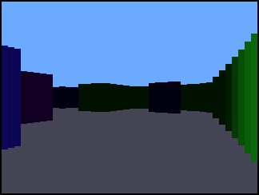
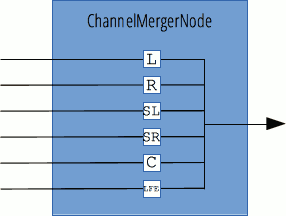
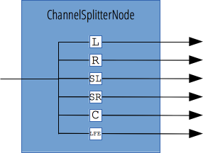

Found 2889 pages:
| # | Page | Tags and summary |
|---|---|---|
| 1 | Web API Interfaces | API, Apps, JavaScript, Reference, Réference, Référence, Web, WebAPI |
| When writing code for the Web using JavaScript, there are a great many APIs available. Below is a list of all the interfaces (that is, types of objects) that you may be able to use while developing your Web app or site. | ||
| 2 | AbstractWorker | API, AbstractWorker, Interface, Reference, Réference, Référence, Web Workers |
The AbstractWorker interface of the Web Workers API abstracts properties and methods common to all kind of workers, being Worker or SharedWorker. |
||
| 3 | AbstractWorker.onerror | API, AbstractWorker, EventHandler, Property, Reference, Référence, Web Workers, Workers, onerror |
The AbstractWorker.onerror property of the AbstractWorker interface represents an EventHandler, that is a function to be called when the error event occurs and bubbles through the Worker. |
||
| 4 | Alarm API | API, B2G, Firefox OS, Reference, Référence, WebAPI, alarm |
| The Alarm API allows applications to schedule actions to be run in the future. For example, some applications like alarm-clock, calendar or auto-update might need to utilize the Alarm API to trigger particular device behaviors at specified time points. | ||
| 5 | AnalyserNode | API, AnalyserNode, Interface, Reference, Réference, Référence, Web Audio API, audio |
The AnalyserNode interface represents a node able to provide real-time frequency and time-domain analysis information. It is an AudioNode that passes the audio stream unchanged from the input to the output, but allows you to take the generated data, process it, and create audio visualizations. |
||
| 6 | AnalyserNode.fftSize | API, AnalyserNode, Property, Reference, Référence, Web Audio API, audio, fftSize |
The fftSize property of the AnalyserNode interface is an unsigned long value representing the size of the FFT (Fast Fourier Transform) to be used to determine the frequency domain. |
||
| 7 | AnalyserNode.frequencyBinCount | API, AnalyserNode, Property, Reference, Référence, Web Audio API, audio, frequencyBinCount |
The frequencyBinCount property of the AnalyserNode interface is an unsigned long value half that of the FFT size. This generally equates to the number of data values you will have to play with for the visualization. |
||
| 8 | AnalyserNode.getByteFrequencyData() | API, AnalyserNode, Method, Reference, Réference, Référence, Web Audio API, audio, getByteFrequencyData |
A Uint8Array. |
||
| 9 | AnalyserNode.getByteTimeDomainData() | API, AnalyserNode, Method, Reference, Référence, Web Audio API, audio, getByteTimeDomainData |
A Uint8Array. |
||
| 10 | AnalyserNode.getFloatFrequencyData() | API, AnalyserNode, Method, Reference, Référence, Web Audio API, audio, getFloatFrequencyData |
A Float32Array. |
||
| 11 | AnalyserNode.getFloatTimeDomainData() | API, AnalyserNode, Method, Reference, Référence, Web Audio API, audio, getFloatTimeDomainData |
A Float32Array. |
||
| 12 | AnalyserNode.maxDecibels | API, AnalyserNode, Property, Reference, Référence, Web Audio API, audio, maxDecibels |
The maxDecibels property of the AnalyserNode interface Is a double value representing the maximum power value in the scaling range for the FFT analysis data, for conversion to unsigned byte/float values — basically, this specifies the maximum value for the range of results when using getFloatFrequencyData() or getByteFrequencyData(). |
||
| 13 | AnalyserNode.minDecibels | API, AnalyserNode, Property, Reference, Référence, Web Audio API, audio, minDecibels |
The minDecibels property of the AnalyserNode interface Is a double value representing the minimum power value in the scaling range for the FFT analysis data, for conversion to unsigned byte/float values — basically, this specifies the minimum value for the range of results when using getFloatFrequencyData() or getByteFrequencyData(). |
||
| 14 | AnalyserNode.smoothingTimeConstant | API, AnalyserNode, Property, Reference, Référence, Web Audio API, audio, smoothingTimeConstant |
The smoothingTimeConstant property of the AnalyserNode interface is a double value representing the averaging constant with the last analysis frame. It's basically an averagebetween the current buffer and the last buffer the AnalyserNode processed, and results in a much smoother set of value changes over time. |
||
| 15 | Animation | API, Experimental, Expérimental, Interface, NeedsContent, Reference, Réference, Référence, Web Animations |
The Animation interface represents a single animation player and provides playback controls and a timeline for an animation node or source. |
||
| 16 | Animation.currentTime | API, Experimental, Expérimental, Interface, Property, Reference, Réference, Référence, Web Animations |
The Animation.currentTime property returns or sets the current time of the animation if it is running, or null if the animation is paused. |
||
| 17 | Animation.finish() | API, Experimental, Expérimental, Interface, Method, Reference, Réference, Référence, Web Animations |
An InvalidState error is raised if the player's playback rate is 0 or the player's playback rate is greater than 0 and the end time of the animation is infinity. |
||
| 18 | Animation.pause() | Experimental, Expérimental, Method, NeedsExample, Reference, Réference, Référence, WebAPI, method |
| The following example shows | ||
| 19 | Animation.play() | API, Experimental, Expérimental, Interface, Method, Reference, Réference, Référence, Web Animations |
The following example uses play() to toggle from a "before" image to an "after" image. This could be paired with similar code to do the opposite using reverse(). |
||
| 20 | Animation.playState | API, AnimationPlayer, Experimental, Expérimental, Property, Read-only, Reference, Réference, Référence, Web Animations |
The Animation.playState read-only property is an enumerated value describing the playback state of an animation: |
||
| 21 | Animation.playbackRate | API, Experimental, Expérimental, Interface, Property, Reference, Réference, Référence, Web Animations |
The Animation.playbackRate property returns or sets the playback rate of the animation. |
||
| 22 | Animation.reverse() | API, Experimental, Expérimental, Interface, Method, Reference, Réference, Référence, Web Animations |
| The following example uses reverse() to toggle from an "after" image to a "before" image. This would be paired with similar code to do the opposite using play(). | ||
| 23 | Animation.startTime | API, Experimental, Expérimental, Interface, Property, Reference, Réference, Référence, Web Animations |
The Animation.startTime property returns or sets the scheduled time when an animation's playback should begin. |
||
| 24 | AnimationEvent | API, CSS, CSS Animations, Experimental, Expérimental, Interface, Reference, Réference, Référence |
The AnimationEvent interface represents events providing information related to animations. |
||
| 25 | AnimationEvent() | API, AnimationEvent, CSS Animations, CSSOM, Constructor, Experimental, Expérimental, Reference, Réference, Référence |
The AnimationEvent() constructor returns a newly created AnimationEvent, representing an event in relation with an animation. |
||
| 26 | AnimationEvent.animationName | API, AnimationEvent, CSS Animations, CSSOM, Experimental, Expérimental, Property, Reference, Réference, Référence |
The AnimationEvent.animationName read-only property is a DOMString containing the value of the animation-name CSS property associated with the transition. |
||
| 27 | AnimationEvent.elapsedTime | API, AnimationEvent, CSS Animations, CSSOM, Experimental, Expérimental, Property, Reference, Réference, Référence |
The AnimationEvent.elapsedTime read-only property is a float giving the amount of time the animation has been running, in seconds, when this event fired, excluding any time the animation was paused. For an "animationstart" event, elapsedTime is 0.0 unless there was a negative value for animation-delay, in which case the event will be fired with elapsedTime containing (-1 * delay). |
||
| 28 | AnimationEvent.initAnimationEvent() | API, AnimationEvent, CSS Animations, CSSOM, Method, Non-standard, Obsolete |
The AnimationEvent.initAnimationEvent() method Initializes an animation event created using the deprecated Document.createEvent("AnimationEvent") method. |
||
| 29 | AnimationEvent.pseudoElement | API, AnimationEvent, CSS, CSS Animations, CSSOM, Experimental, Expérimental, Property, Reference, Référence |
The AnimationEvent.pseudoElement read-only property is a DOMString, starting with '::', containing the name of the pseudo-element the animation runs on. If the animation doesn't run on a pseudo-element but on the element, an empty string: ''. |
||
| 30 | ArrayBufferView | API, Interface, JavaScript, Reference, Référence, Typed Arrays |
ArrayBufferView is a helper type representing any of the following JavaScript TypedArray types: |
||
| 31 | Attr | API, DOM |
This type represents a DOM element's attribute as an object. In most DOM methods, you will probably directly retrieve the attribute as a string (e.g., Element.getAttribute(), but certain functions (e.g., Element.getAttributeNode()) or means of iterating give Attr types. |
||
| 32 | AudioBuffer | API, AudioBuffer, Interface, Reference, Référence, Web Audio API, audio |
Objects of these types are designed to hold small audio snippets, typically less than 45 s. For longer sounds, objects implementing the MediaElementAudioSourceNode are more suitable. The buffer contains data in the following format: non-interleaved IEEE754 32-bit linear PCM with a nominal range between -1 and +1, that is, 32bits floating point buffer, with each samples between -1.0 and 1.0. If the AudioBuffer has multiple channels, they are stored in separate buffer. |
||
| 33 | AudioBuffer.copyFromChannel() | API, AudioBuffer, Method, Reference, Réference, Référence, Web Audio API, audio, copyFromChannel |
The copyFromChannel() method of the AudioBuffer interface copies the samples from the specified channel of the AudioBuffer to the destination array. |
||
| 34 | AudioBuffer.copyToChannel() | API, AudioBuffer, Method, Reference, Réference, Référence, Web Audio API, audio, copyToChannel |
The copyToChannel() method of the AudioBuffer interface copies the samples to the specified channel of the AudioBuffer, from the source array. |
||
| 35 | AudioBuffer.duration | API, AudioBuffer, Property, Reference, Référence, Web Audio API, audio, duration |
| A double. | ||
| 36 | AudioBuffer.getChannelData() | API, AudioBuffer, Method, Reference, Référence, Web Audio API, audio |
A Float32Array. |
||
| 37 | AudioBuffer.length | API, AudioBuffer, Property, Reference, Référence, Web Audio API, audio, length |
| A float. | ||
| 38 | AudioBuffer.numberOfChannels | API, AudioBuffer, Property, Reference, Référence, Web Audio API, audio, numberOfChannels |
| An integer. | ||
| 39 | AudioBuffer.sampleRate | API, AudioBuffer, Property, Reference, Référence, Web Audio API, audio, sampleRate |
| A float. | ||
| 40 | AudioBufferSourceNode | API, Audio, AudioBufferSourceNode, Interface, Reference, Réference, Référence, Web Audio API, audio |
The AudioBufferSourceNode interface represents an audio source consisting of in-memory audio data, stored in an AudioBuffer. It is an AudioNode that acts as an audio source. |
||
| 41 | AudioBufferSourceNode.buffer | API, Audio, AudioBufferSourceNode, Buffer, Property, Reference, Réference, Référence, Web Audio API, audio |
If the buffer property is set to the value NULL, it defines a single channel of silence. |
||
| 42 | AudioBufferSourceNode.detune | API, AudioBufferSourceNode, Property, Reference, Réference, Référence, Web Audio API, audio, detune |
| Technical review completed. Editorial review completed. | ||
| 43 | AudioBufferSourceNode.loop | API, AudioBufferSourceNode, Loop, Property, Reference, Réference, Référence, Web Audio API, audio |
The loop property's default value is false. |
||
| 44 | AudioBufferSourceNode.loopEnd | API, AudioBufferSourceNode, Property, Reference, Référence, Web Audio API, audio, loopEnd |
The loopEnd property's default value is 0. |
||
| 45 | AudioBufferSourceNode.loopStart | API, AudioBufferSourceNode, Property, Reference, Référence, Web Audio API, audio, loopStart |
The loopStart property's default value is 0. |
||
| 46 | AudioBufferSourceNode.onended | API, AudioBufferSourceNode, Property, Reference, Réference, Référence, Web Audio API, audio, onended |
The onended event handler of the AudioBufferSourceNode contains the callback associated with the ended event: this allows you to run code in response to the audio track finishing playback. |
||
| 47 | AudioBufferSourceNode.playbackRate | API, AudioBufferSourceNode, Property, Reference, Réference, Référence, Web Audio API, audio, playbackRate |
The default value is 1.0. When set to another value, the AudioBufferSourceNode applies pitch correction to the modified audio before sending it to the output. |
||
| 48 | AudioBufferSourceNode.start() | API, AudioBufferSourceNode, Method, Reference, Réference, Référence, Web Audio API, audio, start |
| The most simple example just starts the audio buffer playing from the beginning — you don't need to specify any parameters in this case: | ||
| 49 | AudioBufferSourceNode.stop() | API, AudioBufferSourceNode, Method, Reference, Référence, Web Audio API, audio, stop |
| The most simple example just stops the audio buffer playing immediately — you don't need to specify any parameters in this case: | ||
| 50 | AudioChannelManager | API, AudioChannelManager, AudioChannels, Firefox OS, Interface, Non-standard, Reference, Référence, audio |
The AudioChannelManager interface of the AudioChannels API includes features for managing your device's audio channels, including setting what channel's volume to affect when the volume buttons are pressed inside a particular app. |
||
| 51 | AudioChannelManager.headphones | API, AudioChannelManager, AudioChannels, Firefox OS, Non-standard, Property, Reference, Référence, audio, headphones |
The headphones read-only property of the AudioChannelManager interface returns a Boolean that indicates whether headphones are plugged into the device. A true value means that headphone are plugged in; false means they aren't. |
||
| 52 | AudioChannelManager.onheadphoneschange | API, AudioChannelManager, AudioChannels, Firefox OS, Non-standard, Property, Reference, Référence, audio, onheadphoneschange |
The onheadphoneschange event handler of the AudioChannelManager interface fires when the device's headphones are plugged in or unplugged. |
||
| 53 | AudioChannelManager.telephonySpeaker | API, AudioChannelManager, AudioChannels, Firefox OS, Non-standard, Property, Reference, Référence, audio, telephonySpeaker |
The telephonySpeaker property of the AudioChannelManager interface returns a Boolean that allows you to set whether the "telephony" audio channel should be played out of the device's speakers. |
||
| 54 | AudioChannelManager.volumeControlChannel | API, AudioChannelManager, AudioChannels, Firefox OS, Non-standard, Property, Reference, Référence, audio, volumeControlChannel |
The volumeControlChannel property of the AudioChannelManager interface returns a DOMString that allows you to set which audio channel should have its volume changed when you press the device's hardware volume controls. |
||
| 55 | AudioChannels API | API, AudioChannels, B2G, Firefox OS, Reference, Référence, audio |
| The AudioChannels API is a currently-Firefox OS-only feature allowing you to place your app audio content into a hierarchy of importance, which dictates when the audio will be paused and resumed in response to other audio playing and actions occurring and allows you to control the volume of different types of audio independently from one another. | ||
| 56 | Using the AudioChannels API | API, AudioChannels, B2G, Firefox OS, Guide, Non-standard, audio |
| The different audio channels are as follows: | ||
| 57 | AudioContext | API, Guide, Reference, Réference, Référence, Web Audio API, audio |
An AudioContext can be a target of events, therefore it implements the EventTarget interface. |
||
| 58 | AudioContext.close() | API, AudioContext, Media, Method, Reference, Réference, Référence, Web Audio API, audio, close |
The close() method of the AudioContext Interface closes the audio context, releasing any system audio resources that it uses. |
||
| 59 | AudioContext.createAnalyser() | API, AudioContext, Method, Reference, Référence, Web Audio API, audio, createAnalyser |
An AnalyserNode. |
||
| 60 | AudioContext.createBiquadFilter() | API, AudioContext, Method, Reference, Réference, Référence, Web Audio API, audio, createBiquadFilter |
A BiquadFilterNode. |
||
| 61 | AudioContext.createBuffer() | API, AudioContext, Method, Reference, Réference, Référence, Web Audio API, audio, createBuffer |
An AudioBuffer. |
||
| 62 | AudioContext.createBufferSource() | API, AudioContext, Method, Reference, Référence, Web Audio API, audio, createBufferSource |
An AudioBufferSourceNode. |
||
| 63 | AudioContext.createChannelMerger() | API, AudioContext, Method, Reference, Référence, Web Audio API, audio, createChannelMerger |
A ChannelMergerNode. |
||
| 64 | AudioContext.createChannelSplitter() | API, AudioContext, Method, Reference, Référence, Web Audio API, audio, createChannelSplitter |
A ChannelSplitterNode. |
||
| 65 | AudioContext.createConvolver() | API, AudioContext, Method, Reference, Référence, Web Audio API, audio, createConvolver |
A ConvolverNode. |
||
| 66 | AudioContext.createDelay() | API, AudioContext, Method, Reference, Référence, Web Audio API, audio, createDelay |
A DelayNode. |
||
| 67 | AudioContext.createDynamicsCompressor() | API, AudioContext, Method, Reference, Référence, Web Audio API, audio, createDynamicsCompressor |
| Compression lowers the volume of the loudest parts of the signal and raises the volume of the softest parts. Overall, a louder, richer, and fuller sound can be achieved. It is especially important in games and musical applications where large numbers of individual sounds are played simultaneously, where you want to control the overall signal level and help avoid clipping (distorting) of the audio output. | ||
| 68 | AudioContext.createGain() | API, AudioContext, Method, Reference, Référence, Web Audio API, audio, createGain |
A GainNode. |
||
| 69 | AudioContext.createJavaScriptNode() | API, Method, Obsolete, Reference, Référence, Web Audio API, createJavaScriptNode |
| No summary! | ||
| 70 | AudioContext.createMediaElementSource() | API, AudioContext, Method, Reference, Réference, Référence, Web Audio API, audio, createMediaElementSource |
For more details about media element audio source nodes, check out the MediaElementAudioSourceNode reference page. |
||
| 71 | AudioContext.createMediaStreamDestination() | API, AudioContext, Method, Reference, Référence, Web Audio API, audio, createMediaStreamDestination |
The MediaStream is created when the node is created and is accessible via the MediaStreamAudioDestinationNode's stream attribute. This stream can be used in a similar way as a MediaStream obtained via navigator.getUserMedia — it can, for example, be sent to a remote peer using the RTCPeerConnection addStream() method. |
||
| 72 | AudioContext.createMediaStreamSource() | API, AudioContext, Method, Reference, Référence, Web Audio API, audio, createMediastreamSource |
For more details about media stream audio source nodes, check out the MediaStreamAudioSourceNode reference page. |
||
| 73 | AudioContext.createOscillator() | API, AudioContext, Method, Reference, Référence, Web Audio API, audio, createOscillator |
An OscillatorNode. |
||
| 74 | AudioContext.createPanner() | API, AudioContext, Method, Reference, Réference, Référence, Web Audio API, audio, createPanner |
The panner node is spatialized in relation to the AudioContext's AudioListener (defined by the AudioContext.listener attribute), which represents the position and orientation of the person listening to the audio. |
||
| 75 | AudioContext.createPeriodicWave() | API, AudioContext, Method, Reference, Référence, Web Audio API, audio, createPeriodicWave |
A PeriodicWave. |
||
| 76 | AudioContext.createScriptProcessor() | API, AudioContext, Method, Reference, Référence, Web Audio API, audio, createScriptProcessor |
A ScriptProcessorNode. |
||
| 77 | AudioContext.createStereoPanner() | API, AudioContext, Method, Reference, Référence, Web Audio API, audio, createStereoPanner |
A StereoPannerNode. |
||
| 78 | AudioContext.createWaveShaper() | API, AudioContext, Method, Reference, Référence, Web Audio API, audio, createWaveShaper |
A WaveShaperNode. |
||
| 79 | AudioContext.createWaveTable() | API, Method, Obsolete, Reference, Référence, Web Audio API |
| 80 | AudioContext.currentTime | API, AudioContext, Property, Reference, Réference, Référence, Web Audio API, audio, currentTime |
| A double. | ||
| 81 | AudioContext.decodeAudioData() | API, AudioContext, Method, Reference, Référence, Web Audio API, audio, decodeAudioData |
| This is the preferred method of creating an audio source for Web Audio API from an audio track. | ||
| 82 | AudioContext.destination | API, AudioContext, Property, Reference, Référence, Web Audio API, audio, destination |
An AudioDestinationNode. |
||
| 83 | AudioContext.listener | API, AudioContext, Property, Reference, Référence, Web Audio API, audio, listener, spatialization |
An AudioListener object. |
||
| 84 | AudioContext.mozAudioChannelType | API, AudioChannels, AudioContext, NeedsExample, Non-standard, Property, Reference, Référence, Web Audio API, audio, mozAudioChannelType |
The readonly mozAudioChannelType property of the AudioContext interface can be used to set the audio channel that the sound playing in an audio context element will play in, on a Firefox OS device. |
||
| 85 | AudioContext.onstatechange | API, AudioContext, Property, Reference, Réference, Référence, Web Audio API, audio, events, onstatechange |
| Technical review completed. Editorial review completed. | ||
| 86 | AudioContext.resume() | API, AudioContext, Method, Reference, Réference, Référence, Web Audio API, audio, resume |
The resume() method of the AudioContext Interface resumes the progression of time in an audio context that has previously been suspended. |
||
| 87 | AudioContext.sampleRate | API, AudioContext, Property, Reference, Référence, Web Audio API, audio, sampleRate |
| A floating point number. | ||
| 88 | AudioContext.state | API, Audio, AudioContext, Property, Reference, Réference, Référence, Web Audio API, audio, state |
A DOMString. Possible values are: |
||
| 89 | AudioContext.suspend() | API, AudioContext, Method, Reference, Réference, Référence, Web Audio API, audio, suspend |
The suspend() method of the AudioContext Interface suspends the progression of time in the audio context, temporarily halting audio hardware access and reducing CPU/battery usage in the process — this is useful if you want an application to power down the audio hardware when it will not be using an audio context for a while. |
||
| 90 | AudioDestinationNode | API, AudioDestinationNode, Interface, Reference, Référence, Web Audio API, WebAPI, audio |
AudioDestinationNode has no output (as it is the output, no more AudioNode can be linked after it in the audio graph) and one input. The amount of channels in the input must be between 0 and the maxChannelCount value or an exception is raised. |
||
| 91 | AudioDestinationNode.maxChannelCount | API, AudioDestinationNode, Property, Reference, Référence, Web Audio API, audio, maxChannelCount |
An unsigned long. |
||
| 92 | AudioListener | API, AudioListener, Interface, Reference, Réference, Référence, Web Audio API, WebAPI, audio |
It is important to note that there is only one listener per context and that it isn't an AudioNode. |
||
| 93 | AudioListener.dopplerFactor | API, AudioListener, Deprecated, Property, Reference, Réference, Référence, Web Audio API, audio, dopplerFactor |
| A double. | ||
| 94 | AudioListener.setOrientation() | API, AudioListener, Method, Reference, Référence, Web Audio API, audio, setOrientation |
| Void. | ||
| 95 | AudioListener.setPosition() | API, AudioListener, Deprecated, Method, Reference, Réference, Référence, Web Audio API, audio, setPosition |
| Void. | ||
| 96 | AudioListener.speedOfSound | API, AudioListener, Deprecated, Property, Reference, Réference, Référence, Web Audio API, audio, speedOfSound |
The speedOfSound property of the AudioListener interface is a double value representing the speed of sound, in meters per second. |
||
| 97 | AudioNode | API, AudioNode, Interface, Reference, Réference, Référence, Web Audio API, WebAPI, audio |
The AudioNode interface is a generic interface for representing an audio processing module like an audio source (e.g. an HTML <audio> or <video> element, an OscillatorNode, etc.), the audio destination, intermediate processing module (e.g. a filter like BiquadFilterNode or ConvolverNode), or volume control (like GainNode). |
||
| 98 | AudioNode.channelCount | API, AudioNode, Property, Reference, Référence, Web Audio API, audio, channelCount |
channelCount's usage and precise definition depend on the value of AudioNode.channelCountMode: |
||
| 99 | AudioNode.channelCountMode | API, AudioNode, Property, Reference, Référence, Web Audio API, audio, channelCountMode |
The possible values of channelCountMode and their meanings are: |
||
| 100 | AudioNode.channelInterpretation | API, AudioNode, Property, Reference, Référence, Web Audio API, audio, channelInterpretation |
When the amount of channels doesn't match between an input and an output, up- or down-mixing happens according the following rules. This can be somewhat controlled by setting the AudioNode.channelInterpretation property to speakers or discrete. |
||
| 101 | AudioNode.connect(AudioNode) | API, AudioNode, Method, Reference, Réference, Référence, Web Audio API, audio, connect |
| Void. | ||
| 102 | AudioNode.connect(AudioParam) | API, AudioNode, Method, Reference, Référence, Web Audio API, audio, connect |
It is possible to connect an AudioNode output to more than one AudioParam, and more than one AudioNode output to a single AudioParam, with multiple calls to connect(). Fan-in and fan-out are therefore supported. |
||
| 103 | AudioNode.context | API, AudioNode, Context, Property, Reference, Référence, Web Audio API, audio |
An AudioContext object. |
||
| 104 | AudioNode.disconnect() | API, Audio, AudioNode, Disconnect, Method, Reference, Réference, Référence, Web Audio API, audio, method |
| Void. | ||
| 105 | AudioNode.numberOfInputs | API, AudioNode, Property, Reference, Référence, Web Audio API, audio, numberOfInputs |
| An integer. | ||
| 106 | AudioNode.numberOfOutputs | API, AudioNode, Property, Reference, Référence, Web Audio API, audio, numberOfOutputs |
| An integer. | ||
| 107 | AudioParam | API, AudioParam, Reference, Référence, Web Audio API, WebAPI, audio |
There are two kinds of AudioParam, a-rate and k-rate parameters: |
||
| 108 | AudioParam.cancelScheduledValues() | API, AudioParam, Method, Reference, Référence, Web Audio API, audio, cancelScheduledValues |
| void. | ||
| 109 | AudioParam.defaultValue | API, AudioParam, Property, Reference, Référence, Web Audio API, audio, defaultValue |
| A float. | ||
| 110 | AudioParam.exponentialRampToValueAtTime() | API, AudioParam, Method, Reference, Référence, Web Audio API, audio, exponentialRampToValueAtTime |
| void. | ||
| 111 | AudioParam.linearRampToValueAtTime() | API, Audio, AudioParam, Method, Reference, Référence, Web Audio API, audio, linearRampToValueAtTime |
| NOTE: both the example and live example are incorrect, see https://github.com/WebAudio/web-audio-api/issues/34 | ||
| 112 | AudioParam.setTargetAtTime() | API, AudioParam, Method, Reference, Référence, Web Audio API, audio, setTargetAtTime |
The change starts at the time specified in startTime and exponentially moves towards the value given by the target parameter. The exponential decay rate is defined by the timeConstant parameter. This is the time it takes a first-order linear continuous time-invariant system to reach the value 1 - 1/e (around 63.2%) given a step input response (transition from 0 to 1 value): basically, the larger it is, the slower the transition will be. This is useful for decay or release portions of envelopes. |
||
| 113 | AudioParam.setValueAtTime() | API, AudioParam, Method, Reference, Référence, Web Audio API, audio, setValueAtTime |
| void. | ||
| 114 | AudioParam.setValueCurveAtTime() | API, AudioParam, Method, Reference, Référence, Web Audio API, audio, setValueCurveAtTime |
| void. | ||
| 115 | AudioParam.value | API, AudioParam, Property, Reference, Référence, Web Audio API, audio, value |
Though value can be set, any modifications happening while there are automation events scheduled — that is, events scheduled using the methods of the AudioParam — are ignored, without raising any exception. |
||
| 116 | AudioProcessingEvent | API, Deprecated, Interface, Internationalization, Reference, Réference, Référence, Web Audio API, WebAPI, audio |
The list below includes the properties inherited from its parent, Event. |
||
| 117 | Battery Status API | API, Apps, Battery, Firefox OS, Guide, Mobile, WebAPI |
| The Battery Status API, more often referred to as the Battery API, provides information about the system's battery charge level and lets you be notified by events that are sent when the battery level or charging status change. This can be used to adjust your app's resource usage to reduce battery drain when the battery is low, or to save changes before the battery runs out in order to prevent data loss. | ||
| 118 | BatteryManager | API, Battery API, Device API, Interface, Reference, Référence |
The BatteryManager interface provides ways to get information about the system's battery charge level. |
||
| 119 | BatteryManager.charging | API, Battery API, NeedsExample, NeedsMarkupWork, Property, Reference, Référence |
| A Boolean value indicating whether or not the device's battery is currently being charged. | ||
| 120 | BatteryManager.chargingTime | API, Battery API, NeedsExample, NeedsMarkupWork, Property, Reference, Référence |
| Indicates the amount of time, in seconds, that remain until the battery is fully charged. | ||
| 121 | BatteryManager.dischargingTime | API, Battery API, NeedsExample, NeedsMarkupWork, Property, Reference, Référence |
| Indicates the amount of time, in seconds, that remains until the battery is fully discharged. | ||
| 122 | BatteryManager.level | API, Battery API, NeedsExample, NeedsMarkupWork, Property, Reference, Référence |
Indicates the current battery charge level as a value between 0.0 and 1.0. |
||
| 123 | BatteryManager.onchargingchange | API, Battery API, Event Handler, NeedsExample, NeedsMarkupWork, Property, Reference, Référence |
Specifies an event listener to receive chargingchange events. These events occur when the battery charging state is updated. |
||
| 124 | BatteryManager.onchargingtimechange | API, Battery API, Event Handler, NeedsExample, NeedsMarkupWork, Property, Reference, Référence |
Specifies an event listener to receive chargingtimechange events. These events occur when the battery chargingTime is updated. |
||
| 125 | BatteryManager.ondischargingtimechange | API, Battery API, Event Handler, NeedsExample, NeedsMarkupWork, Property, Reference, Référence |
Specifies an event listener to receive dischargingtimechange events. These events occur when the battery dischargingTime is updated. |
||
| 126 | BatteryManager.onlevelchange | API, Battery API, Event Handler, NeedsExample, NeedsMarkupWork, Property, Reference, Référence |
Specifies an event listener to receive levelchange events. These events occur when the battery level is updated. |
||
| 127 | BeforeInstallPromptEvent | API, BeforeInstallPromptEvent, Event, Experimental, Expérimental, Interface, Reference, Réference, Référence |
The BeforeInstallPromptEvent is passed into the onbeforeinstallprompt handler and displatched when a web manifest exists, but before a user is prompted to save a web site to a home screen on mobile. |
||
| 128 | BeforeUnloadEvent | API, Reference, Référence, WebAPI, events |
The beforeunload event is fired when the window, the document and its resources are about to be unloaded. |
||
| 129 | BiquadFilterNode | API, BiquadFilterNode, Interface, NeedsMobileBrowserCompatibility, Reference, Réference, Référence, Web Audio API, WebAPI, audio |
The BiquadFilterNode interface represents a simple low-order filter, and is created using the AudioContext.createBiquadFilter() method. It is an AudioNode that can represent different kinds of filters, tone control devices, and graphic equalizers. |
||
| 130 | BiquadFilterNode.Q | API, BiquadFilterNode, Property, Q, Reference, Référence, Web Audio API, audio |
An AudioParam. |
||
| 131 | BiquadFilterNode.detune | API, BiquadFilterNode, Property, Reference, Référence, Web Audio API, audio, detune |
An a-rate AudioParam. |
||
| 132 | BiquadFilterNode.frequency | API, BiquadFilterNode, Property, Reference, Référence, Web Audio API, audio, frequency |
An AudioParam. |
||
| 133 | BiquadFilterNode.gain | API, BiquadFilterNode, Gain, Property, Reference, Référence, Web Audio API, audio |
An AudioParam. |
||
| 134 | BiquadFilterNode.getFrequencyResponse() | API, BiquadFilterNode, Method, Reference, Référence, Web Audio API, audio, getFrequencyResponse |
A BiquadFilterNode. |
||
| 135 | BiquadFilterNode.type | API, BiquadFilterNode, Property, Reference, Référence, Type, Web Audio API, audio |
| A string (enum) representing a BiquadFilterType. | ||
| 136 | Blob | API, Files, Reference, Référence, WebAPI |
A Blob object represents a file-like object of immutable, raw data. Blobs represent data that isn't necessarily in a JavaScript-native format. The File interface is based on Blob, inheriting blob functionality and expanding it to support files on the user's system. |
||
| 137 | Blob() | API, Blob, Constructor, Experimental, Expérimental, File API, Reference, Référence |
The Blob() constructor returns a new Blob object. The content of the blob consists of the concatenation of the values given in the parameter array. |
||
| 138 | Blob.size | API, Files, Property, Reference, Référence, Web API |
| Returns the size of the file in bytes. | ||
| 139 | Blob.slice() | API, Files, Method, Reference, Réference, Référence, WebAPI, method |
The slice is used to create a new Blob object containing the data in the specified range of bytes of the source Blob. |
||
| 140 | Blob.type | API, DOM, File, Files, Property, Reference, Référence, file |
The type property of a Blob object provides the MIME type of the file. It returns an empty string if the type couldn't determined. |
||
| 141 | BlobBuilder | API, DOM, DOM Reference, File API, Obsolete, Reference, Référence, WebAPI |
The BlobBuilder interface provides an easy way to construct Blob objects. Just create a BlobBuilder and append chunks of data to it by calling the append() method. When you're done building your blob, call getBlob() to retrieve a Blob containing the data you sent into the blob builder. |
||
| 142 | BlobEvent | API, Experimental, Expérimental, Media, Media Stream Recording, Reference, Référence, audio |
The BlobEvent interface represents events associated with a Blob. These blobs are typically, but not necessarily, associated with media content. |
||
| 143 | BlobEvent() | API, BlobEvent, Constructor, DOM, DOM Reference, Experimental, Expérimental, Media Stream Encoding, Reference, Référence, WebAPI |
The BlobEvent() constructor returns a newly created BlobEvent object with an associated Blob. |
||
| 144 | BlobEvent.data | API, BlobEvent, DOM, DOM Reference, Experimental, Expérimental, Media Stream Recording, Property, Reference, Référence, WebAPI |
The BlobEvent.data read-only property represents a Blob associated with the event. |
||
| 145 | BluetoothAdapter | API, B2G, BluetoothAdapter, Firefox OS, Interface, Non-standard, Reference, Référence, Web Bluetooth, WebAPI |
The BluetoothAdapter interface of the Web Bluetooth API is used to handle all the operations requested by Bluetooth networks. A Bluetooth adapter is the physical interface which is used to interact with local Bluetooth device. |
||
| 146 | BluetoothAdapter.address | API, B2G, Firefox OS, Non Standard, Property, Reference, Référence, Web Bluetooth, WebAPI |
The address property value provides the address of the device's adapter on the Bluetooth micro-network. |
||
| 147 | BluetoothAdapter.answerWaitingCall() | API, B2G, Firefox OS, Method, Non Standard, Reference, Référence, Web Bluetooth, WebAPI |
The answerWaitingCall method is used to allow HFP devices to answer a pending incoming call on a CDMA network. |
||
| 148 | BluetoothAdapter.class | API, B2G, Firefox OS, Non Standard, Property, Reference, Référence, Web Bluetooth, WebAPI |
The class property value provides the Bluetooth "Class of Device" number of the device's adapter. This number provides much information about the device's capabilities. See the Bluetooth specification 4.0, section 6.26 for further information about the meaning of that number. |
||
| 149 | BluetoothAdapter.confirmReceivingFile() | API, B2G, Firefox OS, Method, Non Standard, Reference, Référence, Web Bluetooth, WebAPI |
The confirmReceivingFile method is used to accept or reject the incoming file transfer request received from the remote device. |
||
| 150 | BluetoothAdapter.connect() | API, B2G, Firefox OS, Method, Non Standard, Reference, Référence, Web Bluetooth, WebAPI |
The connect method is used to connect the device's adapter to a specific service of a remote device. |
||
| 151 | BluetoothAdapter.connectSco() | API, B2G, Firefox OS, Method, Non Standard, Reference, Référence, Web Bluetooth, WebAPI |
The connectSco method is used to allow the device to enable the SCO connection to broadcast and listen to audio to/from the remote devices it is connected to. |
||
| 152 | BluetoothAdapter.devices | API, B2G, Firefox OS, Non Standard, Property, Reference, Référence, Web Bluetooth, WebAPI |
The devices property gives direct access to all the Bluetooth devices discovered in the area surrounding the device's adapter. |
||
| 153 | BluetoothAdapter.disconnect() | API, B2G, Firefox OS, Method, Non Standard, Reference, Référence, Web Bluetooth, WebAPI |
The disconnect method is used to disconnect the device's adapter from a specific service of a remote device. |
||
| 154 | BluetoothAdapter.disconnectSco() | API, B2G, Firefox OS, Method, Non Standard, Reference, Référence, Web Bluetooth, WebAPI |
The disconnectSco method is used to allow the device to disable the SCO connection with the remote devices it is connected to. |
||
| 155 | BluetoothAdapter.discoverable | API, B2G, Firefox OS, Non Standard, Property, Reference, Référence, Web Bluetooth, WebAPI |
The discoverable property indicates if the device is discoverable (true) or not (false) by other Bluetooth devices. |
||
| 156 | BluetoothAdapter.discoverableTimeout | API, B2G, Firefox OS, Non Standard, Property, Reference, Référence, Web Bluetooth, WebAPI |
The discoverableTimeout property indicates how long (in seconds) the device remains discoverable. |
||
| 157 | BluetoothAdapter.discovering | API, B2G, Firefox OS, Non Standard, Property, Reference, Référence, Web Bluetooth, WebAPI |
The discovering property indicates if the device is in the process of discovering (true) or not (false) surrounding Bluetooth devices. |
||
| 158 | BluetoothAdapter.getConnectedDevices() | API, B2G, Firefox OS, Method, Non-standard, Reference, Référence, Web Bluetooth, WebAPI |
The getConnectedDevices method is used to retrieve the full list of all devices connected with a specific service of local adapter. |
||
| 159 | BluetoothAdapter.getPairedDevices() | API, B2G, Firefox OS, Method, Non Standard, Reference, Référence, Web Bluetooth, WebAPI |
The getPairedDevices method is used to retrieve the full list of all devices paired with the device's adapter. |
||
| 160 | BluetoothAdapter.ignoreWaitingCall() | API, B2G, Firefox OS, Method, Non Standard, Reference, Référence, Web Bluetooth, WebAPI |
The ignoreWaitingCall method is used to allow HFP devices to dismiss a pending incoming call on a CDMA network. |
||
| 161 | BluetoothAdapter.isConnected() | API, B2G, Firefox OS, Method, Non-standard, Reference, Référence, Web Bluetooth, WebAPI |
The isConnected method is used to check if a device with a given Bluetooth profile is connected. |
||
| 162 | BluetoothAdapter.isScoConnected() | API, B2G, Firefox OS, Method, Non Standard, Reference, Référence, Web Bluetooth, WebAPI |
The isScoConnected method is used to allow to know if there is a SCO connection between local and the remote Bluetooth device. |
||
| 163 | BluetoothAdapter.name | API, B2G, Firefox OS, Non Standard, Property, Reference, Référence, Web Bluetooth, WebAPI |
The name property provides the human readable name of the device's adapter. |
||
| 164 | BluetoothAdapter.ona2dpstatuschanged | API, B2G, Firefox OS, Non Standard, Property, Reference, Référence, Web Bluetooth, WebAPI |
Specifies an event listener to receive a2dpstatuschanged events. Those events occur when an A2DP connection status changes. |
||
| 165 | BluetoothAdapter.ondevicefound | API, B2G, Firefox OS, Non Standard, Property, Reference, Référence, Web Bluetooth, WebAPI |
Specifies an event listener to receive devicefound events. Those events occur when a Bluetooth device is discovered in the surrounding area. |
||
| 166 | BluetoothAdapter.onhfpstatuschanged | API, B2G, Firefox OS, Non Standard, Property, Reference, Référence, Web Bluetooth, WebAPI |
Specifies an event listener to receive hfpstatuschanged events. Those events occur when an HFP connection status changes. |
||
| 167 | BluetoothAdapter.onpairedstatuschanged | API, B2G, Firefox OS, Non Standard, Property, Reference, Référence, Web Bluetooth, WebAPI |
Specifies an event listener to receive pairedstatuschanged events. Those events occur when a pairing process is completed. |
||
| 168 | BluetoothAdapter.onrequestmediaplaystatus | API, B2G, Firefox OS, Non Standard, Property, Reference, Référence, Web Bluetooth, WebAPI |
Specifies an event listener to receive requestmediaplaystatus events. Those events occur when a remote Bluetooth device queries the current media play status. |
||
| 169 | BluetoothAdapter.onscostatuschanged | API, B2G, Firefox OS, Non Standard, Property, Reference, Référence, Web Bluetooth, WebAPI |
Specifies an event listener to receive scostatuschanged events. Those events occur when a SCO connection status changes. |
||
| 170 | BluetoothAdapter.pair() | API, B2G, Firefox OS, Method, Non Standard, Reference, Référence, Web Bluetooth, WebAPI |
The pair method is used to start pairing a remote device with the device's adapter. |
||
| 171 | BluetoothAdapter.sendFile() | API, B2G, Firefox OS, Method, Non Standard, Reference, Référence, Web Bluetooth, WebAPI |
| Technical review completed. | ||
| 172 | BluetoothAdapter.sendMediaMetaData() | API, B2G, Firefox OS, Method, Non Standard, Reference, Référence, Web Bluetooth, WebAPI |
The sendMediaMetaData method is used to send metadata about media to remote devices connected with the AVRCP 1.3 profile. |
||
| 173 | BluetoothAdapter.sendMediaPlayStatus() | API, B2G, Firefox OS, Method, Non Standard, Reference, Référence, Web Bluetooth, WebAPI |
The sendMediaPlayStatus method is used to send the play status of the device to remote devices connected with the AVRCP 1.3 profile. |
||
| 174 | BluetoothAdapter.setDiscoverable() | API, B2G, Firefox OS, Method, Non Standard, Reference, Référence, Web Bluetooth, WebAPI |
The setDiscoverable method is used to change the value of the discoverable property for the device's adapter. |
||
| 175 | BluetoothAdapter.setDiscoverableTimeout() | API, B2G, Firefox OS, Method, Non Standard, Reference, Référence, Web Bluetooth, WebAPI |
The setDiscoverableTimeout method is used to change the value of the discoverableTimeout property for the device's adapter. |
||
| 176 | BluetoothAdapter.setName() | API, B2G, Firefox OS, Method, Non Standard, Reference, Référence, Web Bluetooth, WebAPI |
The setName method is used to change the value of the name property for the device's adapter. |
||
| 177 | BluetoothAdapter.setPairingConfirmation() | API, B2G, Firefox OS, Method, Non Standard, Reference, Référence, Web Bluetooth, WebAPI |
The setPairingConfirmation method is used to send back the pairing confirmation when the device's adapter tries to pair itself with a remote device. |
||
| 178 | BluetoothAdapter.setPasskey() | API, B2G, Firefox OS, Method, Non Standard, Reference, Référence, Web Bluetooth, WebAPI |
The setPasskey method is used to send back the requested Passkey code when the device's adapter tries to pair itself with a remote device. |
||
| 179 | BluetoothAdapter.setPinCode() | API, B2G, Firefox OS, Method, Non Standard, Reference, Référence, Web Bluetooth, WebAPI |
The setPinCode method is used to send back the requested PIN code when the device's adapter tries to pair itself with a remote device. |
||
| 180 | BluetoothAdapter.startDiscovery() | API, B2G, Firefox OS, Method, Non Standard, Reference, Référence, Web Bluetooth, WebAPI |
The startDiscovery method is used to have the device's adapter start seeking for remote devices. |
||
| 181 | BluetoothAdapter.stopDiscovery() | API, B2G, Firefox OS, Method, Non Standard, Reference, Référence, Web Bluetooth, WebAPI |
The stopDiscovery method is used to have the device's adapter stop seeking for remote devices. |
||
| 182 | BluetoothAdapter.stopSendingFile() | API, B2G, Firefox OS, Method, Non Standard, Reference, Référence, Web Bluetooth, WebAPI |
The stopSendingFile method is used to abort sending a file to a given remote device. |
||
| 183 | BluetoothAdapter.toggleCalls() | API, B2G, Firefox OS, Method, Non Standard, Reference, Référence, Web Bluetooth, WebAPI |
The toggleCalls method is used to allow HFP devices to switch from one call to another on a CDMA network. |
||
| 184 | BluetoothAdapter.unpair() | API, B2G, Firefox OS, Method, Non Standard, Reference, Référence, Web Bluetooth, WebAPI |
The unpair method is used to remove the paired device from the paired device list of the device's adapter. |
||
| 185 | BluetoothAdapter.uuids | API, B2G, Firefox OS, Non Standard, Property, Reference, Référence, Web Bluetooth, WebAPI |
The uuids property provides the list of all Bluetooth services' UUIDs the device's adapter is able to provide. See the Bluetooth specification assigned numbers part for an exhaustive list of possible services' UUIDs. |
||
| 186 | BluetoothAdapterEvent | API, B2G, Bluetooth, BluetoothAdapterEvent, Certified, Events, Firefox OS, Interface, Non-standard, Reference, Web Bluetooth, events |
The BluetoothAdapterEvent interface of the Web Bluetooth API provides access to a BluetoothAdapter object and its address as the parameter of a adapteradded or adapterremoved event handler (see BluetoothManager.onadapteradded and BluetoothManager.onadapterremoved), when fired. |
||
| 187 | BluetoothAttributeEvent | API, B2G, Bluetooth, BluetoothAttributeEvent, Certified, Firefox OS, Interface, Non-standard, Reference, Web Bluetooth |
The BluetoothAttributeEvent interface of the Web Bluetooth API provides access to changed attributes and their new values as the parameter of attributechanged event handlers (including BluetoothManager.onattributechanged, BluetoothAdapter.onattributechanged, and BluetoothDevice.onattributechanged), when fired. |
||
| 188 | BluetoothClassOfDevice | API, B2G, Bluetooth, BluetoothClassOfDevice, Certified, Firefox OS, Interface, Non-standard, Reference, Web Bluetooth |
The BluetoothClassOfDevice interface of the Web Bluetooth API provides identifying/classification information about a given remote Bluetooth device, available at discovery stage. |
||
| 189 | BluetoothDevice | API, BluetoothDevice, Certified, Firefox OS, Interface, Non-standard, Reference, Référence, Web Bluetooth |
The BluetoothDevice interface of the Web Bluetooth API provides information regarding a given Bluetooth device. |
||
| 190 | BluetoothDevice.address | API, B2G, Firefox OS, Non Standard, Property, Reference, Référence, Web Bluetooth, WebAPI |
The address property value provides the address of the device on the Bluetooth micro-network. |
||
| 191 | BluetoothDevice.class | API, B2G, Firefox OS, Non Standard, Property, Reference, Référence, Web Bluetooth, WebAPI |
The class property value provides the Bluetooth "Class of Device" number of the device. This number provides much information about the device's capabilities. See the Bluetooth specification 4.0, section 6.26 for further information about the meaning of that number. |
||
| 192 | BluetoothDevice.connected | API, B2G, Firefox OS, Non Standard, Property, Reference, Référence, Web Bluetooth, WebAPI |
The connected property indicates if the device is connected to the current device's adapter (true) or not (false). |
||
| 193 | BluetoothDevice.icon | API, B2G, Firefox OS, Non Standard, Property, Reference, Référence, Web Bluetooth, WebAPI |
The icon property is a string indicating which kind of icon could be used to represent the device. |
||
| 194 | BluetoothDevice.name | API, B2G, Firefox OS, Non Standard, Property, Reference, Référence, Web Bluetooth, WebAPI |
The name property provides the human readable name of the device. |
||
| 195 | BluetoothDevice.paired | API, B2G, Firefox OS, Non Standard, Property, Reference, Référence, Web Bluetooth, WebAPI |
The paired property indicates if the device is paired to the current device's adapter (true) or not (false). |
||
| 196 | BluetoothDevice.services | API, B2G, Firefox OS, Non Standard, Property, Reference, Référence, Web Bluetooth, WebAPI |
The services property provides a list of Bluetooth services the device is able to provide. For a full list of possible Bluetooth services see the Bluetooth specification. |
||
| 197 | BluetoothDevice.uuids | API, B2G, Firefox OS, Non Standard, Property, Reference, Référence, Web Bluetooth, WebAPI |
The uuids property provides the list of UUIDs of each Bluetooth service the device is able to provide. For a full list of possible Bluetooth services see the Bluetooth specification. |
||
| 198 | BluetoothDeviceEvent | API, B2G, Bluetooth, BluetoothDeviceEvent, Certified, Firefox OS, Interface, Non-standard, Reference, Référence, Web Bluetooth, WebAPI |
The BluetoothDeviceEvent interface of the Web Bluetooth API provides access to a found/paired device (BluetoothDevice) object or the address or an unpaired device as the parameter of a devicefound, devicepaired or deviceunpaired event handler (see BluetoothDiscoveryHandle.ondevicefound, BluetoothAdapter.ondevicepaired, BluetoothAdapter.ondeviceunpaired), when fired. |
||
| 199 | BluetoothDeviceEvent.device | API, B2G, Firefox OS, Non Standard, Property, Reference, Référence, Web Bluetooth, WebAPI |
The device property gives access to the device bound to the event. |
||
| 200 | BluetoothDiscoveryHandle | API, B2G, Bluetooth, BluetoothDiscoveryHandle, Certified, Firefox OS, Interface, Non-standard, Reference, Web Bluetooth |
The BluetoothDiscoveryHandle interface of the Web Bluetooth API is used to notify the current application about the discovery of a remote bluetooth device. |
||
| 201 | BluetoothGatt | API, B2G, Bluetooth, BluetoothGatt, Certified, Firefox OS, Interface, Non-standard, Reference, Web Bluetooth |
The BluetoothGatt interface of the Web Bluetooth API handles initial communications and connections with Gatt services. |
||
| 202 | BluetoothGattCharacteristic | API, B2G, Bluetooth, BluetoothGattCharacteristic, Certified, Firefox OS, Interface, Non-standard, Reference, Web Bluetooth |
The BluetoothGattCharacteristic interface of the Web Bluetooth API represents a GATT service characteristic, which includes characteristic definition, value, properties and configuration info, and a list of descriptors that provide related information. |
||
| 203 | BluetoothGattCharacteristicEvent | API, B2G, Bluetooth, BluetoothGattCharacteristicEvent, Certified, Firefox OS, Interface, Non-standard, Reference, Web Bluetooth |
The BluetoothGattCharacteristicEvent interface of the Web Bluetooth API provides access to an updated BluetoothGattCharacteristic object as the parameter of the BluetoothGatt.oncharacteristicchanged, handler, when the characteristicchanged event is fired. |
||
| 204 | BluetoothGattDescriptor | API, B2G, Bluetooth, BluetoothGattDescriptor, Certified, Firefox OS, Interface, Non-standard, Reference, Web Bluetooth |
The BluetoothGattDescriptor interface of the Web Bluetooth API represents a GATT descriptor, which contains related information about a characteristic value. |
||
| 205 | BluetoothGattServer | API, B2G, Bluetooth, BluetoothGattServer, Certified, Firefox OS, Interface, Non-standard, Reference, Web Bluetooth |
The BluetoothGattServer interface of the Web Bluetooth API provides Bluetooth GATT server functionality to allow creation of Bluetooth Smart/LE services and characteristics. |
||
| 206 | BluetoothGattService | API, B2G, Bluetooth, BluetoothGattService, Certified, Firefox OS, Interface, Non-standard, Reference, Web Bluetooth |
The BluetoothGattService interface of the Web Bluetooth API represents a service provided by a GATT server, including the service definition, a list of referenced services, and a list of the characteristics of this service. |
||
| 207 | BluetoothLeDeviceEvent | API, B2G, Bluetooth, BluetoothLeDeviceEvent, Certified, Firefox OS, Interface, Non-standard, Reference, Web Bluetooth |
The BluetoothLeDeviceEvent interface of the Web Bluetooth API provides access to an LE device BluetoothDevice object and its RSSI value and advertisement record, as the parameter of a devicefound event handler (see BluetoothDiscoveryHandle.ondevicefound), when fired. |
||
| 208 | BluetoothManager | API, B2G, BluetoothManager, Certified, DOM, Firefox OS, Interface, Non-standard, Reference, Référence, Web Bluetooth, WebAPI |
The BluetoothManager interface of the Web Bluetooth API allows to access all Bluetooth adapters available on the device. Adapters are the connection interface to connect a Bluetooth device to that device. |
||
| 209 | BluetoothManager.enabled | API, B2G, Firefox OS, Non Standard, Property, Reference, Référence, Web Bluetooth, WebAPI |
The enabled property value indicates whether the Bluetooth is turned on (true) or off (false). |
||
| 210 | BluetoothManager.getDefaultAdapter() | API, Method, Non Standard, Reference, Référence, Web Bluetooth, WebAPI |
The getDefaultAdapter method is used to retrieve the default adapter used to connect the device to third-party Bluetooth devices. |
||
| 211 | BluetoothManager.isConnected() | API, B2G, Firefox OS, Method, Non Standard, Reference, Référence, Web Bluetooth, WebAPI |
The isConnected method is used to check if a device with a given Bluetooth profile is connected. |
||
| 212 | BluetoothManager.onadapteradded | API, B2G, Firefox OS, Non Standard, Property, Reference, Référence, Web Bluetooth, WebAPI |
Specifies an event listener to receive adapteradded events. Those events occur when a Bluetooth adapter is enabled on the device. Each time this event occurs, the BluetoothManager.getDefaultAdapter() method will be able to access the last enabled adapter. |
||
| 213 | BluetoothManager.ondisabled | API, B2G, Firefox OS, Non Standard, Property, Reference, Référence, Web Bluetooth, WebAPI |
Specifies an event listener to receive disabled events. Those events occur when the device's Bluetooth is turned off. |
||
| 214 | BluetoothManager.onenabled | API, B2G, Firefox OS, Non Standard, Property, Reference, Référence, Web Bluetooth, WebAPI |
Specifies an event listener to receive enabled events. Those events occur when the device's Bluetooth is turned on. |
||
| 215 | BluetoothPairingEvent | API, B2G, Bluetooth, BluetoothPairingEvent, Certified, Firefox OS, Interface, Non-standard, Reference, Web Bluetooth |
The BluetoothPairingEvent interface of the Web Bluetooth API provides access to a device's name and the BluetoothPairingHandle object required for pairing devices as the parameter of pairing-related handlers (for example including BluetoothPairingListener.ondisplaypasskeyreq and BluetoothPairingListener.onenterpincodereq), when fired. |
||
| 216 | BluetoothPairingHandle | API, B2G, Bluetooth, BluetoothPairingHandle, Certified, Firefox OS, Interface, Non-standard, Reference, Web Bluetooth |
The BluetoothPairingHandle interface of the Web Bluetooth API contains the functionality required for completing a device pairing operation, including passkeys, and mechanisms to reply to user-entered pin codes and confirm passkeys. |
||
| 217 | BluetoothPairingListener | API, B2G, BluePairingListener, Bluetooth, Certified, Firefox OS, Interface, Non-standard, Reference, Web Bluetooth |
The BluetoothPairingListener interface of the Web Bluetooth API defines event handlers triggered for different pairing operations. |
||
| 218 | BluetoothStatusChangedEvent | API, B2G, Firefox OS, Non Standard, Reference, Référence, Web Bluetooth, WebAPI |
The BluetoothStatusChangedEvent API provides access to information regarding any change to the status of a Bluetooth device. |
||
| 219 | BluetoothStatusChangedEvent.address | API, B2G, Firefox OS, Non Standard, Property, Reference, Référence, Web Bluetooth, WebAPI |
The address property represents the address of the device for which the status has changed in the Bluetooth micro-network. |
||
| 220 | BluetoothStatusChangedEvent.status | API, B2G, Firefox OS, Non Standard, Property, Reference, Référence, Web Bluetooth, WebAPI |
The status property indicates if the connection is active (true) or not (false). |
||
| 221 | Body | API, BODY, Experimental, Expérimental, Fetch, Interface, Reference, Réference, Référence, request |
The Body mixin of the Fetch API represents the body of the response/request, allowing you to declare what its content type is and how it should be handled. |
||
| 222 | Body.arrayBuffer() | API, ArrayBuffer, BODY, Experimental, Expérimental, Fetch, Method, Reference, Réference, Référence |
The arrayBuffer() method of the Body mixin takes a Response stream and reads it to completion. It returns a promise that resolves with an ArrayBuffer. |
||
| 223 | Body.blob() | API, BODY, Blob, Experimental, Expérimental, Fetch, Method, Reference, Réference, Référence |
The blob() method of the Body mixin takes a Response stream and reads it to completion. It returns a promise that resolves with a Blob. |
||
| 224 | Body.bodyUsed | API, BODY, Experimental, Expérimental, Fetch, Property, Reference, Réference, Référence, bodyUsed |
The bodyUsed read-only property of the Body mixin contains a Boolean that indicates whether the body has been read yet. |
||
| 225 | Body.formData() | API, BODY, Experimental, Expérimental, Fetch, FormData, Method, NeedsExample, Reference, Réference, Référence |
The formData() method of the Body mixin takes a Response stream and reads it to completion. It returns a promise that resolves with a FormData object. |
||
| 226 | Body.json() | API, BODY, Experimental, Expérimental, Fetch, JSON, Method, Reference, Réference, Référence |
The json() method of the Body mixin takes a Response stream and reads it to completion. It returns a promise that resolves with an object literal containing the JSON data. |
||
| 227 | Body.text() | API, BODY, Experimental, Expérimental, Fetch, Method, Reference, Réference, Référence, Text |
The text() method of the Body mixin takes a Response stream and reads it to completion. It returns a promise that resolves with a USVString object (text). |
||
| 228 | Broadcast Channel API | API, Broadcast Channel API, HTML API, Overview, Reference, Référence |
| The HTML Broadcast Channel API allows simple communication between browsing contexts (that is windows, tabs, frames, or iframes) with the same origin (usually pages from the same site). | ||
| 229 | BroadcastChannel | API, Broadcast Channel API, Experimental, Expérimental, HTML API, Interface, Reference, Référence |
The BroadcastChannel interface represents a named channel that any browsing context of a given origin can subscribe to. It allows communication between different documents (in different windows, tabs, frames or iframes) of the same origin. Messages are broadcasted via a message event fired at all BroadcastChannel objects listening to the channel. |
||
| 230 | BroadcastChannel() | API, Broadcast Channel API, BroadcastChannel, Constructor, Experimental, Expérimental, HTML API, Reference, Référence |
The BroadcastChannel() constructor creates a new BroadcastChannel and connects it to the underlying channel. |
||
| 231 | BroadcastChannel.close() | API, Broadcast Channel API, BroadcastChannel, Experimental, Expérimental, HTML API, Method, Reference, Référence |
The BroadcastChannel.close() terminates the connection to the underlying channel, allowing the object to be garbage collected. This is a necessary step to perform as there is no other way for a browser to know that this channel is not needed anymore. |
||
| 232 | BroadcastChannel.name | Broadcast Channel API, BroadcastChannel, Experimental, Expérimental, HTML API, Property, Read-only, Reference, Référence |
The read-only BroadcastChannel.name property returns a DOMString, which uniquely identifies the given channel with its name. This name is passed to the BroadcastChannel() constructor at creation time and is therefore read-only. |
||
| 233 | BroadcastChannel.onmessage | API, Broadcast Channel API, BroadcastChannel, Event Handler, Experimental, Expérimental, HTML API, Property, Reference, Référence |
The BroadcastChannel.onmessage event handler is a property that specifies the function to execute when a message event, of type MessageEvent, is received by this BroadcastChannel. Such an event is sent by the browser with a message broadcasted to the channel. |
||
| 234 | BroadcastChannel.postMessage() | API, Broadcast Channel API, BroadcastChannel, Experimental, Expérimental, HTML API, Method, Reference, Référence |
The BroadcastChannel.postMessage() sends a message, which can be of any kind of Object, to each listener in any browser context with the same origin. The message is transmitted as a message event targeted at each BroadcastChannel bound to the channel. |
||
| 235 | ByteString | API, DOM, DOM Reference, Reference, Référence, String, WebAPI, WebIDL |
ByteString is a UTF-8 String that corresponds to the set of all possible sequences of bytes. ByteString maps to a String when returned in JavaScript; generally, it's only used when interfacing with protocols that use bytes and strings interchangably, such as HTTP. |
||
| 236 | CDATASection | API, DOM, DOM Reference, Deprecated, Gecko DOM Reference, Reference, Référence, WebAPI |
| A CDATA Section can be used within XML to include extended portions of unescaped text, such that the symbols < and & do not need escaping as they normally do within XML when used as text. | ||
| 237 | CSS | API, CSSOM, Interface, Reference, Référence |
The CSS interface holds useful CSS-related methods. No object with this interface are implemented: it contains only static methods and therefore is a utilitarian interface. |
||
| 238 | CSS.escape() | API, CSS, CSSOM, Method, Reference, Référence, Static |
The CSS.escape() static method returns a DOMString containing the escaped string passed as parameter, mostly for use as part of a CSS selector. |
||
| 239 | CSS.supports() | API, CSSOM, Method, Reference, Référence |
The CSS.supports() static methods returns a Boolean value indicating if the browser supports a given CSS feature, or not. |
||
| 240 | CSS Font Loading API | API, CSSFontLoading, NeedsContent, Reference, Référence |
| The CSS Font Loading API provides events and interfaces for dynamically loading font resources. | ||
| 241 | CSS Object Model | API, CSSOM, Reference, Référence |
| The CSS Object Model is a set of APIs allowing to manipulate CSS from JavaScript. It is the pendant of DOM and HTML APIs, but for CSS. It allows to read and modify CSS style dynamically. | ||
| 242 | Determining the dimensions of elements | CSSOM View, Client width, Guide, Intermediate, NeedsCompatTable, NeedsSpecTable, client height, offsetHeight, offsetWidth, size of displayed content |
There are several properties you can look at in order to determine the width and height of elements, and it can be tricky to determine which is the right one for your needs. This article is designed to help you make that decision. Note that all these properties are read-only. If you want to set the width and height of an element, use width and height; or, the overriding min-width and max-width, and min-height and max-height properties. |
||
| 243 | Managing screen orientation | Advanced, CSSOM View, Guide, Screen Orientation |
| Screen orientation is something slightly different than device orientation. Even if a device doesn't have the capacity to detect its own orientation, a screen always has one. And if a device is able to know its orientation, it's good to have the ability to control the screen orientation in order to preserve or adapt the interface of a web application. | ||
| 244 | Using dynamic styling information | Beginner, CSSOM, NeedsBeginnerUpdate |
| The CSS Object Model (CSSOM), part of the DOM, exposes specific interfaces allowing manipulation of a wide amount of information regarding CSS. Initially defined in the DOM Level 2 Style recommendation, these interfaces forms now a specification, CSS Object Model (CSSOM) which aims at superseding it. | ||
| 245 | CSSConditionRule | API, CSSOM, Interface, Reference, Référence |
An object implementing the CSSConditionRule interface represents a single condition CSS at-rule, which consists of a condition and a statement block. It is a child of CSSGroupingRule. |
||
| 246 | CSSCounterStyleRule | API, Interface, NeedsContent, Reference, Réference, Référence, WebAPI |
The CSSCounterStyleRule interface represents … |
||
| 247 | CSSGroupingRule | API, CSSOM, Interface, Reference, Référence |
An object implementing the CSSGroupingRule interface represents any CSS at-rule that contains other rules nested in it. |
||
| 248 | CSSKeyframeRule | API, CSS Animations, CSSOM, Experimental, Expérimental, Interface, Reference, Référence |
The CSSKeyframeRule interface describes an object representing a set of style for a given keyframe. It corresponds to the contains of a single keyframe of a @keyframes at-rule. It implements the CSSRule interface with a type value of 8 (CSSRule.KEYFRAME_RULE). |
||
| 249 | CSSKeyframesRule | API, CSS Animations, CSSOM, Experimental, Expérimental, Interface, Reference, Référence |
The CSSKeyframesRule interface describes an object representing a complete set of keyframes for a CSS animation. It corresponds to the contains of a whole @keyframes at-rule. It implements the CSSRule interface with a type value of 7 (CSSRule.KEYFRAMES_RULE). |
||
| 250 | CSSMatrix | API, Non-standard, Reference, Référence |
A CSSMatrix represents a homogeneous 4x4 matrix to which 2D or 3D transforms can be applied. This class was allegedly part of CSS Transitions Module Level 3 at some point, but is not present in the current Working Draft. Use DOMMatrix instead. |
||
| 251 | CSSMediaRule | API, CSSOM, Interface, Reference, Référence |
The CSSMediaRule is an interface representing a single CSS @media rule. It implements the CSSConditionRule interface, and therefore the CSSGroupingRule and the CSSRule interface with a type value of 4 (CSSRule.MEDIA_RULE). |
||
| 252 | CSSNamespaceRule | API, CSSOM, Experimental, Expérimental, Interface, Reference, Référence |
The CSSNamespaceRule interface describes an object representing a single CSS @namespace at-rule. It implements the CSSRule interface, with a type value of 10 (CSSRule.NAMESPACE_RULE). |
||
| 253 | CSSPageRule | API, CSSOM, Interface, Reference, Référence |
CSSPageRule is an interface representing a single CSS @page rule. It implements the CSSRule interface with a type value of 6 (CSSRule.PAGE_RULE). |
||
| 254 | CSSRule | API, CSSOM, Interface, Reference, Réference, Référence |
An object implementing the CSSRule DOM interface represents a single CSS at-rule. References to a CSSRule-implementing object may be obtained by looking at a CSS style sheet's cssRules list. |
||
| 255 | CSSRule.cssText | API, CSSOM, NeedsCompatTable, NeedsSpecTable, NeedsWarkupWork, Property, Reference, Référence |
| cssText returns the actual text of the style rule. To be able to set a stylesheet rule dynamically, see Using dynamic styling information. | ||
| 256 | CSSRule.parentStyleSheet | API, CSSOM, NeedsCompatTable, NeedsMarkupWork, NeedsSpecTable, Property, Reference, Référence |
| parentStyleSheet returns the stylesheet object in which the current rule is defined. | ||
| 257 | CSSRuleList | API, CSSOM, Interface, NeedsBrowserCompatibility, NeedsCompatTable, Reference, Référence |
A CSSRuleList is an array-like object containing an ordered collection of CSSRule objects. |
||
| 258 | CSSStyleDeclaration | API, CSSOM, Interface, NeedsCompatTable, NeedsMarkupWork, NeedsSpecTable, Reference, Référence |
CSSStyleDeclaration represents a collection of CSS property-value pairs. It is used in a few APIs: |
||
| 259 | CSSStyleRule | API, CSSOM, Interface, NeedsCompatData, Reference, Référence |
CSSStyleRule represents a single CSS style rule. It implements the CSSRule interface with a type value of 1 (CSSRule.STYLE_RULE). |
||
| 260 | CSSStyleRule.selectorText | API, CSSOM, CSSStyleRule, NeedsCompatTable, NeedsMarkupWork, NeedsSpecTable, Reference, Référence |
The CSSRule.selectorText property gets the textual representation of the selector for the rule set. This is implemented in a readonly manner; to set stylesheet rules dynamically, see Using dynamic styling information. |
||
| 261 | CSSStyleRule.style | API, CSSOM, NeedsCompatTable, NeedsMarkupWork, NeedsSpecTable, Property, Reference, Référence |
The CSSRule.style property is the CSSStyleDeclaration interface for the declaration block of the CSSRule. |
||
| 262 | CSSStyleSheet | API, CSSOM, Reference, Référence |
An object implementing the CSSStyleSheet interface represents a single CSS style sheet. |
||
| 263 | CSSStyleSheet.deleteRule() | API, CSSOM, CSSStyleSheet, Method, NeedsBrowserCompatibility, NeedsMarkupWork, NeedsSpecTable, Reference, Référence |
The CSSStyleSheet.deleteRule() method removes a style rule from the current style sheet object. |
||
| 264 | CSSStyleSheet.insertRule() | API, CSSOM, CSSStyleSheet, Method, NeedsBrowserCompatibility, NeedsMarkupWork, NeedsSpecTable, Reference, Référence |
The CSSStyleSheet.insertRule() method inserts a new style rule into the current style sheet. |
||
| 265 | CSSSupportsRule | API, CSSOM, Interface, Reference, Référence |
The CSSSupportsRule interface describes an object representing a single CSS @supports at-rule. It implements the CSSConditionRule interface, and therefore the CSSRule and CSSGroupingRule interfaces with a type value of 12 (CSSRule.SUPPORTS_RULE). |
||
| 266 | Cache | API, Cache, Draft, Experimental, Expérimental, Interface, Offline, Reference, Réference, Référence, Service Workers, Storage |
The Cache interface of the ServiceWorker API represents the storage for Request / Response object pairs that are cached as part of the ServiceWorker life cycle. |
||
| 267 | Cache.add() | API, Add, Cache, Experimental, Expérimental, Method, Reference, Réference, Référence, Service Workers, ServiceWorker |
The add() method of the Cache interface takes a URL, retrieves it and adds the resulting response object to the given cache. The add() method is functionally equivalent to the following: |
||
| 268 | Cache.addAll() | API, Cache, Experimental, Expérimental, Method, NeedsExample, Reference, Réference, Référence, Service Workers, Service workers, ServiceWorker, addAll |
The addAll() method of the Cache interface takes an array of URLS, retrieves them, and adds the resulting response objects to the given cache. The request objects created during retrieval become keys to the stored response operations. |
||
| 269 | Cache.delete() | API, Cache, Experimental, Expérimental, Method, NeedsContent, NeedsExample, Reference, Réference, Référence, Service Workers, ServiceWorker, delete |
The delete() method of the Cache interface finds the Cache entry whose key is the request, and if found, deletes the Cache entry and returns a Promise that resolves to true. If no Cache entry is found, it returns false. |
||
| 270 | Cache.keys() | API, Cache, Experimental, Expérimental, Method, Reference, Réference, Référence, Service Workers, ServiceWorker, keys |
The keys() method of the Cache interface returns a Promise that resolves to an array of Cache keys. |
||
| 271 | Cache.match() | API, Cache, Experimental, Expérimental, Method, Reference, Réference, Référence, Service Workers, ServiceWorker, match |
The match() method of the Cache interface returns a Promise that resolves to the Response associated with the first matching request in the Cache object. |
||
| 272 | Cache.matchAll() | API, Cache, Experimental, Expérimental, Method, Reference, Réference, Référence, Service Workers, ServiceWorker, matchAll |
The matchAll() method of the Cache interface returns a Promise that resolves to an array of all matching requests in the Cache object. |
||
| 273 | Cache.put() | API, Cache, Experimental, Expérimental, Method, NeedsExample, Reference, Réference, Référence, Service Workers, ServiceWorker, put |
The put() method of the Cache interface allows key/value pairs to be added to the current Cache object. |
||
| 274 | CacheStorage | API, CacheStorage, Experimental, Expérimental, Interface, Reference, Réference, Référence, Service Workers, ServiceWorker |
The CacheStorage interface of the ServiceWorker API represents the storage for Cache objects. It provides a master directory of all the named caches that a ServiceWorker can access and maintains a mapping of string names to corresponding Cache objects. |
||
| 275 | CacheStorage.delete() | API, CacheStorage, Experimental, Expérimental, Method, Reference, Réference, Référence, Service Workers, ServiceWorker, delete |
The delete() method of the CacheStorage interface finds the Cache object matching the cacheName, and if found, deletes the Cache object and returns a Promise that resolves to true. If no Cache object is found, it returns false. |
||
| 276 | CacheStorage.has() | API, CacheStorage, Experimental, Expérimental, Method, Reference, Réference, Référence, Service Workers, ServiceWorker, has |
The has() method of the CacheStorage interface returns a Promise that resolves to true if a Cache object matches the cacheName. |
||
| 277 | CacheStorage.keys() | API, CacheStorage, Experimental, Expérimental, Method, Reference, Réference, Référence, Service Workers, ServiceWorker, keys |
The keys() method of the CacheStorage interface returns a Promise that will resolve with an array containing strings corresponding to all of the named Cache objects tracked by the CacheStorage object. Use this method to iterate over a list of all Cache objects. |
||
| 278 | CacheStorage.match() | API, CacheStorage, Experimental, Expérimental, Method, Reference, Réference, Référence, Service Workers, ServiceWorker, match |
The match() method of the CacheStorage interface checks if a given Request is a key in any of the Cache objects that the CacheStorage object tracks and returns a Promise that resolves to the matching Response. |
||
| 279 | CacheStorage.open() | API, CacheStorage, Experimental, Expérimental, Method, Reference, Réference, Référence, Service Workers, ServiceWorker, open |
The open() method of the CacheStorage interface returns a Promise that resolves to the Cache object matching the cacheName. |
||
| 280 | CallEvent | API, B2G, CallEvent, Event, Firefox OS, Interface, Mobile, Non-standard, Reference, Réference, Référence, Telephony, WebAPI, events |
The CallEvent interface of the Web Telephony API represents events related to telephone calls. |
||
| 281 | CallEvent.call | API, B2G, Call, CallEvent, Event, Firefox OS, Mobile, Non-standard, Property, Reference, Réference, Référence, Telephony, WebAPI |
The call read-only property of the CallEvent interface returns a TelephonyCall object indicating the call from which the event originated. |
||
| 282 | Camera API | API, B2G, Firefox OS, Graphics, Non-standard, Reference, Référence, WebAPI, camera |
| The Camera API allows applications to manage the camera of the device. It allows them to take photographs, record videos, and get information like the focus, the zoom, the white balance, the flash, … It is a priviledged API and can only be used by certified applications. | ||
| 283 | CameraCapabilities | API, B2G, Certified Only, DOM, DOM Reference, Firefox OS, Graphics, JavaScript, Non-standard, Reference, Référence, WebAPI, camera |
The CameraControl.capabilities property returns a CameraCapabilities object, which describes all the camera's capabilities. |
||
| 284 | CameraCapabilities.effects | API, B2G, DOM Reference, Firefox OS, Graphics, JavaScript, Non Standard, Property, Reference, Référence, WebAPI, camera |
The effects property value is an Array identifying the effects (such as normal, sepia, mono, etc.) that the camera supports. |
||
| 285 | CameraCapabilities.fileFormats | API, B2G, Firefox OS, Graphics, JavaScript, Non Standard, Property, Reference, Référence, WebAPI, camera |
The fileFormats property is an Array identifying the file formats supported by the camera, such as jpeg, rgb565, etc. |
||
| 286 | CameraCapabilities.flashModes | API, B2G, DOM, DOM Reference, Firefox OS, Graphics, JavaScript, Non Standard, Property, Reference, Référence, WebAPI, camera |
The flashModes property is an Array of strings identifying each of the flash modes supported by the camera. Possible values are auto, off, on or torch. |
||
| 287 | CameraCapabilities.focusModes | API, B2G, Firefox OS, Graphics, JavaScript, Non Standard, Property, Reference, Référence, WebAPI, camera |
The focusModes property is an Array of strings identifying each of the focus modes supported by the camera such as auto, fixed, macro, etc. |
||
| 288 | CameraCapabilities.maxExposureCompensation | API, B2G, Firefox OS, Graphics, JavaScript, Non Standard, Property, Reference, Référence, WebAPI, camera |
The maxExposureCompensation property is a number that defines the maximum supported exposure compensation value. |
||
| 289 | CameraCapabilities.maxFocusAreas | API, B2G, Firefox OS, Graphics, JavaScript, Non Standard, Property, Reference, Référence, WebAPI, camera |
The maxFocusAreas property is a number that defines the maximum number of focus areas supported by the camera. |
||
| 290 | CameraCapabilities.maxMeteringAreas | API, B2G, Firefox OS, Graphics, JavaScript, Non Standard, Property, Reference, Référence, WebAPI, camera |
The maxMeteringAreas property is a number that defines the maximum number of metering areas supported by the camera. |
||
| 291 | CameraCapabilities.minExposureCompensation | API, B2G, Firefox OS, Graphics, JavaScript, Non Standard, Property, Reference, Référence, WebAPI, camera |
The minExposureCompensation property is a number that defines the minimum supported exposure compensation value. |
||
| 292 | CameraCapabilities.pictureSizes | API, B2G, Firefox OS, Graphics, JavaScript, Non Standard, Property, Reference, Référence, WebAPI, camera |
The pictureSizes property is an Array of objects containing the height and width properties supported for picture taking. |
||
| 293 | CameraCapabilities.previewSizes | API, B2G, Firefox OS, Graphics, JavaScript, Non Standard, Property, Reference, Référence, WebAPI, camera |
The previewSizes property is an Array of objects containing the height and width properties supported for the video preview stream. |
||
| 294 | CameraCapabilities.recorderProfiles | API, B2G, Firefox OS, Graphics, JavaScript, Non Standard, Property, Reference, Référence, WebAPI, camera |
The recorderProfiles property is an object with attributes for each of the supported recorder profiles, e.g., recorderProfiles.cif, recorderProfiles.qvga. |
||
| 295 | CameraCapabilities.sceneModes | API, B2G, Firefox OS, Graphics, JavaScript, Non Standard, Property, Reference, Référence, WebAPI, camera |
The sceneModes property is an Array identifying each of the scene modes supported by the camera such as auto, night, beach, etc. |
||
| 296 | CameraCapabilities.stepExposureCompensation | API, B2G, Firefox OS, Graphics, JavaScript, Non Standard, Property, Reference, Référence, WebAPI, camera |
The stepExposureCompensation property is a number that defines the exposure compensation minimum step size. |
||
| 297 | CameraCapabilities.videoSizes | API, B2G, Firefox OS, Graphics, JavaScript, Non Standard, Property, Reference, Référence, WebAPI, camera |
The videoSizes property is an Array of objects containing the height and width properties supported for video recording. |
||
| 298 | CameraCapabilities.whiteBalanceModes | API, B2G, Firefox OS, Graphics, JavaScript, Non Standard, Property, Reference, Référence, WebAPI, camera |
The whiteBalanceModes property is an Array of strings identifiers for each white balance mode supported by the camera such as auto, fluorecent, etc. |
||
| 299 | CameraCapabilities.zoomRatios | API, B2G, Firefox OS, Graphics, JavaScript, Non Standard, Property, Reference, Référence, WebAPI, camera |
The zoomRatios property is an Array of numbers representing all the supported zoom ratios. If the camera has no zoom capabilities, the value is null. |
||
| 300 | CameraControl | API, B2G, DOM, DOM Reference, Firefox OS, Graphics, JavaScript, Non-standard, Reference, Référence, WebAPI, camera |
When you use the CameraManager.getCamera() method to get a reference to a camera, you specify a callback function to be invoked on success. That function receives as a parameter a CameraControl object. You can use its methods and properties to manage and make use of the camera. |
||
| 301 | CameraControl.autoFocus() | API, B2G, Firefox OS, Graphics, JavaScript, Method, Non Standard, Reference, Référence, WebAPI, camera |
| This method attempts to focus the camera. If the camera is able to attempt to focus, a success callback is issued, regardless of whether or not the focusing attempt succeeds. If unable to attempt to focus, an error callback is performed instead. | ||
| 302 | CameraControl.capabilities | API, B2G, DOM, DOM Reference, Firefox OS, Graphics, JavaScript, Non Standard, Property, Reference, Référence, WebAPI, camera |
The capabilities property return a CameraCapabilities object, which describes the capabilities of the camera. |
||
| 303 | CameraControl.effect | API, B2G, DOM, DOM Reference, Firefox OS, Graphics, JavaScript, Non Standard, Property, Reference, Référence, WebAPI, camera |
The effect property is a string defining the effect to be used by the camera. When set, its value must be one of the values available in CameraCapabilities.effects. |
||
| 304 | CameraControl.exposureCompensation | API, B2G, Firefox OS, Graphics, JavaScript, Non Standard, Property, Reference, Référence, WebAPI, camera |
The exposureCompensation property value is a number used to compensate the camera exposure. |
||
| 305 | CameraControl.flashMode | API, B2G, Firefox OS, Flash, Graphics, JavaScript, Non-standard, Property, Reference, Référence, WebAPI, camera |
The flashMode property value is a string that defines how the flash, if any, is to be used. When set, its new value must be chosen from the list of options specified by CameraCapabilities.flashModes. |
||
| 306 | CameraControl.focalLength | API, B2G, Firefox OS, Graphics, JavaScript, Non Standard, Property, Reference, Référence, WebAPI, camera |
The focalLength property value is a read-only property that returns a number that expresses the camera's focal length in millimeters. |
||
| 307 | CameraControl.focusAreas | API, B2G, Firefox OS, Graphics, JavaScript, Non Standard, Property, Reference, Référence, WebAPI, camera |
The focusAreas property is an Array of one or more Area objects that define where the camera will perform auto-focusing.When set, if the array contains more objects than the number defined in CameraCapabilities.maxFocusAreas, extra objects will be ignored.If set to null, the camera will determine the auto-focus areas by itself. |
||
| 308 | CameraControl.focusDistanceFar | API, B2G, Firefox OS, Graphics, JavaScript, Non Standard, Property, Reference, Référence, WebAPI, camera |
The focusDistanceFar property value is a distance in meters used with CameraControl.focusDistanceNear to define the image's depth of field. The value for this property may be Infinity. |
||
| 309 | CameraControl.focusDistanceNear | API, B2G, DOM, DOM Reference, Firefox OS, Graphics, Non Standard, Property, Reference, Référence, WebAPI, camera |
The focusDistanceNear property value is a distance in meters used with CameraControl.focusDistanceFar to define the image's depth of field. |
||
| 310 | CameraControl.focusDistanceOptimum | API, B2G, Firefox OS, Graphics, JavaScript, Non Standard, Property, Reference, Référence, WebAPI, camera |
The focusDistanceOptimum property value is the distance in meters where the subject appears sharpest. |
||
| 311 | CameraControl.focusMode | API, B2G, DOM, DOM Reference, Firefox OS, Graphics, JavaScript, Non Standard, Property, Reference, Référence, WebAPI, camera |
The focusMode property value is a string that defines which kind of focus mode the camera should use. When set, its new value must be chosen from the list of options specified by CameraCapabilities.focusModes. |
||
| 312 | CameraControl.getPreviewStream() | API, B2G, DOM, DOM Reference, Firefox OS, Gecko DOM Reference, Graphics, Method, Non Standard, Reference, Référence, WebAPI, camera |
This method is used to configure and access a MediaStream from the camera. The resulting stream is ready for you to use to capture still photos. |
||
| 313 | CameraControl.getPreviewStreamVideoMode() | API, B2G, DOM, DOM Reference, Firefox OS, Gecko DOM Reference, Graphics, Method, Non Standard, Reference, Référence, WebAPI, camera |
This method is used to configure and access a MediaStream from the camera. You use the resulting MediaStream object to record video. |
||
| 314 | CameraControl.meteringAreas | API, B2G, Firefox OS, Graphics, JavaScript, Non Standard, Property, Reference, Référence, WebAPI, camera |
The meteringAreas property is an Array of one or more Area objects that define where the camera will perform light metering.If the array contains more objects than the number defined inside CameraCapabilities.maxMeteringAreas, extra objects will be ignored.If set to null, the camera will determine the light metering areas by itself. |
||
| 315 | CameraControl.onClosed | API, B2G, DOM, DOM Reference, Firefox OS, Graphics, JavaScript, Non Standard, Property, Reference, Référence, WebAPI, camera |
The onClosed property is used to set an event handler that will track when a new CameraControl object in the same app takes over the camera. |
||
| 316 | CameraControl.onRecorderStateChange | API, B2G, Firefox OS, Graphics, JavaScript, Non Standard, Property, Reference, Référence, WebAPI, camera |
The onRecorderStateChange property is used to set an event handler to listen to the recorder state change. This can happen either because the recording process encountered an error, or because one of the recording limits set with CameraControl.startRecording() was reached. |
||
| 317 | CameraControl.onShutter | API, B2G, Firefox OS, Graphics, JavaScript, Non Standard, Property, Reference, Référence, WebAPI, camera |
The onShutter property is used to set an event handler for the camera's "shutter" event, to trigger a shutter sound and/or a visual shutter indicator. |
||
| 318 | CameraControl.release() | API, B2G, DOM, DOM Reference, Firefox OS, Gecko DOM Reference, Graphics, Method, Non Standard, Reference, Référence, WebAPI, camera |
| Releases the camera so that other applications can use it. You should call this whenever the camera is not actively being used by your application. | ||
| 319 | CameraControl.resumePreview() | API, B2G, DOM, DOM Reference, Firefox OS, Gecko DOM Reference, Graphics, Method, Non Standard, Reference, Référence, WebAPI, camera |
| This method is used to resume the preview stream. | ||
| 320 | CameraControl.sceneMode | API, B2G, Firefox OS, Graphics, JavaScript, Non Standard, Property, Reference, Référence, WebAPI, camera |
The sceneMode property value is a string that defines the quality of exposure to use while taking pictures. When set, its new value must be chosen from the list of options specified by CameraCapabilities.sceneModes. |
||
| 321 | CameraControl.setExposureCompensation() | API, B2G, DOM, DOM Reference, Firefox OS, Gecko DOM Reference, Graphics, Method, Non Standard, Reference, Référence, WebAPI, camera |
| This method is used to change the exposure compensation value. | ||
| 322 | CameraControl.startRecording() | API, B2G, DOM, DOM Reference, Firefox OS, Gecko DOM Reference, Graphics, Method, Non Standard, Reference, Référence, WebAPI, camera |
| This method is used to start recording a video file on the device; the video is stored as a 3gp file. | ||
| 323 | CameraControl.stopRecording() | API, B2G, DOM, DOM Reference, Firefox OS, Gecko DOM Reference, Graphics, Method, Non Standard, Reference, Référence, WebAPI, camera |
Stops recording video on the device; you should call this at some point after calling CameraControl.startRecording(). |
||
| 324 | CameraControl.takePicture() | API, B2G, DOM, DOM Reference, Firefox OS, Gecko DOM Reference, Graphics, Method, Non Standard, Reference, Référence, WebAPI, camera |
Captures a still image from the camera and passes it as a Blob to a success callback handler, which can manipulate the image as you wish (for example, by manipulating its pixel data or storing it). |
||
| 325 | CameraControl.whiteBalanceMode | API, B2G, Firefox OS, Graphics, JavaScript, Non Standard, Property, Reference, Référence, WebAPI, camera |
The whiteBalanceMode property value is a string that defines the white balance mode to use. When set, its new value must be chosen from the list of options specified by CameraCapabilities.whiteBalanceModes. |
||
| 326 | CameraControl.zoom | API, B2G, Firefox OS, Graphics, JavaScript, Non Standard, Property, Reference, Référence, WebAPI, camera |
The zoom property value is a number that defines the zoom factor that is to be used when taking photographs. When set, its new value must be chosen from the list of options specified by CameraCapabilities.zoomRatios. If the new value is not one of those possible values, the new value is rounded to the nearest supported value. |
||
| 327 | CameraManager | API, B2G, Certified Only, DOM, DOM Reference, Firefox OS, Graphics, JavaScript, Non-standard, Reference, Référence, WebAPI, camera |
The CameraManager interface provides access to any cameras available on the device being used. |
||
| 328 | CameraManager.getCamera() | API, B2G, Firefox OS, Graphics, JavaScript, Method, Non Standard, Reference, Référence, WebAPI, camera |
This method is used to access to one of the cameras available on the device based on its identifier. You can get a list of the available cameras by calling the CameraManager.getListOfCameras() method. |
||
| 329 | CameraManager.getListOfCameras() | API, B2G, Firefox OS, Graphics, JavaScript, Method, Non Standard, Reference, Référence, WebAPI, camera |
This method is used to get an Array of identifiers of all the cameras available on the device. |
||
| 330 | Canvas API | API, Canvas, Overview, Reference, Réference, Référence |
Added in HTML5, the HTML <canvas> element can be used to draw graphics via scripting in JavaScript. For example, it can be used to draw graphs, make photo compositions, create animations, or even do real-time video processing or rendering. |
||
| 331 | A basic ray-caster | Advanced, Canvas, Example, Graphics, HTML, Web, animation |
|  | ||
| 332 | Canvas tutorial | Canvas, Graphics, Guide, HTML, HTML5, Intermediate, Web |
This tutorial describes how to use the <canvas> element to draw 2D graphics, starting with the basics. The examples provided should give you some clear ideas what you can do with canvas and will provide code snippets that may get you started in building your own content. |
||
| 333 | Advanced animations | Canvas, Graphics, Tutorial |
| We are going to use a ball for our animation studies, so let's first draw that ball onto the canvas. The following code will set us up. | ||
| 334 | Applying styles and colors | Canvas, Graphics, HTML, HTML5, Intermediate, Tutorial |
Up until now we have only seen methods of the drawing context. If we want to apply colors to a shape, there are two important properties we can use: fillStyle and strokeStyle. |
||
| 335 | Basic animations | Canvas, Graphics, HTML, HTML5, Intermediate, Tutorial |
| Probably the biggest limitation is, that once a shape gets drawn, it stays that way. If we need to move it we have to redraw it and everything that was drawn before it. It takes a lot of time to redraw complex frames and the performance depends highly on the speed of the computer it's running on. | ||
| 336 | Basic usage of canvas | Canvas, Graphics, HTML, Intermediate, Tutorial |
At first sight a <canvas> looks like the <img> element, with the only clear difference being that it doesn't have the src and alt attributes. Indeed, the <canvas> element has only two attributes, width and height. These are both optional and can also be set using DOM properties. When no width and height attributes are specified, the canvas will initially be 300 pixels wide and 150 pixels high. The element can be sized arbitrarily by CSS, but during rendering the image is scaled to fit its layout size: if the CSS sizing doesn't respect the ratio of the initial canvas, it will appear distorted. |
||
| 337 | Compositing and clipping | Canvas, Graphics, HTML, HTML5, Intermediate, Tutorial |
We can not only draw new shapes behind existing shapes but we can also use it to mask off certain areas, clear sections from the canvas (not limited to rectangles like the clearRect() method does) and more. |
||
| 338 | Compositing example | Canvas, Example, Graphics, HTML, HTML5, Tutorial |
| This sample program demonstrates a number of compositing operations. The output looks like this: | ||
| 339 | Drawing shapes with canvas | Canvas, Graphics, HTML, HTML Canvas, HTML5, Intermediate, Tutorial |
 Before we can start drawing, we need to talk about the canvas grid or coordinate space. Our HTML skeleton from the previous page had a canvas element 150 pixels wide and 150 pixels high. To the right, you see this canvas with the default grid overlayed. Normally 1 unit in the grid corresponds to 1 pixel on the canvas. The origin of this grid is positioned in the top left corner at coordinate (0,0). All elements are placed relative to this origin. So the position of the top left corner of the blue square becomes x pixels from the left and y pixels from the top, at coordinate (x,y). Later in this tutorial we'll see how we can translate the origin to a different position, rotate the grid and even scale it, but for now we'll stick to the default. Before we can start drawing, we need to talk about the canvas grid or coordinate space. Our HTML skeleton from the previous page had a canvas element 150 pixels wide and 150 pixels high. To the right, you see this canvas with the default grid overlayed. Normally 1 unit in the grid corresponds to 1 pixel on the canvas. The origin of this grid is positioned in the top left corner at coordinate (0,0). All elements are placed relative to this origin. So the position of the top left corner of the blue square becomes x pixels from the left and y pixels from the top, at coordinate (x,y). Later in this tutorial we'll see how we can translate the origin to a different position, rotate the grid and even scale it, but for now we'll stick to the default. |
||
| 340 | Drawing text | Canvas, Graphics, Intermediate, Tutorial |
| The canvas rendering context provides two methods to render text: | ||
| 341 | Finale | Canvas, Graphics, Tutorial |
| There are a variety of demos and further explanations about canvas on these sites: | ||
| 342 | Hit regions and accessibility | Canvas, Graphics, Tutorial |
The content inside the <canvas> ... </canvas> tags can be used as a fallback for browsers which don't support canvas rendering. It's also very useful for assistive technology users (like screen readers) which can read and interpret the sub DOM in it. A good example at html5accessibility.com demonstrates how this can be done: |
||
| 343 | Optimizing canvas | Advanced, Canvas, Graphics, HTML, HTML5, Tutorial |
| This article aims to provide suggestions for optimizing your use of the canvas element, to ensure that your Web site or app performs well. | ||
| 344 | Pixel manipulation with canvas | Canvas, Graphics, Intermediate, Tutorial |
The ImageData object represents the underlying pixel data of an area of a canvas object. It contains the following read-only attributes: |
||
| 345 | Transformations | Canvas, Graphics, Guide, HTML, HTML5, Intermediate, Web, guide |
| Before we look at the transformation methods, let's look at two other methods which are indispensable once you start generating ever more complex drawings. | ||
| 346 | Using images | Advanced, Canvas, Graphics, HTML, Tutorial |
| Importing images into a canvas is basically a two step process: | ||
| 347 | Drawing DOM objects into a canvas | Canvas, DOM, Guide, HTML, Intermediate, SVG |
| Although it's not trivial (for security reasons), it's possible to draw DOM content—such as HTML—into a canvas. This article, derived from this blog post by Robert O'Callahan, covers how you can do it securely, safely, and in accordance with the specification. | ||
| 348 | Manipulating video using canvas | Canvas, video |
| View this live example. | ||
| 349 | CanvasCaptureMediaStream | Experimental, Interface, Media Capture, Media capture, Reference, Web |
The CanvasCaptureMediaStream interface represents a MediaStream capturing in real-time the surface of an HTMLCanvasElement. |
||
| 350 | CanvasCaptureMediaStream.canvas | CanvasCaptureMediaStream, Experimental, Property, Read-only, Reference, Web |
The CanvasCaptureMediaStream.canvas read-only property returns the HTMLCanvasElement associated with the stream. |
||
| 351 | CanvasCaptureMediaStream.requestFrame() | CanvasCaptureMediaStream, Experimental, Method, Reference, method |
The CanvasCaptureMediaStream.requestFrame() method forces a frame to be captured and sent to the stream. This allows to capture partially rendered frames. |
||
| 352 | CanvasGradient | API, Canvas, CanvasGradient, Gradients, Interface, Reference, Référence |
The CanvasGradient interface represents an opaque object describing a gradient. It is returned by the methods CanvasRenderingContext2D.createLinearGradient() or CanvasRenderingContext2D.createRadialGradient(). |
||
| 353 | CanvasGradient.addColorStop() | API, Canvas, CanvasGradient, Gradients, Method, Reference, Référence |
The CanvasGradient.addColorStop() method adds a new stop, defined by an offset and a color, to the gradient. If the offset is not between 0 and 1, an INDEX_SIZE_ERR is raised, if the color can't be parsed as a CSS <color>, a SYNTAX_ERR is raised. |
||
| 354 | CanvasImageSource | API, Canvas, Helper, Reference, Référence |
CanvasImageSource is a helper type representing any objects of one of the following types: HTMLImageElement, HTMLVideoElement, HTMLCanvasElement, CanvasRenderingContext2D, or ImageBitmap. |
||
| 355 | CanvasPattern | API, Canvas, Interface, Reference, Référence |
The CanvasPattern interface represents an opaque object describing a pattern, based on a image, a canvas or a video, created by the CanvasRenderingContext2D.createPattern() method. |
||
| 356 | CanvasPattern.setTransform() | API, Canvas, CanvasPattern, Experimental, Expérimental, Method, Reference, Référence |
The CanvasPattern.setTransform() method uses an SVGMatrix object as the pattern's transformation matrix and invokes it on the pattern. |
||
| 357 | CanvasRenderingContext2D | API, Canvas, CanvasRenderingContext2D, Games, Graphics, Reference, Référence |
The CanvasRenderingContext2D interface provides the 2D rendering context for the drawing surface of a <canvas> element. |
||
| 358 | CanvasRenderingContext2D.addHitRegion() | API, Canvas, CanvasRenderingContext2D, Experimental, Expérimental, Method, Reference, Réference, Référence |
The CanvasRenderingContext2D.addHitRegion() method of the Canvas 2D API adds a hit region to the bitmap. This allows you to make hit detection easier, lets you route events to DOM elements, and makes it possible for users to explore the canvas without seeing it. |
||
| 359 | CanvasRenderingContext2D.arc() | API, Canvas, CanvasRenderingContext2D, Method, Reference, Réference, Référence |
The CanvasRenderingContext2D.arc() method of the Canvas 2D API adds an arc to the path which is centered at (x, y) position with radius r starting at startAngle and ending at endAngle going in the given direction by anticlockwise (defaulting to clockwise). |
||
| 360 | CanvasRenderingContext2D.arcTo() | API, Canvas, CanvasRenderingContext2D, Method, Reference, Référence |
The CanvasRenderingContext2D.arcTo() method of the Canvas 2D API adds an arc to the path with the given control points and radius, connected to the previous point by a straight line. |
||
| 361 | CanvasRenderingContext2D.asyncDrawXULElement() | API, Canvas, CanvasRenderingContext2D, Method, Non-standard, Reference, Référence |
The non-standard and internal only CanvasRenderingContext2D.asyncDrawXULElement() method of the Canvas 2D API renders a region of a XUL element into the canvas. |
||
| 362 | CanvasRenderingContext2D.beginPath() | API, Canvas, CanvasRenderingContext2D, Method, Reference, Référence |
The CanvasRenderingContext2D.beginPath() method of the Canvas 2D API starts a new path by emptying the list of sub-paths. Call this method when you want to create a new path. |
||
| 363 | CanvasRenderingContext2D.bezierCurveTo() | API, Canvas, CanvasRenderingContext2D, Method, Reference, Référence |
The CanvasRenderingContext2D.bezierCurveTo() method of the Canvas 2D API adds a cubic Bézier curve to the path. It requires three points. The first two points are control points and the third one is the end point. The starting point is the last point in the current path, which can be changed using moveTo() before creating the Bézier curve. |
||
| 364 | CanvasRenderingContext2D.canvas | API, Canvas, CanvasRenderingContext2D, Property, Reference, Référence |
The CanvasRenderingContext2D.canvas property is a read-only reference to the HTMLCanvasElement object that is associated with the context. It might be null if there is no association with an <canvas> element. |
||
| 365 | CanvasRenderingContext2D.clearHitRegions() | API, Canvas, CanvasRenderingContext2D, Experimental, Expérimental, Method, Reference, Référence |
The CanvasRenderingContext2D.clearHitRegions() method of the Canvas 2D API removes all hit regions from the canvas. |
||
| 366 | CanvasRenderingContext2D.clearRect() | API, Canvas, CanvasRenderingContext2D, Method, Reference, Référence |
The CanvasRenderingContext2D.clearRect() method of the Canvas 2D API sets all pixels in the rectangle defined by starting point (x, y) and size (width, height) to transparent black, erasing any previously drawn content. |
||
| 367 | CanvasRenderingContext2D.clip() | API, Canvas, CanvasRenderingContext2D, Method, Reference, Réference, Référence |
The CanvasRenderingContext2D.clip() method of the Canvas 2D API turns the path currently being built into the current clipping path. |
||
| 368 | CanvasRenderingContext2D.closePath() | API, Canvas, CanvasRenderingContext2D, Method, Reference, Réference, Référence |
The CanvasRenderingContext2D.closePath() method of the Canvas 2D API causes the point of the pen to move back to the start of the current sub-path. It tries to add a straight line (but does not actually draw it) from the current point to the start. If the shape has already been closed or has only one point, this function does nothing. |
||
| 369 | CanvasRenderingContext2D.createImageData() | API, Canvas, CanvasRenderingContext2D, Method, Reference, Référence |
The CanvasRenderingContext2D.createImageData() method of the Canvas 2D API creates a new, blank ImageData object with the specified dimensions. All of the pixels in the new object are transparent black. |
||
| 370 | CanvasRenderingContext2D.createLinearGradient() | API, Canvas, CanvasRenderingContext2D, Gradients, Method, Reference, Référence |
The CanvasRenderingContext2D.createLinearGradient() method of the Canvas 2D API creates a gradient along the line given by the coordinates represented by the parameters. This method returns a linear CanvasGradient. |
||
| 371 | CanvasRenderingContext2D.createPattern() | API, Canvas, CanvasRenderingContext2D, Method, Reference, Référence |
The CanvasRenderingContext2D.createPattern() method of the Canvas 2D API creates a pattern using the specified image (a CanvasImageSource). It repeats the source in the directions specified by the repetition argument. This method returns a CanvasPattern. |
||
| 372 | CanvasRenderingContext2D.createRadialGradient() | API, Canvas, CanvasRenderingContext2D, Gradients, Method, Reference, Référence |
The CanvasRenderingContext2D.createRadialGradient() method of the Canvas 2D API creates a radial gradient given by the coordinates of the two circles represented by the parameters. This method returns a CanvasGradient. |
||
| 373 | CanvasRenderingContext2D.currentTransform | API, Canvas, CanvasRenderingContext2D, Experimental, Expérimental, Property |
The CanvasRenderingContext2D.currentTransform property of the Canvas 2D API returns or sets an SVGMatrix object for the current transformation matrix. |
||
| 374 | CanvasRenderingContext2D.direction | API, Canvas, CanvasRenderingContext2D, Experimental, Expérimental, Property, Reference, Réference, Référence |
The CanvasRenderingContext2D.direction property of the Canvas 2D API specifies the current text direction used when drawing text. |
||
| 375 | CanvasRenderingContext2D.drawFocusIfNeeded() | API, Accessibility, Canvas, CanvasRenderingContext2D, Method, Reference, Référence |
The CanvasRenderingContext2D.drawFocusIfNeeded() method of the Canvas 2D API draws a focus ring around the current path or given path, If a given element is focused. |
||
| 376 | CanvasRenderingContext2D.drawImage() | API, Canvas, CanvasRenderingContext2D, Method, Reference, Réference, Référence |
The CanvasRenderingContext2D.drawImage() method of the Canvas 2D API provides different ways to draw an image onto the canvas. |
||
| 377 | CanvasRenderingContext2D.drawWindow() | API, Canvas, CanvasRenderingContext2D, Method, Non-standard, Reference, Référence |
The non-standard and internal only CanvasRenderingContext2D.drawWindow() method of the Canvas 2D API renders a region of a window into the canvas. The contents of the window's viewport are rendered, ignoring viewport clipping and scrolling. |
||
| 378 | CanvasRenderingContext2D.ellipse() | API, Canvas, CanvasRenderingContext2D, Experimental, Expérimental, Method |
The CanvasRenderingContext2D.ellipse() method of the Canvas 2D API adds an ellipse to the path which is centered at (x, y) position with the radii radiusX and radiusY starting at startAngle and ending at endAngle going in the given direction by anticlockwise (defaulting to clockwise). |
||
| 379 | CanvasRenderingContext2D.fill() | API, Canvas, CanvasRenderingContext2D, Method, Reference, Référence |
The CanvasRenderingContext2D.fill() method of the Canvas 2D API fills the current or given path with the current fill style using the non-zero or even-odd winding rule. |
||
| 380 | CanvasRenderingContext2D.fillRect() | API, Canvas, CanvasRenderingContext2D, Method, Reference, Référence |
The CanvasRenderingContext2D.fillRect() method of the Canvas 2D API draws a filled rectangle at (x, y) position whose size is determined by width and height and whose style is determined by the fillStyle attribute. |
||
| 381 | CanvasRenderingContext2D.fillStyle | API, Canvas, CanvasRenderingContext2D, Property, Reference, Référence |
The CanvasRenderingContext2D.fillStyle property of the Canvas 2D API specifies the color or style to use inside shapes. The default is #000 (black). |
||
| 382 | CanvasRenderingContext2D.fillText() | API, Canvas, CanvasRenderingContext2D, Method, Reference, Référence |
The CanvasRenderingContext2D.fillText() method of the Canvas 2D API fills a given text at the given (x, y) position. If the optional fourth parameter for a maximum width is provided, the text will be scaled to fit that width. |
||
| 383 | CanvasRenderingContext2D.filter | API, Canvas, CanvasRenderingContext2D, Experimental, Expérimental, Property |
The CanvasRenderingContext2D.filter property of the Canvas 2D API provides filter effects like blurring or gray-scaling. It is similar to the CSS filter property and accepts the same functions. |
||
| 384 | CanvasRenderingContext2D.font | API, Canvas, CanvasRenderingContext2D, Property, Reference, Référence |
The CanvasRenderingContext2D.font property of the Canvas 2D API specifies the current text style being used when drawing text. This string uses the same syntax as the CSS font specifier. The default font is 10px sans-serif. |
||
| 385 | CanvasRenderingContext2D.getImageData() | API, Canvas, CanvasRenderingContext2D, Method, Reference, Réference, Référence |
The CanvasRenderingContext2D.getImageData() method of the Canvas 2D API returns an ImageData object representing the underlying pixel data for the area of the canvas denoted by the rectangle which starts at (sx, sy) and has an sw width and sh height. |
||
| 386 | CanvasRenderingContext2D.getLineDash() | API, Canvas, CanvasRenderingContext2D, Method, Reference, Référence |
The CanvasRenderingContext2D.getLineDash() method of the Canvas 2D API gets the current line dash pattern. |
||
| 387 | CanvasRenderingContext2D.globalAlpha | API, Canvas, CanvasRenderingContext2D, Property, Reference, Référence |
The CanvasRenderingContext2D.globalAlpha property of the Canvas 2D API specifies the alpha value that is applied to shapes and images before they are drawn onto the canvas. The value is in the range from 0.0 (fully transparent) to 1.0 (fully opaque). |
||
| 388 | CanvasRenderingContext2D.globalCompositeOperation | API, Blending, Canvas, CanvasRenderingContext2D, Compositing, Property, Reference, Réference, Référence |
The CanvasRenderingContext2D.globalCompositeOperation property of the Canvas 2D API sets the type of compositing operation to apply when drawing new shapes, where type is a string identifying which of the compositing or blending mode operations to use. |
||
| 389 | CanvasRenderingContext2D.imageSmoothingEnabled | API, Canvas, CanvasRenderingContext2D, Experimental, Expérimental, Property, Reference, Référence |
The CanvasRenderingContext2D.imageSmoothingEnabled property of the Canvas 2D API can be set to change if images are smoothed (true, default) or not (false). On getting the imageSmoothingEnabled property, the last value it was set to, is returned. |
||
| 390 | CanvasRenderingContext2D.isPointInPath() | API, Canvas, CanvasRenderingContext2D, Method, Reference, Référence |
The CanvasRenderingContext2D.isPointInPath() method of the Canvas 2D API reports whether or not the specified point is contained in the current path. |
||
| 391 | CanvasRenderingContext2D.isPointInStroke() | API, Canvas, CanvasRenderingContext2D, Method, Reference, Référence |
The CanvasRenderingContext2D.isPointInStroke() method of the Canvas 2D API reports whether or not the specified point is inside the area contained by the stroking of a path. |
||
| 392 | CanvasRenderingContext2D.lineCap | API, Canvas, CanvasRenderingContext2D, Property, Reference, Référence |
The CanvasRenderingContext2D.lineCap property of the Canvas 2D API determines how the end points of every line are drawn. There are three possible values for this property and those are: butt, round and square. By default this property is set to butt. |
||
| 393 | CanvasRenderingContext2D.lineDashOffset | API, Canvas, CanvasRenderingContext2D, Property, Reference, Référence |
The CanvasRenderingContext2D.lineDashOffset property of the Canvas 2D API sets the line dash pattern offset or "phase" to achieve a "marching ants" effect, for example. |
||
| 394 | CanvasRenderingContext2D.lineJoin | API, Canvas, CanvasRenderingContext2D, Property, Reference, Référence |
The CanvasRenderingContext2D.lineJoin property of the Canvas 2D API determines how two connecting segments (of lines, arcs or curves) with non-zero lengths in a shape are joined together (degenerate segments with zero lengths, whose specified endpoints and control points are exactly at the same position, are skipped). |
||
| 395 | CanvasRenderingContext2D.lineTo() | API, Canvas, CanvasRenderingContext2D, Method, Reference, Référence |
The CanvasRenderingContext2D.lineTo() method of the Canvas 2D API connects the last point in the sub-path to the x, y coordinates with a straight line (but does not actually draw it). |
||
| 396 | CanvasRenderingContext2D.lineWidth | API, Canvas, CanvasRenderingContext2D, Property, Reference, Référence |
The CanvasRenderingContext2D.lineWidth property of the Canvas 2D API sets the thickness of lines in space units. When getting, it returns the current value (1.0 by default). When setting, zero, negative, Infinity and NaN values are ignored; otherwise the current value is set to the new value. |
||
| 397 | CanvasRenderingContext2D.measureText() | API, Canvas, CanvasRenderingContext2D, Method, Reference, Référence |
The CanvasRenderingContext2D.measureText() method returns a TextMetrics object that contains information about the measured text (such as its width for example). |
||
| 398 | CanvasRenderingContext2D.miterLimit | API, Canvas, CanvasRenderingContext2D, Property, Reference, Référence |
The CanvasRenderingContext2D.miterLimit property of the Canvas 2D API sets the miter limit ratio in space units. When getting, it returns the current value (10.0 by default). When setting, zero, negative, Infinity and NaN values are ignored; otherwise the current value is set to the new value. |
||
| 399 | CanvasRenderingContext2D.moveTo() | API, Canvas, CanvasRenderingContext2D, Method, Reference, Référence |
The CanvasRenderingContext2D.moveTo() method of the Canvas 2D API moves the starting point of a new sub-path to the (x, y) coordinates. |
||
| 400 | CanvasRenderingContext2D.putImageData() | API, Canvas, CanvasRenderingContext2D, Method, Reference, Réference, Référence |
The CanvasRenderingContext2D.putImageData() method of the Canvas 2D API paints data from the given ImageData object onto the bitmap. If a dirty rectangle is provided, only the pixels from that rectangle are painted. |
||
| 401 | CanvasRenderingContext2D.quadraticCurveTo() | API, Canvas, CanvasRenderingContext2D, Method, Reference, Référence |
The CanvasRenderingContext2D.quadraticCurveTo() method of the Canvas 2D API adds a quadratic Bézier curve to the path. It requires two points. The first point is a control point and the second one is the end point. The starting point is the last point in the current path, which can be changed using moveTo() before creating the quadratic Bézier curve. |
||
| 402 | CanvasRenderingContext2D.rect() | API, Canvas, CanvasRenderingContext2D, Method, Reference, Référence |
The CanvasRenderingContext2D.rect() method of the Canvas 2D API creates a path for a rectangle at position (x, y) with a size that is determined by width and height. Those four points are connected by straight lines and the sub-path is marked as closed, so that you can fill or stroke this rectangle. |
||
| 403 | CanvasRenderingContext2D.removeHitRegion() | API, Canvas, CanvasRenderingContext2D, Experimental, Expérimental, Method, Reference, Référence |
The CanvasRenderingContext2D.removeHitRegion() method of the Canvas 2D API removes a given hit region from the canvas. |
||
| 404 | CanvasRenderingContext2D.resetTransform() | Canvas, CanvasRenderingContext2D, Experimental, Expérimental, Method, Reference, Référence |
The CanvasRenderingContext2D.resetTransform() method of the Canvas 2D API resets the current transform by the identity matrix. |
||
| 405 | CanvasRenderingContext2D.restore() | API, Canvas, CanvasRenderingContext2D, Method, Reference, Référence |
The CanvasRenderingContext2D.restore() method of the Canvas 2D API restores the most recently saved canvas state by popping the top entry in the drawing state stack. If there is no saved state, this method does nothing. |
||
| 406 | CanvasRenderingContext2D.rotate() | API, Canvas, CanvasRenderingContext2D, Method, Reference, Référence |
The CanvasRenderingContext2D.rotate() method of the Canvas 2D API adds a rotation to the transformation matrix. The angle argument represents a clockwise rotation angle and is expressed in radians. |
||
| 407 | CanvasRenderingContext2D.save() | API, Canvas, CanvasRenderingContext2D, Method, Reference, Référence |
The CanvasRenderingContext2D.save() method of the Canvas 2D API saves the entire state of the canvas by pushing the current state onto a stack. |
||
| 408 | CanvasRenderingContext2D.scale() | API, Canvas, CanvasRenderingContext2D, Method, Reference, Référence |
The CanvasRenderingContext2D.scale() method of the Canvas 2D API adds a scaling transformation to the canvas units by x horizontally and by y vertically. |
||
| 409 | CanvasRenderingContext2D.scrollPathIntoView() | API, Canvas, CanvasRenderingContext2D, Experimental, Expérimental, Method, Reference, Référence |
The CanvasRenderingContext2D.scrollPathIntoView() method of the Canvas 2D API scrolls the current or given path into the view. It is similar to Element.scrollIntoView(). |
||
| 410 | CanvasRenderingContext2D.setLineDash() | API, Canvas, CanvasRenderingContext2D, Method, Reference, Référence |
The CanvasRenderingContext2D.setLineDash() method of the Canvas 2D API sets the line dash pattern. |
||
| 411 | CanvasRenderingContext2D.setTransform() | API, Canvas, CanvasRenderingContext2D, Method, Reference, Réference, Référence |
The CanvasRenderingContext2D.setTransform() method of the Canvas 2D API resets (overrides) the current transformation to the identity matrix and then invokes a transformation described by the arguments of this method. |
||
| 412 | CanvasRenderingContext2D.shadowBlur | API, Canvas, CanvasRenderingContext2D, Property, Reference, Référence |
The CanvasRenderingContext2D.shadowBlur property of the Canvas 2D API specifies the level of the blurring effect; this value doesn't correspond to a number of pixels and is not affected by the current transformation matrix. The default value is 0. |
||
| 413 | CanvasRenderingContext2D.shadowColor | API, Canvas, CanvasRenderingContext2D, Property, Reference, Référence |
The CanvasRenderingContext2D.shadowColor property of the Canvas 2D API specifies the color of the shadow. |
||
| 414 | CanvasRenderingContext2D.shadowOffsetX | API, Canvas, CanvasRenderingContext2D, Property, Reference, Référence |
The CanvasRenderingContext2D.shadowOffsetX property of the Canvas 2D API specifies the distance that the shadow will be offset in horizontal distance. |
||
| 415 | CanvasRenderingContext2D.shadowOffsetY | API, Canvas, CanvasRenderingContext2D, Property, Reference, Référence |
The CanvasRenderingContext2D.shadowOffsetY property of the Canvas 2D API specifies the distance that the shadow will be offset in vertical distance. |
||
| 416 | CanvasRenderingContext2D.stroke() | API, Canvas, CanvasRenderingContext2D, Method, Reference, Référence |
The CanvasRenderingContext2D.stroke() method of the Canvas 2D API strokes the current or given path with the current stroke style using the non-zero winding rule. |
||
| 417 | CanvasRenderingContext2D.strokeRect() | API, Canvas, CanvasRenderingContext2D, Method, Reference, Référence |
The CanvasRenderingContext2D.strokeRect() method of the Canvas 2D API paints a rectangle which has a starting point at (x, y) and has a w width and an h height onto the canvas, using the current stroke style. |
||
| 418 | CanvasRenderingContext2D.strokeStyle | API, Canvas, CanvasRenderingContext2D, Property, Reference, Référence |
The CanvasRenderingContext2D.strokeStyle property of the Canvas 2D API specifies the color or style to use for the lines around shapes. The default is #000 (black). |
||
| 419 | CanvasRenderingContext2D.strokeText() | API, Canvas, CanvasRenderingContext2D, Method, Reference, Référence |
The CanvasRenderingContext2D.strokeText() method of the Canvas 2D API strokes a given text at the given (x, y) position. If the optional fourth parameter for a maximum width is provided, the text will be scaled to fit that width. |
||
| 420 | CanvasRenderingContext2D.textAlign | API, Canvas, CanvasRenderingContext2D, Property, Reference, Réference, Référence |
The CanvasRenderingContext2D.textAlign property of the Canvas 2D API specifies the current text alignment being used when drawing text. Beware that the alignment is base on the x value of the CanvasRenderingContext2D.fillText method. So if textAlign="center", then the text would be drawn at x-50%*width. |
||
| 421 | CanvasRenderingContext2D.textBaseline | API, Canvas, CanvasRenderingContext2D, Property, Reference, Référence |
The CanvasRenderingContext2D.textBaseline property of the Canvas 2D API specifies the current text baseline being used when drawing text. |
||
| 422 | CanvasRenderingContext2D.transform() | API, Canvas, CanvasRenderingContext2D, Method, Reference, Référence |
The CanvasRenderingContext2D.transform() method of the Canvas 2D API multiplies the current transformation with the matrix described by the arguments of this method. You are able to scale, rotate, move and skew the context. |
||
| 423 | CanvasRenderingContext2D.translate() | API, Canvas, CanvasRenderingContext2D, Method, Reference, Référence |
The CanvasRenderingContext2D.translate() method of the Canvas 2D API adds a translation transformation by moving the canvas and its origin x horizontally and y vertically on the grid. |
||
| 424 | CaretPosition | API, CSSOM View, Experimental, Expérimental, Interface, Reference, Référence |
The CaretPosition interface represents the caret postion, an indicator for the text insertion point. You can get a CaretPosition using the document.caretPositionFromPoint method. |
||
| 425 | Channel Messaging API | API, Channel messaging, HTML API, Overview, Reference, Référence |
The Channel Messaging API allows two separate scripts running in different browsing contexts attached to the same document (e.g., two IFrames, or the main document and an IFrame, two documents via a SharedWorker, or two workers) to communicate directly, passing messages between one another through two-way channels (or pipes) with a port at each end. |
||
| 426 | Using channel messaging | API, Channel messaging, HTML5, MessageChannel, MessagePort, Tutorial |
The Channel Messaging API allows two separate scripts running in different browsing contexts attached to the same document (e.g., two IFrames, or the main document and an IFrame, or two documents via a SharedWorker) to communicate directly, passing messages between one another through two-way channels (or pipes) with a port at each end. In this article we'll explore the basics of using this technology. |
||
| 427 | ChannelMergerNode | API, ChannelMergerNode, Interface, Reference, Référence, Web Audio API, audio |
|  | ||
| 428 | ChannelSplitterNode | API, ChannelSplitterNode, Interface, Reference, Référence, Web Audio API, audio |
|  | ||
| 429 | CharacterData | API, DOM |
The CharacterData abstract interface represents a Node object that contains characters. This is an abstract interface, meaning there aren't any object of type CharacterData: it is implemented by other interfaces, like Text, Comment, or ProcessingInstruction which aren't abstract. |
||
| 430 | ChildNode | API, DOM, Experimental, Expérimental |
The ChildNode interface contains methods that are particular to Node objects that can have a parent. |
||
| 431 | ChildNode.remove() | API, ChildNode, DOM, Experimental, Expérimental, Method |
| No summary! | ||
| 432 | ChromeWorker | API, Add-ons, Extensions, Non-standard, Workers, js-ctypes |
If you're developing privileged code, and would like to create a worker that can use js-ctypes to perform calls to native code, you can do so by using ChromeWorker instead of the standard Worker object. It works exactly like a standard Worker, except that it has access to js-ctypes via a global ctypes object available in the global scope of the worker. Examples of ChromeWorker's using js-ctypes are availabe on Github and are linked to from the See Also section below. |
||
| 433 | Client | API, Client, Experimental, Expérimental, Interface, Reference, Réference, Référence, Service Workers, ServiceWorkerClient, ServiceWorkers |
The Client interface of the ServiceWorker API represents the scope of a service worker client. A service worker client is either a document in a browser context or a SharedWorker, which is controlled by an active worker. A client object acts as a snapshot representation of its associated service worker client in the scope of a service worker. |
||
| 434 | Client.frameType | API, Client, Experimental, Expérimental, NeedsExample, Property, Reference, Réference, Référence, Service Workers, ServiceWorker, frameType |
The frameType read-only property of the Client interface indicates the type of browsing context of the current Client. This value can be one of auxiliary, top-level, nested, or none. |
||
| 435 | Client.id | API, Client, Experimental, Expérimental, NeedsExample, Property, Reference, Réference, Référence, Service Workers, ServiceWorker, id |
The id read-only property of the Client interface returns the id of the Client object. |
||
| 436 | Client.postMessage() | API, Client, Experimental, Expérimental, Method, Reference, Réference, Référence, Service Workers, Service workers, ServiceWorker, postMessage |
| 437 | Client.url | API, Client, Experimental, Expérimental, Property, Reference, Réference, Référence, Service Workers, URL |
The url read-only property of the Client interface returns the URL of the current service worker client. |
||
| 438 | Clients | API, Clients, Experimental, Expérimental, Interface, Reference, Réference, Référence, Service Workers, ServiceWorker, Workers |
The Clients interface of the Service Workers API represents a container for a list of Client objects. |
||
| 439 | Clients.claim() | API, Clients, Experimental, Expérimental, Method, Reference, Réference, Référence, Service Workers, Service workers, ServiceWorker, claim, method |
The claim() method of the of the Clients interface allows an active Service Worker to set itself as the active worker for a client page when the worker and the page are in the same scope. This triggers an oncontrollerchange event on any client pages within the Service Worker's scope. |
||
| 440 | Clients.matchAll() | API, Clients, Experimental, Expérimental, Method, Reference, Réference, Référence, Service Workers, Service workers, ServiceWorker |
The matchAll() method of the Clients interface returns a Promise for a list of service worker clients. Include the options parameter to return all service worker clients whose origin is the same as the associated service worker's origin. If options are not included, the method returns only the service worker clients controlled by the service worker. |
||
| 441 | Clients.openWindow() | API, Clients, Experimental, Expérimental, Method, Reference, Réference, Référence, Service Workers, ServiceWorker, openWindow |
The openWindow() method of the Clients interface opens a service worker WindowClient in a new browser window. |
||
| 442 | ClipboardEvent | API, Clipboard API, Event, Experimental, Expérimental |
The ClipboardEvent interface represents events providing information related to modification of the clipboard, that is cut, copy, and paste events. |
||
| 443 | ClipboardEvent() | API, Clipboard API, ClipboardEvent, Constructor, Experimental, Expérimental |
The ClipboardEvent() constructor returns a newly created ClipboardEvent, representing an event events providing information related to modification of the clipboard, that is cut, copy, and paste events. |
||
| 444 | ClipboardEvent.clipboardData | API, Clipboard API, ClipboardEvent, Experimental, Expérimental, Method, Read-only |
The Clipboard.clipboardData read-only property is a DataTransfer object the data affected by the user-initialed cut, copy, or paste operation, along with its MIME type. |
||
| 445 | CloseEvent | API, Interface, Reference, Web, WebSocket, WebSockets |
A CloseEvent is sent to clients using WebSockets when the connection is closed. This is delivered to the listener indicated by the WebSocket object's onclose attribute. |
||
| 446 | CloseEvent() | API, CloseEvent, Constructor, Reference, Réference, Référence, events |
The CloseEvent() constructor creates a new CloseEvent. |
||
| 447 | Comment | API, DOM |
The Comment interface represents textual notations within markup; although it is generally not visually shown, such comments are available to be read in the source view. Comments are represented in HTML and XML as content between '<!--' and '-->'. In XML, the character sequence '--' cannot be used within a comment. |
||
| 448 | Comment() | API, Comment, Constructor, DOM |
The Comment() constructor returns a newly created Comment object with the optional DOMString given in parameter as its textual content. |
||
| 449 | CompositionEvent | API, DOM, Event, Gecko DOM Reference, NeedsBrowserCompatibility, Reference, Référence, events |
The DOM CompositionEvent represents events that occur due to the user indirectly entering text. |
||
| 450 | Connection | API, Experimental, Expérimental, Interface, Network Information API, Reference, Référence |
The Connection interface represents the connectivity of the device on which the browser runs. |
||
| 451 | Connection.bandwidth | API, Connection, Experimental, Expérimental, NeedsExample, Network Information API, Property, Reference, Référence |
The Connection.bandwidth read-only property is a double representing the estimated download bandwidth (in megabytes per second) of the current connection. |
||
| 452 | Connection.metered | API, Connection, Experimental, Expérimental, NeedsExample, Network Information API, Property, Reference, Référence |
The Connection.metered read-only property is a Boolean flag indicating if the connection is metered (e.g. pay-per-use). |
||
| 453 | Connection.onchange | API, Connection, Experimental, Expérimental, NeedsExample, Network Information API, Property, Reference, Référence |
The Connection.onchange property represent an event listener for change events. These events occur when the connection information change. |
||
| 454 | Console | API, DOM, Debugging, Gecko DOM Reference, NeedsCompatTable, Non-standard, Reference, Réference, Référence, web console |
The console object provides access to the browser's debugging console (e.g., the Web Console in Firefox). The specifics of how it works vary from browser to browser, but there is a de facto set of features that are typically provided. |
||
| 455 | Console.assert() | API, DOM, Debugging, Gecko DOM Reference, Method, NeedsBrowserCompatibility, Non-standard, Web Development, console, web console |
| Writes an error message to the console if the assertion is false. If the assertion is true, nothing will happen. | ||
| 456 | Console.count() | API, DOM, Debugging, Gecko DOM Reference, Method, NeedsBrowserCompatibility, Non-standard, Web Development, console, web console |
Logs the number of times that this particular call to count() has been called. This function takes an optional argument label. |
||
| 457 | Console.dir() | API, DOM, Debugging, Gecko DOM Reference, Method, NeedsBrowserCompatibility, Non-standard, Web Development, console, web console |
| Displays an interactive list of the properties of the specified JavaScript object. The output is presented as a hierarchical listing with disclosure triangles that let you see the contents of child objects. | ||
| 458 | Console.error() | API, DOM, Debugging, Gecko DOM Reference, Method, NeedsBrowserCompatibility, Non-standard, Web Development, console, web console |
| Outputs an error message to the Web Console. | ||
| 459 | Console.group() | API, DOM, Debugging, Gecko DOM Reference, Method, NeedsBrowserCompatibility, Non-standard, Web Development, console, web console |
Creates a new inline group in the Web Console log. This indents all following output by an additional level, until console.groupEnd() is called. |
||
| 460 | Console.groupCollapsed() | API, DOM, DOM Reference, Debugging, Gecko DOM Reference, Method, NeedsBrowserCompatibility, Non-standard, Reference, Réference, Référence, Web Development, WebAPI, console, web console |
Creates a new inline group in the Web Console. Unlike console.group(), however, the new group is created collapsed. The user will need to use the disclosure button next to it to expand it, revealing the entries created in the group. |
||
| 461 | Console.groupEnd() | API, DOM, Debugging, Gecko DOM Reference, Method, NeedsBrowserCompatibility, Non-standard, Web Development, console, web console |
Exits the current inline group in the Web Console. See Using groups in the console in the console documentation for details and examples. |
||
| 462 | Console.info() | API, Debugging, Method, NeedsBrowserCompatibility, Non-standard, Web Development, console, web console |
| Outputs an informational message to the Web Console. In Firefox and Chrome, a small "i" icon is displayed next to these items in the Web Console's log. | ||
| 463 | Console.log() | API, DOM, Debugging, Method, NeedsBrowserCompatibility, Non-standard, Web Development, console, web console |
| Outputs a message to the Web Console. | ||
| 464 | Console.table() | API, DOM, Debugging, Gecko DOM Reference, Method, Non-standard, Web Development, console, web console |
| Displays tabular data as a table. | ||
| 465 | Console.time() | API, DOM, Debugging, Method, NeedsBrowserCompatibility, Non-standard, Web Development, console, web console |
Starts a timer you can use to track how long an operation takes. You give each timer a unique name, and may have up to 10,000 timers running on a given page. When you call console.timeEnd() with the same name, the browser will output the time, in milliseconds, that elapsed since the timer was started. |
||
| 466 | Console.timeEnd() | API, DOM, Debugging, Method, Non-standard, Web Development, console, web console |
Stops a timer that was previously started by calling console.time(). |
||
| 467 | Console.timeStamp() | API, DOM, Debugging, Gecko DOM Reference, Method, NeedsBrowserCompatibility, Non-standard, Web Development, console, web console |
| Adds a single marker to the browser's Timeline or Waterfall tool. This lets you correlate a point in your code with the other events recorded in the timeline, such as layout and paint events. | ||
| 468 | Console.trace() | API, DOM, Debugging, Method, NeedsBrowserCompatibility, Non-standard, Web Development, console, web console |
| Outputs a stack trace to the Web Console. | ||
| 469 | Console.warn() | API, DOM, Debugging, Method, NeedsBrowserCompatibility, Non-standard, Web Development, console, web console |
| Outputs a warning message to the Web Console. | ||
| 470 | profile | |
| Starts recording a profile using the browser's built-in profiling tool (for example, the Firefox performance tool). | ||
| 471 | profileEnd | |
The profileEnd method stops recording a profile previously started with Console.profile(). |
||
| 472 | ContactManager | API, B2G, Contact, Firefox OS, Non Standard, Reference, Référence, WebAPI |
The ContactManager interface is used to access and manage the contact available on the device. |
||
| 473 | ContactManager.clear() | API, B2G, Contact, Firefox OS, Method, Non Standard, Reference, Référence, WebAPI |
The clear method is used to remove ALL the contacts from the device's contact database. |
||
| 474 | ContactManager.find() | API, B2G, Contact, Firefox OS, Method, Non Standard, Reference, Référence, WebAPI |
The find method is used to retrieve a limited list of contacts from the device's contact database. This method is best suited to access a small data set, where getAll() is better suited for a large data set. |
||
| 475 | ContactManager.getAll() | API, B2G, Contact, Firefox OS, Method, Non Standard, Reference, Référence, WebAPI |
The getAll method is used to access a sorted list of contact from the device's contact database. This method is best suited to access a large data set, where find() is better suited for a small data set. |
||
| 476 | ContactManager.getCount() | API, B2G, Contact, Firefox OS, Method, Non Standard, Reference, Référence, WebAPI |
The getCount method is used to retrieve the total number of contacts available inside the device's contact database. |
||
| 477 | ContactManager.getRevision() | API, B2G, Contact, Firefox OS, Method, Non Standard, Reference, Référence, WebAPI |
The getRevision method is used to retrieve the revision number of the device's contact database. |
||
| 478 | ContactManager.oncontactchange | API, B2G, Contact, Firefox OS, Non Standard, Property, Reference, Référence, WebAPI |
Specifies an event listener to receive contactchange events. These events occur when a contact is added, updated, or removed from the device's contact database. |
||
| 479 | ContactManager.remove() | API, B2G, Contact, Firefox OS, Method, Non Standard, Reference, Référence, WebAPI |
The remove method is used to delete a contact from the device's contact database. |
||
| 480 | ContactManager.save() | API, B2G, Contact, Firefox OS, Method, Non Standard, Reference, Référence, WebAPI |
The save method is used to store a contact inside the device's contact database. If the contact is already in the database (based on its id), it is updated, otherwise it is created. |
||
| 481 | Contacts API | API, B2G, Contact, Contacts, Firefox OS, Guide, Non Standard, WebAPI |
| The Contacts API provides a simple interface to manage a user's contacts stored in the system's address book. A typical use case for the Contacts API is the implementation of an application to manage an address book. | ||
| 482 | ConvolverNode | API, ConvolverNode, Interface, Reference, Référence, Web Audio API, audio |
The ConvolverNode interface is an AudioNode that performs a Linear Convolution on a given AudioBuffer, often used to achieve a reverb effect. A ConvolverNode always has exactly one input and one output. |
||
| 483 | ConvolverNode.buffer | API, Buffer, ConvolverNode, Property, Reference, Référence, Web Audio API, audio |
An AudioBuffer. |
||
| 484 | ConvolverNode.normalize | API, ConvolverNode, Property, Reference, Référence, Web Audio API, audio, parent |
| A boolean. | ||
| 485 | Coordinates | API, Geolocation API |
The Coordinates interface represents the position and altitude of the device on Earth, as well as the accuracy with which these properties are calculated. |
||
| 486 | Coordinates.accuracy | API, Coordinates, Geolocation API, Property |
The Coordinates.accuracy read-only property is a strictly positive double representing the accuracy, with a 95% confidence level, of the Coordinates.latitude and Coordinates.longitude properties expressed in meters. |
||
| 487 | Coordinates.altitude | API, Coordinates, Geolocation API, Property |
The Coordinates.altitude read-only property is a double representing the altitude of the position in meters, relative to sea level. This value is null if the implementation cannot provide this data. |
||
| 488 | Coordinates.altitudeAccuracy | API, Coordinates, Geolocation API, Property |
The Coordinates.altitudeAccuracy read-only property is a strictly positive double representing the accuracy, with a 95% confidence level, of the altitude expressed in meters. This value is null if the implementation doesn't support measuring altitude. |
||
| 489 | Coordinates.heading | API, Coordinates, Geolocation API, Property |
The Coordinates.heading read-only property is a double representing the direction in which the device is traveling. This value, specified in degrees, indicates how far off from heading due north the device is. 0 degrees represents true true north, and the direction is determined clockwise (which means that east is 90 degrees and west is 270 degrees). If Coordinates.speed is 0, heading is NaN. If the device is not able to provide heading information, this value is null. |
||
| 490 | Coordinates.latitude | API, Coordinates, Geolocation API, Property |
The Coordinates.latitude read-only property is a double representing the latitude of the position in decimal degrees. |
||
| 491 | Coordinates.longitude | API, Coordinates, Geolocation API, Property |
The Coordinates.longitude read-only property is a double representing the longitude of the position in decimal degrees. |
||
| 492 | Coordinates.speed | API, Coordinates, Geolocation API, Property |
The Coordinates.speed read-only property is a double representing the velocity of the device in meters per second. This value is null if the implementation is not able to measure it. |
||
| 493 | Crypto | API, Interface, Reference, Référence, Web Crypto API |
The Crypto interface represents basic cryptography features available in the current context. It allows access to a cryptographically strong random number generator and to cryptographic primitives. |
||
| 494 | Crypto.subtle | API, Cryptography, Property, Read-only, Reference, Réference, Référence, Web Crypto API |
The Crypto.subtle read-only property returns a SubtleCrypto object allowing to perform cryptographical operations. |
||
| 495 | CryptoKey | API, Interface, Reference, Référence, Web Crypto API |
The CryptoKey interface represents a cryptographic key derived from a specific key algorithm. |
||
| 496 | CryptoKey.algorithm | API, CryptoKey, Property, Read-only, Reference, Référence, Web Crypto API |
The CryptoKey.algorithm read-only property is an opaque value containing all the information about the algorithm related to the key. |
||
| 497 | CryptoKey.extractable | API, CryptoKey, Property, Read-only, Reference, Référence, Web Crypto API |
The CryptoKey.extractable read-only property that indicates if the raw material key can be extracted, for example for archiving it. |
||
| 498 | CryptoKey.type | API, CryptoKey, Property, Read-only, Reference, Référence, Web Crypto API |
The CryptoKey.type read-only property that indicates the type of the key: if it is the key for a symmetric algorithm ("secret") or for an asymmetric algorithm ("public" or "private", depending of its purpose). |
||
| 499 | CryptoKey.usages | API, CryptoKey, Property, Read-only, Reference, Référence, Web Crypto API |
The CryptoKey.usages read-only property is an array of enumerated that indicates the purposes of the key. |
||
| 500 | CustomEvent | API, DOM, Events, Interface, NeedsCompatTable, NeedsExample, Reference, Référence, events |
This interface inherits properties from its parent, Event. |
||
| 501 | CustomEvent() | API, Constructor, CustomEvent, Reference, Réference, Référence, events |
The CustomEvent() constructor creates a new CustomEvent. |
||
| 502 | CustomEvent.initCustomEvent() | API, CustomEvent, DOM, Deprecated, Events, Method, Reference, Réference, Référence, deprecated, events, method |
The CustomEvent.initCustomEvent() method initializes a CustomEvent object. If the event has already been dispatched, this method does nothing. |
||
| 503 | DOMApplication | API, Apps, Apps API, JavaScript, Methods, Non-standard, manifest |
In the Open Web apps JavaScript API, an App object is a JavaScript object that represents an app that is or could be installed in the user's app repository. |
||
| 504 | DOMApplicationsManager | API, Apps, Apps API, B2G, DOMApplicationsManager, DomApplicationsManager, Firefox OS, Interface, Non-standard |
Provides support for managing, and Open Web apps in a browser. A manager can be accessed via Navigator.mozApps.mgmt |
||
| 505 | DOMApplicationsManager.getAll() | API, Apps, Apps API, B2G, DOMApplicationsManager, DomApplicationsManager, Firefox OS, Method, Non-standard, Reference, Référence, getAll |
The getAll() method of the DOMApplicationsManager interface lists all installed apps in the user's repository. |
||
| 506 | DOMApplicationsManager.onenabledstatechange | API, B2G, DOMApplicationsManager, DomApplicationsManager, Events, Firefox OS, Non-standard, Property, Reference, events, onenabledstatechange |
The onenabledstatechange property of the DOMApplicationsManager interface defines an event handler for the statechange event; this is received when an app is enabled or disabled using DOMApplicationsManager.setEnabled(). |
||
| 507 | DOMApplicationsManager.setEnabled() | API, B2G, DOMApplicationsManager, DomApplicationsManager, Firefox OS, Method, Non-standard, Reference, setEnabled |
The setEnabled() method of the DOMApplicationsManager interface sets an application to be enabled or disabled. |
||
| 508 | DOMApplicationsRegistry | API, Apps, Apps API, B2G, Firefox OS, Non-standard, Reference, Réference, Référence |
Provides support for installing, managing, and controlling Open Web apps in a browser. Currently implemented as navigator.mozApps. |
||
| 509 | DOMApplicationsRegistry.checkInstalled() | API, Apps, Apps API, Method |
| Gets information about the given app. This can be used to determine if the app is installed. | ||
| 510 | DOMApplicationsRegistry.getInstalled() | API, Apps, Apps API, Method |
| Get a list of all installed apps from this origin. For example, if you call this on the Firefox Marketplace, you will get the list of apps installed by the Firefox Marketplace. | ||
| 511 | DOMApplicationsRegistry.getSelf() | API, Apps, Apps API, Method |
| Returns information about the calling app, if any. You can use this to determine if an app is installed (i.e. if it is running in the browser, or in a separate app context.) | ||
| 512 | DOMApplicationsRegistry.install() | API, Apps, Apps API, Method |
| Triggers the installation of an app. During the installation process, the app is validated and the user is prompted to approve the installation. | ||
| 513 | DOMApplicationsRegistry.installPackage | API, Apps, DOMApplicationsRegistry, Firefox OS, Method, NeedsContent |
| Installs a packaged app. | ||
| 514 | DOMApplicationsRegistry.mgmt | API, Apps API, Non-standard, Property, Read-only, Reference, Référence |
The DOMApplicationsRegistry.mgmt read-only is an object implementing the DOMApplicationsManager interface that exposes functions that let dashboards manage and launch apps on a user's behalf. |
||
| 515 | DOMConfiguration | API, DOM, Obsolete, Reference, Référence |
| Pre-defined parameters: "canonical-form", "cdata-sections", "check-character-normalization", "comments", "datatype-normalization", "element-content-whitespace", "entities", "error-handler", "infoset", "namespaces", "namespace-declarations", "normalize-characters","schema-location", "schema-type", "split-cdata-sections", "validate", "validate-if-schema", "well-formed" | ||
| 516 | DOMCursor | API, DOM, Interface, Non-standard, Reference, Référence |
A DOMCursor object represents an ongoing operation over a list of results. It is an enhanced DOMRequest that allows to iterate through a list of results asynchronously. Each time its continue() method is called, the DOMCursor tries to reach the next result in the list and calls its result's success or error accordingly. |
||
| 517 | DOMCursor.continue() | API, DOM, Method, Non Standard, Reference, Référence |
The continue method is used to tell the cursor to move to the next result. The DOMCursor's success or error is called with the DOMCursor's result updated accordingly. |
||
| 518 | DOMCursor.done | API, DOM, NeedsBrowserCompatibility, Non Standard, Property, Reference, Référence |
The done property indicate if the DOMCursor has reach the last result. |
||
| 519 | DOMError | API, DOM, Interface, Reference, Référence |
The DOMError interface describes an error object that contains an error name. |
||
| 520 | DOMErrorHandler | API, DOM, Obsolete, Reference, Référence |
Set as "error-handler" parameter in DOMConfiguration.setParameter . Implementation may provide a default handler. DOMError.relatedData will contain closest node to where error occurred or contain the Document node if it is unable to be determined. Document mutations from within the error handler result in implementation-dependent behavior. If there are to be multiple errors, the sequence and numbers of the errors passed to the error handler are also implementation dependent. The application using the DOM implementation implements this interface: |
||
| 521 | DOMException | API, DOM, DOMException, Exception, Reference, Référence |
The DOMException exception represents an abnormal event happening when a method or a property is used. |
||
| 522 | DOMHighResTimeStamp | API, High Resolution Time |
| No specific property. | ||
| 523 | DOMImplementation | API, DOM, Interface, Reference, Référence |
The DOMImplementation interface represent an object providing methods which are not dependent on any particular document. Such an object is returned by the Document.implementation property. |
||
| 524 | DOMImplementation.createDocument() | API, DOM, DOMImplementation, Method, Reference, Référence |
The DOMImplementation.createDocument() method creates and returns an XMLDocument. |
||
| 525 | DOMImplementation.createDocumentType() | API, DOM, DOMImplementation, Method, Reference, Référence |
The DOMImplementation.createDocumentType() method returns a DocumentType object which can either be used with DOMImplementation.createDocument upon document creation or can be put into the document via methods like Node.insertBefore() or Node.replaceChild(). |
||
| 526 | DOMImplementation.createHTMLDocument() | API, DOM, DOM Reference, DOMImplementation, Experimental, Expérimental, Method, Reference, Référence |
The DOMImplementation.createHTMLDocument() method creates a new HTML Document. |
||
| 527 | DOMImplementation.hasFeature() | API, DOM, DOMImplementation, Method, Reference, Référence, method |
The DOMImplementation.hasFeature() method returns a Boolean flag indicating if a given feature is supported. |
||
| 528 | DOMImplementationList | API, DOM, Obsolete, Reference, Référence |
Returned by DOMImplementationSource.getDOMImplementationList() and DOMImplementationRegistry.getDOMImplementationList() . Can be iterated with 0-based index. |
||
| 529 | DOMImplementationRegistry | API, DOM, Obsolete, Reference, Référence |
This is a global variable used to get a single DOMImplementation or DOMImplementationList depending on the registered objects with the specified features. |
||
| 530 | DOMImplementationSource | API, DOM, Interface, Obsolete, Reference, Référence |
Can request a particular implementation based on needed features and versions (which can then be used to create a document, etc.). Called during DOMImplementationRegistry.getDOMImplementation() and DOMImplementationRegistry.getDOMImplementationList(). |
||
| 531 | DOMLocator | API, DOM, DOM Reference, Obsolete, Reference, Référence, WebAPI |
| Indicates a location such as where an error occurred. Returned by DOMError.location. | ||
| 532 | DOMMatrix | API, Experimental, Expérimental, Geomertry Interfaces, Interface, Reference, Référence |
The DOMMatrix interface represents 4x4 matrices, suitable for 2D and 3D operations. |
||
| 533 | DOMMatrixReadOnly | API, Experimental, Expérimental, Geometry Interfaces, Interface, Reference, Référence, Web |
The DOMMatrixReadOnly interface represents 4x4 matrices, suitable for 2D and 3D operations. If this interface defines only read-only matrices, the DOMMatrix interface which inherits from it, add all the properties and the methods to allow to have modifiable matrices. |
||
| 534 | DOMObject | API, DOM, DOM Reference, Obsolete, Reference, Référence, WebAPI |
| No summary! | ||
| 535 | DOMParser | API, DOM, Experimental, Expérimental, HTML, NeedsBrowserCompatibility, NeedsSpecTable, Reference, Référence, XML |
DOMParser can parse XML or HTML source stored in a string into a DOM Document. DOMParser is specified in DOM Parsing and Serialization. |
||
| 536 | DOMPoint | API, Coordinate, DOM, DOM Reference, DOMPoint, Experimental, Expérimental, Gecko DOM Reference, Geometry, Point, WebAPI |
A DOMPoint represents a 2D or 3D point in a coordinate system. |
||
| 537 | DOMPoint.DOMPoint() | API, Constructor, DOM, DOMPoint, Experimental, Expérimental, Geometry, Point, Reference, Réference, Référence |
The DOMPoint() constructor creates a new DOMPoint object. |
||
| 538 | DOMPointReadOnly | API, Coordinate, DOM, DOM Reference, DOMPointReadOnly, Experimental, Expérimental, Gecko DOM Reference, Geometry, Point, WebAPI |
The DOMPointReadOnly interface specifies the standard properties used by DOMPoint to define a 2D or 3D point in a coordinate system. |
||
| 539 | DOMPoint.w | API, DOM, DOMPoint, Experimental, Expérimental, Geometry, Point, Property, Reference, Réference, Référence, w |
The w read-only property of the DOMPointReadOnly interface represents the perspective of a point. |
||
| 540 | DOMPoint.x | API, DOM, DOMPoint, Experimental, Expérimental, Geometry, Point, Property, Reference, Réference, Référence, x |
The x read-only property of the DOMPointReadOnly interface represents the x coordinate of a point. |
||
| 541 | DOMPoint.y | API, DOM, DOMPoint, Experimental, Expérimental, Geometry, Point, Property, Reference, Réference, Référence, y |
The y read-only property of the DOMPointReadOnly interface represents the y coordinate of a point. |
||
| 542 | DOMPoint.z | API, DOM, DOMPoint, Experimental, Expérimental, Geometry, Point, Property, Reference, Réference, Référence, z |
The z read-only property of the DOMPointReadOnly interface represents the z coordinate of a point. |
||
| 543 | DOMRect | API, DOM, DOM Reference, DOMRect, Experimental, Expérimental, Gecko DOM Reference, Geometry, Rectangle, Reference, Réference, Référence, WebAPI |
A DOMRect represents a rectangle. |
||
| 544 | DOMRect.DOMRect() | API, Constructor, DOM Reference, DOMRect, Experimental, Expérimental, Gecko DOM Reference, Geometry, Reference, Réference, Référence, WebAPI |
The DOMRect() constructor creates a new DOMRect object. |
||
| 545 | DOMRectReadOnly | API, DOM Reference, DOMRectReadOnly, Experimental, Expérimental, Gecko DOM Reference, Geometry, Rectangle, Reference, Réference, Référence, WebAPI |
The DOMRectReadOnly interface specifies the standard properties used by DOMRect to define a rectangle. |
||
| 546 | DOMRectReadOnly.bottom | API, DOM, DOMRect, DOMRectReadOnly, Experimental, Expérimental, Geometry, Property, Reference, Réference, Référence, bottom |
The bottom read-only property of the DOMRectReadOnly interface returns the bottom coordinate value of the DOMRect (has the same value as y + height, or y if height is negative.) |
||
| 547 | DOMRectReadOnly.height | API, DOM, DOMRect, DOMRectReadOnly, Experimental, Expérimental, Geometry, Property, Reference, Réference, Référence, height |
The height read-only property of the DOMRectReadOnly interface represents the height of the DOMRect. |
||
| 548 | DOMRectReadOnly.left | API, DOM, DOMRect, DOMRectReadOnly, Experimental, Expérimental, Geometry, Property, Reference, Réference, Référence, left |
The left read-only property of the DOMRectReadOnly interface returns the left coordinate value of the DOMRect (has the same value as x, or x + width if width is negative.) |
||
| 549 | DOMRectReadOnly.right | API, DOM, DOMRect, DOMRectReadOnly, Experimental, Expérimental, Geometry, Property, Reference, Réference, Référence, right |
The right read-only property of the DOMRectReadOnly interface returns the right coordinate value of the DOMRect (has the same value as x + width, or x if width is negative.) |
||
| 550 | DOMRectReadOnly.top | API, DOM, DOMRect, DOMRectReadOnly, Experimental, Expérimental, Geometry, Property, Reference, Réference, Référence, top |
The top read-only property of the DOMRectReadOnly interface returns the top coordinate value of the DOMRect (has the same value as y, or y + height if height is negative.) |
||
| 551 | DOMRectReadOnly.width | API, DOM, DOMRect, DOMRectReadOnly, Experimental, Expérimental, Geometry, Property, Reference, Réference, Référence, width |
The width read-only property of the DOMRectReadOnly interface represents the width of the DOMRect. |
||
| 552 | DOMRectReadOnly.x | API, DOM, DOMRect, DOMRectReadOnly, Experimental, Expérimental, Geometry, Property, Reference, Réference, Référence, x |
The x read-only property of the DOMRectReadOnly interface represents the x coordinate of the DOMRect's origin. |
||
| 553 | DOMRectReadOnly.y | API, DOM, DOMRect, DOMRectReadOnly, Experimental, Expérimental, Geometry, Property, Reference, Réference, Référence, y |
The y read-only property of the DOMRectReadOnly interface represents the y coordinate of the DOMRect's origin. |
||
| 554 | DOMRequest | API, DOM, Interface, Non-standard, Reference, Référence |
A DOMRequest object represents an ongoing operation. It provides callbacks that are called when the operation completes, as well as a reference to the operation's result. A DOM method that initiates an ongoing operation may return a DOMRequest object that you can use to monitor the progress of that operation. |
||
| 555 | DOMRequest.error | API, DOM, Non Standard, Property, Reference, Référence |
This property can contain error information in a DOMError object. |
||
| 556 | DOMRequest.onerror | API, DOM, Gecko DOM Reference, Non Standard, Property, Reference, Référence |
This property specifies a callback function to be run when a DOMRequest fails. |
||
| 557 | DOMRequest.onsuccess | API, DOM, Non Standard, Property, Reference, Référence |
This property specifies a callback function to be run when a DOMRequest completes successfully. |
||
| 558 | DOMRequest.readyState | API, DOM, Non Standard, Property, Reference, Référence |
This property is a string that indicates whether or not a DOMRequest operation has finished running. |
||
| 559 | DOMRequest.result | API, DOM, Non Standard, Property, Reference, Référence |
This property provides the result value from a DOMRequest operation. |
||
| 560 | DOMString | API, DOM, DOM Reference, Gecko DOM Reference, Reference, Réference, Référence, String, WebAPI |
DOMString is a UTF-16 String. As JavaScript already uses such strings, DOMString is mapped directly to a String. |
||
| 561 | Binary strings | DOM, JavaScript, JavaScript typed arrays, Reference, Référence, String |
As web applications become more and more powerful, adding features such as audio and video manipulation, access to raw data using WebSockets, and so forth, it has become clear that there are times when it would be helpful for JavaScript code to be able to quickly and easily manipulate raw binary data. In the past, this had to be simulated by treating the raw data as a string and using the charCodeAt() method to read the bytes from the data buffer. |
||
| 562 | DOMStringList | API, DOM, Reference, Référence |
| A type returned by some APIs which contains a list of DOMString (strings). | ||
| 563 | DOMStringMap | API, HTML DOM, Interface, NeedsBrowserCompatibility, NeedsMarkupWork, NeedsMobileBrowserCompatibility, NeedsNewLayout, NeedsUpdate, Reference, Référence |
Used by the dataset HTML attribute to represent data for custom attributes added to elements. |
||
| 564 | DOMTimeStamp | API, DOM, Interface, Reference, Référence |
The DOMTimeStamp type represents an absolute or relative amount of milliseconds, depending on the specification in which it appears. |
||
| 565 | DOMTokenList | API, DOM, Interface, NeedsBrowserCompatibility, Reference, Référence |
The DOMTokenList interface represents a set of space-separated tokens. Such a set is returned by Element.classList, HTMLLinkElement.relList, HTMLAnchorElement.relList or HTMLAreaElement.relList. It is indexed beginning with 0 as with JavaScript Array objects. DOMTokenList is always case-sensitive. |
||
| 566 | DOMUserData | API, DOM, Interface, NeedsCompatTable, Obsolete, Reference, Référence |
DOMUserData refers to application data. In JavaScript, it maps directly to Object. It is returned or used as an argument by Node.setUserData(), Node.getUserData(), used as the third argument to handle() on UserDataHandler, and is used or returned by various DOMConfiguration methods. |
||
| 567 | Data Store API | API, Certified, Data Store, Data Store API, Firefox OS, Interface, Overview, Reference, Référence, WebAPI, data |
| The Data Store API was created to allow multiple Firefox OS apps, with potentially different data structures and storage mechanisms, to create, maintain and share the same data objects efficiently between one another. Each app can then import the data into its own local IndexedDB to index according to their specific query needs. This is not necessary however, and you can just write directly to the Data Store API data store. | ||
| 568 | Using the Data Store API | B2G, Data Store API, Database, Firefox OS, Guide, Storage, guide |
| To explain the main functionality of Data Store, we have build two examples that work together (you can download these from Github using the code below, and experiment with them as you wish): | ||
| 569 | DataStore | API, Data Store API, DataStore, Database, Interface, Non-standard, Reference, Référence, Storage |
The DataStore interface of the Data Store API represents a retrieved set of data, and includes standard properties for accessing the store's name, owner, etc., methods for reading, modifying and syncing data, and the onchange event handler for reacting to changes to the data. |
||
| 570 | DataStore.add() | API, Add, B2G, Data Store, Data Store API, DataStore, Database, Firefox OS, Method, Reference, Référence, Storage |
The add() method of the DataStore interface adds a new record to the data store; if the record you are attempting to add already exists, it will throw an exception. |
||
| 571 | DataStore.clear() | API, B2G, Data Store, Data Store API, DataStore, Database, Firefox OS, Method, Reference, Référence, Storage, clear |
The clear() method of the DataStore interface deletes all records from the data store, leaving it empty. |
||
| 572 | DataStore.get() | API, B2G, Data Store, Data Store API, DataStore, Database, Firefox OS, Method, Reference, Référence, Storage |
The get() method of the DataStore interface retrieves one or more objects from the current data store. |
||
| 573 | DataStore.getLength() | API, B2G, Data Store, Data Store API, DataStore, Database, Firefox OS, Method, Reference, Référence, Storage |
The getLength() method of the DataStore interface returns the number of records stored in the current data store. |
||
| 574 | DataStore.name | API, B2G, Data Store, Data Store API, DataStore, Database, Firefox OS, Property, Reference, Référence, Storage, name |
The name read-only property of the DataStore interface returns the name of the current data store. |
||
| 575 | DataStore.onchange | API, B2G, Data Store, Data Store API, DataStore, Database, Events, Firefox OS, Property, Reference, Référence, Storage, events, onchange |
The onchange event handler of the DataStore interface fires when a change is made to the data store. Its main use is to synchronize different apps that are using the data store when a change is made. When fired, this event returns a DataStoreChangeEvent, which can be used to handle the change that was just made. Alternatively, when the event fires you could create a DataStoreCursor and iterate through all the records, if needed. |
||
| 576 | DataStore.owner | API, B2G, Data Store, Data Store API, DataStore, Database, Firefox OS, Property, Reference, Référence, Storage, owner |
The owner read-only property of the DataStore interface returns the name of the app that owns the current data store. |
||
| 577 | DataStore.put() | API, B2G, Data Store, Data Store API, DataStore, Database, Firefox OS, Method, Reference, Référence, Storage, put |
The put() method of the DataStore interface updates an existing record in the data store. |
||
| 578 | DataStore.readOnly | API, B2G, Data Store, Data Store API, DataStore, Database, Firefox OS, Property, Reference, Référence, Storage, readOnly |
The readOnly read-only property of the DataStore interface returns a boolean indicating whether the current data store is read-only. |
||
| 579 | DataStore.remove() | API, B2G, Data Store, Data Store API, DataStore, Database, Firefox OS, Method, Reference, Référence, Storage, remove |
The remove() method of the DataStore interface deletes one or more objects from the current data store. |
||
| 580 | DataStore.revisionId | API, B2G, Data Store, Data Store API, DataStore, Database, Firefox OS, Property, Reference, Référence, Storage, revisionId |
The revisionId read-only property of the DataStore interface returns the current data store's current revision ID. This ID can be tracked, allowing you to synchronize apps using the data store to this point in its history. |
||
| 581 | DataStore.sync() | API, B2G, Data Store, Data Store API, DataStore, Database, Firefox OS, Method, Reference, Référence, Storage, Sync, sync |
The sync() method of the DataStore interface opens a cursor that allows you to step through any changes that have taken place in the data store going back to a particular revision ID, and run code in response to different types of change. |
||
| 582 | DataStoreChangeEvent | API, Data Store, Data Store API, DataStoreChangeEvent, Database, Interface, Non-standard, Reference, Référence, Storage |
The DataStoreChangeEvent interface of the Data Store API represents the event related to a record changed in the data store, i.e. this is returned once a change is made and the change event is fired (see DataStore.onchange for the handler). |
||
| 583 | DataStoreChangeEvent.id | API, Data Store, Data Store API, DataStoreChangeEvent, Database, Property, Reference, Référence, Storage, id |
The id read-only property of the DataStoreChangeEvent interface returns the identifier of the changed record in the data store. This must return null if the operation is cleared. |
||
| 584 | DataStoreChangeEvent.operation | API, Data Store, Data Store API, DataStoreChangeEvent, Database, Property, Reference, Référence, Storage, operation |
The operation read-only property of the DataStoreChangeEvent interface returns the type of operation that represents the current change that has been made to the data store. |
||
| 585 | DataStoreChangeEvent.owner | API, Data Store, Data Store API, DataStoreChangeEvent, Database, Property, Reference, Référence, Storage, owner |
The owner read-only property of the DataStoreChangeEvent interface returns the manifest URL of the application that made the change to the data store. |
||
| 586 | DataStoreChangeEvent.revisionId | API, Data Store, Data Store API, DataStoreChangeEvent, Database, Property, Reference, Référence, Storage, revisionId |
The revisionId read-only property of the DataStoreChangeEvent interface returns the ID of the current revision of the data store, i.e. the current change that has been made to a data record. |
||
| 587 | DataStoreCursor | API, Data Store, Data Store API, DataStoreCursor, Database, Interface, Non-standard, Reference, Référence, Storage |
The DataStoreCursor interface of the Data Store API represents a cursor that allows apps to iterate through a list of DataStoreTask objects representing the change history of the data store, for use when synchronizing the data. |
||
| 588 | DataStoreCursor.close() | API, Data Store, Data Store API, DataStoreCursor, Database, Method, Reference, Référence, Storage, close |
The close() method of the DataStoreCursor interface makes a request to terminate the cursor. |
||
| 589 | DataStoreCursor.next() | API, Data Store, Data Store API, DataStoreCursor, Database, Method, Next, Reference, Référence, Storage, next |
The next() method of the DataStoreCursor interface makes a request to retrieve information about the next operation that changes a record in the data store. Returns a promise of type DataStoreTask. |
||
| 590 | DataStoreCursor.store | API, Data Store, Data Store API, DataStoreCursor, Database, Property, Reference, Référence, Storage, Store |
A DataStore object. |
||
| 591 | DataStoreTask | API, Data Store, Data Store API, DataStoreTask, Database, Interface, Non-standard, Reference, Référence, Storage |
The DataStoreTask interface of the Data Store API represents a record changed in the data store when a DataStoreCursor is used to iterate through the data store's change history. |
||
| 592 | DataStoreTask.data | API, Data Store, Data Store API, DataStoreTask, Database, Property, Reference, Référence, Storage, data |
The data read-only property of the DataStoreChangeEvent interface returns the data stored in the changed record in the data store. Must return null if the operation is clear or done. |
||
| 593 | DataStoreTask.id | API, Data Store, Data Store API, DataStoreTask, Database, Property, Reference, Référence, Storage, id |
The id read-only property of the DataStoreTask interface returns the identifier of the changed record in the data store. This must return null if the operation is cleared or done. |
||
| 594 | DataStoreTask.operation | API, Data Store, Data Store API, DataStoreTask, Database, Property, Reference, Référence, Storage, operation |
The operation read-only property of the DataStoreTask interface returns the type of operation that represents the current change that has been made to the data store. |
||
| 595 | DataStoreTask.revisionId | API, Data Store, Data Store API, DataStoreTask, Database, Property, Reference, Référence, Storage, revisionId |
The revisionId read-only property of the DataStoreTask interface returns the id of the current revision of the data store, i.e. the current change that has been made to a data record. |
||
| 596 | DataTransfer | API, NeedsMarkupWork, Web Development, drag and drop |
The DataTransfer object is used to hold the data that is being dragged during a drag and drop operation. It may hold one or more data items, each of one or more data types. For more information about drag and drop, see Drag and Drop. |
||
| 597 | DedicatedWorkerGlobalScope | API, DedicatedWorkerGlobalScope, Interface, Reference, Référence, Web Workers, Workers |
The DedicatedWorkerGlobalScope object (the Worker global scope) is accessible through the self keyword. Some additional global functions, namespaces objects, and constructors, not typically associated with the worker global scope, but available on it, are listed in the JavaScript Reference. See also: Functions available to workers. |
||
| 598 | DedicatedWorkerGlobalScope.onmessage | API, DedicatedWorkerGlobalScope, Property, Reference, Référence, Web Workers, events, onmessage |
The onmessage property of the DedicatedWorkerGlobalScope interface represents an EventHandler to be called when the message event occurs and bubbles through the Worker — i.e. when a message is sent to the worker using the Worker.postMessage method. |
||
| 599 | DedicatedWorkerGlobalScope.postMessage() | API, DedicatedWorkerGlobalScope, Method, Reference, Référence, Web Workers, postMessage |
The postMessage() method of the DedicatedWorkerGlobalScope interface sends a message to the main thread that spawned it. This accepts a single parameter, which is the data to send to the worker. The data may be any value or JavaScript object handled by the structured clone algorithm, which includes cyclical references. |
||
| 600 | DelayNode | API, DelayNode, Interface, Reference, Référence, Web Audio API, audio |
 |
||
| 601 | DelayNode.delayTime | API, DelayNode, Property, Reference, Référence, Web Audio API, audio, delayTime |
An AudioParam. |
||
| 602 | Detecting device orientation | API, B2G, Device Orientation, Firefox OS, Intermediate, Mobile, Motion, Orientation, Reference, Réference, Référence, WebAPI |
| Increasingly, web-enabled devices are capable of determining their orientation; that is, they can report data indicating changes to their orientation with relation to the pull of gravity. In particular, hand-held devices such as mobile phones can use this information to automatically rotate the display to remain upright, presenting a wide-screen view of the web content when the device is rotated so that its width is greater than its height. | ||
| 603 | Device Storage API | API, B2G, Device Storage, Firefox OS, Non Standard, Reference, Réference, Référence, WebAPI |
| The Device Storage API is used to access the file system within a Web app. Accessing the file system can be highly sensitive, and for that reason this API is available for privileged apps only. | ||
| 604 | DeviceAcceleration | API, Device Orientation Events, Experimental, Expérimental, Interface, Reference, Référence |
A DeviceAcceleration object provides information about the amount of acceleration the device is experiencing along all three axes. |
||
| 605 | DeviceAcceleration.x | API, Property |
This read-only property indicates the amount of acceleration that occurred along the X axis in a DeviceAcceleration object. |
||
| 606 | DeviceAcceleration.y | API, Property |
This read-only property indicates the amount of acceleration that occurred along the Y axis in a DeviceAcceleration object. |
||
| 607 | DeviceAcceleration.z | API, Property |
This read-only property indicates the amount of acceleration that occurred along the Z axis in a DeviceAcceleration object. |
||
| 608 | DeviceLightEvent | API, Ambient Light Events, Experimental, Expérimental, Interface, NeedsBetterSpecLink, NeedsMarkupWork, events |
The DeviceLightEvent provides web developers with information from photo sensors or similiar detectors about ambient light levels near the device. For example this may be useful to adjust the screen's brightness based on the current ambient light level in order to save energy or provide better readability. |
||
| 609 | DeviceLightEvent.value | API, Ambient Light Events, Experimental, Expérimental, NeedsBetterSpecLink, NeedsMarkupWork, Property, events |
The value property provides the current level of the ambient light. |
||
| 610 | Using Light Events | Ambient Light, WebAPI, events |
| The ambient light events are a handy way to make a web page or an application aware of any change in the light intensity. It allows them to react to such a change, for example by changing the color contrast of the User Interface (UI) or by changing the exposure necessary to take a picture. | ||
| 611 | Using light sensors | API, HTML5, JavaScript |
| Ambient Light Events make the web application capable to sense the environment around the user and may allow it to take action in the change of light intensity level. I was just on the moon when i first got to know about it. | ||
| 612 | DeviceMotionEvent | API, B2G, Device Orientation, Experimental, Expérimental, Firefox OS, Mobile, Motion, Orientation, WebAPI, events |
The DeviceMotionEvent provides web developers with information about the speed of changes for the device's position and orientation. |
||
| 613 | DeviceMotionEvent.acceleration | API, B2G, Device Orientation, Firefox OS, Mobile, Motion, NeedsExample, Orientation, Property, WebAPI |
The acceleration property returns the amount of acceleration recorded by the device, in meters per second squared (m/s2). |
||
| 614 | DeviceMotionEvent.accelerationIncludingGravity | API, B2G, Device Orientation, Firefox OS, Mobile, Motion, NeedsExample, Orientation, Property, WebAPI |
The accelerationIncludingGravity property returns the amount of acceleration recorded by the device, in meters per second squared (m/s2). Unlike DeviceMotionEvent.acceleration which does not compensate for the influence of gravity, its value is the sum of the acceleration of the device as induced by the user and the acceleration caused by gravity. |
||
| 615 | DeviceMotionEvent.interval | API, B2G, Device Orientation, Firefox OS, Mobile, Motion, NeedsExample, Orientation, Property, WebAPI |
| Returns the interval, in milliseconds, at which data is obtained from the underlaying hardware. You can use this to determine the granularity of motion events. | ||
| 616 | DeviceMotionEvent.rotationRate | API, B2G, DOM, DOM Reference, Device Orientation, Firefox OS, Mobile, Motion, NeedsExample, Orientation, Property, Reference, Référence, WebAPI |
| Returns the rate at which the device is rotating around each of its axes in degrees per second. | ||
| 617 | DeviceOrientationEvent | API, Device Orientation API, Experimental, Expérimental, Interface, Reference, Référence, events |
The DeviceOrientationEvent provides web developers with information from the physical orientation of the device running the web page. |
||
| 618 | DeviceOrientationEvent.absolute | API, Device Orientation API, DeviceOrientationEvent, NeedsExample, NeedsMarkupWork, Property, Reference, Référence, events |
| Indicates whether or not the device is providing orientation data absolutely (that is, in reference to the Earth's coordinate frame) or using some arbitrary frame determined by the device. See Orientation and motion data explained for details. | ||
| 619 | DeviceOrientationEvent.alpha | API, DeviceOrientation API, NeedsBetterSpecLink, NeedsCompatTable, NeedsExample, NeedsMarkupWork, Property, Reference, Référence |
| Returns the rotation of the device around the Z axis; that is, the number of degrees by which the device is being twisted around the center of the screen. See Orientation and motion data explained for details. | ||
| 620 | DeviceOrientationEvent.beta | API, Device Orientation API, DeviceOrientationEvent, NeedsBetterSpecLink, NeedsExample, NeedsMarkupWork, Property, Reference, Référence, events |
| Returns the rotation of the device around the X axis; that is, the number of degrees, ranged between -180 and 180, by which the device is tipped forward or backward. See Orientation and motion data explained for details. | ||
| 621 | DeviceOrientationEvent.gamma | API, Device Orientation API, DeviceOrientationEvent, NeedsBetterSpecLink, NeedsCompatTable, NeedsExample, NeedsMarkupWork, Property, Reference, Référence, events |
Returns the rotation of the device around the Y axis; that is, the number of degrees, ranged between -90 and 90, by which the device is turned left or right. See Orientation and motion data explained for details. |
||
| 622 | DeviceProximityEvent | API, Interface, Proximity Events, Reference, Référence, events |
The DeviceProximityEvent interface provides information about the distance of a nearby physical object using the proximity sensor of a device. |
||
| 623 | DeviceProximityEvent.max | API, DeviceProximityEvent, Experimental, Expérimental, NeedsBetterSpecLink, NeedsExample, NeedsMarkupWork, Property, Proximity Events, Reference, Référence |
The max property provides the maximum sensing distance the sensor is able to report, in centimeters. |
||
| 624 | DeviceProximityEvent.min | API, DeviceProximityEvent, Experimental, Expérimental, NeedsBetterSpecLink, NeedsExample, NeedsMarkupWork, Property, Proximity Events, Reference, Référence |
The min property provides the minimum distance the sensor can report, in centimeters. |
||
| 625 | DeviceProximityEvent.value | API, DeviceProximityEvent, Experimental, Expérimental, NeedsBetterSpecLink, NeedsExample, NeedsMarkupWork, Property, Proximity Events, Reference, Référence |
The value property of DeviceProximityEvent objects provides the current distance between the device and the detected object, in centimeters. |
||
| 626 | DeviceRotationRate | API, DOM, DOM Reference, Experimental, Expérimental, Reference, Référence, WebAPI |
A DeviceRotationRate object provides information about the rate at which the device is rotating around all three axes. |
||
| 627 | DeviceRotationRate.alpha | API, DOM, DOM Reference, Property, Reference, Référence, WebAPI |
This property indicates the rate of rotation around the Z axis -- in degrees per second -- in a DeviceRotationRate object. |
||
| 628 | DeviceRotationRate.beta | API, DOM, DOM Reference, Property, Reference, Référence, WebAPI |
This property indicates the rate of rotation around the X axis -- in degrees per second -- in a DeviceRotationRate object. |
||
| 629 | DeviceRotationRate.gamma | API, DOM, DOM Reference, Property, Reference, Référence, WebAPI |
This property indicates the rate of rotation around the Y axis -- in degrees per second -- in a DeviceRotationRate object. |
||
| 630 | DeviceStorage | API, B2G, DOM, DOM Reference, Device Storage, Firefox OS, Non-standard, Reference, Référence, WebAPI |
The DeviceStorage interface is used to access files on a specific storage area available on the device. A storage area is, in essence, a file system repository even if it hides the reality of the underlying file system. |
||
| 631 | DeviceStorage.add() | API, B2G, Device Storage, Firefox OS, Method, Non Standard, Reference, Référence, WebAPI |
The add method is used to add a file inside a given storage area. |
||
| 632 | DeviceStorage.addNamed() | API, B2G, Device Storage, Firefox OS, Method, Non Standard, Reference, Référence, WebAPI |
The addNamed method is used to add a file inside a given storage area. |
||
| 633 | DeviceStorage.available() | API, B2G, Device Storage, Firefox OS, Method, Non-standard, Reference, Référence, WebAPI |
The available() method is used to check whether the storage area is available; this is an asynchronous operation that returns a DOMRequest object that will receive a callback when the operation is complete. |
||
| 634 | DeviceStorage.default | API, B2G, Device Storage, Firefox OS, Non Standard, Property, Reference, Référence, WebAPI |
The default property indicates if the storage area is the one which will be used by default for storing new files (true) or not (false). |
||
| 635 | DeviceStorage.delete() | API, B2G, Device Storage, Firefox OS, Method, Non Standard, Reference, Référence, WebAPI |
The delete method is used to remove a file from a given storage area. |
||
| 636 | DeviceStorage.enumerate() | API, B2G, Device Storage, Firefox OS, Method, Non Standard, Reference, Référence, WebAPI |
The enumerate method is used to iterate through the files of a given storage area. |
||
| 637 | DeviceStorage.enumerateEditable() | API, B2G, Device Storage, Firefox OS, Method, Non Standard, Reference, Référence, WebAPI |
The enumerateEditable method is used to iterate through the files of a given storage area. |
||
| 638 | DeviceStorage.freeSpace() | API, B2G, Device Storage, Firefox OS, Method, Non Standard, Reference, Référence, WebAPI |
The freeSpace method is used to get the amount of free space usable by the storage area. |
||
| 639 | DeviceStorage.get() | API, B2G, Device Storage, Firefox OS, Method, Non Standard, Reference, Référence, WebAPI |
The get method is used to retrieve a read-only file from a given storage area. |
||
| 640 | DeviceStorage.getEditable() | API, B2G, Device Storage, Firefox OS, Method, Non Standard, Reference, Référence, WebAPI |
The getEditable method is used to retrieve a file, which is editable, from a given storage area. |
||
| 641 | DeviceStorage.onchange | API, B2G, Device Storage, Firefox OS, Non Standard, Property, Reference, Référence, WebAPI |
The onchange property is used to specify an event handler to receive change events. Those events are triggered each time a file is created, modified, or deleted on the storage area. |
||
| 642 | DeviceStorage.storageName | API, B2G, Device Storage, Firefox OS, Non Standard, Property, Reference, Référence, WebAPI |
The storageName property indicates the name of the storage area. |
||
| 643 | DeviceStorage.usedSpace() | API, B2G, Device Storage, Firefox OS, Method, Non Standard, Reference, Référence, WebAPI |
The usedSpace method is used to get the total of space used by the storage (the amount of space filled by files). |
||
| 644 | DeviceStorageChangeEvent | API, B2G, Device Storage, Firefox OS, Non-standard, Reference, Référence, WebAPI, events |
The DeviceStorageChangeEvent provides information about any change made to a file inside a given storage area. It extends the Event interface. |
||
| 645 | DeviceStorageChangeEvent.path | API, B2G, Device Storage, Firefox OS, Non Standard, Property, Reference, Référence, WebAPI |
The path property provides the full path to the file affected by the change. |
||
| 646 | DeviceStorageChangeEvent.reason | API, B2G, Device Storage, Firefox OS, Non Standard, Property, Reference, Référence, WebAPI |
The reason property gives the nature of the change that occurred. |
||
| 647 | DirectoryEntry | API, File API, File System API, Non-standard, Offline, Reference, Réference, Référence, WebAPI, filesystem |
The DirectoryEntry interface of the FileSystem API represents a directory in a file system. It includes methods for creating, reading, looking up, and recursively removing files in a directory. |
||
| 648 | DirectoryEntrySync | API, File API, File System API, Non-standard, Offline, Reference, Référence, WebAPI, filesystem |
The DirectoryEntrySync interface of the File System API represents a directory in a file system. It includes methods for creating, reading, looking up, and recursively removing files in a directory. |
||
| 649 | DirectoryReader | API, File API, File System API, Non-standard, Offline, Reference, Référence, WebAPI, filesystem |
The DirectoryReader interface of the File System API lets you read the entries in a directory. |
||
| 650 | DirectoryReaderSync | API, Non-standard, Reference, Référence, WebAPI |
The DirectoryReaderSync interface of the File System API lets you read the entries in a directory. |
||
| 651 | Document | API, DOM, Gecko, Gecko DOM Reference, MakeBrowserAgnostic, Reference, Réference, Référence, WebAPI |
Each web page loaded in the browser has its own document object. The Document interface serves as an entry point into the web page's content (the DOM tree, including elements such as <body> and <table>) and provides functionality which is global to the document (such as obtaining the page's URL and creating new elements in the document). |
||
| 652 | Document.URL | API, Document, HTML DOM, NeedsBrowserCompatibility, NeedsExample, NeedsMarkupTable, NeedsSpecTable, Property, Reference, Réference, Référence |
The URL read-only property of the Document interface returns the document location as a string. |
||
| 653 | Document.activeElement | API, Document, HTML DOM, NeedsMarkupWork, NeedsSpecTable, Property, Reference, Réference, Référence |
| Returns the currently focused element, that is, the element that will get keystroke events if the user types any. This attribute is read only. | ||
| 654 | Document.adoptNode() | API, DOM, DOM Reference, Method, NeedsExample, NeedsUpdate, Reference, Référence |
Adopts a node from an external document. The node and its subtree is removed from the document it's in (if any), and its ownerDocument is changed to the current document. The node can then be inserted into the current document. |
||
| 655 | Document.alinkColor | API, Deprecated, HTML DOM, NeedsCompatTable, NeedsMarkupWork, NeedsSpecTable, Property, Reference, Référence |
Returns or sets the color of an active link in the document body. A link is active during the time between mousedown and mouseup events. |
||
| 656 | Document.anchors | API, Document, HTML DOM, NeedsCompatTable, NeedsMarkupWork, NeedsSpecTable, Property, Reference, Référence |
anchors returns a list of all of the anchors in the document. |
||
| 657 | Document.applets | API, Document, HTML DOM, NeedsCompatTable, NeedsMarkupWork, NeedsSpecTable, Property, Reference, Référence |
applets returns an ordered list of the applets within a document. |
||
| 658 | Document.async | API, DOM, DOM Reference, Deprecated, Document, Property, Reference, Référence |
document.async can be set to indicate whether a document.load call should be an asynchronous or synchronous request. true is the default value, indicating that documents should be loaded asynchronously. |
||
| 659 | Document.bgColor | API, Document, HTML DOM, NeedsCompatTable, NeedsMarkupWork, NeedsSpecTable, Property, Reference, Référence |
bgColor gets/sets the background color of the current document. |
||
| 660 | Document.body | API, Document, HTML DOM, NeedsCompatTable, NeedsMarkupWork, NeedsSpecTable, Property, Reference, Référence |
Returns the <body> or <frameset> node of the current document, or null if no such element exists. |
||
| 661 | Document.caretPositionFromPoint() | API, CSSOM View, Method, NeedsMarkupWork |
This method is used to retrieve the caret position in a document based on two coordinates. A CaretPosition is returned, containing the found DOM node and the character offset in that node. |
||
| 662 | Document.caretRangeFromPoint() | API, CSSOM View, DOM, Document, Experimental, Expérimental, Method, Reference, Réference, Référence |
The caretRangeFromPoint() method of the Document interface returns a Range object for the document fragment under the specified coordinates. |
||
| 663 | Document.characterSet | API, DOM, Property, Reference, Réference, Référence |
| Returns the character encoding of the current document. | ||
| 664 | Document.clear() | API, Document, HTML DOM, Method, NeedsCompatTable, NeedsExample, NeedsMarkupWork, NeedsSpecTable, Reference, Référence |
| This method used to clear the whole specified document in early (pre-1.0) versions of Mozilla. | ||
| 665 | Document.close() | API, Document, HTML DOM, Method, NeedsCompatTable, NeedsMarkupWork, NeedsSpecTable, Reference, Référence |
The document.close() method finishes writing to a document, opened with document.open(). |
||
| 666 | Document.compatMode | API, DOM, Property, Reference, Référence |
| Indicates whether the document is rendered in Quirks mode or Standards mode. | ||
| 667 | Document.contentType | API, DOM, MIME, NeedsCompatTable, Property, Reference, Référence |
| Returns the MIME type that the document is being rendered as. This may come from HTTP headers or other sources of MIME information, and might be affected by automatic type conversions performed by either the browser or extensions. | ||
| 668 | Document.cookie | API, Document, HTML DOM, NeedsLiveSample, NeedsMarkupWork, Reference, Réference, Référence, Storage |
| Get and set the cookies associated with the current document. For a general library, skip to the dedicated paragraph. | ||
| 669 | Document.createAttribute() | API, DOM, Method, Reference, Référence |
| createAttribute creates a new attribute node, and returns it. | ||
| 670 | Document.createCDATASection() | API, DOM, Method, Reference, Référence |
createCDATASection() creates a new CDATA section node, and returns it. |
||
| 671 | Document.createComment() | API, DOM, Method, Reference, Réference, Référence |
createComment() creates a new comment node, and returns it. |
||
| 672 | Document.createDocumentFragment() | API, DOM, Document, Method, Reference, Référence |
Creates a new empty DocumentFragment. |
||
| 673 | Document.createElement() | API, DOM, Document, Method, Reference, Référence |
In an HTML document, the Document.createElement() method creates the specified HTML element or an HTMLUnknownElement if the given element name isn't a known one. |
||
| 674 | Document.createElementNS() | API, DOM, Method, Reference, Référence |
| Creates an element with the specified namespace URI and qualified name. | ||
| 675 | Document.createEntityReference() | API, DOM, Method, Reference, Référence |
| Prior to Gecko 7.0 this method showed up as present, due to bug bug 9850, it always only returned null. The only workaround is to create a text node, CDATA section, attribute node value, etc. which has the value referred to by the entity, using Unicode escape sequences or fromCharCode() as necessary. | ||
| 676 | Document.createEvent() | API, DOM, Method, Reference, Référence |
| Creates an event of the type specified. The returned object should be first initialized and can then be passed to element.dispatchEvent. | ||
| 677 | Document.createExpression() | API, DOM, Method, Reference, Référence |
This method compiles an XPathExpression which can then be used for (repeated) evaluations. |
||
| 678 | Document.createNSResolver() | API, DOM, DOM Reference, Method, Reference, Référence |
Creates an XPathNSResolver which resolves namespaces with respect to the definitions in scope for a specified node. |
||
| 679 | Document.createNodeIterator() | API, DOM, Document.createNodeIterator, Gecko, Gecko DOM Reference, MakeBrowserAgnostic, Method, NeedsCompatTable |
Returns a new NodeIterator object. |
||
| 680 | Document.createProcessingInstruction() | API, DOM, Method, NeedsBrowserCompatibility, NeedsCompatTable, Reference, Référence |
createProcessingInstruction() creates a new processing instruction node, and returns it. |
||
| 681 | Document.createRange() | API, DOM, DOM Reference, Document, DocumentRange.createRange, Method, Range |
Returns a new Range object. |
||
| 682 | Document.createTextNode() | API, DOM, Method, Reference, Référence |
| Creates a new Text node. | ||
| 683 | Document.createTouch() | API, DOM, Method, Mobile, Obsolete, Reference, Référence, touch |
This method creates and returns a new Touch object. |
||
| 684 | Document.createTouchList() | API, DOM, DocumentTouch.createTouchList, Gecko DOM Reference, Method, Mobile, touch |
This method creates and returns a new TouchList object. |
||
| 685 | Document.createTreeWalker() | API, DOM, DOM Reference, Document, Document.createTreeWalker(), Method |
The Document.createTreeWalker() creator method returns a newly created TreeWalker object. |
||
| 686 | Document.currentScript | API, DOM, Property, Reference, Référence |
Returns the <script> element whose script is currently being processed. |
||
| 687 | Document.defaultView | API, Document, HTML DOM, NeedsCompatTable, NeedsMarkupWork, NeedsSpecTable, NeedsUpdate, Property, Reference, Référence |
In browsers returns the window object associated with the document or null if none available. |
||
| 688 | Document.designMode | API, Document, HTML DOM, NeedsBrowserCompatibility, NeedsContent, NeedsSpecTable, Property, Reference, Réference, Référence, editor |
document.designMode controls whether the entire document is editable. Valid values are "on" and "off". According to the specification, this property is meant to default to "off". Firefox follows this standard. The earlier versions of Chrome and IE default to "inherit". In IE6-10, the value is capitalized. |
||
| 689 | Document.dir | API, Document, HTML DOM, NeedsSpecTable, Property, Reference, Référence |
The Document.dir property is a DOMString representing the directionality of the text of the document, whether left to right (default) or right to left. Possible values are 'rtl', right to left, and 'ltr', left to right. |
||
| 690 | Document.doctype | API, DOM, Document, Property, Reference, Référence |
Returns the Document Type Declaration (DTD) associated with current document. The returned object implements the DocumentType interface. Use DOMImplementation.createDocumentType() to create a DocumentType. |
||
| 691 | Document.documentElement | API, DOM, Property, Read-only, Reference, Référence |
The Document.documentElement read-only property returns the Element that is the root element of the document (for example, the <html> element for HTML documents). |
||
| 692 | Document.documentURI | API, DOM, NeedsContent, NeedsExample, Property, Reference, Réference, Référence |
The documentURI property of the Document interface returns the document location as a string. |
||
| 693 | Document.documentURIObject | API, DOM, Property, Reference, Référence |
The Document.documentURIObject read-only property returns an nsIURI object representing the URI of the document. |
||
| 694 | Document.domConfig | API, Property |
This should return the DOMConfiguration for the document. |
||
| 695 | Document.domain | API, Document, HTML DOM, NeedsCompatTable, NeedsMarkupWork, NeedsSpecTable, NeedsUpdate, Property, Reference, Référence |
| Gets/sets the domain portion of the origin of the current document, as used by the same origin policy. | ||
| 696 | Document.elementFromPoint() | API, CSSOM View, Method, NeedsMarkupWork, NeedsMobileBrowserCompatibility, NeedsSpecTable, Reference, Réference, Référence |
The elementFromPoint() method of the Document interface returns the topmost element at the specified coordinates. |
||
| 697 | Document.elementsFromPoint() | |
The elementsFromPoint() method of the Document interface returns an array of all elements at the specified coordinates. |
||
| 698 | Document.embeds | API, Document, HTML DOM, NeedsCompatTable, NeedsContent, NeedsExample, NeedsMarkupWork, NeedsSpecTable, Property |
embeds returns a list of the embedded OBJECTS within the current document. |
||
| 699 | Document.enableStyleSheetsForSet() | API, CSSOM, DOM, Method, NeedsBrowserAgnosticism, NeedsCompatTable, NeedsMarkupWork, NeedsSpecTable, Reference, Référence |
| Enables the style sheets matching the specified name in the current style sheet set, and disables all other style sheets (except those without a title, which are always enabled). | ||
| 700 | Document.evaluate() | API, DOM, Method, Reference, Référence, XPath |
Returns an XPathResult based on an XPath expression and other given parameters. |
||
| 701 | Document.execCommand() | API, DOM, Method, NeedsExample, Reference, Réference, Référence, editor |
| No summary! | ||
| 702 | Document.exitPointerLock() | API, Method, Reference, Référence, mouse lock |
The exitPointerLock asynchronously releases a pointer lock previously requested through Element.requestPointerLock. |
||
| 703 | Document.fgColor | API, HTML DOM, NeedsCompatTable, NeedsMarkupWork, NeedsSpecTable, Property, Reference, Référence |
fgColor gets/sets the foreground color, or text color, of the current document. |
||
| 704 | Document.forms | API, Document, HTML DOM, NeedsCompatTable, NeedsMarkupWork, NeedsSpecTable, Property, Reference, Référence |
forms returns a collection (an HTMLCollection) of the <form> elements within the current document. |
||
| 705 | Document.getBoxObjectFor() | API, DOM, Method, Reference, Référence |
Returns a boxObject (x, y, width, height) for a specified element. |
||
| 706 | Document.getElementById() | API, DOM, Method, Reference, Référence |
| Returns a reference to the element by its ID. | ||
| 707 | Document.getElementsByClassName() | API, DOM, DOM Element Methods, Gecko, Gecko DOM Reference, HTML5, Method, Reference, Référence |
Returns an array-like object of all child elements which have all of the given class names. When called on the document object, the complete document is searched, including the root node. You may also call getElementsByClassName() on any element; it will return only elements which are descendants of the specified root element with the given class names. |
||
| 708 | Document.getElementsByName() | API, Document, HTML DOM, Method, NeedsCompatTable, NeedsMarkupWork, NeedsSpecTable, Reference, Référence |
Returns a nodelist collection with a given name in the (X)HTML document. |
||
| 709 | Document.getElementsByTagName() | API, DOM, Method, Reference, Référence |
Returns an HTMLCollection of elements with the given tag name. |
||
| 710 | Document.getElementsByTagNameNS() | API, DOM, Method, Reference, Référence |
| Returns a list of elements with the given tag name belonging to the given namespace. The complete document is searched, including the root node. | ||
| 711 | Document.getSelection() | API, DOM, Document, Method, Reference, Référence, Selection |
This method functions identically to the Window.getSelection() method; it returns a Selection object representing the text currently selected in the document. |
||
| 712 | Document.hasFocus() | API, DOM, Focus, Method, NeedsBrowserCompatibility, Reference, Référence |
false if the active element in the document has no focus; true if the active element in the document has focus. |
||
| 713 | Document.head | API, Document, HTML DOM, NeedsCompatTable, NeedsMarkupWork, NeedsSpecTable, Property, Reference, Référence |
Returns the <head> element of the current document. If there are more than one <head> elements, the first one is returned. |
||
| 714 | Document.height | API, Document, HTML DOM, NeedsBrowserAgnosticism, NeedsCompatTable, NeedsMarkupWork, NeedsSpecTable, Property, Reference, Réference, Référence |
Returns the height of the document object. In most cases, this is equal to the <body> element of the current document. |
||
| 715 | Document.images | API, Document, HTML DOM, NeedsCompatTable, NeedsMarkupWork, NeedsSpecTable, Property, Reference, Référence |
document.images returns a collection of the images in the current HTML document. |
||
| 716 | Document.implementation | API, DOM, NeedsContent, Property, Reference, Référence |
Returns a DOMImplementation object associated with the current document. |
||
| 717 | Document.importNode() | API, DOM, Document, Method, Node, Reference, Référence |
| Creates a copy of a node from an external document that can be inserted into the current document. | ||
| 718 | Document.inputEncoding | API, DOM, Document, Property, Reference, Référence |
Returns a string representing the encoding under which the document was parsed (e.g. ISO-8859-1). |
||
| 719 | Document.lastModified | API, Document, HTML DOM, NeedsCompatTable, NeedsMarkupWork, NeedsSpecTable, Property, Reference, Référence |
| Returns a string containing the date and time on which the current document was last modified. | ||
| 720 | Document.lastStyleSheetSet | API, CSSOM, DOM, Property, Reference, Référence, Stylesheets |
Returns the last enabled style sheet set; this property's value changes whenever the document.selectedStyleSheetSet property is changed. |
||
| 721 | Document.linkColor | API, Document, HTML DOM, NeedsCompatTable, NeedsMarkupWork, NeedsSpecTable, Property, Reference, Référence |
linkColor gets/sets the color of links within the document. |
||
| 722 | Document.links | API, Document, HTML DOM, NeedsCompatTable, NeedsMarkupWork, NeedsSpecTable, Property, Reference, Référence |
The links property returns a collection of all <area> elements and <a> elements in a document with a value for the href attribute. |
||
| 723 | Document.loadOverlay() | API, DOM, Method, Reference, Référence |
| Loads a XUL overlay and merges it with the current document, notifying an observer when the merge is complete. | ||
| 724 | Document.location | API, Document, HTML DOM, Property, Read-only, Reference, Référence |
The Document.location read-only property returns a Location object, which contains information about the URL of the document and provides methods for changing that URL and loading another URL. |
||
| 725 | Document.mozCancelFullScreen() | API, DOM, Full-screen, Method, Reference, Référence |
Takes the document out of full-screen mode; this is used to reverse the effects of a call to make an element in the document full-screen using its element.mozRequestFullScreen() method. |
||
| 726 | Document.mozFullScreen | API, DOM, Full-screen, Property, Reference, Référence |
| Reports whether or not the document is currently displaying content in fullscreen mode. | ||
| 727 | Document.mozFullScreenElement | API, DOM, Full-screen, Property, Reference, Référence |
Returns the Element that is currently being presented in full-screen mode in this document, or null if full-screen mode is not currently in use. |
||
| 728 | Document.mozFullScreenEnabled | API, DOM, DOM Reference, Full-screen, Property, Reference, Référence |
Reports whether or not full-screen mode is available. Full screen mode is available only for a page that has no windowed plug-ins in any of its documents, and if all <iframe> elements which contain the document have their allowfullscreen attribute set. |
||
| 729 | Document.mozSetImageElement() | API, DOM, DOM Reference, Method, Non Standard, Reference, Référence |
| Changes the element being used as the CSS background for a background with a given background element ID. | ||
| 730 | Document.mozSyntheticDocument | API, DOM, Property, Reference, Référence |
| Indicates whether or not the document is a synthetic one; that is, a document representing a standalone image, video, audio, or the like. | ||
| 731 | Document.onafterscriptexecute | API, DOM, Property, Reference, Référence |
Fired when a static <script> element finishes executing its script. Does not fire if the element is added dynamically, eg with appendChild(). |
||
| 732 | Document.onbeforescriptexecute | API, DOM, Gecko DOM Reference, Property, Reference, Référence, element.onbeforescriptexecute |
Fired when the code in a <script> element declared in an HTML document is about to start executing. Does not fire if the element is added dynamically, eg with appendChild(). |
||
| 733 | Document.onoffline | API, DOM, NeedsContent, Property, Reference, Référence, events |
This event handler is called when an offline is fired on body and bubbles up, when navigator.onLine property changes and becomes false. |
||
| 734 | Document.ononline | API, DOM, Document, Property, Reference, Référence, events |
"online" event is fired on the <body> of each page when the browser switches between online and offline mode. Additionally, the events bubble up from document.body, to document, ending at window. Both events are non-cancellable (you can't prevent the user from coming online, or going offline). |
||
| 735 | Document.open() | API, DOM, Method, Reference, Référence |
The document.open() method opens a document for writing. |
||
| 736 | Document.origin | API, DOM, Experimental, Expérimental, Interface, Property, Read-only |
The Document.origin read-only property returns the document's origin. In most cases, this property is equivalent to document.defaultView.location.origin. |
||
| 737 | Document.plugins | API, Document, NeedsCompatTable, NeedsMarkupWork, NeedsSpecTable, Property, Reference, Référence |
Returns an HTMLCollection object containing one or more HTMLEmbedElements or null which represent the <embed> elements in the current document. |
||
| 738 | Document.pointerLockElement | API, DOM, Property, Reference, Référence, mouse lock |
The pointerLockElement property provides the element set as the target for mouse events while the pointer is locked. It is null if lock is pending, pointer is unlocked, or the target is in another document. |
||
| 739 | Document.popupNode | API, DOM, Property, Reference, Référence |
When a popup attached via the popup or context attributes is opened, the XUL document's popupNode property is set to the node that was clicked on. This will be the target of the mouse event that activated the popup. If the popup was opened via the keyboard, the popup node may be set to null. Typically, this property will be checked during a popupshowing event handler for a context menu to initialize the menu based on the context. |
||
| 740 | Document.preferredStyleSheetSet | API, CSSOM, DOM, Document, Property, Reference, Référence, Stylesheets |
| Returns the preferred style sheet set as set by the page author. | ||
| 741 | Document.queryCommandState() | API, DOM, NeedsBrowserCompatibility, NeedsExample, NeedsMobileBrowserCompatibility, Reference, Référence |
| TBD | ||
| 742 | Document.queryCommandSupported() | API, DOM, Method, Reference, Réference, Référence, editor |
| Reports whether or not the specified editor query command is supported by the browser. | ||
| 743 | Document.querySelector() | API, DOM, Method, Reference, Réference, Référence, Selectors |
| Returns the first element within the document (using depth-first pre-order traversal of the document's nodes) that matches the specified group of selectors. | ||
| 744 | Document.querySelectorAll() | API, DOM, Document, Document.querySelectorAll, Method, Selectors |
Returns a list of the elements within the document (using depth-first pre-order traversal of the document's nodes) that match the specified group of selectors. The object returned is a NodeList. |
||
| 745 | Document.readyState | API, HTML DOM, NeedsBrowserAgnosticism, NeedsCompatTable, NeedsMarkupWork, NeedsSpecTable, Property, Reference, Référence, events |
Returns "loading" while the document is loading, "interactive" once it is finished parsing but still loading sub-resources, and "complete" once it has loaded. |
||
| 746 | Document.referrer | API, HTML DOM, NeedsCompatTable, NeedsMarkupWork, NeedsSpecTable, Property, Reference, Référence |
| Returns the URI of the page that linked to this page. | ||
| 747 | Document.registerElement() | API, DOM, Experimental, Expérimental, Method, Reference, Réference, Référence, Web Components |
The Document.registerElement() method registers a new custom element in the browser and returns a constructor for the new element. |
||
| 748 | Document.releaseCapture() | API, DOM, Method, Reference, Référence |
Releases mouse capture if it's currently enabled on an element within this document. Enabling mouse capture on an element is done by calling element.setCapture(). |
||
| 749 | Document.scripts | API, Document, HTML DOM, NeedsExample, NeedsMarkupWork, NeedsSpecTable, Property, Reference, Référence |
Returns a list of the <script> elements in the document. The returned object is an HTMLCollection. |
||
| 750 | Document.scrollingElement | API, Document, Experimental, Expérimental, Property, Reference, Réference, Référence, scrollingElement |
The scrollingElement read-only property of the Document interface returns a reference to the Element that scrolls the document. |
||
| 751 | Document.selectedStyleSheetSet | API, CSSOM, DOM, Property, Reference, Référence, Stylesheets |
| Indicates the name of the style sheet set that's currently in use. | ||
| 752 | Document.styleSheetSets | API, CSSOM, DOM, Property, Reference, Référence, Stylesheets |
| Returns a live list of all of the currently-available style sheet sets. | ||
| 753 | Document.styleSheets | API, CSSOM, NeedsCompatTable, NeedsMarkupWork, Property, Reference, Référence |
The Document.styleSheets read-only property returns a StyleSheetList of CSSStyleSheet objects for stylesheets explicitly linked into or embedded in a document. |
||
| 754 | Document.title | API, Command API, Document, HTML DOM, NeedsBrowserAgnosticism, NeedsCompatTable, NeedsMarkupWork, NeedsSpecTable, Property, Reference, Référence |
| Gets or sets the title of the document. | ||
| 755 | Document.tooltipNode | API, DOM, Gecko DOM Reference, Property, Reference, Référence |
Returns the node which is the target of the current tooltip. |
||
| 756 | Document.vlinkColor | API, Document, HTML DOM, NeedsBrowserCompatibility, NeedsExample, NeedsMarkupWork, NeedsSpecTable, Property, Reference, Référence |
| Gets/sets the color of links that the user has visited in the document. | ||
| 757 | Document.width | API, Document, HTML DOM, NeedsBrowserAgnosticism, NeedsBrowserCompatibility, NeedsSpecTable, Property, Reference, Réference, Référence |
Returns the width of the <body> element of the current document in pixels. |
||
| 758 | Document.write() | API, DOM, Method, Reference, Référence |
| Writes a string of text to a document stream opened by document.open(). | ||
| 759 | Document.writeln() | API, DOM, Method, Reference, Référence |
| Writes a string of text followed by a newline character to a document. | ||
| 760 | Document.xmlEncoding | API, DOM, Document.xmlEncoding, Gecko DOM Reference, MakeBrowserAgnostic, NeedsCompatTable, Property |
Returns the encoding as determined by the XML declaration. Should be null if unspecified or unknown. |
||
| 761 | Document.xmlVersion | API, DOM, DOM Reference, Obsolete, Property, Reference, Référence |
Returns the version number as specified in the XML declaration (e.g., <?xml version="1.0"?>) or "1.0" if the declaration is absent. |
||
| 762 | Document Object Model (DOM) | API, DOM, DOM Reference, Intermediate, Reference, Réference, Référence, WebAPI |
| The Document Object Model (DOM) is a programming interface for HTML, XML and SVG documents. It provides a structured representation of the document (a tree) and it defines a way that the structure can be accessed from programs so that they can change the document structure, style and content. The DOM provides a representation of the document as a structured group of nodes and objects that have properties and methods. Nodes can also have event handlers attached to them, and once that event is triggered the event handlers get executed. Essentially, it connects web pages to scripts or programming languages. | ||
| 763 | Events | DOM, Guide, events |
| This chapter describes the DOM Event Model. The Event interface itself is described, as well as the interfaces for event registration on nodes in the DOM, and event listeners, and several longer examples that show how the various event interfaces relate to one another. | ||
| 764 | Examples | DOM, DOM Reference |
| This chapter provides some longer examples of web and XML development using the DOM. Wherever possible, the examples use common APIs, tricks, and patterns in JavaScript for manipulating the document object. | ||
| 765 | Introduction | DOM, Guide, Reference, Réference, Référence |
| This section provides a brief conceptual introduction to the DOM: what it is, how it provides structure for HTML and XML documents, how you can access it, and how this API presents the reference information and examples. | ||
| 766 | Locating DOM elements using selectors | Beginner, DOM, Firefox 3.5, NeedsBeginnerUpdate, beginner |
The Selectors API provides methods that make it quick and easy to retrieve Element nodes from the DOM by matching against a set of selectors. This is much faster than past techniques, wherein it was necessary to, for example, use a loop in JavaScript code to locate the specific items you needed to find. |
||
| 767 | DocumentFragment | API, DOM, DocumentFragment |
The DocumentFragment interface represents a minimal document object that has no parent. It is used as a light-weight version of Document to store well-formed or potentially non-well-formed fragments of XML. |
||
| 768 | DocumentFragment() | API, Constructor, DOM, DocumentFragment, DocumentFragment(), Experimental, Expérimental |
The DocumentFragment() constructor returns an empty newly created DocumentFragment object . |
||
| 769 | DocumentFragment.querySelector() | API, DOM, DocumentFragment, DocumentFragment.querySelector, Method |
The DocumentFragment.querySelector() method returns the first element, or null if no matches are found, within the DocumentFragment (using depth-first pre-order traversal of the document's nodes) that matches the specified group of selectors. |
||
| 770 | DocumentFragment.querySelectorAll() | API, DOM, DocumentFragment, DocumentFragment.querySelectorAll, Method |
The DocumentFragment.querySelectorAll() method returns a NodeList of elements within the DocumentFragment (using depth-first pre-order traversal of the document's nodes) that matches the specified group of selectors. |
||
| 771 | DocumentTouch | API, DOM, DocumentTouch, Mobile, touch |
The DocumentTouch interface used to provides convenience methods for creating Touch and TouchList objects, but has been removed. The methods live on the Document interface now. |
||
| 772 | DocumentType | API, DOM, DocumentType, Interface |
The DocumentType interface represents a Node containing a doctype. |
||
| 773 | Documentation status | API, Documentation status, WebAPI |
| As documentation is moving forward, this page as been reorganized: APIs that are fully documented are pushed at the bottom of the page where ongoing documentation is put on top. | ||
| 774 | DragEvent | API, DragEvent, NeedsMarkupWork, Reference, Référence, WebAPI, events |
The drag event is fired when an element or text selection is being dragged (every few hundred milliseconds). |
||
| 775 | DynamicsCompressorNode | API, DynamicsCompressorNode, Interface, Reference, Référence, Web Audio API, audio |
Inherits properties from its parent, AudioNode. |
||
| 776 | DynamicsCompressorNode.attack | API, Attack, DynamicsCompressorNode, Property, Reference, Référence, Web Audio API, audio |
An AudioParam. |
||
| 777 | DynamicsCompressorNode.knee | API, DynamicsCompressorNode, Property, Reference, Référence, Web Audio API, audio, knee |
An AudioParam. |
||
| 778 | DynamicsCompressorNode.ratio | API, DynamicsCompressorNode, Property, Reference, Référence, Web Audio API, audio, ratio |
An AudioParam. |
||
| 779 | DynamicsCompressorNode.reduction | API, DynamicsCompressorNode, Property, Reference, Référence, Web Audio API, audio, reduction |
An AudioParam. |
||
| 780 | DynamicsCompressorNode.release | API, DynamicsCompressorNode, Property, Reference, Release, Référence, Web Audio API, audio |
An AudioParam. |
||
| 781 | DynamicsCompressorNode.threshold | API, DynamicsCompressorNode, Property, Reference, Référence, Web Audio API, audio, threshold |
An AudioParam. |
||
| 782 | Element | API, DOM, DOM Reference, Element, Elément, Élément |
The Element interface represents an object of a Document. This interface describes methods and properties common to all kinds of elements. Specific behaviors are described in interfaces which inherit from Element but add additional functionality. |
||
| 783 | Element.accessKey | API, NeedsContent, Property |
| The Element.accessKey property sets the keystroke by which a user can press to jump to this element. | ||
| 784 | Element.attributes | API, DOM, Element, Elément, Property, Reference, Référence, Élément |
The Element.attributes property returns a live collection of all attribute nodes registered to the specified node. It is a NamedNodeMap, not an Array, so it has no Array methods and the Attr nodes' indexes may differ among browsers. To be more specific, attributes is a key/value pair of strings that represents any information regarding that attribute. |
||
| 785 | Element.classList | API, DOM, Element, Elément, NeedsMarkupWork, Property, Reference, Réference, Référence, Élément |
| classList returns a token list of the class attribute of the element. | ||
| 786 | Element.className | API, DOM, Gecko, Gecko DOM Reference, Property, Reference, Référence |
className gets and sets the value of the class attribute of the specified element. |
||
| 787 | Element.clientHeight | API, CSSOM View, NeedsCompatTable, NeedsMarkupWork, NeedsSpecTable, Property, Reference, Réference, Référence |
The Element.clientHeight read-only property returns the inner height of an element in pixels, including padding but not the horizontal scrollbar height, border, or margin. |
||
| 788 | Element.clientLeft | API, CSSOM View, NeedsAgnostify, NeedsCompatTable, NeedsMarkupWork, NeedsSpecTable, Property, Reference, Référence |
The width of the left border of an element in pixels. It includes the width of the vertical scrollbar if the text direction of the element is right–to–left and if there is an overflow causing a left vertical scrollbar to be rendered. clientLeft does not include the left margin or the left padding. clientLeft is read-only. |
||
| 789 | Element.clientTop | API, CSSOM View, NeedsAgnostify, NeedsCompatTable, NeedsMarkupWork, NeedsSpecTable, Property, Reference, Réference, Référence |
The width of the top border of an element in pixels. It does not include the top margin or padding. clientTop is read-only. |
||
| 790 | Element.clientWidth | API, CSSOM View, NeedsCompatTable, NeedsMarkupWork, NeedsSpecTable, Property, Reference, Réference, Référence |
The Element.clientWidth property is the inner width of an element in pixels. It includes padding but not the vertical scrollbar (if present, if rendered), border or margin. |
||
| 791 | Element.closest() | API, DOM, Element, Elément, Experimental, Expérimental, Method, Reference, Réference, Référence, Élément |
The Element.closest() method returns the closest ancestor of the current element (or the current element itself) which matches the selectors given in parameter. If there isn't such an ancestor, it returns null. |
||
| 792 | Element.createShadowRoot() | |
Use Element.createShadowRoot to create an instance of shadow DOM. When shadow DOM is created, it is always attached to an existing element. After the shadow DOM is created, the element that it is attached to is called the shadow root. |
||
| 793 | Element.getAttribute() | API, DOM, Method, Reference, Référence |
getAttribute() returns the value of a specified attribute on the element. |
||
| 794 | Element.getAttributeNS() | API, DOM, Gecko, Method, Reference, Référence |
getAttributeNS returns the string value of the attribute with the specified namespace and name. If the named attribute does not exist, the value returned will either be null or "" (the empty string); see Notes for details. |
||
| 795 | Element.getAttributeNode() | API, DOM, Element, Elément, Method, Reference, Référence, Élément |
Returns the specified attribute of the specified element, as an Attr node. |
||
| 796 | Element.getAttributeNodeNS() | API, DOM, Method, Reference, Référence |
Returns the Attr node for the attribute with the given namespace and name. |
||
| 797 | Element.getBoundingClientRect() | API, CSSOM View, Method, NeedsBrowserAgnostic, NeedsMarkupWork, NeedsSpecTable, Reference, Réference, Référence, method |
The Element.getBoundingClientRect() method returns the size of an element and its position relative to the viewport. |
||
| 798 | Element.getClientRects() | API, CSSOM View, Method, NeedsBrowserAgnostic, NeedsCompatTable, NeedsMarkupWork, NeedsSpecTable, Reference, Référence |
The Element.getClientRects() method returns a collection of rectangles that indicate the bounding rectangles for each box in a client. |
||
| 799 | Element.getElementsByClassName() | API, Element, Elément, Method, Reference, Réference, Référence, method, Élément |
The Element.getElementsByClassName() method returns a live HTMLCollection containing all child elements which have all of the given class names. When called on the document object, the complete document is searched, including the root node. |
||
| 800 | Element.getElementsByTagName() | API, DOM, Element, Elément, Method, Reference, Réference, Référence, method, Élément |
The Element.getElementsByTagName() method returns a live HTMLCollection of elements with the given tag name. The subtree underneath the specified element is searched, excluding the element itself. The returned list is live, meaning that it updates itself with the DOM tree automatically. Consequently, there is no need to call several times Element.getElementsByTagName() with the same element and arguments. |
||
| 801 | Element.getElementsByTagNameNS() | API, DOM, Element, Elément, Method, Reference, Référence, Élément |
The Element.getElementsByTagNameNS() method returns a live HTMLCollection of elements with the given tag name belonging to the given namespace. It is similar to Document.getElementsByTagNameNS, except that its search is restricted to descendants of the specified element. |
||
| 802 | Element.hasAttribute() | API, DOM, Element, Elément, Method, Reference, Réference, Référence, Élément |
The Element.hasAttribute() method returns a Boolean value indicating whether the specified element has the specified attribute or not. |
||
| 803 | Element.hasAttributeNS() | API, DOM, Element, Elément, Method, Reference, Référence, Élément |
hasAttributeNS returns a boolean value indicating whether the current element has the specified attribute. |
||
| 804 | Element.hasAttributes() | API, DOM, Element, Elément, Method, Reference, Référence, method, Élément |
The Element.hasAttributes() method returns a Boolean value, true or false, indicating if the current element has any attributes or not. |
||
| 805 | Element.id | API, DOM, Element, Elément, Property, Reference, Réference, Référence, Élément |
The Element.id property represents the element's identifier, reflecting the id global attribute. |
||
| 806 | Element.innerHTML | API, DOM, DOM_0, Gecko, Gecko DOM Reference, NeedsBrowserCompatibility, Property, Reference, Référence |
The Element.innerHTML property sets or gets the HTML syntax describing the element's descendants. |
||
| 807 | Element.insertAdjacentHTML() | API, DOM, DOM Element Methods, Gecko, Gecko DOM Reference, Method, Reference, Référence |
insertAdjacentHTML() parses the specified text as HTML or XML and inserts the resulting nodes into the DOM tree at a specified position. It does not reparse the element it is being used on and thus it does not corrupt the existing elements inside the element. This, and avoiding the extra step of serialization make it much faster than direct innerHTML manipulation. |
||
| 808 | Element.matches() | API, DOM, Element, Elément, Method, Reference, Référence, Élément |
The Element.matches() method returns true if the element would be selected by the specified selector string; otherwise, returns false. |
||
| 809 | Element.name | API, DOM, Property, Reference, Référence |
name gets or sets the name property of a DOM object; it only applies to the following elements: <a>, <applet>, <button>, <form>, <frame>, <iframe>, <img>, <input>, <map>, <meta>, <object>, <param>, <select>, and <textarea>. |
||
| 810 | Element.onwheel | API, DOM, Gecko, Non Standard, Property, Reference, Référence, element.onwheel |
The onwheel property returns the onwheel event handler code on the current element. |
||
| 811 | Element.outerHTML | API, DOM, NeedsMobileBrowserCompatibility, Property, Reference, Référence |
The outerHTML attribute of the element DOM interface gets the serialized HTML fragment describing the element including its descendants. It can be set to replace the element with nodes parsed from the given string. |
||
| 812 | Element.querySelector() | API, DOM, Element, Elément, Method, Reference, Réference, Référence, Élément |
| Returns the first element that is a descendant of the element on which it is invoked that matches the specified group of selectors. | ||
| 813 | Element.querySelectorAll() | API, DOM, Element, Elément, Method, Reference, Réference, Référence, Élément |
Returns a non-live NodeList of all elements descended from the element on which it is invoked that match the specified group of CSS selectors. |
||
| 814 | Element.removeAttribute() | API, DOM, Element, Elément, Method, Reference, Référence, Élément |
removeAttribute removes an attribute from the specified element. |
||
| 815 | Element.removeAttributeNS() | API, DOM, Element, Elément, Method, Reference, Référence, Élément |
removeAttributeNS removes the specified attribute from an element. |
||
| 816 | Element.removeAttributeNode() | API, DOM, Element, Elément, Method, Reference, Référence, Élément |
removeAttributeNode removes the specified attribute from the current element. |
||
| 817 | Element.requestFullscreen() | API, DOM, Experimental, Expérimental, Full-screen, Method, Reference, Référence |
| Asynchronously requests that the element be made full-screen. | ||
| 818 | Element.requestPointerLock() | API, Experimental, Expérimental, Method, Reference, Référence, mouse lock |
The Element.requestPointerLock() method allows to asynchronously ask for the pointer to be locked on the given element. |
||
| 819 | Element.scrollHeight | API, CSSOM View, NeedsDHMTLRemovalInExample, NeedsMarkupWork, NeedsNewCompatTable, NeedsSpecTable, Property, Reference, Référence |
The Element.scrollHeight read-only attribute is a measurement of the height of an element's content, including content not visible on the screen due to overflow. The scrollHeight value is equal to the minimum clientHeight the element would require in order to fit all the content in the viewpoint without using a vertical scrollbar. It includes the element padding but not its margin. |
||
| 820 | Element.scrollIntoView() | API, CSSOM Views, Experimental, Expérimental, Method, NeedsMarkupWork, NeedsSpecTable, Reference, Référence |
The Element.scrollIntoView() method scrolls the current element into the visible area of the browser window. |
||
| 821 | Element.scrollLeft | API, CSSOM View, NeedSpecTable, NeedsCompatTable, NeedsMarkupWork, Property, Reference, Référence |
The Element.scrollLeft property gets or sets the number of pixels that an element's content is scrolled to the left. |
||
| 822 | Element.scrollLeftMax | API, CSSOM View, Element, Elément, Non-standard, Property, Read-only, Reference, Référence, Élément |
The Element.scrollLeftMax read-only property returns a Number representing the maximum left scroll offset possible for the element. |
||
| 823 | Element.scrollTop | API, CSSOM View, NeedsArtUpdate, NeedsCompatTable, NeedsMarkupWork, Property, Reference, Référence |
The Element.scrollTop property gets or sets the number of pixels that the content of an element is scrolled upward. An element's scrollTop is a measurement of the distance of an element's top to its topmost visible content. When an element content does not generate a vertical scrollbar, then its scrollTop value defaults to 0. |
||
| 824 | Element.scrollTopMax | API, CSSOM View, Element, Elément, Non-standard, Property, Read-only, Reference, Référence, Élément |
The Element.scrollTopMax read-only property returns a Number representing the maximum top scroll offset possible for the element. |
||
| 825 | Element.scrollWidth | API, CSSOM View, NeedsCompatTable, NeedsMarkupWork, NeedsSpecTable, Property, Reference, Référence |
The Element.scrollWidth read–only property returns either the width in pixels of the content of an element or the width of the element itself, whichever is greater. If the element is wider than its content area (for example, if there are scroll bars for scrolling through the content), the scrollWidth is larger than the clientWidth. |
||
| 826 | Element.setAttribute() | API, DOM, Element, Elément, Method, Reference, Référence, Élément |
| Adds a new attribute or changes the value of an existing attribute on the specified element. | ||
| 827 | Element.setAttributeNS() | API, DOM, Element, Elément, Method, Reference, Référence, Élément |
setAttributeNS adds a new attribute or changes the value of an attribute with the given namespace and name. |
||
| 828 | Element.setAttributeNode() | API, DOM, Element, Elément, Method, Reference, Référence, Élément |
setAttributeNode() adds a new Attr node to the specified element. |
||
| 829 | Element.setAttributeNodeNS() | API, DOM, Element, Elément, Method, Reference, Référence, Élément |
setAttributeNodeNS adds a new namespaced attribute node to an element. |
||
| 830 | Element.setCapture() | API, DOM, Element, Elément, Method, Non-standard, Reference, Réference, Référence, events, Élément |
Call this method during the handling of a mousedown event to retarget all mouse events to this element until the mouse button is released or document.releaseCapture() is called. |
||
| 831 | Element.shadowRoot | |
The Element.shadowRoot read-only property represents the youngest shadow root that is hosted on the element. |
||
| 832 | Element.tabStop | API, DOM, Element, Elément, Non-standard, Property, Reference, Réference, Référence, tabStop, Élément |
The tabStop property of the Element interface returns a Boolean indicating if the element can receive input focus via the tab key. If the specified element is a shadow host tab navigation is delegated to it's children. |
||
| 833 | Element.tagName | API, DOM, DOM Reference, Gecko, Gecko DOM Reference, Property, Reference, Référence, WebAPI |
| Returns the name of the element. | ||
| 834 | ElementTraversal | API, DOM, DOM Reference, Obsolete |
The ElementTraversal interface was defining methods allowing to access from one Node to another one in the document tree. |
||
| 835 | Encoding API | API, Reference, Réference, Référence, WebAPI |
| The Encoding API defines allows to deal with text encoded with different methods. It mainly allows to handle legacy content, encrypted with old methods, as it requires new content to be encoded using UTF-8. | ||
| 836 | EncryptedMediaExtensions API | API, Encrypted Media Extentions, NeedsContent, Reference, Référence, junk |
| TBD | ||
| 837 | EncryptedMediaExtensions API | API, EncryptedMediaExtensions, NeedsContent, Reference, Référence |
| The EncryptedMediaExtenstions API provides interfaces for controlling the playback of protected content. | ||
| 838 | EncryptedMediaExtensions API | API, NeedsContent, Reference, Réference, Référence, junk |
| TBD | ||
| 839 | Entity | API, DOM, Interface, Obsolete, Reference, Référence |
Read-only reference to a DTD entity. Also inherits the methods and properties of Node. |
||
| 840 | EntityReference | API, DOM, Interface, Obsolete |
Read-only reference to an entity reference in the DOM tree. Has no properties or methods of its own but inherits from Node. |
||
| 841 | Entry | API, File, File API, File System API, NeedsMarkupWork, Non-standard, Offline, Reference, Référence, WebAPI |
The Entry interface of the FileSystem API represents an entry in a file system. The entry can be a file or a directory. It includes methods for working with files—including copying, moving, removing, and reading files—as well as information about a file it points to—including the file name and its path from the root to the entry. |
||
| 842 | EntrySync | API, File API, File System API, Non-standard, Offline, Reference, Référence, WebAPI, filesystem |
The EntrySync interface of the FileSystem API represents an entry in a file system. The entry can be a FileEntrySync or a DirectoryEntry. It includes methods for working with files—including copying, moving, removing, and reading files—as well as information about the file it points to—including the file name and its path from the root to the entry. |
||
| 843 | ErrorEvent | API, Event, Worker API |
The ErrorEvent interface represents events providing information related to errors in scripts or in files. |
||
| 844 | Event | API, DOM, Event, Interface, Reference, Réference, Référence |
The Event interface represents any event of the DOM. It contains common properties and methods to any event. |
||
| 845 | Comparison of Event Targets | DOM, Gecko, Gecko DOM Reference, NeedsContent, NeedsExample, NeedsHelp |
| It's easy to get confused about which target to examine when writing an event handler. This article should clarify the use of the target properties. | ||
| 846 | Event() | API, Constructor, DOM, Event, Reference, Réference, Référence, events |
The Event() constructor creates a new Event. |
||
| 847 | Event.bubbles | API, DOM, Gecko, Gecko DOM Reference, Property, Reference, Réference, Référence |
| Indicates whether the given event bubbles up through the DOM or not. | ||
| 848 | Event.cancelable | API, DOM, DOM Reference, Property, Reference, Référence |
| Indicates whether the event is cancelable or not. | ||
| 849 | Event.createEvent() | API, DOM, Event, Gecko DOM Reference, Method |
Creates a new event, which must then be initialized by calling its init() method. |
||
| 850 | Event.currentTarget | API, DOM, Gecko, Gecko DOM Reference, NeedsBrowserCompatibility, Property |
Identifies the current target for the event, as the event traverses the DOM. It always refers to the element the event handler has been attached to as opposed to event.target which identifies the element on which the event occurred. |
||
| 851 | Event.defaultPrevented | API, DOM, Event, Gecko DOM Reference, Property, events |
Returns a boolean indicating whether or not event.preventDefault() was called on the event. |
||
| 852 | Event.detail | API, DOM, Gecko, Property, Reference, Référence |
| Returns additional numerical information about the event, depending on the type of event. See the Notes section for details. | ||
| 853 | Event.eventPhase | API, DOM, Gecko, Gecko DOM Reference, NeedsLiveSample, Property, Reference, Réference, Référence |
| Indicates which phase of the event flow is currently being evaluated. | ||
| 854 | Event.explicitOriginalTarget | API, DOM, Gecko, Gecko DOM Reference, Non-standard, Property, Reference, Référence |
| The explicit original target of the event. (Mozilla-specific) | ||
| 855 | Event.initEvent() | API, DOM, Deprecated, Event, Method, Reference, Référence |
The Event.initEvent() method is used to initialize the value of an event created using Document.createEvent(). |
||
| 856 | Event.isTrusted | API, Event, Property, Read-only, Reference, Référence |
| A boolean value indicating whether the event is trusted. | ||
| 857 | Event.originalTarget | API, DOM, Gecko, NeedsExample, NeedsHelp, Non-standard, Property |
| The original target of the event before any retargetings. (Mozilla-specific) | ||
| 858 | Event.preventDefault() | API, DOM, Event, Gecko, Gecko DOM Reference, Method, WebAPI, preventDefault |
| Cancels the event if it is cancelable, without stopping further propagation of the event. | ||
| 859 | Event.stopImmediatePropagation() | API, Event, Gecko DOM Reference, Level 3, Method, NeedsBrowserCompatibility, NeedsCompatTable, Reference, Référence, stopImmediatePropagation |
| Prevents other listeners of the same event from being called. | ||
| 860 | Event.stopPropagation() | API, DOM, Event, Gecko, Gecko DOM Reference, Method, NeedsRewrite, Reference, Référence, stopPropagation |
| Prevents further propagation of the current event. | ||
| 861 | Event.target | API, DOM, Event, Gecko, Gecko DOM Reference, Property, Reference, Référence, delegation, target |
A reference to the object that dispatched the event. It is different than event.currentTarget when the event handler is called during the bubbling or capturing phase of the event. |
||
| 862 | Event.timeStamp | API, DOM, Event, Gecko, Gecko DOM Reference, Property, Reference, Référence, timeStamp |
| Returns the time (in milliseconds since the epoch) at which the event was created. | ||
| 863 | Event.type | API, DOM, Event, Gecko, Gecko DOM Reference, Property, Reference, Référence, events |
| Returns a string containing the type of event. | ||
| 864 | EventListener | API, DOM, DOM Events, NeedsContent, NeedsMarkupWork, events |
This method is called whenever an event occurs of the type for which the EventListener interface was registered. |
||
| 865 | EventSource | API, NeedsMarkupWork, Reference, Référence, Server-sent events, Websockets API |
The EventSource interface is used to receive server-sent events. It connects to a server over HTTP and receives events in text/event-stream format without closing the connection. |
||
| 866 | EventTarget | API, DOM, DOM Events, Interface |
EventTarget is an interface implemented by objects that can receive events and may have listeners for them. |
||
| 867 | EventTarget.addEventListener() | API, DOM, EventTarget, MakeBrowserAgnostic, Method |
The EventTarget.addEventListener() method registers the specified listener on the EventTarget it's called on. The event target may be an Element in a document, the Document itself, a Window, or any other object that supports events (such as XMLHttpRequest). |
||
| 868 | EventTarget.dispatchEvent() | API, DOM, DOM Element Methods, Gecko, Gecko DOM Reference, Method, events |
Dispatches an Event at the specified EventTarget, invoking the affected EventListeners in the appropriate order. The normal event processing rules (including the capturing and optional bubbling phase) apply to events dispatched manually with dispatchEvent(). |
||
| 869 | EventTarget.removeEventListener() | API, DOM, DOM Element Methods, Gecko, Gecko DOM Reference, Method, NeedsBrowserCompatibility, Reference, Référence, events |
Removes the event listener previously registered with EventTarget.addEventListener(). |
||
| 870 | ExtendableEvent | API, Experimental, Expérimental, ExtendableEvent, Interface, Offline, Reference, Réference, Référence, Service Workers, Workers |
The ExtendableEvent interface extends the lifetime of the install and activate events dispatched on the global scope as part of the service worker lifecycle. This ensures that any functional events (like FetchEvent) are not dispatched until it upgrades database schemas and deletes the outdated cache entries. |
||
| 871 | ExtendableEvent.ExtendableEvent() | API, Constructor, Experimental, Expérimental, ExtendableEvent, Reference, Réference, Référence, Service Workers, ServiceWorker, WebAPI |
The ExtendableEvent() constructor creates a new ExtendableEvent object. |
||
| 872 | ExtendableEvent.waitUntil() | API, ExtendableEvent, Method, Reference, Réference, Référence, Service Worker, WebAPI, waitUntil |
The ExtendableEvent.waitUntil() method extends the lifetime of the event. When called in an EventHandler associated to the install event, it delays treating the installing worker as installed until the passed Promise resolves successfully. This is primarily used to ensure that a service worker is not considered installed until all of the core caches it depends on are populated. |
||
| 873 | FMRadio | API, B2G, Firefox OS, Non-standard, Reference, Référence, WebAPI, WebFM |
The WebFM API provides access to the device FM radio. This interface lets you turn the FM radio on and off and tune it to different stations. It is accessible through the navigator.mozFMRadio property. |
||
| 874 | FMRadio.antennaAvailable | API, B2G, FMRadio API, Firefox OS, Non Standard, Property, Reference, Référence, WebFM |
The antennaAvailable property value indicates if an antenna is plugged and available. |
||
| 875 | FMRadio.cancelSeek() | API, B2G, FMRadio API, Firefox OS, Method, Non Standard, Reference, Référence, WebFM |
The cancelSeek method is used to tell the radio to stop seeking for frequencies. |
||
| 876 | FMRadio.channelWidth | API, B2G, FMRadio API, Firefox OS, Non Standard, Property, Reference, Référence, WebFM |
The channelWidth property value indicates the channel width of the ranges of frequency, in MHz. |
||
| 877 | FMRadio.disable() | API, B2G, FMRadio API, Firefox OS, Method, Non Standard, Reference, Référence, WebFM |
The disable method is used to turn off the radio. |
||
| 878 | FMRadio.enable() | API, B2G, FMRadio API, Firefox OS, Method, Non Standard, Reference, Référence, WebFM |
The enable method is used to turns on the radio on the given frequency. |
||
| 879 | FMRadio.enabled | API, B2G, FMRadio API, Firefox OS, Non Standard, Property, Reference, Référence, WebFM |
The enabled property value indicates whether the radio is playing (true) or not (false) |
||
| 880 | FMRadio.frequency | API, B2G, FMRadio API, Firefox OS, Non Standard, Property, Reference, Référence, WebFM |
The frequency property value returns the current radio frequency. |
||
| 881 | FMRadio.frequencyLowerBound | API, B2G, FMRadio API, Firefox OS, Non Standard, Property, Reference, Référence, WebFM |
The frequencyLowerBound property value indicates the minimum frequency down to which the seek method searches for radio stations. |
||
| 882 | FMRadio.frequencyUpperBound | API, B2G, FMRadio API, Firefox OS, Non Standard, Property, Reference, Référence, WebFM |
The frequencyUpperBound property value indicates the maximum frequency up to which the seek method searches for radio stations. |
||
| 883 | FMRadio.onantennaavailablechange | API, FMRadio API, Firefox OS, Non Standard, Property, Reference, Référence, WebFM |
Specifies an event listener to receive antennaavailablechange events. Those events occur when an antenna is plugged or unplugged. |
||
| 884 | FMRadio.ondisabled | API, B2G, DOM, DOM Reference, Firefox OS, Non Standard, Property, Reference, Référence, WebAPI, WebFM |
Specifies an event listener to receive disabled events. Those events occur when the device's FM radio is turned off. |
||
| 885 | FMRadio.onenabled | API, FMRadio API, Firefox OS, Non Standard, Property, Reference, Référence, WebFM |
Specifies an event listener to receive enabled events. Those events occur when the device's FM radio is turned on. |
||
| 886 | FMRadio.onfrequencychange | API, FMRadio API, Firefox OS, Non Standard, Property, Reference, Référence, WebFM |
Specifies an event listener to receive frequencychange events. Those events occur whenever the radio frequency is changed |
||
| 887 | FMRadio.seekDown() | API, FMRadio API, Firefox OS, Method, Non Standard, Reference, Référence, WebFM |
The seekDown method is used to tell the radio to seek down to the next radio channel. The search circles back to upper frequencies when the lowest frequency has been reached. |
||
| 888 | FMRadio.seekUp() | API, FMRadio API, Firefox OS, Method, Non Standard, Reference, Référence, WebFM |
The seekUp method is used to tell the radio to seek up to the next radio channel. The search circles back to lower frequencies when the highest frequency has been reached. |
||
| 889 | FMRadio.setFrequency() | API, FMRadio API, Firefox OS, Method, Non Standard, Reference, Référence, WebFM |
The setFrequency method is used to change the frequency listened to by the radio. |
||
| 890 | Fetch API | API, Experimental, Expérimental, Fetch, Landing, Reference, Response, Réference, Référence, XMLHttpRequest, request |
The Fetch API provides an interface for fetching resources (e.g., across the network.) It will seem familiar to anyone who has used XMLHttpRequest, but the new API provides a more powerful and flexible feature set. |
||
| 891 | Fetch basic concepts | API, Fetch, concepts, guard |
At the heart of Fetch are Interface abstractions of HTTP Requests, Responses, Headers, and Body payloads, along with a global fetch method for initiating asynchronous resource requests. Because the main components of HTTP are abstracted as JavaScript objects, it is easy for other APIs to make use of such functionality. |
||
| 892 | Using Fetch | API, BODY, Experimental, Expérimental, Fetch, Guide, Promise, Response, guide, headers, request |
This kind of functionality was previously achieved using XMLHttpRequest; Fetch provides a better alternative, which can easy be made use of by other technologies such as Service Workers as well as a single logical place to define other HTTP-related concepts such as CORS and extensions to HTTP. |
||
| 893 | FetchEvent | API, FetchEvent, Interface, Offline, Reference, Réference, Référence, Service Workers, Service workers, Workers |
The parameter passed into the ServiceWorkerGlobalScope.onfetch handler, FetchEvent represents a fetch action that is dispatched on the ServiceWorkerGlobalScope of a ServiceWorker. It contains information about the request and resulting response, and provides the FetchEvent.respondWith() method, which allows us to provide an arbitrary response back to the controlled page. |
||
| 894 | FetchEvent.FetchEvent() | API, Constructor, Experimental, Expérimental, FetchEvent, Reference, Réference, Référence, Service Workers, ServiceWorker, WebAPI |
The FetchEvent() constructor creates a new FetchEvent object. |
||
| 895 | FetchEvent.client | API, Client, Experimental, Expérimental, FetchEvent, Property, Reference, Réference, Référence, Service Workers, Workers |
The FetchEvent.client read-only property returns the Client that the current service worker is controlling. |
||
| 896 | FetchEvent.isReload | API, Experimental, Expérimental, FetchEvent, Property, Reference, Réference, Référence, Service, Service Workers, Workers, isReload |
The isReload read-only property of the FetchEvent interface returns true if the event was dispatched by the user attempting to reload the page, and false otherwise. Pressing the refresh button is a reload while clicking a link and pressing the back button is not. |
||
| 897 | FetchEvent.request | API, Experimental, Expérimental, FetchEvent, Offline, Property, Reference, Réference, Référence, Service Workers, Workers, request |
The request read-only property of the FetchEvent interface returns the Request that triggered the event handler. |
||
| 898 | FetchEvent.respondWith() | API, Experimental, Expérimental, FetchEvent, Method, Offline, Reference, Réference, Référence, Service Workers, Workers, respondWith |
The respondWith() method of the FetchEvent interface is intended for containing code that generates custom responses to the requests coming from the controlled page. This code will resolve by returning a Response or a network error to Fetch. |
||
| 899 | File | API, DOM, Files, Reference, Référence, WebAPI |
The File interface provides information about files and allows to access their content. |
||
| 900 | File.fileName | API, DOM, File API, Files, Non Standard, Property, Reference, Référence |
| Returns the name of the file. For security reasons the path is excluded from this property. | ||
| 901 | File.fileSize | API, DOM, File API, Files, Non Standard, Property, Reference, Référence |
| Returns the size of a file in bytes. | ||
| 902 | File.getAsBinary() | API, File API, Files, Method, Non Standard, Reference, Référence |
The getAsBinary method allows to access the file's data in raw binary format. |
||
| 903 | File.getAsDataURL() | API, File API, Files, Method, Non Standard, Reference, Référence |
The getAsDataURL provides a data: URL that encodes the entire contents of the referenced file. |
||
| 904 | File.getAsText() | API, File API, Files, Method, Non Standard, Reference, Référence |
The getAsText method provides the file's data interpreted as text using a given encoding. |
||
| 905 | File.lastModifiedDate | API, File API, Files, Property, Reference, Référence |
| Returns the last modified date of the file. Files without a known last modified date use the current date instead. | ||
| 906 | File.mozFullPath | API, File API, Files, NeedsContent, Non-standard, Property, Reference, Référence |
| No summary! | ||
| 907 | File.name | API, File API, Files, Property, Reference, Référence |
| Returns the name of the file. For security reasons, the path is excluded from this property. | ||
| 908 | File System API reference | API, File System API, Files, Reference, Référence, WebAPI |
| The File System API simulates a local file system that web apps can navigate within. You can develop apps which read, write, and create files and/or directories in a virtual, sandboxed file system. | ||
| 909 | FileEntry | API, Append, File API, File System API, Non-standard, Offline, filesystem |
The FileEntry interface of the File System API represents a file in a file system. It lets you write content to a file. |
||
| 910 | FileEntrySync | API, File, File System API, Non-standard |
The FileEntrySync interface of the File System API represents a file in a file system. It lets you write content to a file. |
||
| 911 | FileError | API, File API, Files, Obsolete, Reference, Référence |
Represents an error that occurs while using the FileReader interface. |
||
| 912 | FileException | API, File API, File System API, Non-standard, Offline, filesystem |
In the File System API, a FileException object represents error conditions that you might encounter while accessing the file system using the synchronous API. It extends the FileException interface described in File Writer and adds several new error codes. |
||
| 913 | FileHandle | API, DOM, Files, Non Standard, Reference, Référence, WebAPI |
The FileHandle interface provides access in read or write mode to a file, dealing with all the necessary locks. |
||
| 914 | FileHandle.getFile() | API, Files, Method, Non Standard, Reference, Référence, WebAPI |
The getFile method allows to retrieve a read-only snapshot of the handled file in the form of a File object. |
||
| 915 | FileHandle.name | API, Files, Non Standard, Property, Reference, Référence, WebAPI |
| Provides the name of the file. | ||
| 916 | FileHandle.onabort | API, Files, Non Standard, Property, Reference, Référence, WebAPI |
Specifies an event listener to receive abort events. These events occur when the associated locked file has been aborted with the LockedFile.abort() method. |
||
| 917 | FileHandle.onerror | API, Files, Non Standard, Property, Reference, Référence, WebAPI |
Specifies an event listener to receive error events. These events occur when something goes wrong. |
||
| 918 | FileHandle.open() | API, Files, Method, Non Standard, Reference, Référence, WebAPI |
The open method returns a LockedFile object that allows to safely write in the file. |
||
| 919 | FileHandle.type | API, Files, Non Standard, Property, Reference, Référence, WebAPI |
| Provides the mime type of the file. | ||
| 920 | FileHandle API | API, Files, Non Standard, Reference, Référence, WebAPI |
| The FileHandle API allows for the manipulating of files, including creating files and modifying their content (unlike the File API). Because the files manipulated through that API can be physically stored on the device, the editing part uses a turn-based locking mechanism in order to avoid race issues. | ||
| 921 | FileList | API, File API, Files |
An object of this type is returned by the files property of the HTML <input> element; this lets you access the list of files selected with the <input type="file"> element. It's also used for a list of files dropped into web content when using the drag and drop API; see the DataTransfer object for details on this usage. |
||
| 922 | FileReader | API, DOM, File API, Files, Reference, Réference, Référence, WebAPI |
The FileReader object lets web applications asynchronously read the contents of files (or raw data buffers) stored on the user's computer, using File or Blob objects to specify the file or data to read. |
||
| 923 | FileReader.abort() | API, File API, Files, Method, Reference, Référence |
The abort method is used to aborts the read operation. Upon return, the readyState will be DONE. |
||
| 924 | FileReader.error | API, File API, Files, Property, Reference, Référence |
| Returns the error that occurred while reading the file. | ||
| 925 | FileReader.readAsArrayBuffer() | API, DOM, File API, Files, Method, Reference, Référence |
The readAsArrayBuffer method is used to start reading the contents of a specified Blob or File. When the read operation is finished, the readyState becomes DONE, and the loadend is triggered. At that time, the result attribute contains an ArrayBuffer representing the file's data. |
||
| 926 | FileReader.readAsBinaryString() | API, File API, Files, Method, Reference, Référence |
The readAsBinaryString method is used to start reading the contents of the specified Blob or File. When the read operation is finished, the readyState becomes DONE, and the loadend is triggered. At that time, the result attribute contains the raw binary data from the file. |
||
| 927 | FileReader.readAsDataURL() | API, File API, Files, Method, Reference, Référence |
The readAsDataURL method is used to read the contents of the specified Blob or File. When the read operation is finished, the readyState becomes DONE, and the loadend is triggered. At that time, the result attribute contains the data as a URL representing the file's data as a base64 encoded string. |
||
| 928 | FileReader.readAsText() | API, File API, Files, Method, Reference, Référence |
The readAsText method is used to read the contents of the specified Blob or File. When the read operation is complete, the readyState is changed to DONE, the loadend is triggered, and the result attribute contains the contents of the file as a text string. |
||
| 929 | FileReader.readyState | API, File API, Files, Property, Reference, Référence |
| Provides the current state of the reading operation. | ||
| 930 | FileReader.result | API, File API, Files, Property, Reference, Référence |
| Returns the file's contents. This property is only valid after the read operation is complete, and the format of the data depends on which of the methods was used to initiate the read operation. | ||
| 931 | FileReaderSync | API, NeedsBrowserCompatibility, NeedsCompatTable, NeedsMarkupWork |
The FileReaderSync interface allows to read File or Blob objects in a synchronous way. |
||
| 932 | FileRequest | API, DOM, Files, Non Standard, Reference, Référence, WebAPI |
The FileRequest interface extends the DOMRequest interface to provide some extra properties necessary for the LockedFile objects. |
||
| 933 | FileRequest.lockedFile | API, DOM, Files, Non Standard, Property, Reference, Référence, WebAPI |
The lockedFile property represents the LockedFile object from which the request was started. |
||
| 934 | FileRequest.onprogress | API, DOM, Files, Non Standard, Property, Reference, Référence, WebAPI |
This property specifies a callback function to be run repeatedly while the operation represented by a FileRequest object is in progress. |
||
| 935 | FileSystem | API, File API, File System API, Non-standard, Offline, filesystem |
In the File System API, a FileSystem object represents a file system. The object is the argument of a successful callback of requestFileSystem(). The FileSystem object has two properties. |
||
| 936 | FileSystemSync | API, File API, File System API, Files, Non-standard, Offline, filesystem |
In the File System API, a FileSystemSync object represents a file system. It has two properties. |
||
| 937 | FocusEvent | API, DOM, DOM Events, Event, Experimental, Expérimental, Reference, Référence |
The FocusEvent interface represents focus-related events like focus, blur, focusin, or focusout. |
||
| 938 | FocusEvent() | API, Constructor, Event, Experimental, Expérimental, FocusEvent, Reference, Référence |
The FocusEvent() constructor returns a newly created FocusEvent object with an optional EventTarget. When a change a focus has a source and a destination, the relatedTarget value must be set to the other target. |
||
| 939 | FocusEvent.relatedTarget | API, Event, Experimental, Expérimental, FocusEvent, Property, Reference, Référence, WebAPI |
The FocusEvent.relatedTarget read-only property represents a secondary target for this event, which will depend of the event itself. As in some cases (like when tabbing in or out a page), this property may be set to null for security reasons. |
||
| 940 | FormData | API, FormData, Interface, Reference, Réference, Référence, XMLHttpRequest |
XMLHttpRequest Level 2 adds support for the new FormData interface. FormData objects provide a way to easily construct a set of key/value pairs representing form fields and their values, which can then be easily sent using the XMLHttpRequest send() method. |
||
| 941 | FormData() | API, Constructor, FormData, Reference, Réference, Référence, XHR, XMLHttpRequest |
The FormData() constructor creates a new FormData object. |
||
| 942 | FormData.append() | API, Append, FormData, Method, Reference, Réference, Référence, XHR, XMLHttpRequest |
The append() method of the FormData interface appends a new value onto an existing key inside a FormData object, or adds the key if it does not already exist. |
||
| 943 | FormData.delete() | API, FormData, Method, Reference, Réference, Référence, XHR, XMLHttpRequest, delete |
The delete() method of the FormData interface deletes a key/value pair from a FormData object. |
||
| 944 | FormData.get() | API, FormData, Method, Reference, Réference, Référence, XHR, XMLHttpRequest |
The get() method of the FormData interface returns the first value associated with a given key from within a FormData object. |
||
| 945 | FormData.getAll() | API, FormData, Method, Reference, Réference, Référence, XHR, XMLHttpRequest, method |
The getAll() method of the FormData interface returns the first value associated with a given key from within a FormData object. |
||
| 946 | FormData.has() | API, FormData, Method, Reference, Réference, Référence, XHR, XMLHttpRequest, has |
The has() method of the FormData interface returns a boolean stating whether a FormData object contains a certain key/value pair. |
||
| 947 | FormData.set() | API, FormData, Method, Reference, Réference, Référence, XHR, XMLHttpRequest, method, set |
The append() method of the FormData interface sets a new value for an existing key inside a FormData object, or adds the key/value if it does not already exist. |
||
| 948 | GainNode | API, GainNode, Interface, Reference, Référence, Web Audio API, WebAPI, audio |
| The gain is a unitless value, changing with time, that is multiplied to each corresponding sample of all input channels. If modified, the new gain is applied using a de-zippering algorithm in order to prevent unaesthetic 'clicks' from appearing in the resulting audio. | ||
| 949 | GainNode.gain | API, Gain, GainNode, Property, Reference, Référence, Web Audio API, audio |
An AudioParam. |
||
| 950 | Gamepad | API, Gamepad API, Games, Interface, NeedsCompatTable, NeedsSpecTable, Reference, Référence |
The Gamepad interface defines an individual gamepad or other controller, allowing access to information such as button presses, axis positions, and id. |
||
| 951 | Gamepad.axes | API, Gamepad API, Games, NeedsBetterSpecLink, NeedsCompatTable, NeedsMarkupWork, Property, Reference, Référence |
The Gamepad.axes property of the Gamepad interface returns an array representing the controls with axes present on the device (e.g. analog thumb sticks).- |
||
| 952 | Gamepad.buttons | API, Gamepad API, Games, NeedsBetterSpecLink, NeedsCompatTable, NeedsMarkupWork, Property, Reference, Référence |
The Gamepad.buttons property of the Gamepad interface returns an array of gamepadButton objects representing the buttons present on the device. |
||
| 953 | Gamepad.connected | API, Gamepad API, Games, NeedsBetterSpecLink, NeedsBrowserCompatibility, NeedsMarkupWork, Property, Reference, Référence |
The Gamepad.connected property of the Gamepad interface returns a boolean indicating whether the gamepad is still connected to the system. |
||
| 954 | Gamepad.id | API, Gamepad API, Games, NeedsBetterSpecLink, NeedsMarkupWork, NeedsRealCompatTable, Property, Reference, Référence |
The Gamepad.id property of the Gamepad interface returns a string containing some information about the controller. |
||
| 955 | Gamepad.index | API, Gamepad API, Games, NeedsBetterSpecLink, NeedsMarkupWork, NeedsRealCompatTable, Property, Reference, Référence |
The Gamepad.index property of the Gamepad interface returns an integer that is auto-incremented to be unique for each device currently connected to the system. |
||
| 956 | Gamepad.mapping | API, Gamepad API, Games, NeedsBetterSpecLink, NeedsCompatTable, NeedsMarkupWork, Property, Reference, Référence |
The Gamepad.mapping property of the Gamepad interface returns a string indicating whether the browser has remapped the controls on the device to a known layout. |
||
| 957 | Gamepad.timestamp | API, Gamepad API, Games, NeedsBetterSpecLink, NeedsCompatTable, NeedsMarkupWork, Property, Reference, Référence |
The Gamepad.timestamp property of the Gamepad interface returns a DOMHighResTimeStamp representing the last time the data for this gamepad was updated. |
||
| 958 | Gamepad API | API, Experimental, Expérimental, Gamepad API, Games |
| The Gamepad API is a way for developers to access and respond to signals from gamepads and other game controllers in a simple, consistent way. It contains three interfaces, two events and one specialist function, to respond to gamepads being connected and disconnected, and to access other information about the gamepads themselves, and what buttons and other controls are currently being pressed. | ||
| 959 | GamepadButton | API, Gamepad API, Games, NeedsBetterSpecLink, NeedsCompatTable, NeedsMarkupWork, Reference, Référence |
The GamepadButton interface defines an individual button of a gamepad or other controller, allowing access to the current state of different types of buttons available on the control device. |
||
| 960 | GamepadButton.pressed | API, Gamepad API, Games, NeedsBetterSpecLink, NeedsCompatTable, NeedsMarkupWork, Property, Reference, Référence |
The GamepadButton.pressed property of the GamepadButton interface returns a boolean indicating whether the button is currently pressed (true) or unpressed (false). |
||
| 961 | GamepadButton.value | API, Gamepad API, Games, NeedsBetterSpecLink, NeedsCompatTable, NeedsMarkupWork, Property, Reference, Référence |
The GamepadButton.value property of the GamepadButton interface returns a double value used to represent the current state of analog buttons on many modern gamepads, such as the triggers. |
||
| 962 | GamepadEvent | API, Gamepad API, Games, NeedsBrowserCompatibility, Reference, Référence |
The GamepadEvent interface of the Gamepad API contains references to gamepads connected to the system, which is what the gamepad events Window.gamepadconnected and Window.gamepaddisconnected are fired in response to. |
||
| 963 | GamepadEvent.gamepad | API, Gamepad API, Property, Reference, Référence |
The GamepadEvent.gamepad property of the GamepadEvent interface returns a Gamepad object, providing access to the associated gamepad data for fired gamepadconnected and gamepaddisconnected events. |
||
| 964 | Geolocation | API, Advanced, Geolocation API, Interface, Reference, Référence |
The Geolocation interface represents an object able to programmatically obtain the position of the device. It gives Web content access to the location of the device. This allows a Web site or app to offer customized results based on the user's location. |
||
| 965 | Geolocation.clearWatch() | API, Geolocation, Geolocation API, Method, NeedsExample, Reference, Référence, WebAPI |
The Geolocation.clearWatch() method is used to unregister location/error monitoring handlers previously installed using Geolocation.watchPosition(). |
||
| 966 | Geolocation.getCurrentPosition() | API, Geolocation, Geolocation API, Method, NeedsExample, Reference, Référence |
The Geolocation.getCurrentPosition() method is used to get the current position of the device. |
||
| 967 | Geolocation.watchPosition() | API, Geolocation, Geolocation API, Method, NeedsExample, Reference, Réference, Référence, WebAPI |
The Geolocation.watchPosition() method is used to register a handler function that will be called automatically each time the position of the device changes. You can also, optionally, specify an error handling callback function. |
||
| 968 | Using geolocation | Geolocation API, Guide, Intermediate, WebAPI |
| The geolocation API allows the user to provide their location to web applications if they so desire. For privacy reasons, the user is asked for permission to report location information. | ||
| 969 | GlobalEventHandlers | API, DOM, HTML-DOM, Reference, Référence |
The GlobalEventHandlers interface describes the event handlers common to several interfaces like HTMLElement, Document, Window, or WorkerGlobalScope for Web Workers. Each of these interfaces can implement more event handlers. |
||
| 970 | GlobalEventHandlers.onabort | API, NeedsContent, NeedsHelp, NeedsUpdate, Property, Reference, Référence, Window |
| An event handler for abort events sent to the window. (Not available with Firefox 2 or Safari) | ||
| 971 | GlobalEventHandlers.onblur | API, HTML DOM, NeedsMarkupWork, Property, Reference, Réference, Référence |
| The onblur property returns the onBlur event handler code, if any, that exists on the current element. | ||
| 972 | GlobalEventHandlers.onchange | API, HTML DOM, Property, Reference, Référence |
The onchange property sets and returns the event handler for the change event. |
||
| 973 | GlobalEventHandlers.onclick | API, HTML DOM, Property, Reference, Réference, Référence |
The onclick property returns the click event handler code on the current element. |
||
| 974 | GlobalEventHandlers.onclose | API, HTML DOM, Property, Reference, Référence |
| An event handler for close events sent to the window. (Not available with Firefox 2 or Safari) | ||
| 975 | GlobalEventHandlers.oncontextmenu | API, HTML DOM, Property, Reference, Réference, Référence |
| An event handler property for right-click events on the window. Unless the default behavior is prevented (see examples below on how to do this), the browser context menu will activate (though IE8 has a bug with this and will not activate the context menu if a contextmenu event handler is defined). Note that this event will occur with any non-disabled right-click event and does not depend on an element possessing the "contextmenu" attribute. | ||
| 976 | GlobalEventHandlers.ondblclick | API, HTML DOM, Property, Reference, Référence |
| The ondblclick property returns the onDblClick event handler code on the current element. | ||
| 977 | GlobalEventHandlers.onerror | API, HTML DOM, Property, Reference, Référence |
| An event handler for runtime script errors. | ||
| 978 | GlobalEventHandlers.onfocus | API, HTML DOM, Property, Reference, Référence |
| The onfocus property returns the onFocus event handler code on the current element. | ||
| 979 | GlobalEventHandlers.oninput | API, HTML DOM, Property, Reference, Référence, events |
An event handler for the input event on the window. The input event is raised when an <input> element value changes. |
||
| 980 | GlobalEventHandlers.onkeydown | API, HTML DOM, Property, Reference, Référence, events |
The onkeydown property returns the onKeyDown event handler code on the current element. |
||
| 981 | GlobalEventHandlers.onkeypress | API, HTML DOM, NeedsMarkupWork, Property, Reference, Référence |
| The onkeypress property sets and returns the onKeyPress event handler code for the current element. | ||
| 982 | GlobalEventHandlers.onkeyup | API, HTML DOM, Property, Reference, Référence |
| The onkeyup property returns the onKeyUp event handler code for the current element. | ||
| 983 | GlobalEventHandlers.onload | API, HTML DOM, Property, Reference, Référence |
An event handler for the load event of a window. |
||
| 984 | GlobalEventHandlers.onmousedown | API, HTML DOM, Property, Reference, Référence |
The onmousedown property returns the onmousedown event handler code on the current element. |
||
| 985 | GlobalEventHandlers.onmousemove | API, HTML DOM, Property, Reference, Référence |
The onmousemove property returns the mousemove event handler code on the current element. |
||
| 986 | GlobalEventHandlers.onmouseout | API, HTML DOM, NeedsExample, Property, Reference, Référence |
| The onmouseout property returns the onMouseOut event handler code on the current element. | ||
| 987 | GlobalEventHandlers.onmouseover | API, HTML DOM, Property, Reference, Référence |
| The onmouseover property returns the onMouseOver event handler code on the current element. | ||
| 988 | GlobalEventHandlers.onmouseup | API, HTML DOM, Property, Reference, Référence |
| The onmouseup property returns the onMouseUp event handler code on the current element. | ||
| 989 | GlobalEventHandlers.onreset | API, DOM, Property |
The GlobalEventHandlers.onreset property contains an EventHandler triggered when a reset event is received. |
||
| 990 | GlobalEventHandlers.onresize | API, DOM, Property |
The GlobalEventHandlers.onresize property contains an EventHandler triggered when a resize event is received. |
||
| 991 | GlobalEventHandlers.onscroll | API, HTML DOM, Property, Reference, Référence |
An event handler for scroll events on element. |
||
| 992 | GlobalEventHandlers.onselect | API, HTML DOM, Property, Reference, Référence |
| An event handler for the select event on the window. | ||
| 993 | GlobalEventHandlers.onsubmit | API, HTML DOM, Property, Reference, Référence |
| An event handler for the submit event on the window. | ||
| 994 | GlobalFetch | API, Experimental, Expérimental, Fetch, GlobalFetch, Interface, Reference, Réference, Référence, request |
The GlobalFetch interface of the Fetch API contains the GlobalFetch.fetch method used to start the process of fetching a resource. |
||
| 995 | GlobalFetch.fetch() | API, Experimental, Expérimental, Fetch, GlobalFetch, Method, Reference, Réference, Référence, request |
The fetch() method of the GlobalFetch interface starts the process of fetching a resource. This returns a promise that resolves to the Response object representing the response to your request. |
||
| 996 | HMDVRDevice | API, Experimental, Expérimental, HMDVRDevice, Interface, Reference, Réference, Référence, VR, Virtual Reality, WebVR |
The HMDVRDevice interface of the WebVR API represents a head mounted display, providing access to information about each eye, and allowing us to modify the current field of view. |
||
| 997 | HMDVRDevice.getEyeParameters() | API, Experimental, Expérimental, HMDVRDevice, Method, Reference, Réference, Référence, VR, Virtual Reality, WebVR, getEyeParameters |
The getEyeParameters() method of the HMDVRDevice interface returns current parameters for the eye specified as its argument ("left" or "right") — stored in a VREyeParameters object. |
||
| 998 | HMDVRDevice.setFieldOfView() | API, Experimental, Expérimental, HMDVRDevice, Method, Reference, Réference, Référence, VR, Virtual Reality, WebVR |
The setFieldOfView() method of the HMDVRDevice interface can be used to set the field of view for one eye, or both eyes simultaneously. |
||
| 999 | HTMLAnchorElement | API, HTML DOM, Interface, Reference, Référence |
The HTMLAnchorElement interface represents hyperlink elements and provides special properties and methods (beyond those of the regular HTMLElement object interface they also have available to them by inheritance) for manipulating the layout and presentation of such elements. |
||
| 1000 | HTMLAnchorElement.rel | API, HTML DOM, HTMLAnchorElement, Property, Reference, Référence |
The HTMLAnchorElement.rel property reflects the rel attribute. It is a DOMString containing a space-separated list of link types indicating the relationship between the resource represented by the <a> element and the current document. |
||
| 1001 | HTMLAnchorElement.relList | API, HTML DOM, HTMLAnchorElement, Property, Reference, Référence |
The HTMLAnchorElement.relList read-only property reflects the rel attribute. It is a live DOMTokenList containing the set of link types indicating the relationship between the resource represented by the <a> element and the current document. |
||
| 1002 | HTMLAreaElement | API, HTML DOM, Interface, Reference, Référence |
The HTMLAreaElement interface provides special properties and methods (beyond those of the regular object HTMLElement interface it also has available to it by inheritance) for manipulating the layout and presentation of area elements. |
||
| 1003 | HTMLAreaElement.rel | API, HTML DOM, HTMLAreaElement, Property, Reference, Référence |
The HTMLAreaElement.rel property reflects the rel attribute. It is a DOMString containing a space-separated list of link types indicating the relationship between the resource represented by the <a> element and the current document. |
||
| 1004 | HTMLAreaElement.relList | API, HTML DOM, HTMLAreaElement, Property, Reference, Référence |
The HTMLAreaElement.relList read-only property reflects the rel attribute. It is a live DOMTokenList containing the set of link types indicating the relationship between the resource represented by the <area> element and the current document. |
||
| 1005 | HTMLAudioElement | API, HTML DOM, Interface, Reference, Référence |
The HTMLAudioElement interface provides access to the properties of <audio> elements, as well as methods to manipulate them. It derives from the HTMLMediaElement interface. |
||
| 1006 | HTMLBRElement | API, HTML DOM, Interface, NeedsNewLayout, Reference, Référence |
The HTMLBRElement interface represents a HTML line break element (<br>). It inherits from HTMLElement. |
||
| 1007 | HTMLBaseElement | API, HTML DOM, Interface, Reference, Référence |
The HTMLBaseElement interface contains the base URI for a document. This object inherits all of the properties and methods as described in the HTMLElement interface. |
||
| 1008 | HTMLBaseFontElement | API, HTML DOM, Interface, Obsolete, Reference, Référence |
The HTMLBaseFontElement interface provides special properties (beyond the regular HTMLElement interface it also has available to it by inheritance) for manipulating <basefont> elements. |
||
| 1009 | HTMLBodyElement | API, HTML DOM, Interface, NeedsNewLayout, Reference, Référence |
The HTMLBodyElement interface provides special properties (beyond those of the regular HTMLElement interface they also inherit) for manipulating body elements. |
||
| 1010 | HTMLButtonElement | API, HTML DOM, Interface, NeedsNewLayout, Reference, Référence |
The HTMLButtonElement interface provides properties and methods (beyond the <button> object interface it also has available to them by inheritance) for manipulating the layout and presentation of button elements. |
||
| 1011 | HTMLCanvasElement | API, Canvas, HTML DOM, Interface, Reference, Référence |
The HTMLCanvasElement interface provides properties and methods for manipulating the layout and presentation of canvas elements. The HTMLCanvasElement interface also inherits the properties and methods of the HTMLElement interface. |
||
| 1012 | HTMLCanvasElement.captureStream() | Experimental, HTMLCanvasElement, Media Stream, Method, Reference, Web, method |
The HTMLCanvasElement.captureStream() method returns a CanvasCaptureMediaStream that is a real-time video capture of the surface of the canvas. |
||
| 1013 | HTMLCanvasElement.getContext() | API, Canvas, HTMLCanvasElement, Method, Reference, Référence |
The HTMLCanvasElement.getContext() method returns a drawing context on the canvas, or null if the context identifier is not supported. |
||
| 1014 | HTMLCanvasElement.height | API, Canvas, HTMLCanvasElement, Property |
The HTMLCanvasElement.height property is a positive integer reflecting the height HTML attribute of the <canvas> element interpreted in CSS pixels. When the attribute is not specified, or if it is set to an invalid value, like a negative, the default value of 150 is used. |
||
| 1015 | HTMLCanvasElement.mozFetchAsStream() | API, Canvas, HTMLCanvasElement, Method, Non-standard, Reference, Référence |
The HTMLCanvasElement.mozFetchAsStream() method creates a new input stream that, when ready, will provide the contents of the canvas as image data. When the new stream is ready, the specified callback's nsIInputStreamCallback.onInputStreamReady() method is called. If type is not specified, the image type is image/png. |
||
| 1016 | HTMLCanvasElement.mozGetAsFile() | API, Canvas, HTMLCanvasElement, Method, Non-standard, Reference, Référence |
The HTMLCanvasElement.mozGetAsFille() method returns a File object representing the image contained in the canvas; this file is a memory-based file, with the specified name. If type is not specified, the image type is image/png. |
||
| 1017 | HTMLCanvasElement.mozOpaque | API, Canvas, HTMLCanvasElement, Non-standard, Property |
The HTMLCanvasElement.mozOpaque property is a Boolean reflecting the moz-opaque HTML attribute of the <canvas> element. It lets the canvas know whether or not translucency will be a factor. If the canvas knows there's no translucency, painting performance can be optimized. |
||
| 1018 | HTMLCanvasElement.toBlob() | API, Canvas, HTMLCanvasElement, Method, Reference, Référence |
The HTMLCanvasElement.toBlob() method creates a Blob object representing the image contained in the canvas; this file may be cached on the disk or stored in memory at the discretion of the user agent. If type is not specified, the image type is image/png. The created image is in a resolution of 96dpi.The third argument is used with image/jpeg images to specify the quality of the output. |
||
| 1019 | HTMLCanvasElement.toDataURL() | API, Canvas, HTMLCanvasElement, Method, Reference, Réference, Référence |
The HTMLCanvasElement.toDataURL() method returns a data URIs containing a representation of the image in the format specified by the type parameter (defaults to PNG). The returned image is in a resolution of 96 dpi. |
||
| 1020 | HTMLCanvasElement.width | API, Canvas, HTMLCanvasElement, Property |
The HTMLCanvasElement.width property is a positive integer reflecting the width HTML attribute of the <canvas> element interpreted in CSS pixels. When the attribute is not specified, or if it is set to an invalid value, like a negative, the default value of 300 is used. |
||
| 1021 | HTMLCollection | API, DOM, DOM Reference, Reference, Réference, Référence, WebAPI |
The HTMLCollection interface represents a generic collection (array-like object) of elements (in document order) and offers methods and properties for selecting from the list. |
||
| 1022 | HTMLCollection.item | API, HTML DOM, Property, Reference, Référence |
HTMLCollection.item( ) gets an element by position. |
||
| 1023 | HTMLContentElement | API, HTML DOM, Interface, Reference, Référence, Web Components |
The HTMLContentElement interface represents a <content> HTML Element, which is used in Shadow DOM. |
||
| 1024 | HTMLContentElement.getDistributedNodes() | API, HTML DOM, Property, Reference, Référence, Web Components |
The HTMLContentElement.getDistributedNodes() method returns a static NodeList of the distributed nodes associated with this <content> element. |
||
| 1025 | HTMLContentElement.select | API, HTML DOM, Property, Reference, Référence, Web Components |
The HTMLContentElement.select property reflects the select attribute. It is a DOMString containing a space-separated list of CSS selectors that select the content to insert in place of the <content> element. |
||
| 1026 | HTMLDListElement | API, HTML DOM, Interface, NeedsNewLayout, Reference, Référence |
The HTMLDListElement interface provides special properties (beyond those of the regular HTMLElement interface it also has available to it by inheritance) for manipulating definition list elements. |
||
| 1027 | HTMLDataElement | API, HTML DOM, Interface, NeedsNewLayout, Reference, Référence |
The HTMLDataElement interface provides special properties (beyond the regular HTMLElement interface it also has available to it by inheritance) for manipulating <data> elements. |
||
| 1028 | HTMLDataListElement | API, HTML DOM, Interface, NeedsNewLayout, Reference, Référence |
The HTMLDataListElement interface provides special properties (beyond the HTMLElement object interface it also has available to it by inheritance) to manipulate <datalist> elements and their content. |
||
| 1029 | HTMLDialogElement | API, HTML DOM, Interface, Reference, Référence |
The HTMLDialogElement interface provides methods to manipulate <dialog> elements. It inherits properties and methods from the HTMLElement interface. |
||
| 1030 | HTMLDivElement | API, HTML DOM, Interface, NeedsNewLayout, Reference, Référence |
The HTMLDivElement interface provides special properties (beyond the regular HTMLElement interface it also has available to it by inheritance) for manipulating div elements. |
||
| 1031 | HTMLDocument | API, HTML DOM, Interface, NeedsCompatTable, NeedsMarkupWork, NeedsSpecTable, Reference, Référence |
HTMLDocument is an abstract interface of the DOM which provides access to special properties and methods not present by default on a regular (XML) document. |
||
| 1032 | HTMLElement | API, HTML DOM, Interface, NeedsMobileBrowserCompatibility, NeedsNewLayout, Reference, Référence |
The HTMLElement interface represents any HTML element. Some elements directly implement this interface, others implement it via an interface that inherits it. |
||
| 1033 | HTMLElement.blur() | API, HTML DOM, HTMLElement, Method, NeedsCompatTable, NeedsExample, Reference, Réference, Référence |
The HTMLElement.blur() method removes keyboard focus from the current element. |
||
| 1034 | HTMLElement.click() | API, HTML DOM, HTMLElement, Method, NeedsBrowserAgnosticism, NeedsExample, NeedsMobileBrowserCompatibility, Reference, Référence |
The HTMLElement.click() method simulates a mouse click on an element. |
||
| 1035 | HTMLElement.contentEditable | API, HTML DOM, HTMLElement, Property, Reference, Réference, Référence |
The HTMLElement.contentEditable property is used to indicate whether or not the element is editable. This enumerated attribute can have the following values: |
||
| 1036 | HTMLElement.dataset | API, HTML DOM, HTMLElement, Property, Reference, Référence |
The HTMLElement.dataset read-only property allows access, both in reading and writing mode, to all the custom data attributes (data-*) set on the element. It is a map of DOMString, one entry for each custom data attribute. |
||
| 1037 | HTMLElement.dir | API, HTML DOM, HTMLElement, Property, Reference, Référence |
The HTMLElement.dir property gets or sets the text writing directionality of the content of the current element. |
||
| 1038 | HTMLElement.focus() | API, HTML DOM, HTMLElement, Method, NeedsBrowserCompatibility, NeedsExample, Reference, Référence, method |
The HTMLElement.focus() method sets focus on the specified element, if it can be focused. |
||
| 1039 | HTMLElement.forceSpellCheck() | API, Experimental, Expérimental, HTML DOM, HTMLElement, Method |
| Forces a spelling and grammar check on HTML elements, even if the user has not focused on the elements. This method overrides user agent behavior. The user interface of the check, for example whether red underlining appears, is determined by the user agent. | ||
| 1040 | HTMLElement.isContentEditable | API, Editing, HTML DOM, HTMLElement, NeedsExample, Property, Read-only, Reference, Référence |
The HTMLElement.isContentEditable read-only property returns a Boolean that is true if the contents of the element are editable; otherwise it returns false. |
||
| 1041 | HTMLElement.lang | API, HTML DOM, HTMLElement, NeedsBrowserCompatibility, Property, Reference, Référence |
The HTMLElement.lang property gets or sets the base language of an element's attribute values and text content. |
||
| 1042 | HTMLElement.offsetHeight | API, CSSOM View, NeedsCompatTable, NeedsMarkupWork, NeedsNonDHMLImage, Property, Reference, Réference, Référence |
The HTMLElement.offsetHeight read-only property is the height of the element including vertical padding and borders, in pixels, as an integer. |
||
| 1043 | HTMLElement.offsetLeft | API, CSSOM View, NeedsCompatTable, NeedsMarkupWork, Property, Read-only, Reference, Réference, Référence |
The HTMLElement.offsetLeft read-only method returns the number of pixels that the upper left corner of the current element is offset to the left within the HTMLElement.offsetParent node. |
||
| 1044 | HTMLElement.offsetParent | API, CSSOM View, NeedsCompatTable, NeedsMarkupWork, Property, Reference, Référence |
The HTMLElement.offsetParent read-only property returns a reference to the object which is the closest (nearest in the containment hierarchy) positioned containing element. If the element is non-positioned, the nearest table cell or root element (html in standards compliant mode; body in quirks rendering mode) is the offsetParent. offsetParent returns null when the element has style.display set to "none". The offsetParent is useful because offsetTop and offsetLeft are relative to its padding edge. |
||
| 1045 | HTMLElement.offsetTop | API, CSSOM View, NeedsCompatTable, NeedsMarkupWork, Property, Read-only, Reference, Référence |
The HTMLElement.offsetTop read-only property returns the distance of the current element relative to the top of the offsetParent node. |
||
| 1046 | HTMLElement.offsetWidth | API, CSSOM View, NeedsCompatTable, NeedsMarkupWork, Property, Read-only, Reference, Réference, Référence |
The HTMLElement.offsetWidth read-only property returns the layout width of an element. Typically, an element's offsetWidth is a measurement which includes the element borders, the element horizontal padding, the element vertical scrollbar (if present, if rendered) and the element CSS width. |
||
| 1047 | HTMLElement.oncopy | API, Event Handler, HTMLElement, Non-standard, Property, Reference, Référence |
| The oncopy property returns the onCopy event handler code on the current element. | ||
| 1048 | HTMLElement.oncut | API, Event Handler, HTMLElement, Non-standard, Property, Reference, Référence |
| The oncut property returns the onCut event handler code on the current element. | ||
| 1049 | HTMLElement.onpaste | API, Event Handler, HTMLElement, Non-standard, Property, Reference, Référence |
| The onpaste property returns the onPaste event handler code on the current element. | ||
| 1050 | HTMLElement.style | API, HTML DOM, HTMLElement, NeedsBrowserAgnosticism, NeedsBrowserCompatibility, NeedsMarkupWork, NeedsSpecTable, Property, Reference, Référence |
The HTMLElement.style property returns a CSSStyleDeclaration object that represents the element's style attribute. See the CSS Properties Reference for a list of the CSS properties accessible via style. |
||
| 1051 | HTMLElement.tabIndex | API, HTML DOM, HTMLElement, Property, Reference, Réference, Référence |
The HTMLElement.tabIndex property represents the tab order of the current element. |
||
| 1052 | HTMLElement.title | API, HTML DOM, HTMLElement, Property, Reference, Réference, Référence |
The HTMLElement.title property represents the title of the element, the text usually displayed in a 'tool tip' popup when the mouse is over the displayed node. |
||
| 1053 | HTMLEmbedElement | API, HTML DOM, Interface, NeedsNewLayout, Reference, Référence |
The HTMLEmbedElement interface, which provides special properties (beyond the regular HTMLElement interface it also has available to it by inheritance) for manipulating <embed> elements. |
||
| 1054 | HTMLFieldSetElement | API, HTML DOM, Interface, NeedsNewLayout, Reference, Référence |
The HTMLFieldSetElement interface has special properties and methods (beyond the regular HTMLelement interface it also has available to it by inheritance) for manipulating the layout and presentation of field-set elements. |
||
| 1055 | HTMLFormControlsCollection | API, HTML DOM, Interface, NeedsHTML5Update, Reference, Référence |
The HTMLFormControlsCollection interface represents a collection of HTML form control elements. It replaces one method of HTMLCollection. |
||
| 1056 | HTMLFormControlsCollection.namedItem() | API, HTML DOM, HTMLFormControlsCollection, Method, Reference, Référence |
Note that this version of namedItem() hide the one inherited from HTMLCollection. Like that one, in JavaScript, using the array bracket syntax with a String, like collection["value"] is equivalent to collection.namedItem("value"). |
||
| 1057 | HTMLFormElement | API, HTML DOM, Interface, Reference, Référence |
The HTMLFormElement interface provides methods to create and modify <form> elements; it inherits from properties and methods of the HTMLElement interface. |
||
| 1058 | HTMLFormElement.acceptCharset | API, HTML DOM, HTMLFormElement, NeedsBrowserCompatibility, NeedsMarkupWork, NeedsSpecTable, Property, Reference, Référence |
The HTMLFormElement.acceptCharset property represents a list of the supported character encodings for the given FORM element. This list can be comma- or space-separated. |
||
| 1059 | HTMLFormElement.action | API, Forms, HTML DOM, HTMLFormElement, NeedsCompatTable, NeedsMarkupWork, NeedsSpecTable, NeedsUpdate, Property, Reference, Référence |
The HTMLFormElement.action property represents the action of the <form> element. |
||
| 1060 | HTMLFormElement.elements | API, HTML DOM, NeedsCompatTable, NeedsMarkupWork, NeedsSpecTable, Property, Reference, Référence |
The HTMLFormElement.elements property returns an HTMLFormControlsCollection (HTML 4 HTMLCollection) of all the form controls contained in the FORM element, with the exception of input elements which have a type attribute of image. |
||
| 1061 | HTMLFormElement.encoding | API, HTML DOM, HTMLFormElement, NeedsBrowserCompatibility, NeedsContent, NeedsSpecTable, Property, Reference, Référence |
The HTMLFormElement.encoding property is an alternative name for the enctype element on the DOM HTMLFormElement object. |
||
| 1062 | HTMLFormElement.enctype | API, HTML DOM, HTMLFormElement, NeedsCompatTable, NeedsMarkupWork, NeedsSpecTable, Property, Reference, Référence |
The HTMLFormElement.enctype property represents the content type of the <form> element. |
||
| 1063 | HTMLFormElement.length | API, HTML DOM, HTMLFormElement, NeedsCompatTable, NeedsSpecTable, Property, Read-only, Reference, Référence |
The HTMLFormElement.length read-only property returns the number of controls in the <form> element. |
||
| 1064 | HTMLFormElement.method | API, HTML DOM, HTMLFormElement, NeedsBrowserCompatibility, NeedsMarkupWork, NeedsSpecTable, Property, Reference, Référence |
The HTMLFormElement.method represents the HTTP method used to submit the form. |
||
| 1065 | HTMLFormElement.name | API, HTML DOM, HTMLFormElement, NeedsBrowserCompatibility, NeedsMarkupWork, NeedsSpecTable, Property, Reference, Référence |
The HTMLFormElement.name property represents the name of the current form element as a string. |
||
| 1066 | HTMLFormElement.reportValidity() | HTML, Method, Reference, Réference, Référence, WebAPI |
The HTMLFormElement.reportValidity() method returns true if the element's child controls satisfy their validation constraints. When false is returned, cancelable invalid events are fired for each invalid child and validation problems are reported to the user. |
||
| 1067 | HTMLFormElement.reset() | API, HTML DOM, HTMLFormElement, Method, NeedsBrowserCompatibility, NeedsMarkupWork, NeedsSpecTable, Reference, Référence |
The HTMLFormElement.reset() method restores a form element's default values. This method does the same thing as clicking the form's reset button. |
||
| 1068 | HTMLFormElement.submit() | API, HTML DOM, HTMLFormElement, Method, NeedsBrowserCompatibility, NeedsMarkupWork, NeedsSpecTable, Reference, Référence |
The HTMLFormElement.submit() method submits the form. This method does something similar to activating a submit button of the form. |
||
| 1069 | HTMLFormElement.target | API, HTML DOM, HTMLFormElement, NeedsCompatTable, NeedsMarkupWork, NeedsSpecTable, Property, Reference, Référence |
The HTMLFormElement.target property represents the target of the action (i.e., the frame to render its output in). |
||
| 1070 | HTMLFrameSetElement | API, HTML-DOM, HTMLFrameSetElement, Interface, Obsolete, Reference, Référence, WebAPI |
The HTMLFrameSetElement interface provides special properties (beyond those of the regular HTMLElement interface they also inherit) for manipulating <frameset> elements. |
||
| 1071 | HTMLHRElement | API, HTML DOM, Interface, NeedsNewLayout, Reference, Référence |
The HTMLHRElement interface provides special properties (beyond those of the HTMLElement interface it also has available to it by inheritance) for manipulating <hr> elements. |
||
| 1072 | HTMLHeadElement | API, HTML DOM, Interface, Reference, Référence |
The HTMLHeadElement interface contains the descriptive information, or metadata, for a document. This object inherits all of the properties and methods described in the HTMLElement interface. |
||
| 1073 | HTMLHeadingElement | API, HTML DOM, Interface, NeedsNewLayout, Reference, Référence |
The HTMLHeadingElement interface represents the different heading elements. It inherits methods and properties from the HTMLElement interface. |
||
| 1074 | HTMLHtmlElement | API, HTML DOM, Interface, NeedsNewLayout, Reference, Référence |
The HTMLHtmlElement interface serves as the root node for a given HTML document. This object inherits the properties and methods described in the HTMLElement interface. |
||
| 1075 | HTMLHtmlElement.version | API, HTML DOM, NeedsContent, NeedsLayout, Property, Reference, Référence |
| Returns version information about the document type definition (DTD) of a document. While this property is recognized by Mozilla, the return value for this property is always an empty string. | ||
| 1076 | HTMLIFrameElement | API, HTML DOM, Interface, NeedsNewLayout, Reference, Réference, Référence |
The HTMLIFrameElement interface provides special properties and methods (beyond those of the HTMLElement interface it also has available to it by inheritance) for manipulating the layout and presentation of inline frame elements. |
||
| 1077 | HTMLIFrameElement.addNextPaintListener() | API, B2G, Browser, Firefox OS, Method, Non Standard, Reference, Référence, WebAPI |
The addNextPaintListener method is used to define a handler to listen the next MozAfterPaint event coming from the browser <iframe>. |
||
| 1078 | HTMLIFrameElement.contentWindow | HTML DOM, Property, Read-only, Reference, Réference, Référence |
| The contentWindow property returns the Window object by an iFrame element (through the Window object, you can access the document object and then any one of the document's elements). This DOM attribute is read-only. | ||
| 1079 | HTMLIFrameElement.getCanGoBack() | API, B2G, Browser, Firefox OS, HTML DOM, Method, Non Standard, Reference, Référence, WebAPI |
The getCanGoBack method is used to know if it's possible to go back in the navigation history of the browser <iframe>. |
||
| 1080 | HTMLIFrameElement.getCanGoForward() | API, Browser, Firefox OS, HTML DOM, Method, Non Standard, Reference, Référence |
The getCanGoForward method is used to know if it's possible to go forward in the navigation history of the browser <iframe>. |
||
| 1081 | HTMLIFrameElement.getScreenshot() | API, Browser, Firefox OS, HTML DOM, Method, Non-standard, Reference, Référence |
The getScreenshot() method lets you request a screenshot of an <iframe>, scaled to fit within a specified maximum width and height; the image may be cropped if necessary but will not be squished vertically or horizontally.. |
||
| 1082 | HTMLIFrameElement.getVisible() | API, Browser, Firefox OS, HTML DOM, Method, Non Standard, Reference, Référence |
The getVisible method is used to request the current visible state of the browser <iframe>. |
||
| 1083 | HTMLIFrameElement.goBack() | API, Browser, Firefox OS, HTML DOM, Method, Non Standard, Reference, Référence |
The goBack method is used to navigate backwards in the browser <iframe>'s history. |
||
| 1084 | HTMLIFrameElement.goForward() | API, Browser, Firefox OS, HTML DOM, Method, Non Standard, Reference, Référence |
The goForward method is used to navigate forward in the browser <iframe>'s history. |
||
| 1085 | HTMLIFrameElement.purgeHistory() | API, Browser, Firefox OS, HTML DOM, Method, Non Standard, Reference, Référence |
The purgeHistory method is used to clear the browsing history associated with the browser <iframe>. It doesn't delete cookies or anything like that; just the history data. |
||
| 1086 | HTMLIFrameElement.reload() | API, Browser, Firefox OS, HTML DOM, Method, Non Standard, Reference, Référence |
The reload method is used to reload the content of the <iframe>. |
||
| 1087 | HTMLIFrameElement.sendMouseEvent() | API, Browser, Firefox OS, HTML DOM, Method, Non Standard, Reference, Référence |
The sendMouseEvent method allows to fake a mouse event and send it to the browser <iframe>'s content. |
||
| 1088 | HTMLIFrameElement.sendTouchEvent() | API, Browser, Firefox OS, HTML DOM, Method, Non Standard, Reference, Référence |
The sendTouchEvent method allows to fake a touch event and send it to the browser <iframe>'s content. |
||
| 1089 | HTMLIFrameElement.setNfcFocus() | API, B2G, Browser API, Firefox OS, HTMLIFrame, Method, Reference, iframe, privileged, setNfcFocus |
The setNfcFocus() method of the HTMLIFrameElement interface is part of the Firefox OS Browser API, and sets whether an <iframe> can receive an NFC event. |
||
| 1090 | HTMLIFrameElement.setVisible() | API, Browser, Firefox OS, HTML DOM, Method, Non Standard, Reference, Référence |
The setVisible method is used to change the visibility state of the browser <iframe>. |
||
| 1091 | HTMLIFrameElement.stop() | API, Browser, Firefox OS, HTML DOM, Method, Non Standard, Reference, Référence |
The stop method is used to stop loading the content of the <iframe>. |
||
| 1092 | HTMLIframeElement.removeNextPaintListener() | API, Browser, Firefox OS, HTML DOM, Method, Non Standard, Reference, Référence |
The removeNextPaintListener method is used to remove a handler previously set with the addNextPaintListener method. |
||
| 1093 | HTMLImageElement | API, HTML DOM, Interface, Reference, Réference, Référence |
The HTMLImageElement interface provides special properties and methods (beyond the regular HTMLElement interface it also has available to it by inheritance) for manipulating the layout and presentation of <img> elements. |
||
| 1094 | Image() | API, Constructor, HTML DOM, HTMLImageElement, NeedsBrowserCompatibility, NeedsContent, NeedsMarkupWork, NeedsSpecTable, Reference, Réference, Référence |
| Accepts two optional parameters: Image([unsigned long width, unsigned long height]) | ||
| 1095 | HTMLInputElement | API, HTML DOM, Interface, NeedsNewLayout, Reference, Réference, Référence |
The HTMLInputElement interface provides special properties and methods (beyond the regular HTMLElement interface it also has available to it by inheritance) for manipulating the layout and presentation of input elements. |
||
| 1096 | HTMLInputElement.mozGetFileNameArray() | API, HTML DOM, HTMLInputElement, Method, NeedsBrowserCompatibility, Non-standard, Reference, Référence |
The HTMLInputElement.mozGetFileNameArray() method returns an array of the names of the files that were selected by the user on an HTML input element. |
||
| 1097 | HTMLInputElement.mozSetFileNameArray() | API, HTML DOM, HTMLInputElement, Method, NeedsBrowserCompatibility, NeedsMarkupWork, Non-standard, Reference, Référence |
The HTMLInputElement.mozSetFileNameArray() sets the names of the files that selected on an HTML input element. |
||
| 1098 | HTMLInputElement.multiple | API, HTML DOM, HTMLInputElement, NeedsBrowserAgnosticism, NeedsBrowserCompatibility, NeedsMarkupWork, NeedsSpecTable, Property, Reference, Référence |
The HTMLInputElement.multiple property indicates if an input can have more than one value. Firefox currently only supports multiple for <input type="file">. |
||
| 1099 | HTMLInputElement.select() | API, HTML DOM, HTMLInputElement, Method, NeedsCompatTable, Reference, Référence |
The HTMLInputElement.select() method focuses an element and selects all the text in it. For instance: |
||
| 1100 | HTMLInputElement.setSelectionRange() | API, HTML DOM, HTMLInputElement, Method, NeedsCompatTable, Reference, Text Field Selection API |
The HTMLInputElement.setSelectionRange() method sets the start and end positions of the current text selection in an <input> element. |
||
| 1101 | HTMLIsIndexElement | API, HTML DOM, Interface, Obsolete, Reference, Référence |
The HTMLIsIndexElement interface provides special properties (beyond the regular HTMLElement interface it also has available to it by inheritance) for manipulating <isindex> elements. |
||
| 1102 | HTMLKeygenElement | API, HTML DOM, Interface, NeedsBrowserAgnosticism, NeedsCompatTable, NeedsNewLayout, Reference, Référence |
The <keygen> elements expose the HTMLKeygenElement interface, which provides special properties and methods (beyond the regular element object interface they also have available to them by inheritance) for manipulating the layout and presentation of keygen elements. |
||
| 1103 | HTMLLIElement | API, HTML DOM, Interface, NeedsNewLayout, Reference, Référence |
The HTMLLIElement interface expose specific properties and methods (beyond those defined by regular HTMLElement interface it also has available to it by inheritance) for manipulating list elements. |
||
| 1104 | HTMLLabelElement | API, HTML DOM, Interface, NeedsNewLayout, Reference, Référence |
The HTMLLabelElement interface gives access to properties specific to <label> elements. It inherits from HTMLElement. |
||
| 1105 | HTMLLegendElement | API, HTML DOM, Interface, NeedsNewLayout, Reference, Référence |
The HTMLLegendElement is an interface allowing to access properties of the <legend> elements. It inherits properties and methods from the HTMLElement interface. |
||
| 1106 | HTMLLinkElement | API, HTML DOM, Interface, Reference, Référence |
The HTMLLinkElement interface represents reference information for external resources and the relationship of those resources to a document and vice-versa. This object inherits all of the properties and methods of the HTMLElement interface. |
||
| 1107 | HTMLLinkElement.rel | API, HTML DOM, HTMLLInkElement, Property, Reference, Référence |
The HTMLLinkElement.rel property reflects the rel attribute. It is a DOMString containing a space-separated list of link types indicating the relationship between the resource represented by the <link> element and the current document. |
||
| 1108 | HTMLLinkElement.relList | API, HTML DOM, HTMLLInkElement, Property, Read-only, Reference, Référence |
The HTMLLinkElement.relList read-only property reflects the rel attribute. It is a live DOMTokenList containing the set of link types indicating the relationship between the resource represented by the <link> element and the current document. |
||
| 1109 | HTMLMapElement | API, HTML DOM, Interface, Reference, Référence |
The HTMLMapElement interface provides special properties and methods (beyond those of the regular object HTMLElement interface it also has available to it by inheritance) for manipulating the layout and presentation of map elements. |
||
| 1110 | HTMLMediaElement | API, DOM, HTML, Interface, NeedsNewLayout, Reference, Réference, Référence |
The HTMLMediaElement interface adds to HTMLElement the properties and methods needed to support basic media-related functionality that's common to both audio and video. The HTMLVideoElement and HTMLAudioElement elements inherit this interface. special properties and methods (beyond the properties and methods available for all children of HTMLElement), that are common to all media-related objects. |
||
| 1111 | HTMLMediaElement.mozAudioChannelType | API, AudioChannels, Firefox OS, HTMLMediaElement, Non-standard, Property, Reference, Référence, audio |
The mozAudioChannelType property of the HTMLMediaElement interface can be used to set the audio channel that the sound coming from an <audio> or <video> element will play in, on a Firefox OS device. |
||
| 1112 | HTMLMetaElement | API, HTML DOM, Interface, Reference, Référence |
The HTMLMetaElement interface contains descriptive metadata about a document. It inherits all of the properties and methods described in the HTMLElement interface. |
||
| 1113 | HTMLMeterElement | API, HTML DOM, HTMLMeterElement, Interface, NeedsNewLayout, Reference, Réference, Référence |
The HTML <meter> elements expose the HTMLMeterElement interface, which provides special properties and methods (beyond the HTMLElement object interface they also have available to them by inheritance) for manipulating the layout and presentation of <meter> elements. |
||
| 1114 | HTMLModElement | API, HTML DOM, Interface, NeedsNewLayout, Reference, Référence |
The HTMLModElement interface provides special properties (beyond the regular methods and properties available through the HTMLElement interface they also have available to them by inheritance) for manipulating modification elements, that is <del> and <ins>. |
||
| 1115 | HTMLOListElement | API, HTML DOM, Interface, Reference, Référence |
The HTMLOListElement interface provides special properties (beyond those defined on the regular HTMLElement interface it also has available to it by inheritance) for manipulating ordered list elements. |
||
| 1116 | HTMLObjectElement | API, HTML DOM, Interface, NeedsNewLayout, Reference, Référence |
The HTMLObjectElement interface provides special properties and methods (beyond those on the HTMLElement interface it also has available to it by inheritance) for manipulating the layout and presentation of <object> element, representing external resources. |
||
| 1117 | HTMLObjectElement.typeMustMatch | API, HTML DOM, HTMLObjectElement, Property, Reference, Référence |
The HTMLObjectElement.typeMustMatch property is a Boolean reflects the typemustmatch attribute of the <object> element and indicates if the resouce linked by it must match the MIME type given by HTMLObjectElement.type in order for this resource to be used. |
||
| 1118 | HTMLOptGroupElement | API, Forms, HTML DOM, Interface, NeedsBrowserCompatibility, NeedsNewLayout, Reference, Référence |
The HTMLOptGroupElement interface provides special properties and methods (beyond the regular HTMLElement object interface they also have available to them by inheritance) for manipulating the layout and presentation of <optgroup> elements. |
||
| 1119 | HTMLOptionElement | API, HTML DOM, Interface, NeedsNewLayout, Reference, Référence |
The HTMLOptionElement interface represents <option> elements and inherits all classes and methods of the HTMLElement interface. |
||
| 1120 | Option() | API, Constructor, HTML DOM, HTMLOptionElement, NeedsBrowserCompatibility, NeedsContent, NeedsExample, NeedsMarkupWork, NeedsSpecTable |
| Constructor for creating an HTMLOptionElement. The Option constructor is from the very early days of DOM scripting and has non–standard syntax, but has ubiquitous support in browsers. | ||
| 1121 | HTMLOptionsCollection | API, HTML DOM, Interface, NeedsBrowserCompatibility, NeedsExample, NeedsMarkupWork, NeedsSpecTable, Reference, Référence |
HTMLOptionsCollection is an interface representing a collection of HTML option elements (in document order) and offers methods and properties for traversing the list as well as optionally altering its items. This type is returned solely by the "options" property of select. |
||
| 1122 | HTMLOutputElement | API, HTML DOM, Interface, NeedsMarkupWork, NeedsNewLayout, Reference, Référence |
The HTMLOutputElement interface provides properties and methods (beyond those inherited from HTMLElement) for manipulating the layout and presentation of <output> elements. |
||
| 1123 | HTMLParagraphElement | API, HTML DOM, Interface, NeedsNewLayout, Reference, Référence |
The HTMLParagraphElement interface provides special properties (beyond those of the regular HTMLElement object interface it inherits) for manipulating <p> elements. |
||
| 1124 | HTMLParamElement | API, HTML DOM, Interface, Reference, Référence |
The HTMLParamElement interface provides special properties (beyond those of the regular HTMLElement object interface it inherits) for manipulating <param> elements, representing a pair of a key and a value that acts as a parameter for an <object> element. |
||
| 1125 | HTMLPictureElement | API, Experimental, Expérimental, HTML DOM, Interface, Reference, Référence |
The HTMLPictureElement interface represents a <picture> HTML element. It doesn't implement specific properties or methods. |
||
| 1126 | HTMLPreElement | API, HTML DOM, Interface, Reference, Référence |
The HTMLPreElement interface expose specific properties and methods (beyond those defined by regular HTMLElement interface it also has available to it by inheritance) for manipulating block of preformatted text. |
||
| 1127 | HTMLProgressElement | API, HTML DOM, Interface, NeedsBrowserCompatibility, Reference, Référence |
The HTMLProgressElement interface provides special properties and methods (beyond the regular HTMLElement interface it also has available to it by inheritance) for manipulating the layout and presentation of <progress> elements. |
||
| 1128 | HTMLQuoteElement | API, HTML DOM, Interface, NeedsNewLayout, Reference, Référence |
The HTMLQuoteElement interface provides special properties and methods (beyond the regular HTMLElement interface it also has available to it by inheritance) for manipulating quoting elements, like <blockquote> and <q>, but not the <cite> element. |
||
| 1129 | HTMLScriptElement | API, HTML DOM, Interface, NeedsNewLayout, Reference, Référence |
HTML script elements expose the HTMLScriptElement interface, which provides special properties and methods (beyond the regular HTMLElement object interface they also have available to them by inheritance) for manipulating the layout and presentation of <script> elements. |
||
| 1130 | HTMLSelectElement | API, HTML DOM, Interface, Reference, Référence |
The HTMLSelectElement interface represents a <select> HTML Element. These elements also share all of the properties and methods of other HTML elements via the HTMLElement interface. |
||
| 1131 | HTMLSelectElement.add() | API, HTML DOM, HTMLSelectElement, Method, Reference, Référence |
The HTMLSelectElement.add() method adds an element to the collection of option elements for this select element. |
||
| 1132 | HTMLSelectElement.checkValidity() | API, Constraint Validation API, HTML DOM, HTMLSelectElement, Method, Reference, Réference, Référence |
The HTMLSelectElement.checkValidity() method checks whether the element has any constraints and whether it satisfies them. If the element fails its constraints, the browser fires a cancelable invalid event at the element, and then returns false. |
||
| 1133 | HTMLSelectElement.item() | API, HTML DOM, HTMLSelectElement, Method, Reference, Référence, getter |
The HTMLSelectElement.item() method returns the Element corresponding to the HTMLOptionElement whose position in the options list corresponds to the index given in parameter, or null if there are none. |
||
| 1134 | HTMLSelectElement.namedItem() | API, HTML DOM, HTMLSelectElement, Method, Reference, Référence, getter |
The HTMLSelectElement.namedItem() method returns the HTMLOptionElement corresponding to the HTMLOptionElement whose name or id match the specified name, or null if no option matches. |
||
| 1135 | HTMLSelectElement.remove() | API, HTML DOM, HTMLSelectElement, Method, Reference, Référence |
The HTMLSelectElement.remove() method removes the element at the specified index from the options collection for this select element. |
||
| 1136 | HTMLSelectElement.setCustomValidity() | API, Constrain Validation API, HTML DOM, HTMLSelectElement, Method, Reference, Référence |
The HTMLSelectElement.setCustomValidity() method sets the custom validity message for the selection element to the specified message. Use the empty string to indicate that the element does not have a custom validity error. |
||
| 1137 | HTMLSelectElement.type | API, HTML DOM, HTMLSelectElement, Property, Read-only, Reference, Référence |
The HTMLSelectElement.type read-only property returns the form control's type. The possible values are: |
||
| 1138 | HTMLShadowElement | API, HTML DOM, Interface, Reference, Réference, Référence, Web Components |
The HTMLShadowElement interface represents a <shadow> HTML Element, which is used in Shadow DOM. |
||
| 1139 | HTMLShadowElement.getDistributedNodes() | API, HTML DOM, Property, Reference, Référence, Web Components |
The HTMLShadowElement.getDistributedNodes() method returns a static NodeList of the distributed nodes associated with this <shadow> element. |
||
| 1140 | HTMLSourceElement | API, HTML DOM, Interface, Reference, Référence |
The HTMLSourceElement interface provides special properties (beyond the regular HTMLElement object interface it also has available to it by inheritance) for manipulating <source> elements. |
||
| 1141 | HTMLSpanElement | API, HTML DOM, Interface, Reference, Référence |
The HTMLSpanElement interface represents a <span> element and derives from the HTMLElement interface, but without implementing any additional properties or methods. |
||
| 1142 | HTMLStyleElement | API, HTML DOM, Interface, Reference, Référence |
The HTMLStyleElement interface represents a <style> element. It inherits properties and methods from its parent, HTMLElement, and from LinkStyle. |
||
| 1143 | HTMLStyleElement.media | API, HTML DOM, HTMLStyleElement, NeedsCompatTable, NeedsMarkupWork, Property, Reference, Référence |
The HTMLSyleElement.media property specifies the intended destination medium for style information. |
||
| 1144 | HTMLStyleElement.scoped | API, HTML DOM, HTMLStyleElement, Property, Reference, Référence |
The HTMLStyleElement.scoped property is a Boolean value indicating if the element applies to the whole document (false) or only to the parent's sub-tree (true). |
||
| 1145 | HTMLStyleElement.type | API, HTML DOM, HTMLStyleElement, NeedsCompatTable, NeedsMarkupWork, NeedsSpecTable, Property, Read-only |
The HTMLStyleElement.type read-only property returns the type of the current style. |
||
| 1146 | HTMLTableCaptionElement | API, HTML DOM, Interface, NeedsNewLayout, Reference, Référence |
The HTMLTableCaptionElement interface special properties (beyond the regular HTMLElement interface it also has available to it by inheritance) for manipulating table caption elements. |
||
| 1147 | HTMLTableCellElement | API, HTML DOM, Interface, Reference, Référence |
The HTMLTableCellElement interface provides special properties and methods (beyond the regular HTMLElement interface it also has available to it by inheritance) for manipulating the layout and presentation of table cells, either header or data cells, in an HTML document. |
||
| 1148 | HTMLTableColElement | API, HTML DOM, Interface, NeedsNewLayout, Reference, Référence |
The HTMLTableColElement interface provides special properties (beyond the HTMLElement interface it also has available to it inheritance) for manipulating single or grouped table column elements. |
||
| 1149 | HTMLTableDataCellElement | API, HTML DOM, Interface, Reference, Référence |
The HTMLTableDataCellElement interface provides special properties and methods (beyond the regular HTMLTableCellElement and HTMLElement interfaces it also has available to it by inheritance) for manipulating the layout and presentation of table data cells in an HTML document. |
||
| 1150 | HTMLTableElement | API, HTML DOM, Interface, Reference, Référence |
The HTMLTableElement interface provides special properties and methods (beyond the regular HTMLElement object interface it also has available to it by inheritance) for manipulating the layout and presentation of tables in an HTML document. |
||
| 1151 | HTMLTableElement.align | API, HTML DOM, HTMLTableElement, NeedsCompatTable, NeedsMarkupWork, NeedsSpecTable, Property, Reference, Référence |
The HTMLTableElement.align property represents the alignment of the table. |
||
| 1152 | HTMLTableElement.bgColor | API, Deprecated, HTML DOM, NeedsBrowserCompatibility, NeedsMarkupWork, NeedsSpecTable, Property, Reference, Référence |
The HTMLTableElement.bgcolor property represents the background color of the table. |
||
| 1153 | HTMLTableElement.border | API, Deprecated, HTML DOM, NeedsCompatTable, NeedsMarkupWork, NeedsSpecTable, Property, Reference, Référence |
The HTMLTableElement.border property represents the border width of the table element. |
||
| 1154 | HTMLTableElement.caption | API, HTML DOM, Property, Reference, Référence |
The HTMLTableElement.caption property represents the table caption. If no caption element is associated with the table, it can be null. |
||
| 1155 | HTMLTableElement.cellPadding | API, HTML DOM, NeedsCompatTable, NeedsSpecTable, Property, Reference, Référence |
The HTMLTableElement.cellPadding property represents the padding around the individual cells of the table. |
||
| 1156 | HTMLTableElement.cellSpacing | API, HTML DOM, HTMLTableElement, NeedsCompatTable, NeedsSpecTable, Property, Reference, Référence |
The HTMLTableElement.cellSpacing represents the spacing around the individual cells of the table. |
||
| 1157 | HTMLTableElement.createCaption() | API, HTML DOM, HTMLTableElement, Method, NeedsBrowserCompatibility, NeedsSpecTable, Reference, Référence |
The HTMLTableElement.createCaption() method returns the caption for the table. If no caption element exists on the table, this method creates it, then returns it. |
||
| 1158 | HTMLTableElement.createTFoot() | API, HTML DOM, HTMLTableElement, Method, NeedsBrowserCompatibility, NeedsSpecTable, Reference, Référence |
The HTMLTableElement.createTFoot() method returns the <tfoot> element associated with the table, of type HTMLTableSectionElement. If there is no footer for this table, this methods creates it, then returns it. |
||
| 1159 | HTMLTableElement.createTHead() | API, HTML DOM, HTMLTableElement, Method, NeedsBrowserCompatibility, NeedsSpecTable, Reference, Référence |
The HTMLTableElement.createTHead()method returns the <thead> element association with the table, of type HTMLTableSectionElement. If there is no such element associated to the thable, this method creates it, then returns it. |
||
| 1160 | HTMLTableElement.deleteCaption() | API, HTML DOM, HTMLTableElement, Method, NeedsBrowserCompatibility, NeedsSpecTable, Reference, Référence |
The HTMLTableElement.deleteCaption() method removes the caption from the table. If there is no caption associated with the table, this method does nothing. |
||
| 1161 | HTMLTableElement.deleteRow() | API, HTML DOM, HTMLTableElement, Method, NeedsBrowserCompatibility, NeedsSpecTable, Reference, Référence |
The HTMLTableElement.deleteRow() method removes a row from the table. If the amount of rows to delete, specified by the parameter, is greater or equal to the number of available rows, or if it is negative and not equal to the special index -1, representing the last row of the table, the exception INDEX_SIZE_ERR is thrown. |
||
| 1162 | HTMLTableElement.deleteTFoot() | API, HTML DOM, HTMLTableElement, Method, NeedsBrowserCompatibility, NeedsSpecTable, Reference, Référence |
The HTMLTableElement.deleteTFoot() method removes a <tfoot> element from the table. |
||
| 1163 | HTMLTableElement.deleteTHead() | API, HTML DOM, HTMLTableElement, Method, NeedsBrowserCompatibility, NeedsSpecTable, Reference, Référence |
The HTMLTableElement.deleteTHead() removes a <thead> element from the table. |
||
| 1164 | HTMLTableElement.frame | API, HTML DOM, HTMLTableElement, NeedsBrowserCompatibility, NeedsSpecTable, Property, Reference, Référence |
The HTMLTableElement.frame property represents which external table borders to render. |
||
| 1165 | HTMLTableElement.insertRow() | API, HTML DOM, HTMLTableElement, Method, NeedsMobileBrowserCompatibility, NeedsSpecTable, Reference, Référence |
The HTMLTableElement.insertRow() method inserts a new row in the table. |
||
| 1166 | HTMLTableElement.rows | API, HTML DOM, HTMLTableElement, NeedsBrowserCompatibility, NeedsSpecTable, Property, Read-only, Reference, Référence |
The HTMLTableElement.rows read-only property returns a live HTMLCollection of all the rows in the table. The rows included in the associated <thead>, <tfoot> and <tbody> elements. |
||
| 1167 | HTMLTableElement.rules | API, HTML DOM, HTMLTableElement, NeedsBrowserCompatibility, NeedsSpecTable, Property, Reference, Référence |
The HTMLTableElement.rules property represents which cell borders to render in the table. |
||
| 1168 | HTMLTableElement.summary | API, HTML DOM, HTMLTableElement, NeedsBrowserCompatibility, NeedsSpecTable, Property, Reference, Référence |
The HTMLTableElement.summary property represents the table description. |
||
| 1169 | HTMLTableElement.tBodies | API, HTML DOM, HTMLTableElement, NeedsBrowserCompatibilitySpecificati, NeedsSpecTable, Property, Read-only, Reference, Référence |
The HTMLTableElement.tBodies read-only property returns a live HTMLCollection of the table bodies. |
||
| 1170 | HTMLTableElement.tFoot | API, HTML DOM, HTMLTableElement, Property, Reference, Référence |
The HTMLTableElement.tFoot property represents the table's <tfoot> element. Its value can be null if there is no such element. |
||
| 1171 | HTMLTableElement.tHead | API, HTML DOM, HTMLTableElement, Property, Reference, Référence |
The HTMLTableElement.tHead represents the table's <thead> element. Its value can be null if there is no such element. |
||
| 1172 | HTMLTableElement.width | API, HTML DOM, HTMLTableElement, NeedsBrowserCompatibility, NeedsSpecTable, Property, Reference, Référence |
Where width is a string representing the width in number of pixels or as a percentage value. |
||
| 1173 | HTMLTableHeaderCellElement | API, HTML DOM, Interface, Reference, Référence |
The HTMLTableHeaderCellElement interface provides special properties and methods (beyond the regular HTMLTableCellElement and HTMLElement interfaces it also has available to it by inheritance) for manipulating the layout and presentation of table header cells in an HTML document. |
||
| 1174 | HTMLTableRowElement | API, HTML DOM, Interface, Reference, Référence |
The HTMLTableRowElement interface provides special properties and methods (beyond the HTMLElement interface it also has available to it by inheritance) for manipulating the layout and presentation of rows in an HTML table. |
||
| 1175 | HTMLTableRowElement.insertCell() | API, HTML DOM, HTMLTableRowElement, Method, NeedsBrowserCompatibility, NeedsMarkupWork, NeedsSpecTable, Reference, Référence |
The HTMLTableRowElement.insertCell() method inserts a new cell into a table row and returns a reference to the cell. |
||
| 1176 | HTMLTableRowElement.rowIndex | API, HTML DOM, NeedsCompatTable, NeedsMarkupWork, NeedsSpecTable, NeedsSyntaxBox, Property, Reference, Référence |
The HTMLTableRowElement.rowIndex property represents the position of a row in relation to the whole table. |
||
| 1177 | HTMLTableSectionElement | API, HTML DOM, Interface, Reference, Référence |
The HTMLTableSectionElement interface provides special properties and methods (beyond the HTMLElement interface it also has available to it by inheritance) for manipulating the layout and presentation of sections, that is headers, footers and bodies, in an HTML table. |
||
| 1178 | HTMLTextAreaElement | API, HTML DOM, Interface, NeedsBrowserCompatibility, NeedsNewLayout, Reference, Réference, Référence |
The HTMLTextAreaElement interface, which provides special properties and methods (beyond the regular HTMLElement interface it also has available to it by inheritance) for manipulating the layout and presentation of <textarea> elements. |
||
| 1179 | HTMLTimeElement | API, HTML DOM, Interface, Reference, Référence |
The HTMLTimeElement interface provides special properties (beyond the regular HTMLElement interface it also has available to it by inheritance) for manipulating <time> elements. |
||
| 1180 | HTMLTimeElement.dateTime | API, HTML DOM, HTMLTimeElement, Property, Reference, Référence |
The HTMLTimeElement.dateTime property is a DOMString that reflects the datetime HTML attribute, containing a machine-readable form of the element's date and time value. |
||
| 1181 | HTMLTitleElement | API, HTML DOM, Interface, Reference, Référence |
The HTMLTitleElement interface contains the title for a document. This element inherits all of the properties and methods of the HTMLElement interface. |
||
| 1182 | HTMLTrackElement | API, HTML DOM, Interface, NeedsNewLayout, Reference, Référence |
The HTMLTrackElement interface provides access to the properties of <track> elements, as well as methods to manipulate them. |
||
| 1183 | HTMLUListElement | API, HTML DOM, Interface, Reference, Référence |
The HTMLUListElement interface provides special properties (beyond those defined on the regular HTMLElement interface it also has available to it by inheritance) for manipulating unordered list elements. |
||
| 1184 | HTMLUnknownElement | API, HTML DOM, Interface, Reference, Référence |
The HTMLUnknownElement interface represents an invalid HTML element and derives from the HTMLElement interface, but without implementing any additional properties or methods. |
||
| 1185 | HTMLVideoElement | API, DOM, HTML DOM, Interface, Reference, Référence, video |
The HTMLVideoElement interface provides special properties and methods for manipulating video objects. It also inherits properties and methods of HTMLMediaElement and HTMLElement. |
||
| 1186 | HTMLVideoElement.getVideoPlaybackQuality() | API, Experimental, Expérimental, HTML DOM, HTMLVideoElement, Method, Reference, Référence |
The HTMLVideoElement.getVideoPlaybackQuality() creates and returns a VideoPlaybackQuality object containing metrics about the current quality of the video restitution. |
||
| 1187 | HashChangeEvent | API, HTML5, HashChange, NeedsMarkupWork, Reference, Référence, WebAPI, events |
The hashchange event is fired when the fragment identifier of the URL has changed (the part of the URL that follows the # symbol, including the # symbol). |
||
| 1188 | Headers | API, Experimental, Expérimental, Fetch, Interface, Reference, Réference, Référence, headers |
The Headers interface of the Fetch API allows you to perform various actions on HTTP request and response headers. These actions include retrieving, setting, adding to, and removing. A Headers object has an associated header list, which is initially empty and consists of zero or more name and value pairs. You can add to this using methods like append() (see Examples.) In all methods of this interface, header names are matched by case-insensitive byte sequence. |
||
| 1189 | Headers() | API, Constructor, Experimental, Expérimental, Fetch, Reference, Réference, Référence, headers |
The Headers() constructor creates a new Headers object. |
||
| 1190 | Headers.append() | API, Append, Experimental, Expérimental, Fetch, Method, Reference, Réference, Référence, headers |
The append() method of the Headers interface appends a new value onto an existing header inside a Headers object, or adds the header if it does not already exist. |
||
| 1191 | Headers.delete() | API, Experimental, Expérimental, Fetch, Method, Reference, Réference, Référence, delete, headers |
The delete() method of the Headers interface deletes a header from the current Headers object. |
||
| 1192 | Headers.get() | API, Experimental, Expérimental, Fetch, Method, Reference, Réference, Référence, get, headers |
The get() method of the Headers interface returns the first value of a given header from within a Headers object. If the requested header doesn't exist in the Headers object, the call returns null. |
||
| 1193 | Headers.getAll() | API, Experimental, Expérimental, Fetch, Method, Reference, Réference, Référence, getAll, headers |
The getAll() method of the Headers interface returns an array of all the values of a header within a Headers object with a given name. If the requested header doesn't exist in the Headers object, it returns an empty array. |
||
| 1194 | Headers.has() | API, Experimental, Expérimental, Fetch, Method, Reference, Réference, Référence, has, headers |
The has() method of the Headers interface returns a boolean stating whether a Headers object contains a certain header. |
||
| 1195 | Headers.set() | API, Experimental, Expérimental, Fetch, Method, Reference, Réference, Référence, headers, set |
The set() method of the Headers interface sets a new value for an existing header inside a Headers object, or adds the header if it does not already exist. |
||
| 1196 | History | API, HTML-DOM, History API |
The History interface allows to manipulate the browser session history, that is the pages visited in the tab or frame that the current page is loaded in. |
||
| 1197 | History.length | API, HTML, History API, Property, Read-only, Reference, Référence, WebAPI, history |
The History.length read-only property returns an Integer representing the number of elements in the session history, including the currently loaded page. For example, for a page loaded in a new tab this property returns 1. |
||
| 1198 | IDBCursor | API, Database, IDBCursor, Interface, Reference, Référence, Storage, indexeddb |
The IDBCursor interface of the IndexedDB API represents a cursor for traversing or iterating over multiple records in a database. |
||
| 1199 | IDBCursor.advance() | API, Database, IDBCursor, Method, Reference, Référence, Storage, advance, indexeddb |
The advance() method of the IDBCursor interface sets the number times a cursor should move its position forward. |
||
| 1200 | IDBCursor.continue() | API, Database, IDBCursor, Method, Reference, Référence, Storage, continue, indexeddb |
This method may raise a DOMException with a DOMError of one of the following types: |
||
| 1201 | IDBCursor.delete() | API, Database, IDBCursor, Method, Reference, Référence, Storage, delete, indexeddb |
An IDBRequest object on which subsequent events related to this operation are fired. The result attribute is set to undefined. |
||
| 1202 | IDBCursor.direction | API, Database, IDBCursor, Property, Reference, Référence, Storage, direction, indexeddb |
A string (defined by the IDBCursorDirection enum) indicating the direction in which the cursor is traversing the data. Possible values are: |
||
| 1203 | IDBCursor.key | API, Database, IDBCursor, Key, Property, Reference, Référence, Storage, indexeddb |
| The value can be of any type. | ||
| 1204 | IDBCursor.primaryKey | API, Database, IDBCursor, Property, Reference, Référence, Storage, indexeddb, primaryKey |
| A value, of any data type. | ||
| 1205 | IDBCursor.source | API, Database, IDBCursor, Property, Reference, Référence, Storage, indexeddb, source |
The IDBObjectStore or IDBIndex that the cursor is iterating over. |
||
| 1206 | IDBCursor.update() | API, Database, IDBCursor, Method, Reference, Référence, Storage, Update, indexeddb |
An IDBRequest object on which subsequent events related to this operation are fired. |
||
| 1207 | IDBCursorSync | API, Experimental, Expérimental, Interface, NeedsMarkupWork, Obsolete, Reference, Réference, Référence, indexeddb |
The IDBCursorSync interface of the IndexedDB API represents a cursor for iterating over multiple records in a database. You can have only one instance of IDBCursorSync representing a cursor, but you can have an unlimited number of cursors at the same time. Operations are performed on the underlying index or object store. It enables an application to synchronously process all the records in the cursor's range. |
||
| 1208 | IDBCursorWithValue | API, DOM Reference, Database, IDBCursorWithValue, Interface, Reference, Référence, Storage, indexeddb |
| 1209 | IDBCursorWithValue.value | API, Database, IDBCursorWithValue, Property, Reference, Référence, Storage, indexeddb, value |
| The value of the current cursor. | ||
| 1210 | IDBDatabase | API, DOM Reference, Database, IDBDatabase, Interface, Reference, Réference, Référence, Storage, accessing data, asynchronous access, indexeddb, transactions |
| Inherits from: EventTarget | ||
| 1211 | IDBDatabase.close() | API, Database, IDBDatabase, Method, Reference, Référence, Storage, close, indexeddb |
| The connection is not actually closed until all transactions created using this connection are complete. No new transactions can be created for this connection once this method is called. Methods that create transactions throw an exception if a closing operation is pending. | ||
| 1212 | IDBDatabase.createObjectStore() | API, Database, IDBDatabase, Method, Reference, Réference, Référence, Storage, createObjectStore, indexeddb |
| The method takes the name of the store as well as a parameter object that lets you define important optional properties. You can use the property to uniquely identify individual objects in the store. As the property is an identifier, it should be unique to every object, and every object should have that property. | ||
| 1213 | IDBDatabase.deleteObjectStore() | API, Database, IDBDatabase, Method, Reference, Réference, Référence, Storage, deleteObjectStore, indexeddb |
As with IDBDatabase.createObjectStore, this method can be called only within a versionchange transaction. So for WebKit browsers you must call the IDBVersionChangeRequest.setVersion method first before you can remove any object store or index. |
||
| 1214 | IDBDatabase.name | API, Database, IDBDatabase, Property, Reference, Référence, Storage, indexeddb, name |
A DOMString containing the name of the connected database. |
||
| 1215 | IDBDatabase.objectStoreNames | API, Database, IDBDatabase, Property, Reference, Référence, Storage, indexeddb, objectStoreNames |
A DOMStringList containing a list of the names of the object stores currently in the connected database. |
||
| 1216 | IDBDatabase.onabort | API, Database, IDBDatabase, Property, Reference, Référence, Storage, indexeddb, onabort |
This example shows an IDBOpenDBRequest.onupgradeneeded block that creates a new object store; it also includes onerror and onabort functions to handle non-success cases. |
||
| 1217 | IDBDatabase.onerror | API, Database, IDBDatabase, Property, Reference, Référence, Storage, indexeddb, onerror |
This example shows an IDBOpenDBRequest.onupgradeneeded block that creates a new object store; it also includes onerror and onabort functions to handle non-success cases. |
||
| 1218 | IDBDatabase.onversionchange | API, Database, IDBDatabase, Property, Reference, Référence, Storage, indexeddb, onversionchange |
This example shows an IDBOpenDBRequest.onupgradeneeded block that creates a new object store; it also includes onerror and onabort functions to handle non-success cases, and an onversionchange function to notify when a database structure change has occurred. |
||
| 1219 | IDBDatabase.transaction() | API, Database, IDBDatabase, IndexedDB, Method, Reference, Réference, Référence, Storage, indexeddb, transaction |
An IDBTransaction object. |
||
| 1220 | IDBDatabase.version | API, Database, IDBDatabase, Property, Reference, Référence, Storage, indexeddb, version |
| An integer containing the version of the connected database. | ||
| 1221 | IDBDatabaseException | API, Obsolete, Reference, Référence, WebAPI, indexeddb |
In the IndexedDB API, an IDBDatabaseException object represents exception conditions that can be encountered while performing database operations. |
||
| 1222 | IDBDatabaseSync | API, Experimental, Expérimental, Interface, Obsolete, Reference, Réference, Référence, indexeddb |
The DatabaseSync interface in the IndexedDB API represents a synchronous connection to a database. |
||
| 1223 | IDBEnvironment | API, DOM Reference, IDBEnvironment, Interface, Reference, Référence, Storage, asynchronous access, client-side database, indexeddb |
The following code creates a request for a database to be opened asychronously, after which the database is opened when the request's onsuccess handler is fired: |
||
| 1224 | IDBEnvironment.indexedDB | API, Database, IDBEnvironment, Property, Reference, Référence, Storage, indexeddb |
An IDBFactory object. |
||
| 1225 | IDBEnvironmentSync | API, Experimental, Expérimental, Interface, Obsolete, Reference, Réference, Référence, indexeddb |
The Unimplemented IDBEnvironmentSync interface of the IndexedDB API will be implemented by worker objects. |
||
| 1226 | IDBFactory | API, HTTP, Interface, Offline, Reference, Référence, Storage, WebAPI, indexeddb |
| In the following code snippet, we make a request to open a database, and include handlers for the success and error cases. For a full working example, see our To-do Notifications app (view example live.) | ||
| 1227 | IDBFactory.cmp() | API, Database, IDBFactory, Method, Reference, Référence, Storage, cmp, indexeddb |
| An integer that indicates the result of the comparison; the table below lists the possible values and their meanings: | ||
| 1228 | IDBFactory.deleteDatabase() | API, Database, IDBFactory, IndexedDB, Method, Reference, Référence, Storage, deleteDatabase, indexeddb, method |
If the database is successfully deleted, then a success event is fired on the request object returned from this method, with its result set to null. If an error occurs while the database is being deleted, then an error event is fired on the request object that is returned from this method. |
||
| 1229 | IDBFactory.open() | API, Database, IDBFactory, IndexedDB, Method, Reference, Réference, Référence, Storage, indexeddb, open |
| If an error occurs while the database connection is being opened, then an error event is fired on the request object returned from this method. | ||
| 1230 | IDBFactory.open() | API, Method, Obsolete, Reference, Référence, indexeddb |
| If an error occurs while the database connection is being opened, then an error event is fired on the request object returned from this method. | ||
| 1231 | IDBFactorySync | API, Experimental, Expérimental, Interface, Obsolete, Reference, Réference, Référence, indexeddb |
The IDBFactorySync interface of the IndexedDB API provide a synchronous means of accessing the capabilities of indexed databases. |
||
| 1232 | IDBIndex | API, Database, IDBIndex, Interface, Reference, Référence, Storage, indexeddb |
| You can retrieve records in an object store through the primary key or by using an index. An index lets you look up records in an object store using properties of the values in the object stores records other than the primary key | ||
| 1233 | IDBIndex.count() | API, Database, IDBIndex, Method, Reference, Référence, Storage, count, indexeddb |
A IDBRequest object on which subsequent events related to this operation are fired. |
||
| 1234 | IDBIndex.get() | API, Database, IDBIndex, Method, Reference, Référence, Storage, get, indexeddb |
If a value is successfully found, then a structured clone of it is created and set as the result of the request object: this returns the record the key is associated with. |
||
| 1235 | IDBIndex.getAll() | API, Database, IDBIndex, Method, Reference, Référence, Storage, getAll, indexeddb |
There is a performance cost associated with looking at the value property of a cursor, because the object is created lazily. To use a feature like getAll(), Gecko would have to create all the objects at once. If you were just interested in looking at each of the keys, for instance, it would be much more efficient to use a cursor. If you were trying to get an array of all the objects in an object store, though, you could use getAll(). |
||
| 1236 | IDBIndex.getAllKeys() | API, Method, Reference, Référence, indexeddb |
An IDBRequest object on which subsequent events related to this operation are fired. |
||
| 1237 | IDBIndex.getKey() | API, Database, IDBIndex, Method, Reference, Référence, Storage, getKey, indexeddb |
If a key is successfully found it is set as the result of the request object: this returns the primary key of the record the key is associated with, not the whole record as IDBIndex.get does. |
||
| 1238 | IDBIndex.keyPath | API, Database, IDBIndex, Property, Reference, Réference, Référence, Storage, indexeddb, keyPath |
| Any data type that can be used as a key path. | ||
| 1239 | IDBIndex.multiEntry | API, Database, IDBIndex, Property, Reference, Référence, Storage, indexeddb, multiEntry |
A Boolean: |
||
| 1240 | IDBIndex.name | API, Database, IDBIndex, Property, Reference, Référence, Storage, indexeddb, name |
A DOMString. |
||
| 1241 | IDBIndex.objectStore | API, Database, IDBIndex, Property, Reference, Référence, Storage, indexeddb, objectStore |
An IDBObjectStore. |
||
| 1242 | IDBIndex.openCursor() | API, Database, IDBIndex, Method, Reference, Référence, Storage, indexeddb, openCursor |
| The method sets the position of the cursor to the appropriate record, based on the specified direction. | ||
| 1243 | IDBIndex.openKeyCursor() | API, Database, IDBIndex, Method, Reference, Référence, Storage, indexeddb, openKeyCursor |
| The method sets the position of the cursor to the appropriate key, based on the specified direction. | ||
| 1244 | IDBIndex.unique | API, Database, IDBIndex, Property, Reference, Référence, Storage, indexeddb, unique |
A Boolean: |
||
| 1245 | IDBIndexSync | API, Experimental, Expérimental, Interface, Obsolete, Reference, Réference, Référence, indexeddb |
The IDBIndexSync interface of the IndexedDB API provides synchronous access to an index in a database. |
||
| 1246 | IDBKeyRange | API, Database, IDBKeyRange, Interface, Reference, Réference, Référence, Storage, indexeddb |
| A key range can be a single value or a range with upper and lower bounds or endpoints. If the key range has both upper and lower bounds, then it is bounded; if it has no bounds, it is unbounded. A bounded key range can either be open (the endpoints are excluded) or closed (the endpoints are included). To retrieve all keys within a certain range, you can use the following code constructs: | ||
| 1247 | IDBKeyRange.bound() | API, Database, IDBKeyRange, Method, Reference, Référence, Storage, bound, indexeddb |
| The bounds can be open (that is, the bounds exclude the endpoint values) or closed (that is, the bounds include the endpoint values). By default, the bounds are closed. | ||
| 1248 | IDBKeyRange.lower | API, Database, IDBKeyRange, Property, Reference, Référence, Storage, indexeddb, lower |
| The lower bound of the key range (can be any type.) | ||
| 1249 | IDBKeyRange.lowerBound() | API, Database, IDBKeyRange, Method, Reference, Référence, Storage, indexeddb, lowerBound |
| By default, it includes the lower endpoint value and is closed. | ||
| 1250 | IDBKeyRange.lowerOpen | API, Database, IDBKeyRange, Property, Reference, Référence, Storage, indexeddb, lowerOpen |
A boolean: |
||
| 1251 | IDBKeyRange.only() | API, Database, IDBKeyRange, Method, Reference, Référence, Storage, indexeddb, only |
IDBKeyRange: The newly created key range. |
||
| 1252 | IDBKeyRange.upper | API, Database, IDBKeyRange, Property, Reference, Référence, Storage, indexeddb, upper |
| The upper bound of the key range (can be any type.) | ||
| 1253 | IDBKeyRange.upperBound() | API, Database, IDBKeyRange, Method, Reference, Référence, Storage, indexeddb, upperBound |
| By default, it includes the upper endpoint value and is closed. | ||
| 1254 | IDBKeyRange.upperOpen | API, Database, IDBKeyRange, Property, Reference, Référence, Storage, indexeddb, upperOpen |
A boolean: |
||
| 1255 | IDBObjectStore | API, DOM Reference, IDBObjectStore, Interface, Reference, Référence, indexeddb |
This example shows a variety of different uses of ObjectStores, from updating the data structure with IDBObjectStore.createIndex inside an onupgradeneeded function, to adding a new item to our object store with IDBObjectStore.add. For a full working example, see our To-do Notifications app (view example live.) |
||
| 1256 | IDBObjectStore.add() | API, Add, Database, IDBObjectStore, Method, Reference, Référence, Storage, indexeddb |
To determine if the add operation has completed successfully, listen for the transaction’s complete event in addition to the IDBObjectStore.add request’s success event, because the transaction may still fail after the success event fires. In other words, the success event is only triggered when the transaction has been successfully queued. |
||
| 1257 | IDBObjectStore.autoIncrement | API, Database, IDBObjectStore, Property, Reference, Référence, Storage, autoIncrement, indexeddb |
A Boolean: |
||
| 1258 | IDBObjectStore.clear() | API, Database, IDBObjectStore, Method, Reference, Référence, Storage, clear, indexeddb |
| Clearing an object store consists of removing all records from the object store and removing all records in indexes that reference the object store. | ||
| 1259 | IDBObjectStore.count() | API, Database, IDBObjectStore, Method, Reference, Réference, Référence, count, data, indexeddb |
An IDBRequest object on which subsequent events related to this operation are fired. |
||
| 1260 | IDBObjectStore.createIndex() | API, Database, IDBObjectStore, Method, Reference, Référence, Storage, createIndex, indexeddb |
Note that this method must be called only from a VersionChange transaction mode callback. |
||
| 1261 | IDBObjectStore.delete() | API, Method, Reference, Référence, indexeddb |
An IDBRequest object on which subsequent events related to this operation are fired. The request.result attribute is set to undefined. |
||
| 1262 | IDBObjectStore.deleteIndex() | API, Database, IDBObjectStore, Method, Reference, Référence, Storage, deleteIndex, indexeddb |
Note that this method must be called only from a VersionChange transaction mode callback. Note that this method synchronously modifies the IDBObjectStore.indexNames property. |
||
| 1263 | IDBObjectStore.get() | API, Database, IDBObjectStore, Method, Reference, Référence, Storage, get, indexeddb |
If a value is successfully found, then a structured clone of it is created and set as the result of the request object. |
||
| 1264 | IDBObjectStore.index() | API, Database, IDBObjectStore, Index, IndexedDB, Method, NeedsExample, Reference, Référence, Storage, indexeddb, method |
An IDBIndex object for accessing the index. |
||
| 1265 | IDBObjectStore.indexNames | API, Database, IDBObjectStore, Property, Reference, Référence, Storage, indexNames, indexeddb |
A DOMStringList. |
||
| 1266 | IDBObjectStore.keyPath | API, Database, IDBObjectStore, Property, Reference, Référence, Storage, indexeddb, keyPath |
| If this property is null, the application must provide a key for each modification operation. | ||
| 1267 | IDBObjectStore.name | API, Database, IDBObjectStore, Property, Reference, Référence, Storage, indexeddb, name |
A DOMString. |
||
| 1268 | IDBObjectStore.openCursor() | API, Database, IDBObjectStore, Method, Reference, Référence, Storage, indexeddb, openCursor |
To determine if the add operation has completed successfully, listen for the results’s success event. |
||
| 1269 | IDBObjectStore.openKeyCursor() | API, Database, IDBObjectStore, Method, Reference, Réference, Référence, Storage, openKeyCursor |
To determine if the add operation has completed successfully, listen for the results’s success event. |
||
| 1270 | IDBObjectStore.put() | API, Database, IDBObjectStore, Method, Reference, Référence, Storage, indexeddb, put |
If the record is successfully stored, then a success event is fired on the returned request object with the result set to the key for the stored record, and the transaction set to the transaction in which this object store is opened. |
||
| 1271 | IDBObjectStore.transaction | API, Database, IDBObjectStorage, Property, Reference, Référence, Storage, indexeddb, transaction |
An IDBTransaction object. |
||
| 1272 | IDBObjectStoreSync | API, Interface, Obsolete, Reference, Réference, Référence, indexeddb |
The IDBObjectStoreSync interface of the IndexedDB API provides synchronous access to an object store of a database. |
||
| 1273 | IDBOpenDBRequest | API, DOM Reference, Database, IDBOpenDBRequest, Interface, Reference, Référence, Storage, indexeddb |
Inherits from: IDBRequest |
||
| 1274 | IDBOpenDBRequest.onblocked | API, Database, IDBOpenDBRequest, IndexedDB, Property, Reference, Réference, Référence, Storage, indexeddb, onblocked |
The IDBOpenDBRequest.onblocked event handler is the event handler for the blocked event. This event is triggered when the upgradeneeded should be triggered because of a version change but the database is still in use (that is, not closed) somewhere, even after the versionchange event was sent. |
||
| 1275 | IDBOpenDBRequest.onupgradeneeded | API, Database, IDBOpenDBRequest, IndexedDB, Property, Reference, Réference, Référence, Storage, indexeddb, onupgradeneeded |
| In the following example you can see the onupgradeneeded handler being used to update the database structure if a database with a higher version number is loaded. For a full working example, see our To-do Notifications app (view example live.) | ||
| 1276 | IDBRequest | API, Database, IDBRequest, Interface, Reference, Référence, Storage, indexeddb |
The request object does not initially contain any information about the result of the operation, but once information becomes available, an event is fired on the request, and the information becomes available through the properties of the IDBRequest instance. |
||
| 1277 | IDBRequest.error | API, Database, Error, IDBRequest, Property, Reference, Référence, Storage, indexeddb |
A DOMError containing the relevant error. The following error codes are returned under certain conditions: |
||
| 1278 | IDBRequest.onerror | API, Database, IDBRequest, Property, Reference, Référence, Storage, indexeddb, onerror |
The following example requests a given record title, onsuccess gets the associated record from the IDBObjectStore (made available as objectStoreTitleRequest.result), updates one property of the record, and then puts the updated record back into the object store. Also included at the bottom is an onerror function that reports what the error was if the request fails. For a full working example, see our To-do Notifications app (view example live.) |
||
| 1279 | IDBRequest.onsuccess | API, Database, IDBRequest, Property, Reference, Référence, Storage, indexeddb, onsuccess |
The following example requests a given record title, onsuccess gets the associated record from the IDBObjectStore (made available as objectStoreTitleRequest.result), updates one property of the record, and then puts the updated record back into the object store. For a full working example, see our To-do Notifications app (view example live.) |
||
| 1280 | IDBRequest.readyState | API, Database, IDBRequest, Property, Reference, Référence, Storage, indexeddb, readyState |
The IDBRequestReadyState of the request, which takes one of the following two values: |
||
| 1281 | IDBRequest.result | API, Database, IDBRequest, Property, Reference, Référence, Storage, indexeddb, result |
An IDBObjectStore containing the result of the request. |
||
| 1282 | IDBRequest.source | API, Database, IDBRequest, Property, Reference, Référence, Storage, indexeddb, source |
An object representing the source of the request, such as an IDBIndex, IDBObjectStore or IDBCursor. |
||
| 1283 | IDBRequest.transaction | API, Database, IDBRequest, Property, Reference, Référence, Storage, indexeddb, transaction |
An IDBTransaction. |
||
| 1284 | IDBTransaction | API, Database, IDBTransaction, Interface, Reference, Réference, Référence, Storage, indexeddb |
Inherits from: EventTarget |
||
| 1285 | IDBTransaction.abort() | API, Database, IDBTransaction, Method, Reference, Référence, Storage, abort, indexeddb |
All pending IDBRequest objects created during this transaction have their IDBRequest.error attribute set to AbortError. |
||
| 1286 | IDBTransaction.db | API, Database, IDBTransaction, Property, Reference, Référence, Storage, db, indexeddb |
An IDBDatabase object. |
||
| 1287 | IDBTransaction.error | API, Database, Error, IDBTransaction, Property, Reference, Référence, Storage, indexeddb |
This is null if the transaction is not finished, is finished and successfully committed, or was aborted with the IDBTransaction.abort method. Otherwise, it returns the same DOMError as the request object that caused the transaction to be aborted due to a failed request, or a DOMError for the transaction failure if it is not due to a failed request (for example QuotaExceededError or UnknownError). |
||
| 1288 | IDBTransaction.mode | API, Database, IDBTransaction, Property, Reference, Référence, Storage, indexeddb, mode |
An IDBTransactionMode object defining the mode for isolating access to data in the current object stores: |
||
| 1289 | IDBTransaction.objectStore() | API, Database, IDBTransaction, Method, Reference, Référence, Storage, indexeddb, objectStore |
Every call to this method on the same transaction object, with the same name, returns the same IDBObjectStore instance. If this method is called on a different transaction object, a different IDBObjectStore instance is returned. |
||
| 1290 | IDBTransaction.onabort | API, Database, IDBTransaction, Property, Reference, Référence, Storage, events, indexeddb, onabort |
In the following code snippet, we open a read/write transaction on our database and add some data to an object store. Note also the functions attached to transaction event handlers to report on the outcome of the transaction opening in the event of success or failure. Note the transaction.onabort = function(event) { }; block, reporting when the transaction has been aborted. For a full working example, see our To-do Notifications app (view example live.) |
||
| 1291 | IDBTransaction.oncomplete | API, Database, Events, IDBTransaction, IndexedDB, Property, Reference, Réference, Référence, Storage, events, indexeddb, oncomplete |
The oncomplete event handler of the IDBTransaction interface handles the complete event, fired when the transaction successfully completes. |
||
| 1292 | IDBTransaction.onerror | API, Database, IDBTransaction, Property, Reference, Référence, Storage, events, indexeddb, onerror |
In the following code snippet, we open a read/write transaction on our database and add some data to an object store. Note also the functions attached to transaction event handlers to report on the outcome of the transaction opening in the event of success or failure. Note the transaction.onerror = function(event) { }; block, making use of transaction.error to help in reporting what went wrong when the transaction was unsuccessful. For a full working example, see our To-do Notifications app (view example live.) |
||
| 1293 | IDBTransactionSync | API, Experimental, Expérimental, Interface, Obsolete, Reference, Réference, Référence, indexeddb |
The IDBTransactionSync interface of the IndexedDB API provides a synchronous transaction on a database. When an application creates an IDBTransactionSync object, it blocks until the browser is able to reserve the require database objects. |
||
| 1294 | IDBVersionChangeEvent | API, DOM Reference, Database, IDBVersionChangeEvent, Interface, JavaScript, Reference, Référence, Storage, indexeddb |
The IDBVersionChangeEvent interface of the IndexedDB API indicates that the version of the database has changed, as the result of an IDBOpenDBRequest.onupgradeneeded event handler function. |
||
| 1295 | IDBVersionChangeEvent.newVersion | API, Database, IDBVersionChangeEvent, Property, Reference, Référence, Storage, indexeddb, newVersion |
In the following code snippet, we make a request to open a database, and include handlers for the success and error cases. These events are fired via the custom IDBVersionChangeEvent interface. For a full working example, see our To-do Notifications app (view example live.) |
||
| 1296 | IDBVersionChangeEvent.oldVersion | API, Database, IDBVersionChangeEvent, Property, Reference, Référence, Storage, indexeddb, oldVersion |
In the following code snippet, we make a request to open a database, and include handlers for the success and error cases. These events are fired via the custom IDBVersionChangeEvent interface. For a full working example, see our To-do Notifications app (view example live.) |
||
| 1297 | IDBVersionChangeEvent.version | API, Deprecated, NeedsExample, Property, Reference, Référence, indexeddb |
| A 64-bit integer. | ||
| 1298 | IDBVersionChangeRequest | API, Interface, Obsolete, Reference, Réference, Référence, indexeddb |
The IDBVersionChangeRequest interface the IndexedDB API represents a request to change the version of a database. It is used only by the setVersion() method of IDBDatabase. |
||
| 1299 | IDBVersionChangeRequest.setVersion() | API, Method, NeedsExample, Obsolete, Reference, Référence, indexeddb |
| For older WebKit browsers, call this method before creating or deleting an object store. | ||
| 1300 | IdentityManager | API, Interface, Non-standard, Persona, Reference, Référence |
The IdentityManager of the BrowserID protocol exposes the BrowserID API, via navigator.id. This API has gone through several significant revisions. Each generation is listed separately below. |
||
| 1301 | IdentityManager.get() | API, BrowserID, DOM, DOM Reference, Gecko DOM Reference, Method, NeedsExample, Non Standard, Persona, Reference, Référence, Security, WebAPI |
| This function enables a web site to use BrowserID to authenticate its users. Call it in the click handler to your "log in with Persona" button with a callback function as a parameter. | ||
| 1302 | IdentityManager.getVerifiedEmail() | API, BrowserID, DOM, DOM Reference, Deprecated, Gecko DOM Reference, Method, NeedsExample, Non Standard, Persona, Reference, Référence, Security, WebAPI |
| This function enables a web site to use BrowserID to authenticate its users. Call it in the click handler to your "log in with BrowserID" button with a callback function as a parameter. | ||
| 1303 | IdentityManager.logout() | API, BrowserID, DOM, DOM Reference, Gecko DOM Reference, Method, Non Standard, Persona, Reference, Référence, Security, WebAPI |
| This function is used in Persona to cause the browser to reset the automatic / persistent login flag for a website. After being called, the user will need to explicitly log back into your site instead of being signed in automatically. | ||
| 1304 | IdentityManager.request() | API, BrowserID, DOM, DOM Reference, Gecko DOM Reference, Method, Non Standard, Persona, Reference, Référence, Security, WebAPI |
| This function enables a web site to use Persona to authenticate its users. It must be invoked from within a click handler. For example, you should call it when a user clicks your "log in with Persona" button. | ||
| 1305 | IdentityManager.watch() | API, BrowserID, DOM, DOM Reference, Method, NeedsExample, Non Standard, Persona, Reference, Référence, WebAPI |
| This function registers callbacks that respond to a Persona user logging in or out. | ||
| 1306 | Idle API | API, B2G, Firefox OS, Idle, Non-standard, Reference, Référence, WebAPI |
| The Idle API is used to notify an app when the user is idle. This lets an app take action when the user is doing nothing with his device. The most common use case is to save battery power; in this case, it is commonly used in conjuction with the Power Management API. | ||
| 1307 | ImageData | API, Canvas, ImageData, Images |
The ImageData interface represents the underlying pixel data of an area of a <canvas> element. It is created using the ImageData() constructor or creator methods on the CanvasRenderingContext2D object associated with a canvas: createImageData() and getImageData(). It can also be used to set a part of the canvas by using putImageData(). |
||
| 1308 | ImageData() | API, Canvas, Constructor, Experimental, Expérimental, ImageData, Reference, Référence |
The ImageData() constructor returns a newly instantiated ImageData object build from the typed array given and having the specified width and height. |
||
| 1309 | ImageData.data | API, Canvas, ImageData, Property, Reference, Référence |
The readonly ImageData.data property returns a Uint8ClampedArray representing a one-dimensional array containing the data in the RGBA order, with integer values between 0 and 255 (included). |
||
| 1310 | ImageData.height | API, Canvas, ImageData, Property, Reference, Référence |
The readonly ImageData.height property returns the number of rows in the image data object. |
||
| 1311 | ImageData.width | API, Canvas, ImageData, Property, Reference, Référence |
The readonly ImageData.width property returns the number of pixels per row in the image data object. |
||
| 1312 | Index | API, Landing, WebAPI |
| Found 2597 pages: | ||
| 1313 | IndexedDB | API, Advanced, Database, IndexedDB, Landing, Reference, Réference, Référence, Storage, indexeddb |
| IndexedDB is a transactional database system, like a SQL-based RDBMS; however whereas the latter uses tables with fixed columns, IndexedDB is a JavaScript-based object-oriented database. IndexedDB lets you store and retrieve objects that are indexed with a key; any objects supported by the structured clone algorithm can be stored. You need to specify the database schema, open a connection to your database, and then retrieve and update data within a series of transactions. | ||
| 1314 | Basic concepts | Advanced, IndexedDB, concepts, indexeddb |
| This introduction discusses essential concepts and terminology in IndexedDB. It gives you the big picture and explains key concepts. | ||
| 1315 | Browser storage limits and eviction criteria | Database, IndexedDB, LRU, client-side, eviction, indexeddb, storage limit |
| There are a number of web technologies that store data of one kind or another on the client-side (i.e. on your local disk.) The process by which the browser works out how much space to allocate to web data storage and what to delete when that limit is reached is not simple, and differs between browsers. This article attempts to explain how this all works. | ||
| 1316 | Using IndexedDB | API, Advanced, Database, Storage, Tutorial, indexeddb |
| This tutorial walks you through using the asynchronous API of IndexedDB. If you are not familiar with IndexedDB, you should first read Basic Concepts About IndexedDB. | ||
| 1317 | Using IndexedDB in chrome | |
IndexedDB is typically used to store data in the user's browser from content JavaScript. (See Using IndexedDB for an overview.) But the APIs can be also be accessed from chrome via the initWindowless method of the IndexedDB manager service. |
||
| 1318 | Using JavaScript Generators in Firefox | |
| Generators can be used to simplify asynchronous code in Firefox by opting in to using JavaScript version 1.7 or later. You can opt in in HTML as follows: | ||
| 1319 | InputEvent | API, DOM, Interface, events |
The InputEvent interface represents an event notifying of editable content change. |
||
| 1320 | InputEvent() | API, Constructor, DOM, InputEvent, Reference, Référence |
The InputEvent() constructor creates a new InputEvent. |
||
| 1321 | InputEvent.isComposing | API, InputEvent, Property, Read-only, Reference, Référence, events |
The InputEvent.isComposing read-only property returns a Boolean value indicating if the event is fired after compositionstart and before compositionend. |
||
| 1322 | InstallEvent | API, Experimental, Expérimental, Interface, Offline, Reference, Réference, Référence, Service Workers, Workers, junk |
The InstallEvent interface represents an install action that is dispatched on the ServiceWorkerGlobalScope of a ServiceWorker. As a child of ExtendableEvent it ensures that functional events (like FetchEvent) are not dispatched during installation. |
||
| 1323 | InstallEvent | API, InstallEvent, Interface, Offline, Reference, Réference, Référence, Service Workers, Service workers, ServiceWorker, Workers |
The parameter passed into the oninstall handler, the InstallEvent interface represents an install action that is dispatched on the ServiceWorkerGlobalScope of a ServiceWorker. As a child of ExtendableEvent, it ensures that functional events such as FetchEvent are not dispatched during installation. |
||
| 1324 | InstallEvent.InstallEvent() | API, Constructor, Experimental, Expérimental, InstallEvent, Reference, Réference, Référence, Service Workers, ServiceWorker, WebAPI |
The InstallEvent() constructor creates a new InstallEvent object. |
||
| 1325 | InstallEvent.activeWorker | API, InstallEvent, Property, Reference, Réference, Référence, Service Workers, ServiceWorker, WebAPI, activeWorker |
The activeWorker read-only property of the InstallEvent interface returns the ServiceWorker that is currently actively controlling the page. |
||
| 1326 | KeyboardEvent | API, DOM, Event, Interface, Reference, Référence |
KeyboardEvent objects describe a user interaction with the keyboard. Each event describes a key; the event type (keydown, keypress, or keyup) identifies what kind of activity was performed. |
||
| 1327 | KeyboardEvent() | API, Constructor, DOM, KeyboardEvent, Reference, Réference, Référence, events |
The KeyboardEvent() constructor creates a new KeyboardEvent. |
||
| 1328 | KeyboardEvent.altKey | API, DOM, KeyboardEvent, Property, Read-only, Reference, Référence |
The KeyboardEvent.altKey read-only property is a Boolean indicates if the alt key was pressed (true) or not (false) when the event occured. |
||
| 1329 | KeyboardEvent.charCode | API, DOM, Deprecated, Gecko DOM Reference, KeyboardEvent, Property, Reference, Référence |
The KeyboardEvent.charCode read-only property returns the Unicode value of a character key pressed during a keypress event. |
||
| 1330 | KeyboardEvent.code | API, Property, Read-only, Reference, Réference, Référence, events |
The KeyboardEvent.code property represents a physical key, that is value not changed neither by the modifier state, nor by keyboard layout. |
||
| 1331 | KeyboardEvent.ctrlKey | API, DOM, KeyboardEvent, Property, Read-only, Reference, Référence, events |
The KeyboardEvent.ctrlKey read-only property returns a Boolean that indicates if the control key was pressed (true) or not (false) when the event occured. |
||
| 1332 | KeyboardEvent.getModifierState() | API, DOM, KeyboardEvent, Method, Reference, Référence, events |
The KeyboardEvent.getModifierState() method returns the current state of the specified modifier key, true if the modifier is active (that is the modifier key is pressed or locked), otherwise, false. |
||
| 1333 | KeyboardEvent.initKeyEvent() | API, DOM, Deprecated, KeyboardEvent, Method, Reference, Référence |
The KeyboardEvent.initKeyEvent method is used to initialize the value of an event created using document.createEvent("KeyboardEvent"). Events initialized in this way must have been created with the document.createEvent("KeyboardEvent") method. initKeyEvent must be called to set the event before it is dispatched. |
||
| 1334 | KeyboardEvent.initKeyboardEvent() | API, Deprecated, KeyboardEvent, Method, Reference, Référence |
The KeyboardEvent.initKeyboardEvent() initializes the attributes of a keyboard event object. This method was introduced in draft of DOM Level 3 Events, but deprecated in newer draft. Gecko won't support this feature since implementing this method as experimental broke existing web apps (see bug 999645). Web applications should use constructor instead of this if it's available. |
||
| 1335 | KeyboardEvent.isComposing | API, DOM, KeyboardEvent, Property, Read-only, Reference, Référence, events |
The KeyboardEvent.isComposing read-only property returns a Boolean value indicating if the event is fired after compositionstart and before compositionend. |
||
| 1336 | KeyboardEvent.key | API, DOM, KeyboardEvent, Property, Read-only, Reference, Réference, Référence |
The KeyboardEvent.key read-only property returns the value of a key or keys pressed by the user. It will be one of the following values: |
||
| 1337 | KeyboardEvent.keyCode | API, DOM, Deprecated, KeyboardEvent, Property, Read-only, Reference, Référence, events |
The KeyboardEvent.keyCode read-only property represents a system and implementation dependent numerical code identifying the unmodified value of the pressed key. This is usually the decimal ASCII (RFC 20) or Windows 1252 code corresponding to the key. If the key can't be identified, this value is 0. |
||
| 1338 | KeyboardEvent.location | API, DOM, KeyboardEvent, Property, Read-only, Reference, Référence, events |
The KeyboardEvent.location read-only property returns an unsigned long representing the location of the key on the keyboard or other input device |
||
| 1339 | KeyboardEvent.metaKey | API, DOM, Events, MouseEvent, NeedsBrowserCompatibility, NeedsLiveSample, Property, Read-only, Reference, Référence, events |
The KeyboardEvent.metaKey read-only property returning a Boolean that indicates if the Meta key was pressed (true) or not (false) when the event occured. |
||
| 1340 | KeyboardEvent.shiftKey | API, DOM, KeyboardEvent, Property, Read-only, Reference, Référence, events |
The KeyboardEvent.shiftKey read-only property indicates if the shift key was pressed (true) or not (false) when the event occurred. |
||
| 1341 | KeyboardEvent.which | API, DOM, Deprecated, KeyboardEvent, Property, Read-only, Reference, Référence |
The KeyboardEvent.which read-only property returns the numeric keyCode of the key pressed, or the character code (charCode) for an alphanumeric key pressed. |
||
| 1342 | L10n API | API, B2G, Firefox OS, Localization, Non-standard, Reference, Référence, l10n |
| The L10n API provides access to localization resources (e.g. translated strings) and localization events, as well as information about the current language. It is accessible through the navigator.mozL10n property. | ||
| 1343 | L10n.formatValue | API, Method, Non-standard, Reference, Référence, WebAPI |
formatValue is used to retrieve translations from the localization resources, optionally interpolating them with additional variable data. If the translation is not found in the first supported locale, the L10n context will try the next locale in the fallback chain (asynchronously) until it finds an available translation. |
||
| 1344 | L10n.get | API, B2G, Firefox OS, Localization, Method, Non-standard, Reference, Réference, Référence, l10n |
The get method is used to retrieve translations from the localization resources, optionally interpolating them with additional variable data. If the translation is not found in the first supported locale, the L10n context will try the next locale in the fallback chain (synchronously!) until it finds an available translation. |
||
| 1345 | L10n.language.code | API, B2G, Firefox OS, Localization, Non-standard, Property, Reference, Référence, l10n |
The language.code property returns the code of the currently active language and allows to change the language by setting the value to a new code. |
||
| 1346 | L10n.language.direction | API, B2G, Firefox OS, Localization, Non-standard, Property, Reference, Référence, l10n |
The language.direction property returns the direction (ltr or rtl) of the currently active language. |
||
| 1347 | L10n.once | API, B2G, Firefox OS, Localization, Method, Non-standard, Reference, Référence, l10n |
The once method is used to register a callback that will execute exactly once. If the L10n context is ready when L10n.once() is called, the callback will be invoked immediately on the next tick of the event loop. If the L10n context is not ready when L10n.once() is called (because the localization resources are still downloading), the callback will be invoked when the ready event of the L10n context fires. |
||
| 1348 | L10n.ready | API, B2G, Firefox OS, Localization, Method, Non-standard, Reference, Référence, l10n |
The ready method is used to register a callback that will execute at least once. The callback is registered as a listener to the ready event of the L10n context. Additionally, if the L10n context is ready when L10n.ready() is called, the callback will be invoked immediately on the next tick of the event loop. |
||
| 1349 | L10n.readyState | API, B2G, Firefox OS, Localization, Non-standard, Property, Reference, Référence, l10n |
The readyState property returns either loading or complete — depending on the current state of the L10n context. |
||
| 1350 | L10n.setAttributes | API, B2G, Firefox OS, Localization, Method, Non-standard, Reference, Référence, l10n |
The setAttributes method may be used to set the data-l10n-id and data-l10n-args attributes on DOM elements. |
||
| 1351 | LinkStyle | API, CSSOM, Interface, NeedsBrowserCompatibility, Reference, Référence |
The LinkStyle interface allows to access the associated CSS style sheet of a node. |
||
| 1352 | LocalFileSystem | API, File API, File System API, Non-standard, Offline, Reference, Réference, Référence, WebAPI, filesystem |
The LocalFileSystem interface of the File System API gives you access to a sandboxed file system. The methods are implemented by window and worker objects. |
||
| 1353 | LocalFileSystemSync | API, File API, File System API, Non-standard, Offline, Reference, Référence, WebAPI, filesystem |
The LocalFileSystemSync interface of the File System API gives you access to a sandboxed file system. It is intended to be used with WebWorkers. The methods are implemented by worker objects. |
||
| 1354 | LocalMediaStream | API, DOM, DOM Reference, Experimental, Expérimental, Interface, Reference, Référence, WebRTC |
The LocalMediaStream interface represents a stream of media content fetched from a local data source. This is the interface returned by getUserMedia(). |
||
| 1355 | Location | API, Interface, Location |
The Location interface represents the location of the object it is linked to. Changes done on it are reflected on the object it relates to. Both the Document and Window interface have such a linked Location, accessible via Document.location and Window.location respectively. |
||
| 1356 | Location.assign() | API, HTML-DOM, Location, Method, Reference, Référence, WebAPI |
The Location.assign()method causes the window to load and display the document at the URL specified. |
||
| 1357 | Location.reload() | API, HTML-DOM, Location, Method, Reference, Réference, Référence, WebAPI |
The Location.reload() method reloads the resource from the current URL. Its optional unique parameter is a Boolean, which, when it is true, causes the page to always be reloaded from the server. If it is false or not specified, the browser may reload the page from its cache. |
||
| 1358 | Location.replace() | API, HTML-DOM, Location, Method, Reference, Référence, WebAPI |
The Location.replace()method replaces the current resource with the one at the provided URL. The difference from the assign() method is that after using replace() the current page will not be saved in session History, meaning the user won't be able to use the back button to navigate to it. |
||
| 1359 | LockedFile | API, Files, Non Standard, Reference, Référence, WebAPI |
The LockedFile interface provides tools to deal with a given file with all the necessary locks. |
||
| 1360 | LockedFile.abort() | API, Files, Method, Non Standard, Reference, Référence, WebAPI |
The abort method is used to release the lock on the LockedFile object, making it inactive: its active property is set to false and all ongoing operations are canceled. |
||
| 1361 | LockedFile.active | API, Files, Non Standard, Property, Reference, Référence, WebAPI |
The active property allows to know if the LockedFile object is still usable (true) or not (false). If the object is inactive then it is impossible to perform any read or write operation with it. Typically, a LockedFile object becomes inactive when the LockedFile.abort() method is called or if an error occurs. |
||
| 1362 | LockedFile.append() | API, Files, Method, Non Standard, Reference, Référence, WebAPI |
The append method is used to write some data at the end of the file. |
||
| 1363 | LockedFile.fileHandle | API, Files, Non Standard, Property, Reference, Référence, WebAPI |
The fileHandle property gives access to the FileHandle object that produced the LockedFile object. |
||
| 1364 | LockedFile.flush() | API, Files, Method, Non Standard, Reference, Référence, WebAPI |
The flush method is used to ensure any change made to a file is properly written on disk. |
||
| 1365 | LockedFile.getMetadata() | API, Files, Method, Non Standard, Reference, Référence, WebAPI |
The getMetadata method allows to retrieve some metadata about the locked file. |
||
| 1366 | LockedFile.location | API, Files, Non Standard, Property, Reference, Référence, WebAPI |
The location property is a zero-based index representing the position of the read/write pointer within the file. Its value indicates at which bytes within the file any write or read operation will start. |
||
| 1367 | LockedFile.mode | API, Files, Non Standard, Property, Reference, Référence, WebAPI |
The mode property provides the read/write status of the LockedFile file. |
||
| 1368 | LockedFile.onabort | API, Files, Non Standard, Property, Reference, Référence, WebAPI |
Specifies an event listener to receive abort events. These events occur when the locked file has been aborted with the LockedFile.abort() method. |
||
| 1369 | LockedFile.oncomplete | API, Files, Non Standard, Property, Reference, Référence, WebAPI |
Specifies an event listener to receive complete events. These events occur each time a read or write operation is successful. |
||
| 1370 | LockedFile.onerror | API, Files, Non Standard, Property, Reference, Référence, WebAPI |
Specifies an event listener to receive error events. These events occur when something goes wrong. |
||
| 1371 | LockedFile.readAsArrayBuffer() | API, Files, Method, Non Standard, Reference, Référence, WebAPI |
The readAsArrayBuffer method is used to read the content of the LockedFile object and provide the result of that reading as an ArrayBuffer. In many ways, it performs like the FileReader.readAsArrayBuffer() method. |
||
| 1372 | LockedFile.readAsText() | API, Files, Method, Non Standard, Reference, Référence, WebAPI |
The readAsText method is used to read the content of the LockedFile object and provide the result of that reading as a string. In many ways, it performs like the FileReader.readAsText() method. |
||
| 1373 | LockedFile.truncate() | API, Files, Method, Non Standard, Reference, Référence, WebAPI |
The truncate method is used to remove some data within the file. |
||
| 1374 | LockedFile.write() | API, Files, Method, Non Standard, Reference, Référence, WebAPI |
The write method is used to write some data within the file. |
||
| 1375 | MIDIAccess | API, Draft, Interface, MIDIAccess, Reference, Réference, Référence, Web MIDI API |
The MIDIAccess interface of the Web MIDI API provides methods for listing MIDI input and output devices, and obtaining access to those devices. |
||
| 1376 | MIDIConnectionEvent | API, Draft, Interface, MIDIConnectionEvent, Reference, Réference, Référence, Web MIDI API |
The MIDIConnectionEvent interface of the Web MIDI API is the event passed to the onstatechange event of the MIDIAccess interface and the onstatechange event of the MIDIPorts interface. This occurs any time a new port becomes available, or when a previously available port becomes unavailable. For example, this event is fired whenever a MIDI device is either plugged in to or unplugged from a computer. |
||
| 1377 | MIDIInput | API, Draft, Interface, MIDIInput, Reference, Réference, Référence, Web MIDI API |
The MIDIInput interface of the Web MIDI API provides access to a MIDI input port and the messages passed on it. |
||
| 1378 | MIDIInputMap | |
The MIDIInputMap read-only interface of the Web MIDI API provides a Map-like interface to the currently available MIDI input ports. Though it works generally like a map, because it is read-only it does not contain clear(), delete(), or set() functions. |
||
| 1379 | MIDIOutputMap | |
The MIDIOutputMap read-only interface of the Web MIDI API provides a Map-like interface to the currently available MIDI output ports. Though it works generally like a map, because it is read-only it does not contain clear(), delete(), or set() functions. |
||
| 1380 | MediaDevices | Experimental, Expérimental, Interface |
The MediaDevices interface provides access to connected media input devices like cameras and microphones, as well as screensharing. |
||
| 1381 | MediaDevices.enumerateDevices() | API, Experimental, Expérimental, MediaDevices, Method |
The MediaDevices.enumeratedDevices() method collects information about the media input and output devices available on the system. |
||
| 1382 | MediaDevices.getUserMedia() | Experimental, Expérimental, MediaDevices, Method |
The MediaDevices.getUserMedia() method prompts the user for permission to use one video and/or one audio input device such as a camera or screensharing and/or a microphone. If the user provides permission, then the returned Promise is resolved with the resulting MediaStream object. If the user denies permission, or media is not available, then the promise is rejected with PermissionDeniedError or NotFoundError respectively. Note that it is possible for the returned promise to neither resolve nor reject, as the user is not required to make a choice. |
||
| 1383 | getUserMedia | |
The constraints parameter is a MediaStreamConstraints object with two members: video and audio, describing the media types requested. Either or both must be specified. If the browser cannot find all media tracks with the specified types that meet the constraints given, then the returned promise is rejected with NotFoundError. |
||
| 1384 | MediaElementAudioSourceNode | API, Interface, MediaElementAudioSourceNode, Reference, Référence, Web Audio API, audio |
A MediaElementSourceNode has no inputs and exactly one output, and is created using the AudioContext.createMediaElementSource method. The amount of channels in the output equals the number of channels of the audio referenced by the HTMLMediaElement used in the creation of the node, or is 1 if the HTMLMediaElement has no audio. |
||
| 1385 | MediaKeyMessageEvent | API, EncryptedMediaExtensions, Events, MediaKeyMessageEvent, NeedsContent, NeedsExample, Reference, Réference, Référence, WebAPI, events |
The MediaKeyMessageEvent interface of the EncryptedMediaExtensions API contains the content and related data when the content decryption module generates a message for the session. |
||
| 1386 | message | API, EncryptedMediaExtensions, Experimental, Expérimental, MediaKeyMessageEvent, Property, Reference, Réference, Référence, message |
The MediaKeyMessageEvent.message read-only property returns an ArrayBuffer with a message from the content decryption module. Messages vary by key system. |
||
| 1387 | messageType | API, EncryptedMediaExtensions, Experimental, Expérimental, MediaKeyMessageEvent, Property, Reference, Réference, Référence, messageType |
The MediaKeyMessageEvent.messageType read-only property indicates the type of message. It may be one of license-request, license-renewal, license-renewal, or individualization-request. |
||
| 1388 | MediaKeySession | API, Audio, EncryptedMediaExtensions, Interface, Media, MediaKeySession, NeedsExample, Reference, Réference, Référence, Video, WebAPI, audio, video |
The MediaKeySession interface of the EncryptedMediaExtensions API represents a context for message exchange with a content decryption module (CDM). |
||
| 1389 | close() | API, EncryptedMediaExtensions, Experimental, MediaKeySession, Method, NeedsExample, Reference, close |
The MediaKeySession.close() method returns a Promise after notifying the current media session is no longer needed and that the content decryption module should release any resources associated with this object and close it. |
||
| 1390 | closed | API, EncryptedMediaExtensions, Experimental, MediaKeySession, NeedsExample, Property, Reference, closed |
The MediaKeySession.closed read-only property returns a Promise signaling when a MediaKeySession closes. This promise can only be fulfilled and is never rejected. Closing a session means that licenses and keys associated with it are no longer valid for decrypting media data. |
||
| 1391 | expiration | API, EncryptedMediaExtensions, Experimental, MediaKeySession, NeedsExample, Property, Reference, expiration |
The MediaKeySession.expiration read-only property returns the time after which the keys in the current session can no longer be used to decrypt media data, or NaN if no such time exists. This value is determined by the CDM and measured in milliseconds since January 1, 1970, UTC. This value may change during a session lifetime, such as when an action triggers the start of a window. |
||
| 1392 | generateRequest() | API, EncryptedMediaExtensions, Experimental, MediaKeySession, Method, NeedsExample, Reference, generateRequest |
The MediaKeySession.generateRequest() method returns a Promise after generating a media request based on initialization data. |
||
| 1393 | keyStatuses | API, EncryptedMediaExtensions, Experimental, MediaKeySession, NeedsExample, Property, Reference, keyStatuses |
The MediaKeySession.keyStatuses read-only property returns a reference to a read-only MediaKeyStatusMap of the current session's keys and their statuses. |
||
| 1394 | load() | API, EncryptedMediaExtensions, Experimental, MediaKeySession, Method, NeedsExample, Reference, load |
The MediaKeySession.load() method returns a Promise that resolves to a boolean value after loading data for a specified session object. |
||
| 1395 | remove() | API, EncryptedMediaExtensions, Experimental, MediaKeySession, Method, NeedsExample, Reference, remove |
The MediaKeySession.remove() method returns a Promise after removing any session data associated with the current object. |
||
| 1396 | sessionId | API, EncryptedMediaExtensions, Experimental, Expérimental, MediaKeySession, NeedsExample, Property, Reference, Réference, Référence, sessionId |
The MediaKeySession.sessionId read-only property contains a unique string generated by the CDM for the current media object and its associated keys or licenses. |
||
| 1397 | update() | API, EncryptedMediaExtensions, Experimental, MediaKeySession, Method, NeedsExample, Reference, Update, update |
The MediaKeySession.update() method returns a Promise after loading messages and licenses to the CDM. |
||
| 1398 | MediaKeyStatusMap | API, EncryptedMediaExtensions, MediaKeyStatusMap, NeedsContent, Reference, Réference, Référence, WebAPI |
The MediaKeyStatusMap interface of the EncryptedMediaExtensions API is a read-only map of media key statuses by key IDs. |
||
| 1399 | MediaKeySystemAccess | API, Audio, EncryptedMediaExtensions, Interface, Media, MediaKeySystemAccess, NeedsExample, Reference, Réference, Référence, Video, WebAPI, audio, video |
| 1400 | createMediaKeys() | API, Audio, EncryptedMediaExtensions, Media, MediaKeySystemAccess, Method, NeedsExample, Reference, Video, audio, createMediaKeys, video |
The MediaKeySystemAccess.createMediaKeys() method returns a Promise that resolves to a new MediaKeys object. |
||
| 1401 | getConfiguration() | API, Audio, EncryptedMediaExtensions, Media, MediaKeySystemAccess, Method, NeedsExample, Reference, Video, audio, getConfiguration, video |
The MediaKeySystemAccess.getConfiguration() method returns a MediaKeySystemConfiguration object with the supported combination of configuration options. |
||
| 1402 | keySystem | API, EncryptedMediaExtensions, Experimental, MediaKeySystemAccess, NeedsExample, Property, Reference, keySystem |
The MediaKeySystemAccess.keySystem read-only property returns a DOMString identifying the key system being used. |
||
| 1403 | MediaKeySystemConfiguration | API, EncryptedMediaExtensions, MediaKeySystemConfiguration, NeedsContent, NeedsExample, Reference, Réference, Référence, WebAPI |
The MediaKeySystemConfiguration interface EncryptedMediaExtensions API provides configuration information about the media key system. |
||
| 1404 | audioCapabilities | API, Audio, EncryptedMediaExtensions, Media, MediaKeySystemConfiguration, NeedsExample, Property, Reference, audio, initDataTypes |
The MediaKeySystemConfiguration.audioCapabilities read-only property returns an array of supported audio type and capability pairs. |
||
| 1405 | distinctiveIdentifier | API, EncryptedMediaExtensions, Media, MediaKeySystemConfiguration, NeedsExample, Property, Reference, Video, distinctiveIdentifier, video |
The MediaKeySystemConfiguration.distinctiveIdentifier read-only property indicates whether a persistent distinctive identifier is required. |
||
| 1406 | initDataTypes | API, Audio, EncryptedMediaExtensions, Media, MediaKeySystemConfiguration, NeedsExample, Property, Reference, Video, audio, initDataTypes, video |
The MediaKeySystemConfiguration.initDataTypes read-only property returns a list of supported initialization data type names. An initialization data type is a string indicating the format of the initialization data. |
||
| 1407 | persistentState | API, EncryptedMediaExtensions, Media, MediaKeySystemConfiguration, NeedsExample, Property, Reference, Video, persistentState, video |
The MediaKeySystemConfiguration.persistentState read-only property indicates whether the ability to persist state is required. |
||
| 1408 | videoCapabilities | API, EncryptedMediaExtensions, Media, MediaKeySystemConfiguration, NeedsExample, Property, Reference, Video, initDataTypes, video |
The MediaKeySystemConfiguration.videoCapabilities read-only property returns an array of supported video type and capability pairs. |
||
| 1409 | MediaKeys | API, Audio, EncryptedMediaExtensions, Interface, Media, MediaKeys, NeedsExample, Reference, Réference, Référence, Video, audio, video |
| 1410 | createSession() | API, EncryptedMediaExtensions, Experimental, Expérimental, Media, MediaKeys, Method, Reference, Réference, Référence, createSession |
The MediaKeys.createSession() method returns a new MediaKeySession object, which represents a context for message exchange with a content decryption module (CDM). |
||
| 1411 | setServerCertificate() | API, EncryptedMediaExtensions, Experimental, Expérimental, Media, MediaKeys, Method, Reference, Réference, Référence, setServerCertificate |
The MediaKeys.setServerCertificate() method a Promise to a server certificate to be used to encrypt messages to the license server. |
||
| 1412 | MediaQueryList | API, CSSOM View, Experimental, Expérimental, Interface, NeedsMarkupWork, NeedsSpecTable, NeedsSplit, Reference, Référence, needsmobilecompatibility |
A MediaQueryList object maintains a list of media queries on a document, and handles sending notifications to listeners when the media queries on the document change. |
||
| 1413 | MediaQueryListListener | API, CSSOM View, Experimental, Expérimental, Interface, NeedsBrowserCompatibility, NeedsMarkupWork, NeedsMobileBrowserCompatibility, NeedsSpecTable, NeedsSplit, Reference, Référence |
A MediaQueryList object maintains a list of media queries on a document, and handles sending notifications to listeners when the media queries on the document change. |
||
| 1414 | MediaRecorder | API, Interface, Media Recorder API, Media capture, MediaRecorder, Reference, Réference, Référence, audio, video |
The MediaRecorder interface of the MediaRecorder API provides functionality to easily capture media. It is created by the invocation of the MediaRecorder() constructor. |
||
| 1415 | MediaRecorder.ondataavailable | API, Media Recorder API, Media capture, MediaRecorder, Property, Reference, Réference, Référence, audio, ondataavailable, video |
The MediaRecorder.ondataavailable event handler (part of the MediaRecorder API) handles the dataavailable event, allowing you to run code in response to Blob data being made available for use. |
||
| 1416 | MediaRecorder.onerror | API, Media Recorder API, Media capture, MediaRecorder, Property, Reference, Réference, Référence, audio, onerror, video |
The MediaRecorder.onerror event handler (part of the MediaRecorder API) handles the |
||
| 1417 | MediaRecorder.onpause | API, Media Recorder API, Media capture, MediaRecorder, Property, Reference, Réference, Référence, audio, onpause, video |
The MediaRecorder.onpause event handler (part of the MediaRecorder API) handles the pause event, allowing you to run code in response to the media recording being paused. |
||
| 1418 | MediaRecorder.onresume | API, Media Recorder API, Media capture, MediaRecorder, Property, Reference, Réference, Référence, audio, onresume, video |
The MediaRecorder.onresume event handler (part of the MediaRecorder API) handles the resume event, allowing you to run code in response to the media recording being resumed after pausing. |
||
| 1419 | MediaRecorder.onstart | API, Media Recorder API, Media capture, MediaRecorder, Property, Reference, Réference, Référence, audio, onstart, video |
The MediaRecorder.onstart event handler (part of the MediaRecorder API) handles the start event, allowing you to run code in response to media recording being started by a MediaRecorder. |
||
| 1420 | MediaRecorder.onstop | API, Media Recorder API, Media capture, MediaRecorder, Property, Reference, Réference, Référence, audio, onstop, video |
The MediaRecorder.onstop event handler (part of the MediaRecorder API) handles the stop event, allowing you to run code in response to media recording via a MediaRecorder being stopped. |
||
| 1421 | MediaRecorder.onwarning | API, Media Recorder API, Media capture, MediaRecorder, Property, Reference, Réference, Référence, audio, onwarning, video |
The MediaRecorder.onwarning event handler (part of the MediaRecorder API) handles the recordingwarning event, allowing you to run code in response to non-fatal errors being thrown during media recording via a MediaRecorder, which don't halt recording. |
||
| 1422 | MediaRecorder.pause() | API, Media Recorder API, Media capture, MediaRecorder, Method, Reference, Réference, Référence, pause |
The Media.pause() method (part of the MediaRecorder API) is used to pause recording of media streams. |
||
| 1423 | MediaRecorder.requestData() | API, Media Recorder API, Media capture, MediaRecorder, Method, Reference, Réference, Référence, requestData |
The Media.requestData() method (part of the MediaRecorder API) is used to raise a dataavailable event containing a Blob object of the captured media as it was when the method was called. |
||
| 1424 | MediaRecorder.resume() | API, Media Recorder API, Media capture, MediaRecorder, Method, Reference, Réference, Référence, resume |
The Media.resume() method (part of the MediaRecorder API) is used to resume media recording when it has been previously paused. |
||
| 1425 | MediaRecorder.start() | API, Media Recorder API, Media capture, MediaRecorder, Method, Reference, Réference, Référence, start |
The Media.start() method (part of the MediaRecorder API) is used to start capturing media into a Blob. |
||
| 1426 | MediaRecorder.state | API, Media Recorder API, MediaRecording, Property, Reference, Réference, Référence, state |
The MediaRecorder.state property (part of the MediaRecorder API) returns the current state of the current MediaRecorder object. |
||
| 1427 | MediaRecorder.stop() | API, Media Recorder API, Media capture, MediaRecorder, Method, Reference, Réference, Référence, stop |
The Media.stop() method (part of the MediaRecorder API) is used to stop media capture. |
||
| 1428 | MediaRecorder.stream | API, Media Recorder API, MediaRecorder, Property, Reference, Référence, stream |
The MediaRecorder.stream property (part of the MediaRecorder API) returns the stream that was passed into the MediaRecorder() constructor when the MediaRecorder was created. |
||
| 1429 | MediaRecorder API | API, Media Recorder API, Media capture, Reference, Réference, Référence, audio, video |
The MediaRecorder API (MediaStream Recording) aims to provide a really simple mechanism by which developers can record media streams from the user's input devices and instantly use them in web apps, rather than having to perform manual encoding operations on raw PCM data, etc., which would be required when using Navigator.getUserMedia() alone. |
||
| 1430 | Using the MediaRecorder API | API, Guide, JavaScript, Media capture, MediaRecorder API, getusermedia |
The MediaRecorder API is a simple construct, used inside Navigator.getUserMedia(), which provides an easy way of recording media streams from the user's input devices and instantly using them in web apps, rather than having to perform manual encoding operations on raw PCM data, etc., which would be required when using getUserMedia() alone. This article aims to provide a basic guide on how to use MediaRecorder. |
||
| 1431 | MediaSource | API, Experimental, Expérimental, Media Source Extensions |
The MediaSource interface represents the source of media data for an HTMLMediaElement object. A MediaSource object can be attached to a HTMLMediaElement to be played in the user agent. |
||
| 1432 | MediaStream | API, Media Streams API, Reference, Réference, Référence, WebRTC |
The MediaStream interface represents a stream of media content. A stream consists of several tracks, like video or audio tracks. |
||
| 1433 | MediaStream.id | MediaStream, Property, Read-only, Reference, Web |
The MediaStream.id() read-only property is a DOMString containing 36 characters denoting a unique identifier (GUID) for the object. |
||
| 1434 | MediaStream API | API, Advanced, NeedsUpdate, Reference, Référence, WebAPI |
| The MediaStream Processing API, often called the Media Stream API or the Stream API, is the part of WebRTC describing a stream of audio or video data, the methods for working with them, the constraints associated with the type of data, the success and error callbacks when using the data asynchronously, and the events that are fired during the process. | ||
| 1435 | MediaStreamAudioDestinationNode | API, Interface, MediaStreamAudioDestinationNode, Reference, Référence, Web Audio API, audio |
Inherits properties from its parent, AudioNode. |
||
| 1436 | MediaStreamAudioDestinationNode.stream | API, MediaStreamAudioDestinationNode, Property, Reference, Référence, Web Audio API, audio, stream |
A MediaStream. |
||
| 1437 | MediaStreamAudioSourceNode | API, Interface, MediaStreamAudioSourceNode, Reference, Référence, Web Audio API, audio |
A MediaElementSourceNode has no inputs and exactly one output, and is created using the AudioContext.createMediaStreamSource method. The amount of channels in the output equals the number of channels in AudioMediaStreamTrack. If there is no valid media stream, then the number of output channels will be one silent channel. |
||
| 1438 | MediaStreamEvent | API, Experimental, Expérimental, Interface, Reference, Référence, WebRTC |
The MediaStreamEvent interface represents events that occurs in relation to a MediaStream. Two events of this type can be thrown: addstream and removestream. |
||
| 1439 | MediaStreamEvent() | Constructor, Experimental, Expérimental, MediaStreamEvent, Reference, Référence, WebRTC |
The MediaStreamEvent() constructor creates a new MediaStreamEvent. |
||
| 1440 | MediaStreamEvent.stream | Experimental, Expérimental, MediaStreamEvent, Property, Read-only, Reference, Référence, WebRTC |
The read-only property MediaStreamEvent.stream returns the MediaStream associated with the event. |
||
| 1441 | MediaStreamTrack | API, Experimental, Expérimental, Reference, Référence, WebRTC |
The MediaStream interface represents a stream of media content. A stream consists of several tracks, like video or audio tracks. |
||
| 1442 | MediaStreamTrack.enabled | MediaStreamTrack, Property, Read-only, Reference, Référence, WebRTC |
The read-only property MediaStreamTrack.enabled returns a Boolean with a value of true if the track is enabled, that is allowed to render the media source stream; or false if it is disabled, that is not rendering the media source stream but silence and blackness. If the track has been disconnected, this value can be changed but has no more effect. |
||
| 1443 | MediaStreamTrack.id | MediaStreamTrack, Property, Read-only, Reference, Référence, WebRTC |
The read-only property MediaStreamTrack.id returns a DOMString containing a unique identifier (GUID) for the track; it is generated by the browser. |
||
| 1444 | MediaStreamTrack.kind | MediaStreamTrack, Property, Read-only, WebRTC |
The read-only property MediaStreamTrack.kind returns a DOMString set to "audio" if the track is an audio track and to "video", if it is a video track. It doesn't change if the track is deassociated from its source. |
||
| 1445 | MediaStreamTrack.label | MediaStreamTrack, Property, Read-only, Reference, Référence, WebRTC |
The read-only property MediaStreamTrack.label returns a DOMString containing a user agent-assigned label that identifies the track source, as in "internal microphone". The string may be left empty and is empty as long as no source has been connected. When the track is deassociated from its source, the label is not changed. |
||
| 1446 | MediaStreamTrack.onmute | Event Handler, MediaStreamTrack, Property, Reference, Référence, WebRTC |
The MediaStreamTrack.onmute event handler is a property called when the mute event is received. Such an event is sent when the track is temporarily not able to send data. |
||
| 1447 | MediaStreamTrack.onoverconstrained | API, Event Handler, Property, Reference, Référence, WebRTC |
The MediaStreamTrack.onoverconstrained event handler is a property called when the overconstrained event is received. Such an event is sent when the track is again able to send data. |
||
| 1448 | MediaStreamTrack.onunmute | API, Event Handler, MediaStreamTrack, Property, Reference, Référence, WebRTC |
The MediaStreamTrack.onunmute event handler is a property called when the unmute event is received. Such an event is sent when the track is again able to send data. |
||
| 1449 | MediaStreamTrack.readyState | MediaStreamTrack, Property, Read-only, Reference, Référence, WebRTC |
The read-only property MediaStreamTrack.readyState returns an enumerated value giving the status of the track. |
||
| 1450 | MediaStreamTrack.stop() | Media Stream API, MediaStreamTrack, Method, Reference, Référence, WebRTC |
The MediaStreamTrack.stop() method stops playing the source associated to the track, both the source and the track are deassociated. The track state is set to ended. |
||
| 1451 | MessageChannel | API, Channel Messaging API, Interface, MessageChannel, Reference, Référence, web messaging |
The MessageChannel interface of the Channel Messaging API allows us to create a new message channel and send data through it via its two MessagePort properties. |
||
| 1452 | MessageChannel() | API, Channel messaging, Constructor, MessageChannel, Reference, Référence |
The MessageChannel() constructor of the MessageChannel interface returns a new MessageChannel object with two new MessagePort objects. |
||
| 1453 | MessageChannel.port1 | API, Channel messaging, HTML5, Message Channel API, MessageChannel, Property, Reference, Référence |
The port1 read-only property of the MessageChannel interface returns the first port of the message channel, the port attached to the context that originated the channel. |
||
| 1454 | MessageChannel.port2 | API, Channel messaging, HTML5, MessageChannel, Property, Reference, Référence, port2 |
The port2 read-only property of the MessageChannel interface returns second port of the message channel, the port attached to the context at the other end of the channel, which the message is initially sent to. |
||
| 1455 | MessageEvent | API, Reference, Référence, WebAPI, WebSocket, WebSockets |
A MessageEvent is the interface representing a message received by a target, being a WebSocket or a WebRTC RTCDataChannel |
||
| 1456 | MessagePort | API, Channel messaging, HTML5, Interface, MessagePort, Reference, Référence |
The MessagePort interface of the Channel Messaging API represents one of the two ports of a MessageChannel, allowing sending of messages from one port and listening out for them arriving at the other. |
||
| 1457 | MessagePort.close() | API, Channel messaging, MessagePort, Method, Reference, Référence, close, method |
The close() method of the MessagePort interface disconnects the port, so it is no longer active. This stops the flow of messages to that port. |
||
| 1458 | MessagePort.onmessage | API, Channel messaging, Events, MessagePort, Property, Reference, Référence, events, onmessage |
The onmessage event handler of the MessagePort interface is an EventListener, called whenever an MessageEvent of type message is fired on the port — that is, when the port receives a message. |
||
| 1459 | MessagePort.postMessage() | API, Channel messaging, MessagePort, Method, Reference, Référence, method, postMessage |
The postMessage() method of the MessagePort interface sends a message from the port, and optionally, transfers ownership of objects to other browsing contexts. |
||
| 1460 | MessagePort.start() | API, Channel messaging, MessagePort, Method, Reference, Référence, method, start |
The start() method of the MessagePort interface starts the sending of messages queued on the port. This method is only needed when using EventTarget.addEventListener; it is implied when using MessageChannel.onmessage. |
||
| 1461 | Mobile Connection | API, B2G, Firefox OS, Non Standard, Reference, Référence, WebAPI |
| This API has 2 purposes: | ||
| 1462 | MouseEvent | API, DOM, DOM Events, Interface, Reference, Réference, Référence, events |
The MouseEvent interface represents events that occur due to the user interacting with a pointing device (such as a mouse). Common events using this interface include click, dblclick, mouseup, mousedown. |
||
| 1463 | Mouse.offsetY | API, Experimental, Expérimental, MouseEvent, Property, Read-only, Reference, Réference, Référence |
The MouseEvent.offsetY read-only property provides the offset in the Y coordinate of the mouse pointer between that event and the padding edge of the target node. |
||
| 1464 | MouseEvent() | API, Constructor, DOM Events, MouseEvent, Reference, Réference, Référence, events |
The MouseEvent() constructor creates a new MouseEvent. |
||
| 1465 | MouseEvent.altKey | API, DOM, DOM Events, MouseEvent, Property, Read-only, Reference, Référence |
The MouseEvent.altKey read-only property is a Boolean indicates if the alt key was pressed (true) or not (false) when the event occured. |
||
| 1466 | MouseEvent.button | API, DOM, DOM Events, MouseEvent, Property, Read-only, Reference, Référence |
The MouseEvent.button read-only property indicates which button was pressed on the mouse to trigger the event. |
||
| 1467 | MouseEvent.buttons | API, DOM, DOM Events, Property, Read-only, Reference, Référence, UIEvent |
The MouseEvent.buttons read-only property indicates which buttons were pressed on the mouse to trigger the event. |
||
| 1468 | MouseEvent.clientX | API, CSSOM View, DOM, DOM Events, MouseEvent, Property, Read-only, Reference, Référence |
The MouseEvent.clientX read-only property provides the horizontal coordinate within the application's client area at which the event occurred (as opposed to the coordinates within the page). For example, clicking in the top-left corner of the client area will always result in a mouse event with a clientX value of 0, regardless of whether the page is scrolled horizontally. |
||
| 1469 | MouseEvent.clientY | API, CSSOM View, DOM Events, MouseEvent, Property, Read-only, Reference, Référence |
The MouseEvent.clientY read-only property returns the vertical coordinate within the application's client area at which the event occurred (as opposed to the coordinates within the page). For example, clicking in the top-left corner of the client area will always result in a mouse event with a clientY value of 0, regardless of whether the page is scrolled vertically. |
||
| 1470 | MouseEvent.ctrlKey | API, DOM, DOM Events, MouseEvent, Property, Read-only, Reference, Référence |
The MouseEvent.ctrlKey read-only property returns a Boolean that indicates if the control key was pressed (true) or not (false) when the event occured. |
||
| 1471 | MouseEvent.getModifierState() | API, DOM, DOM Events, Method, MouseEvent, Reference, Référence |
The MouseEvent.getModifierState() method returns the current state of the specified modifier key: true if the modifier is active (i.e., the modifier key is pressed or locked), otherwise, false. |
||
| 1472 | MouseEvent.initMouseEvent() | API, DOM, DOM Events, Deprecated, Event, Method, NeedsLiveSample, Reference, Référence |
The MouseEvent.initMouseEvent() method initializes the value of a mouse event once it's been created (normally using the Document.createEvent() method). |
||
| 1473 | MouseEvent.metaKey | API, DOM, DOM Events, Property, Reference, Référence |
The MouseEvent.metaKey read-only property returning a Boolean that indicates if the Meta key was pressed (true) or not (false) when the event occured. |
||
| 1474 | MouseEvent.movementX | API, DOM, DOM Events, Property, Read-only, Reference, Référence, mouse lock |
The MouseEvent.movementX read-only property provides the shift in the X coordinate of the mouse pointer between that event and the previous mousemove event. In other words, the value of that property is computed that way : currentEvent.movementX = currentEvent.screenX - previousEvent.screenX. |
||
| 1475 | MouseEvent.movementY | API, DOM, DOM Events, MouseEvent, Property, Read-only, Reference, Référence, mouse lock |
The MouseEvent.movementY read-only property provides the shift in the Y coordinate of the mouse pointer between that event and the previous mousemove event. In other words, the value of that property is computed that way : currentEvent.movementY = currentEvent.screenY - previousEvent.screenY. |
||
| 1476 | MouseEvent.offsetX | API, Experimental, Expérimental, MouseEvent, Property, Read-only, Reference, Réference, Référence |
The MouseEvent.offsetX read-only property provides the offset in the X coordinate of the mouse pointer between that event and the padding edge of the target node. |
||
| 1477 | MouseEvent.region | API, Canvas, DOM Events, MouseEvent, Property, Read-only, Reference, Référence |
The MouseEvent.region read-only property returns the id of the canvas hit region affected by the event. If no hit region is affected, null is returned. |
||
| 1478 | MouseEvent.relatedTarget | API, DOM, DOM Events, MouseEvent, Property, Read-only, Reference, Référence |
The MouseEvent.relatedTarget read-only property is the secondary target for the event, if there is one. That is: |
||
| 1479 | MouseEvent.screenX | API, CSSOM View, DOM Events, MouseEvent, Property, Read-only, Reference, Référence |
The MouseEvent.screenX read-only property provides the horizontal coordinate of the mouse pointer in global (screen) coordinates. |
||
| 1480 | MouseEvent.screenY | API, DOM Events, MouseEvent, Property, Read-only, Reference, Référence |
The MouseEvent.screenY read-only property provides the vertical coordinate of the mouse pointer in global (screen) coordinates. |
||
| 1481 | MouseEvent.shiftKey | API, DOM, DOM Events, MouseEvent, Property, Read-only, Reference, Référence |
The MouseEvent.shiftKey read-only property indicates if the shift key was pressed (true) or not (false) when the event occurred. |
||
| 1482 | MouseEvent.which | API, DOM Events, MouseEvent, Non-standard, Property, Read-only, Reference, Référence |
The MouseEvent.which read-only property indicates which button was pressed on the mouse to trigger the event. |
||
| 1483 | MouseScrollEvent | API, DOM, DOM Events, Deprecated, Event, Interface, Non-standard, Reference, Référence, events |
The MouseScrollEvent interface represents events that occur due to the user moving a mouse wheel or similar input device. |
||
| 1484 | MouseWheelEvent | API, DOM, Deprecated, Interface, Non-standard, Reference, Référence, events |
The MouseWheelEvent interface represents events that occur due to the user turning a mouse wheel. |
||
| 1485 | MozActivity | API, B2G, Firefox OS, Non-standard, Web Activities, WebAPI |
The MozActivity interface allows apps to delegate an activity to another app. |
||
| 1486 | MozActivityOptions | API, B2G, Firefox OS, Non-standard, Reference, Référence, Web Activities, WebAPI |
The MozActivityOptions interface allows apps to declare the activity they want to create and also to access information of activities they want to handle. |
||
| 1487 | MozActivityOptions.data | API, B2G, Firefox OS, Non Standard, Property, Reference, Référence, Web Activities, WebAPI |
The data property returns an arbitrary object representing any data passed with the activity. |
||
| 1488 | MozActivityOptions.name | API, B2G, Firefox OS, Non Standard, Property, Reference, Référence, Web Activities, WebAPI |
The name property returns a string representing the name of the associated activity. See MozActivityOptions to read in which context MozActivityOptions is being used. |
||
| 1489 | MozActivityRequestHandler | API, B2G, Firefox OS, Non-standard, Reference, Référence, Web Activities, WebAPI |
The MozActivityRequestHandler interface allows apps that handle activities to access and interact with the request made by a third party app that tries to delegate an activity. |
||
| 1490 | MozActivityRequestHandler.postError() | API, B2G, Firefox OS, Method, Non Standard, Reference, Référence, Web Activities, WebAPI |
The postError method is used to send back an error message to the app that made the activity request. |
||
| 1491 | MozActivityRequestHandler.postResult() | API, B2G, Firefox OS, Method, Non Standard, Reference, Référence, Web Activities, WebAPI |
The postResult method is used to send back an answer to the app that made the activity request. |
||
| 1492 | MozActivityRequestHandler.source | API, B2G, Firefox OS, Non Standard, Property, Reference, Référence, Web Activities, WebAPI |
The source property returns a MozActivityOptions object, which provides information about the activity request. |
||
| 1493 | MozAlarmsManager | API, B2G, Firefox OS, Non-standard, Reference, Référence, WebAPI, alarm |
The MozAlarmsManager API allows to schedule notifications or applications to be started at a specific time. |
||
| 1494 | MozAlarmsManager.add() | API, B2G, Firefox OS, Method, Non Standard, WebAPI, alarm |
The add method is used to retrieve a list of pending alarms. |
||
| 1495 | MozAlarmsManager.getAll() | API, B2G, Firefox OS, Method, Non Standard, Reference, Référence, WebAPI, alarm |
The getAll method is used to retrieve a list of pending alarms. |
||
| 1496 | MozAlarmsManager.remove() | API, B2G, Firefox OS, Method, Non Standard, Reference, Référence, WebAPI, alarm |
The remove method is used to retrieve a list of pending alarms. |
||
| 1497 | MozContact | API, B2G, Contact, Firefox OS, Non-standard, Reference, Référence, WebAPI |
The MozContact interface is used to describe a single contact in the device's contact database. |
||
| 1498 | MozContact.additionalName | API, B2G, Contact, Firefox OS, Non Standard, Property, WebAPI |
The additionalName property is a list of any additional names (other than given names or family names) usable for the contact. |
||
| 1499 | MozContact.adr | API, B2G, Contact, Firefox OS, Non Standard, Property, Reference, Référence, WebAPI |
The adr property is a list of all the possible addresses for the contact. |
||
| 1500 | MozContact.anniversary | API, B2G, Contact, Firefox OS, Non Standard, Property, Reference, Référence, WebAPI |
The anniversary property represents the anniversary date of the contact (which can be different than its birthday date). |
||
| 1501 | MozContact.bday | API, B2G, Contact, Firefox OS, Non Standard, Property, Reference, Référence, WebAPI |
The bday property represents the birthday date of the contact. |
||
| 1502 | MozContact.category | API, B2G, Contact, Firefox OS, Non Standard, Property, Reference, Référence, WebAPI |
The category property is a list of all the different categories the contact is associated with. |
||
| 1503 | MozContact.email | API, B2G, Contact, Firefox OS, Non Standard, Property, Reference, Référence, WebAPI |
The email property is a list of all the possible e-mails for the contact. |
||
| 1504 | MozContact.familyName | API, B2G, Contact, DOM, DOM Reference, Firefox OS, Non Standard, Property, Reference, Référence, WebAPI |
The familyName property is a list of all the possible family names usable for the contact. |
||
| 1505 | MozContact.genderIdentity | API, B2G, Contact, Firefox OS, Non Standard, Property, Reference, Référence, WebAPI |
The genderIdentity property represents the actual gender identity of the contact (which can be different than its actual sex). |
||
| 1506 | MozContact.givenName | API, B2G, Contact, DOM, DOM Reference, Firefox OS, Non Standard, Property, Reference, Référence, WebAPI |
The givenName property is a list of all the possible given names usable for the contact. |
||
| 1507 | MozContact.honorificPrefix | API, B2G, Contact, DOM, DOM Reference, Firefox OS, Non Standard, Property, Reference, Référence, WebAPI |
The honorificPrefix property is a list of all the possible honorific prefix usable for the contact. |
||
| 1508 | MozContact.honorificSuffix | API, B2G, Contact, DOM, DOM Reference, Firefox OS, Non Standard, Property, Reference, Référence, WebAPI |
The honorificSuffix property is a list of all the possible honorific suffixes usable for the contact. |
||
| 1509 | MozContact.id | API, B2G, Contact, DOM, DOM Reference, Firefox OS, Non Standard, Property, Reference, Référence, WebAPI |
The id property is a unique string representing the contact within the device's contact database. |
||
| 1510 | MozContact.impp | API, B2G, Contact, Firefox OS, Non Standard, Property, Reference, Référence, WebAPI |
The impp property is a list of all the possible Instant Messaging addresses for the contact. |
||
| 1511 | MozContact.init() | API, B2G, DOM, DOM Reference, Firefox OS, Method, Non Standard, Reference, Référence, WebAPI |
The init method is used to initialize the mozContact object using a configuration object. |
||
| 1512 | MozContact.jobTitle | API, B2G, Contact, Firefox OS, Non Standard, Property, Reference, Référence, WebAPI |
The jobTitle property is a list of all the possible job titles of the contact. |
||
| 1513 | MozContact.key | API, B2G, Contact, Firefox OS, Non Standard, Property, Reference, Référence, WebAPI |
The key property is a list of all the possible encryption keys usable with the contact. |
||
| 1514 | MozContact.name | API, B2G, Contact, DOM, DOM Reference, Firefox OS, Non Standard, Property, Reference, Référence, WebAPI |
The name property is a list of all the possible names use to identify the contact. It's equivalent to the FN vCard's attribute. |
||
| 1515 | MozContact.nickname | API, B2G, Contact, Firefox OS, Non Standard, Property, Reference, Référence, WebAPI |
The nickname property is a list of all the possible nicknames for the contact. |
||
| 1516 | MozContact.note | API, B2G, Contact, Firefox OS, Non Standard, Property, Reference, Référence, WebAPI |
The note property is a list of arbitrary notes related to the contact. |
||
| 1517 | MozContact.org | API, B2G, Contact, Firefox OS, Non Standard, Property, Reference, Référence, WebAPI |
The org property is a list of all the possible organizations the contact is affiliated with. |
||
| 1518 | MozContact.photo | API, B2G, Contact, Firefox OS, Non Standard, Property, Reference, Référence, WebAPI |
The photo property is a list of images for the contact. |
||
| 1519 | MozContact.published | API, B2G, Contact, DOM, DOM Reference, Firefox OS, Non Standard, Property, Reference, Référence, WebAPI |
The published property provides the date of when the contact was stored for the first time on the device's contact database. |
||
| 1520 | MozContact.sex | API, B2G, Contact, Firefox OS, Non Standard, Property, Reference, Référence, WebAPI |
The sex property represents the actual sex of the contact. |
||
| 1521 | MozContact.tel | API, B2G, Contact, Firefox OS, Non Standard, Property, Reference, Référence, WebAPI |
The tel property is a list of all the possible phone numbers for the contact. |
||
| 1522 | MozContact.updated | API, B2G, Contact, DOM, DOM Reference, Firefox OS, Non Standard, Property, Reference, Référence, WebAPI |
The updated property provides the date of when the contact was updated for the last time on the device's contact database. |
||
| 1523 | MozContact.url | API, B2G, Contact, Firefox OS, Non Standard, Property, Reference, Référence, WebAPI |
The url property is a list of all the possible URLs for the contact. |
||
| 1524 | MozContactChangeEvent | API, B2G, Contact, Firefox OS, Non-standard, Reference, Référence, WebAPI |
| Technical review completed. | ||
| 1525 | MozContactChangeEvent.contactID | API, B2G, Contact, Firefox OS, Non Standard, Property, Reference, Référence, WebAPI |
The contactID property represents the unique ID of the contact that has been changed. |
||
| 1526 | MozContactChangeEvent.reason | API, B2G, Contact, Firefox OS, Non Standard, Property, Reference, Référence, WebAPI |
The reason property indicates what kind of change was made to the contact. |
||
| 1527 | MozIccManager | API, B2G, Firefox OS, NeedsExample, Non-standard, Reference, Référence, WebAPI |
The MozIccManager interface gives access to ICC related functionalities. |
||
| 1528 | MozIccManager.onstkcommand | API, B2G, Firefox OS, Non Standard, Property, Reference, Référence, WebAPI |
| Technical review completed. | ||
| 1529 | MozIccManager.onstksessionend | API, B2G, Firefox OS, Non Standard, Property, Reference, Référence, WebAPI |
The onstksessionend property specifies an event listener to receive stksessionend events. These events are notified whenever STK Session is terminated by ICC. |
||
| 1530 | MozIccManager.sendStkResponse() | API, B2G, Firefox OS, Method, Non Standard, Reference, Référence, WebAPI |
The sendStkResponse method is used to send a response back to ICC after an attempt to execute STK Proactive Command. |
||
| 1531 | MozMmsEvent | API, B2G, DOM, Firefox OS, Gecko DOM Reference, Mobile, Non-standard, Reference, Référence, WebAPI, WebSMS |
| Technical review completed. | ||
| 1532 | MozMmsEvent.message | API, B2G, Firefox OS, Gecko DOM Reference, Mobile, Non Standard, Property, Reference, Référence, WebAPI, WebSMS |
The message property is the MozMmsMessage from which the event originated. |
||
| 1533 | MozMmsMessage | API, B2G, Firefox OS, Mobile, Non-standard, Reference, Référence, WebAPI, WebSMS |
| Technical review completed. | ||
| 1534 | MozMmsMessage.attachments | API, B2G, DOM, Firefox OS, Gecko DOM Reference, Mobile, Non Standard, Property, Reference, Référence, WebAPI, WebSMS |
The attachments property gives access to the list of all the MMS attachments (resources necessary to display the MMS correctly). |
||
| 1535 | MozMmsMessage.delivery | API, B2G, DOM, Firefox OS, Gecko DOM Reference, Mobile, Non Standard, Property, Reference, Référence, WebAPI, WebSMS |
The delivery property represents the current state of the message delivery from the device perspective. |
||
| 1536 | MozMmsMessage.deliveryStatus | API, B2G, DOM, Firefox OS, Gecko DOM Reference, Mobile, Non Standard, Property, Reference, Référence, WebAPI, WebSMS |
The deliveryStatus property represents the current state of the message delivery from the recipient's perspective. |
||
| 1537 | MozMmsMessage.expiryDate | API, B2G, DOM, Firefox OS, Gecko DOM Reference, Mobile, Non Standard, Property, Reference, Référence, WebAPI, WebSMS |
The expiryDate property represents the expiry date for an MMS to be manually downloaded. |
||
| 1538 | MozMmsMessage.id | API, B2G, DOM, Firefox OS, Gecko DOM Reference, Mobile, Non Standard, Property, Reference, Référence, WebAPI, WebSMS |
The id property represents the unique id of the message. |
||
| 1539 | MozMmsMessage.read | API, B2G, DOM, Firefox OS, Gecko DOM Reference, Mobile, Non Standard, Property, Reference, Référence, WebAPI, WebSMS |
The read property indicates if the message has been read (true) or not (false). |
||
| 1540 | MozMmsMessage.receivers | API, B2G, DOM, Firefox OS, Gecko DOM Reference, Mobile, Non Standard, Property, Reference, Référence, WebAPI, WebSMS |
The receivers property provides the list of all receivers for a given message. Each receiver is identified with a string representing its phone number. |
||
| 1541 | MozMmsMessage.sender | API, B2G, DOM, Firefox OS, Gecko DOM Reference, Mobile, Non Standard, Property, Reference, Référence, WebAPI, WebSMS |
The sender property provides the phone number of the sender of a given message. |
||
| 1542 | MozMmsMessage.smil | API, B2G, DOM, Firefox OS, Gecko DOM Reference, Mobile, Non Standard, Property, Reference, Référence, WebAPI, WebSMS |
The smil property represents a stringified version of the SMIL content of the message (an MMS is always a SMIL document). |
||
| 1543 | MozMmsMessage.subject | API, B2G, DOM, Firefox OS, Gecko DOM Reference, Mobile, Non Standard, Property, Reference, Référence, WebAPI, WebSMS |
The subject property is a string representing the subject of the message (in many cases, its title). |
||
| 1544 | MozMmsMessage.threadId | API, B2G, DOM, Firefox OS, Gecko DOM Reference, Mobile, Non Standard, Property, Reference, Référence, WebAPI, WebSMS |
The threadId property represents the id of the thread the message is part of. |
||
| 1545 | MozMmsMessage.timestamp | API, B2G, DOM, Firefox OS, Gecko DOM Reference, Mobile, Non Standard, Property, Reference, Référence, WebAPI, WebSMS |
The timestamp property represents the timestamp of a given message. |
||
| 1546 | MozMmsMessage.type | API, B2G, DOM, Firefox OS, Gecko DOM Reference, Mobile, Non Standard, Property, Reference, Référence, WebAPI, WebSMS |
The type property represents the type of the message. It provides a convenient way to be sure that a message is an MMS. |
||
| 1547 | MozMobileCFInfo | API, DOM, Firefox OS, Mobile, Non-standard, Reference, Référence, WebAPI |
The MozMobileCFInfo interface defines options used to retrieve or define call forwarding settings. |
||
| 1548 | MozMobileCFInfo.action | API, B2G, Firefox OS, Non-standard, Property, Reference, Référence, WebAPI |
action is a read-only property that indicates what to do with the call forwarding rule. |
||
| 1549 | MozMobileCFInfo.active | API, B2G, Firefox OS, Non-standard, Property, Reference, Référence, WebAPI |
active is a read-only property that indicates whether call forwarding is active (true) or not active (false). |
||
| 1550 | MozMobileCFInfo.number | API, B2G, Firefox OS, Non Standard, Property, Reference, Référence, WebAPI |
number is a read-only property that indicates the phone number where to forward the calls. |
||
| 1551 | MozMobileCFInfo.reason | API, B2G, Firefox OS, Non Standard, Property, Reference, Référence, WebAPI |
reason is a read-only property that indicates the reason the call is being forwarded. |
||
| 1552 | MozMobileCFInfo.serviceClass | API, B2G, Firefox OS, Non Standard, Property, Reference, Référence, WebAPI |
serviceClass is a read-only property that represents the service for which the call forward is set up. |
||
| 1553 | MozMobileCFInfo.timeSeconds | API, B2G, Firefox OS, Non-standard, Property, Reference, Référence, WebAPI |
timeSeconds is a read-only property representing the time in seconds to wait before a call is forwarded. |
||
| 1554 | MozMobileCellInfo | API, B2G, Firefox OS, Mobile, Non-standard, Reference, Référence, WebAPI |
The MozMobileCellInfo interface allow to access to cell location information. |
||
| 1555 | MozMobileCellInfo.gsmCellId | API, DOM, Firefox OS, Mobile, Non Standard, Property, Reference, Référence, WebAPI |
gsmCellId is a read-only property that provides the mobile Cell ID for the current GSM/WCDMA networks. |
||
| 1556 | MozMobileCellInfo.gsmLocationAreaCode | API, B2G, Firefox OS, Non Standard, Property, Reference, Référence, WebAPI |
gsmLocationAreaCode is a read-only property that provides the mobile Location Area Code (LAC) for the current GSM/WCDMA networks. |
||
| 1557 | MozMobileConnection | API, B2G, Firefox OS, Mobile, Non-standard, Reference, Référence, WebAPI |
This API is used to get information about the current mobile voice and data connection states of the device. It is accessible through navigator.mozMobileConnections, which returns an array of MozMobileConnection objects. |
||
| 1558 | MozMobileConnection.cancelMMI() | API, B2G, Firefox OS, Method, Mobile, Non Standard, Reference, Référence, WebAPI |
The cancelMMI method cancels the current MMI request if one exists. |
||
| 1559 | MozMobileConnection.cardState | API, B2G, Firefox OS, Non-standard, Property, Reference, Référence, WebAPI |
The cardState is a read-only property that indicates the state of the device's ICC card. |
||
| 1560 | MozMobileConnection.data | API, B2G, Firefox OS, Non-standard, Property, Reference, Référence, WebAPI |
The data is a read-only property that gives access to information about the device's data connection. |
||
| 1561 | MozMobileConnection.getCallForwardingOption() | API, B2G, Firefox OS, Method, Mobile, Non Standard, Reference, Référence, WebAPI |
The getCallForwardingOption method is used to query current options for call forwarding. |
||
| 1562 | MozMobileConnection.getCardLock() | API, B2G, Firefox OS, Method, Mobile, Non Standard, Reference, Référence, WebAPI |
The getCardLock method is used to find out about the status of an integrated circuit card (ICC) lock (such as requiring a personal identification number (PIN)). |
||
| 1563 | MozMobileConnection.getNetworks() | API, B2G, Firefox OS, Method, Mobile, Non Standard, Reference, Référence, WebAPI |
The getNetworks method is used to search for available networks. |
||
| 1564 | MozMobileConnection.icc | API, B2G, Firefox OS, Non Standard, Property, Reference, Référence, WebAPI |
The icc is a read-only property that gives access to ICC related funcionality. |
||
| 1565 | MozMobileConnection.iccInfo | API, B2G, Firefox OS, Non Standard, Property, Reference, Référence, WebAPI |
The iccInfo is a read-only property that gives access to information stored in the device's ICC card. |
||
| 1566 | MozMobileConnection.networkSelectionMode | API, B2G, Firefox OS, Non Standard, Property, Reference, Référence, WebAPI |
The networkSelectionMode is a read-only property that indicates the selection mode of the voice and data networks. |
||
| 1567 | MozMobileConnection.oncardstatechange | API, B2G, Firefox OS, Non Standard, Property, Reference, Référence, WebAPI |
The oncardstatechange property specifies an event listener to receive cardstatechange events. These events occur when the cardState property changes value. |
||
| 1568 | MozMobileConnection.oncfstatechange | API, B2G, Firefox OS, Non Standard, Property, Reference, Référence, WebAPI |
The oncfstatechange property specifies an event listener to receive cfstatechange events. These events occur when the call forwarding state changes. |
||
| 1569 | MozMobileConnection.ondatachange | API, B2G, Firefox OS, Non Standard, Property, Reference, Référence, WebAPI |
The ondatachange property specifies an event listener to receive datachange events. These events occur whenever the MozMobileConnection.data connection object changes values. |
||
| 1570 | MozMobileConnection.ondataerror | API, B2G, Firefox OS, Non Standard, Property, Reference, Référence, WebAPI |
The ondataerror property specifies an event listener to receive dataerror events. These events occur whenever the MozMobileConnection.data connection object receives an error from the RIL. |
||
| 1571 | MozMobileConnection.onicccardlockerror | API, B2G, Firefox OS, Non Standard, Property, Reference, Référence, WebAPI |
The onicccardlockerror property specifies an event listener to receive icccardlockerror events. These events occur whenever the unlockCardLock or setCardLock method fails. |
||
| 1572 | MozMobileConnection.oniccinfochange | API, B2G, Firefox OS, Non Standard, Property, Reference, Référence, WebAPI |
The oniccinfochange property specifies an event listener to receive iccinfochange events. These events occur whenever the MozMobileConnection.iccInfo object changes. |
||
| 1573 | MozMobileConnection.onussdreceived | API, B2G, DOM, Firefos OS, Mobile, Non Standard, Property, Reference, Référence, WebAPI |
The onussdreceived property specifies an event listener to receive ussdreceived events. These events occur whenever a new USSD message is received. |
||
| 1574 | MozMobileConnection.onvoicechange | API, B2G, Firefox OS, Non Standard, Property, Reference, Référence, WebAPI |
The onvoicechange property specifies an event listener to receive voicechange events. These events occur whenever the MozMobileConnection.voice connection object changes. |
||
| 1575 | MozMobileConnection.selectNetwork() | API, B2G, Firefox OS, Method, Mobile, Non Standard, Reference, Référence, WebAPI |
The selectNetwork method is used to manually select a network, overriding the radio's current selection. |
||
| 1576 | MozMobileConnection.selectNetworkAutomatically() | API, B2G, Firefox OS, Method, Mobile, Non Standard, Reference, Référence, WebAPI |
The selectNetworkAutomatically method is used to tell the radio to automatically select a network. |
||
| 1577 | MozMobileConnection.sendMMI() | API, B2G, Firefox OS, Method, Mobile, Non Standard, Reference, Référence, WebAPI |
The sendMMI method is used to send an MMI code. |
||
| 1578 | MozMobileConnection.setCallForwardingOption() | API, B2G, Firefox OS, Method, Non Standard, Reference, Référence, WebAPI |
The setCallForwardingOption method is used to configure call forward options. |
||
| 1579 | MozMobileConnection.setCardLock() | API, B2G, Firefox OS, Method, Non Standard, Reference, Référence, WebAPI |
The setCardLock method is used to set or modify the state of a card lock. |
||
| 1580 | MozMobileConnection.unlockCardLock() | API, B2G, Firefox OS, Method, Non Standard, Reference, Référence, WebAPI |
The unlockCardLock method is used to unlock a card lock. |
||
| 1581 | MozMobileConnection.voice | API, B2G, Firefox OS, Non Standard, Property, Reference, Référence, WebAPI |
The voice is a read-only property that gives access to information about the voice connection. |
||
| 1582 | MozMobileConnectionInfo | API, B2G, Firefox OS, Non-standard, Reference, Référence, WebAPI |
The MozMobileConnectionInfo interface allows to access connection information for voice or data. The navigator.mozMobileConnection uses it through its voice and data properties. |
||
| 1583 | MozMobileConnectionInfo.cell | API, B2G, Firefox OS, Non Standard, Property, Reference, Référence, WebAPI |
cell is a read-only property that gives access to cell location information. |
||
| 1584 | MozMobileConnectionInfo.connected | API, B2G, Firefox OS, Non Standard, Property, Reference, Référence, WebAPI |
connected is a read-only property that indicates whether the connection is ready (true) or not (false). |
||
| 1585 | MozMobileConnectionInfo.emergencyCallsOnly | API, B2G, Firefox OS, Non Standard, Property, Reference, Référence, WebAPI |
emergencyCallsOnly is a read-only property that indicates whether only emergency calls are possible. |
||
| 1586 | MozMobileConnectionInfo.lastKnownMcc | API, B2G, Firefox OS, Non Standard, Property, Reference, Référence, WebAPI |
lastKnownMcc is a read-only property that represents the Mobile Country Code (MCC) of the last known network operator. |
||
| 1587 | MozMobileConnectionInfo.network | API, B2G, Firefox OS, Non Standard, Property, Reference, Référence, WebAPI |
network is a read-only property that gives access to the network operator information. |
||
| 1588 | MozMobileConnectionInfo.relSignalStrength | API, B2G, DOM, Firefox OS, Mobile, Non Standard, Property, Reference, Référence, WebAPI |
| Technical review completed. | ||
| 1589 | MozMobileConnectionInfo.roaming | API, B2G, Firefox OS, Non Standard, Property, Reference, Référence, WebAPI |
| Technical review completed. | ||
| 1590 | MozMobileConnectionInfo.signalStrength | API, B2G, Firefox OS, Non Standard, Property, Reference, Référence, WebAPI |
signalStrength is a read-only property that gives the signal strength in dBm. |
||
| 1591 | MozMobileConnectionInfo.state | API, B2G, Firefox OS, Non Standard, Property, Reference, Référence, WebAPI |
state is a read-only property that gives the state of the connection. |
||
| 1592 | MozMobileConnectionInfo.type | API, B2G, Firefox OS, Non Standard, Property, Reference, Référence, WebAPI |
type is a read-only property that gives the type of connection. |
||
| 1593 | MozMobileICCInfo | API, B2G, Firefox OS, Mobile, Non-standard, Reference, Référence, WebAPI |
The MozMobileICCInfo interface allow to access access to information stored in the device's ICC card. The navigator.mozMobileConnection uses it through its iccInfo property. |
||
| 1594 | MozMobileICCInfo.iccid | API, B2G, Firefox OS, Non Standard, Property, Reference, Référence, WebAPI |
iccid is a read-only property representing the Integrated Circuit Card (ICC) Identifier. |
||
| 1595 | MozMobileICCInfo.isDisplayNetworkNameRequired | API, B2G, Firefox OS, Non Standard, Property, Reference, Référence, WebAPI |
isDisplayNetworkNameRequired is a read-only property that indicates the Network name must be a part of any displayed carrier name. |
||
| 1596 | MozMobileICCInfo.isDisplaySpnRequired | API, B2G, Firefox OS, Non Standard, Property, Reference, Référence, WebAPI |
isDisplaySpnRequired is a read-only property that indicates the Service provider name must be a part of any displayed carrier name. |
||
| 1597 | MozMobileICCInfo.mcc | API, B2G, Firefox, Non Standard, Property, Reference, Référence, WebAPI |
mcc is a read-only property representing the Mobile Country Code (MCC) of the subscriber's home network. |
||
| 1598 | MozMobileICCInfo.mnc | API, B2G, Firefox OS, Non Standard, Property, Reference, Référence, WebAPI |
mnc is a read-only property representing the Mobile Network Code (MNC) of the subscriber's home network. |
||
| 1599 | MozMobileICCInfo.msisdn | API, B2G, Firefox OS, Non Standard, Property, Reference, Référence, WebAPI |
msisdn is a read-only property representing the Mobile Station ISDN Number (MSISDN) of the subscriber's, aka his phone number. |
||
| 1600 | MozMobileICCInfo.spn | API, B2G, Firefox OS, Non Standard, Property, Reference, Référence, WebAPI |
spn is a read-only property representing the Service Provider Name (SPN) of the subscriber's home network. |
||
| 1601 | MozMobileMessageManager | API, B2G, Firefox OS, Mobile, Non-standard, Reference, Référence, WebAPI, WebSMS |
| Provides support for sending and managing both MMS and SMS messages on a device with WebSMS. | ||
| 1602 | MozMobileMessageManager.delete() | API, B2G, DOM, Firefox OS, Gecko DOM Reference, Method, Mobile, Non Standard, Reference, Référence, WebAPI, WebSMS |
The delete method is used to delete a given message. |
||
| 1603 | MozMobileMessageManager.getMessage() | API, B2G, DOM, Firefox OS, Gecko DOM Reference, Method, Mobile, Non Standard, Reference, Référence, WebAPI, WebSMS |
The getMessage method is used to access a given SMS message. |
||
| 1604 | MozMobileMessageManager.getMessages() | API, B2G, DOM, Firefox OS, Gecko DOM Reference, Method, Mobile, Non Standard, Reference, Référence, SMS, WebAPI, WebSMS |
The getMessages method is used to access a list of messages. |
||
| 1605 | MozMobileMessageManager.getSegmentInfoForText() | API, B2G, DOM, Firefox OS, Gecko DOM Reference, Method, Mobile, Non Standard, Reference, Référence, WebAPI, WebSMS |
The getSegmentInfoForText method is used to get the information necessary to create a multi-part SMS for a given text. |
||
| 1606 | MozMobileMessageManager.getThreads() | API, B2G, DOM, Firefox OS, Gecko DOM Reference, Method, Mobile, Non Standard, Reference, Référence, WebAPI, WebSMS |
The getThreads method is used to iterate through a list of MozMobileMessageThread objects. Each of those objects represents a conversation between participants. |
||
| 1607 | MozMobileMessageManager.markMessageRead() | API, B2G, DOM, Firefox OS, Gecko DOM Reference, Method, Mobile, Non Standard, Reference, Référence, WebAPI, WebSMS |
The markMessageRead method is used to change the read state of a given message. |
||
| 1608 | MozMobileMessageManager.ondeliveryerror | API, B2G, DOM, Firefox OS, Gecko DOM Reference, Mobile, Non Standard, Property, Reference, Référence, WebAPI, WebSMS |
Specifies an event listener to receive deliveryerror events. These events occur when an SMS or MMS cannot be delivered. |
||
| 1609 | MozMobileMessageManager.ondeliverysuccess | API, B2G, DOM, Firefox OS, Gecko DOM Reference, Mobile, Non Standard, Property, Reference, Référence, WebAPI, WebSMS |
Specifies an event listener to receive deliverysuccess events. These events occur when an SMS or MMS is delivered. |
||
| 1610 | MozMobileMessageManager.onfailed | API, B2G, DOM, Firefox OS, Gecko DOM Reference, Mobile, Non Standard, Property, Reference, Référence, WebAPI, WebSMS |
Specifies an event listener to receive failed events. These events occur when an SMS or MMS has failed. |
||
| 1611 | MozMobileMessageManager.onreceived | API, B2G, DOM, Firefox OS, Gecko DOM Reference, Mobile, Non Standard, Property, Reference, Référence, WebAPI, WebSMS |
Specifies an event listener to receive received events. These events occur when an SMS or MMS is received. |
||
| 1612 | MozMobileMessageManager.onretrieving | API, B2G, DOM, Firefox OS, Gecko DOM Reference, Mobile, Non Standard, Property, Reference, Référence, WebAPI, WebSMS |
Specifies an event listener to receive retrieving events. These events occur when an SMS or MMS enters the retrieving flow. |
||
| 1613 | MozMobileMessageManager.onsending | API, B2G, DOM, Firefox OS, Gecko DOM Reference, Mobile, Non Standard, Property, Reference, Référence, WebAPI, WebSMS |
Specifies an event listener to receive sending events. These events occur when an SMS or MMS enters the send flow. |
||
| 1614 | MozMobileMessageManager.onsent | API, B2G, DOM, Firefox OS, Gecko DOM Reference, Mobile, Non Standard, Property, Reference, Référence, WebAPI, WebSMS |
Specifies an event listener to receive sent events. These events occur when an SMS or MMS is sent. |
||
| 1615 | MozMobileMessageManager.retrieveMMS() | API, B2G, DOM, Firefox OS, Gecko DOM Reference, Method, Mobile, Non Standard, Reference, Référence, WebAPI, WebSMS |
The retrieveMMS method is used to access a given MMS message. |
||
| 1616 | MozMobileMessageManager.send() | API, B2G, DOM, Firefox OS, Gecko DOM Reference, Method, Mobile, Non Standard, Reference, Référence, WebAPI, WebSMS |
The send method is used to send an SMS message to one or more receivers. |
||
| 1617 | MozMobileMessageManager.sendMMS() | API, B2G, DOM, Firefox OS, Gecko DOM Reference, Method, Mobile, Non Standard, Reference, Référence, WebAPI, WebSMS |
The sendMMS method is used to send an MMS message to one or more receivers. |
||
| 1618 | MozMobileMessageThread | API, B2G, Firefox OS, Mobile, Non-standard, Reference, Référence, WebAPI, WebSMS |
The DOM MozMobileMessageThread object represents a thread of messages. |
||
| 1619 | MozMobileMessageThread.body | API, B2G, DOM, Firefox OS, Gecko DOM Reference, Mobile, Non Standard, Property, Reference, Référence, WebAPI, WebSMS |
The body property represents the body of the last message available in the thread. |
||
| 1620 | MozMobileMessageThread.id | API, B2G, DOM, Firefox OS, Gecko DOM Reference, Mobile, Non Standard, Property, Reference, Référence, WebAPI, WebSMS |
The id property represents the unique id of the thread. Each message belonging to that thread has a property named threadId filled with that same value. |
||
| 1621 | MozMobileMessageThread.lastMessageType | API, B2G, DOM, Firefox OS, Gecko DOM Reference, Mobile, Non Standard, Property, Reference, Référence, WebAPI, WebSMS |
The lastMessageType property represents the type of the last message in the thread. |
||
| 1622 | MozMobileMessageThread.participants | API, B2G, DOM, Firefox OS, Gecko DOM Reference, Mobile, Non Standard, Property, Reference, Référence, WebAPI, WebSMS |
The participants property is a list of all the participants' addresses to the thread. |
||
| 1623 | MozMobileMessageThread.timestamp | API, B2G, DOM, Mobile, Non Standard, Property, Reference, Référence, WebAPI |
The timestamp property represent the timestamp of the last message is the thread. |
||
| 1624 | MozMobileMessageThread.unreadCount | API, B2G, DOM, Firefox OS, Gecko DOM Reference, Mobile, Non Standard, Property, Reference, Référence, WebAPI, WebSMS |
The unreadCount property represents the number of unread messages belonging to the thread. |
||
| 1625 | MozMobileNetworkInfo | API, B2G, Firefox OS, Interface, Mobile, NeedsExample, Non-standard, Reference, Réference, Référence, WebAPI |
The MozMobileNetworkInfo interface allows access to information related to the network carrier. The navigator.mozMobileConnection uses it through its voice.network and data.network properties. |
||
| 1626 | MozMobileNetworkInfo.longName | API, B2G, Firefox OS, Non Standard, Property, Reference, Référence, WebAPI |
longName is a read-only property that gives the long name of the network operator. |
||
| 1627 | MozMobileNetworkInfo.mcc | API, B2G, DOM, Firefox OS, Mobile, Non Standard, Property, Reference, Référence, WebAPI |
The mcc is a read-only property that represents the Mobile Country Code (MCC) of the network operator. |
||
| 1628 | MozMobileNetworkInfo.mnc | API, B2G, Firefox OS, Non Standard, Property, Reference, Référence, WebAPI |
The mnc is a read-only property that represents the Mobile Network Code (MNC) of the network operator. |
||
| 1629 | MozMobileNetworkInfo.shortName | API, B2G, DOM, Firefox OS, Mobile, Non Standard, Property, Reference, Référence, WebAPI |
shortName is a read-only property that gives the long name of the network operator. |
||
| 1630 | MozMobileNetworkInfo.state | API, B2G, Firefox OS, Non Standard, Property, Reference, Référence, WebAPI |
The state is a read-only property that gives the state of the network operator. |
||
| 1631 | MozNDEFRecord | API, Firefox OS, Interface, MozNDEFRecord, NDEFRecord, NFC, Non-standard, Reference, Réference, Référence |
MozNDEFRecord is a data structure that implements the NFC Data Exchange Format (NDEF). It is a standard common format for NFC-related data communication between applications, NFC tags, and devices. |
||
| 1632 | MozNDEFRecord.id | API, Firefox OS, MozNDEFRecord, NDEFRecord, NFC, Non-standard, Property, Reference, Référence, id |
The id property of the MozNDEFRecord interface is application dependent (an appropriate id can be used, depending on functionality), but generally will return an NDEF Record identifier. |
||
| 1633 | MozNDEFRecord.payload | API, Firefox OS, MozNDEFRecord, NDEFRecord, NFC, Non-standard, Property, Reference, Référence, payload |
The payload property of the MozNDEFRecord interface is application dependent (for example, a contacts application could contain URLs, mime-types, postal address, etc., to emulate vCards). |
||
| 1634 | MozNDEFRecord.tnf | API, Firefox OS, MozNDEFRecord, NDEFRecord, NFC, Non-standard, Property, Reference, Référence, tnf |
The tnf property of the MozNDEFRecord interface contains the Type Name Format (3-bit field) of the record. This field is required. |
||
| 1635 | MozNDEFRecord.type | API, Firefox OS, MozNDEFRecord, NDEFRecord, NFC, Non-standard, Property, Reference, Référence, Type |
The type property of the MozNDEFRecord interface ... fill in description of what it does |
||
| 1636 | MozNFC | API, Firefox OS, Interface, MozNFC, NFC, Non-standard, Reference, Réference, Référence |
MozNFC is the top level API for operating in NFC Reader/Writer mode, NFC P2P mode and NFC Card Emulation mode. |
||
| 1637 | MozNFC.getNFCPeer() | API, Firefox OS, Method, MozNFC, NFC, Non-standard, Reference, Référence, getNFCPeer |
The getNFCPeer() method of the MozNFC interface returns a Peer to Peer DOM object (MozNFCPeer) that can be used to transfer data to another NFC-enabled device. |
||
| 1638 | MozNFC.getNFCTag() | API, Firefox OS, Method, MozNFC, NFC, Non-standard, Reference, Référence, getNFCTag |
The getNFCTag() method of the MozNFC interface returns an NDEF tag interface (MozNFCTag object) used to interact with NFC Tags. |
||
| 1639 | MozNFC.onpeerfound | API, Non-standard, Reference, Référence |
The onpeerfound event handler of the MozNFC interface is called when a MozNFCPeer is detected. |
||
| 1640 | MozNFC.onpeerlost | API, Firefox OS, MozNFC, NFC, Non-standard, Property, Reference, Référence, onpeerlost |
The onpeerlost event handler of the MozNFC interface handles the peerlost event, which is fired when the MozNFCPeer object received in MozNFC.onpeerready is no longer available or not in proximinty (e.g. the peer device moves out of range.). |
||
| 1641 | MozNFC.onpeerready | API, Firefox OS, MozNFC, NFC, Non-standard, Property, Reference, Référence, onpeerready |
The onpeerready event handler of the MozNFC interface handles the peerready event, which fires when a suitable peer (an NFC-enabled device) comes into range of the device your NFC application is running on. |
||
| 1642 | MozNFC.ontagfound | API, Interface, Non-standard, Property, Reference, Référence |
tag : The MozNFCTag object. |
||
| 1643 | MozNFC.ontaglost | API, Non-standard, Property, Reference, Référence |
| No summary! | ||
| 1644 | MozNFCPeer | API, Firefox OS, Interface, MozNFCPeer, NFC, NFCPeer, Non-standard, Reference, Réference, Référence |
| The NFC implementation in Gecko follows the NFC Forum specifications. | ||
| 1645 | MozNFCPeer.sendFile() | API, Firefox OS, Method, MozNFCPeer, NFC, NFCPeer, Non-standard, Reference, Référence, sendFile |
The Blob file reference to be transferred. |
||
| 1646 | MozNFCPeer.sendNDEF() | API, Firefox OS, Method, MozNFCPeer, NFC, NFCPeer, Non-standard, Reference, Référence, sendNDEF |
The sendNDEF() method of the MozNFCPeer interface is used |
||
| 1647 | MozNFCTag | API, Firefox OS, MozNFCTag, NFC, NFCTag, Non-standard, Reference, Réference, Référence |
MozNFCTag contains the basic functions needed to read, write, and inspect NDEF-compatible NFC Tags. |
||
| 1648 | MozNFCTag.close() | API, Firefox OS, Method, MozNFCTag, NFC, NFCTag, Non-standard, Reference, Référence, close |
The close() method of the MozNFCTag interface closes a current NFC Tag session. |
||
| 1649 | MozNFCTag.connect() | API, Firefox OS, Method, MozNFCTag, NFC, NFCTag, Non-standard, Reference, Référence, connect |
The connect() method of the MozNFCTag interface accepts a technology type to use for subsequent operations. |
||
| 1650 | MozNFCTag.getDetailsNDEF() | API, Firefox OS, Method, MozNFCTag, NFC, NFCTag, Non-standard, Reference, Référence, getDetailsNDEF |
The getDetailsNDEF() method of the MozNFCTag interface retrieves basic metadata describing the NDEF tag. |
||
| 1651 | MozNFCTag.makeReadOnlyNDEF() | API, Firefox OS, Method, MozNFCTag, NFC, NFCTag, Non-standard, Reference, Référence, makeReadOnlyNDEF |
The makeReadOnlyNDEF() method of the MozNFCTag interface makes an NDEF Tag readonly. This is a permanent change. |
||
| 1652 | MozNFCTag.readNDEF() | API, Firefox OS, Method, MozNFCTag, NFC, NFCTag, Non-standard, Reference, Référence, readNDEF |
The readNDEF() method of the MozNFCTag interface retrieves the contents of the NDEF stored on the Tag, and returns an array of MozNDEFRecord objects. |
||
| 1653 | MozNFCTag.writeNDEF() | API, Firefox OS, Method, MozNFCTag, NFC, NFCTag, Non-standard, Reference, Réference, Référence, writeNDEF |
The writeNDEF() method of the MozNFCTag interface is used to write NDEF data to an NFC tag. |
||
| 1654 | MozNetworkStats | API, B2G, Firefox OS, Network Stats, Non-standard, Reference, Référence, WebAPI |
The MozNetworkStats object gives access to statistics about the data usage for a given network. |
||
| 1655 | MozNetworkStats.connectionType | API, B2G, Firefox OS, Network Stats, Non Standard, Property, Reference, Référence, WebAPI |
The connectionType property indicates for which network the data usage statistics are provided. |
||
| 1656 | MozNetworkStats.data | API, B2G, DOM, DOM Reference, Firefox OS, Non Standard, Property, Reference, Référence |
The data property is a list of data usage statistics chunk. Each chunk is a MozNetworkStatsData providing the total amount a bytes received and send during a given amount of time (this amount of time is accessible through the MozNetworkStatsManager.sampleRate property). |
||
| 1657 | MozNetworkStats.end | API, B2G, Firefox OS, Network Stats, Non Standard, Property, Reference, Référence, WebAPI |
The end property is a date equal to the one of the last MozNetworkStatsData objects available within the MozNetworkStats.data property. |
||
| 1658 | MozNetworkStats.start | API, B2G, Firefox OS, Network Stats, Non Standard, Property, Reference, Référence, WebAPI |
The start property is a date equal to the one of the first MozNetworkStatsData objects available within the MozNetworkStats.data property. |
||
| 1659 | MozNetworkStatsData | API, B2G, Firefox OS, Network Stats, Non-standard, Reference, Référence, WebAPI |
The MozNetworkStatsData objects represent a chunk of data usage statistics. |
||
| 1660 | MozNetworkStatsData.date | API, B2G, Firefox OS, Network Stats, Non Standard, Property, Reference, Référence, WebAPI |
The date property provides the date when the data usage statistics chunk was stored. |
||
| 1661 | MozNetworkStatsData.rxBytes | API, B2G, Firefox OS, Network Stats, Non Standard, Property, Reference, Référence, WebAPI |
The rxBytes property is a number representing the amount of bytes received for a given connection. The amount is the total number of bytes received for MozNetworkStatsManager.sampleRate seconds at MozNetworkStatsData.date. |
||
| 1662 | MozNetworkStatsData.txBytes | API, B2G, Firefox OS, Network Stats, Non Standard, Property, Reference, Référence, WebAPI |
The txBytes property is a number representing the amount of bytes sent for a given connection. The amount is the total number of bytes sent for MozNetworkStatsManager.sampleRate seconds at MozNetworkStatsData.date. |
||
| 1663 | MozNetworkStatsManager | API, B2G, Firefox OS, Network Stats, Non-standard, Reference, Référence, WebAPI |
The MozNetworkStatsManager interface provides methods and properties to monitor data usage. |
||
| 1664 | MozNetworkStatsManager.addAlarm() | API, B2G, Firefox OS, Method, Network Stats, Non-standard, Reference, Référence, WebAPI |
The addAlarm method installs an alarm on a network. When total data usage reaches threshold bytes, a "networkstats-alarm" system message is sent to the application, where the optional parameter data must be a cloneable object. |
||
| 1665 | MozNetworkStatsManager.clearAllData() | API, B2G, Firefox OS, Method, Network Stats, Non Standard, Obsolete, Reference, Référence, WebAPI |
The clearAllData method allows to clear all data usage chunks that were previously stored. |
||
| 1666 | MozNetworkStatsManager.clearAllStats() | API, B2G, Firefox OS, Method, Network Stats, Non-standard, Reference, Référence, WebAPI |
The clearAllStats method allows to clear all data usage chunks that were previously stored. |
||
| 1667 | MozNetworkStatsManager.clearStats() | API, B2G, Firefox OS, Method, Network Stats, Non-standard, Reference, Référence, WebAPI |
The clearStats method removes all stats related to the provided network from DB. |
||
| 1668 | MozNetworkStatsManager.connectionTypes | API, B2G, Firefox OS, Network Stats, Non Standard, Obsolete, Property, Reference, Référence, WebAPI |
The connectionTypes property is a list of all possible monitored connection types by the current device. |
||
| 1669 | MozNetworkStatsManager.getAllAlarms() | API, B2G, Firefox OS, Method, Network Stats, Non-standard, Reference, Référence, WebAPI |
The getAllAlarms method obtains all alarms for those networks returned by MozNetworkStatsManager.getAvailableNetworks. If a network is provided, it only retrieves the alarms for that network. |
||
| 1670 | MozNetworkStatsManager.getAvailableNetworks() | API, B2G, Firefox OS, Method, Network Stats, Non-standard, Reference, Référence, WebAPI |
The getAvailableNetworks method returns an Array of available networks that used to be saved in the database. |
||
| 1671 | MozNetworkStatsManager.getAvailableServiceTypes() | API, B2G, Firefox OS, Method, Network Stats, Non-standard, Reference, Référence, WebAPI |
The getAvailableServiceTypes method returns an Array of available service types that used to be saved in the database. |
||
| 1672 | MozNetworkStatsManager.getNetworkStats() | API, B2G, Firefox OS, Method, Network Stats, Non Standard, Obsolete, Reference, Référence, WebAPI |
The getNetworkStats method allows to retrieve the data usage statistics for the various connection types. |
||
| 1673 | MozNetworkStatsManager.getSamples() | API, B2G, Firefox OS, Method, Non-standard, Reference, Référence, WebAPI |
The getSamples method asynchronously queries network interface statistics. The query may be filtered by connection type and date. |
||
| 1674 | MozNetworkStatsManager.maxStorageAge | API, B2G, Firefox OS, Network Stats, Non-standard, Property, Reference, Référence, WebAPI |
| Time in milliseconds recorded by the API until present time for each type of connection. All samples older than maxStorageAge from now are deleted. | ||
| 1675 | MozNetworkStatsManager.maxStorageSamples | API, B2G, Firefox OS, Network Stats, Non Standard, Obsolete, Property, Reference, Référence, WebAPI |
The maxStorageSamples property indicates the maximum number of date usage chunks stored for each type of connection. |
||
| 1676 | MozNetworkStatsManager.removeAlarms() | API, B2G, Firefox OS, Method, Network Stats, Non-standard, Reference, Référence, WebAPI |
The removeAlarms method removes all network alarms. If an alarmId is provided, then only that alarm is removed. |
||
| 1677 | MozNetworkStatsManager.sampleRate | API, B2G, Firefox OS, Network Stats, Non Standard, Property, Reference, Référence, WebAPI |
The sampleRate property indicates the time in seconds between when two data usage chunks are stored. |
||
| 1678 | MozSettingsEvent | API, B2G, Firefox OS, Non-standard, Reference, Référence, Settings, WebAPI |
The MozSettingsEvent represents a settingchange event, providing information about a change to the value of a setting on the device. It extends the DOM Event interface. |
||
| 1679 | MozSettingsEvent.settingName | API, B2G, Firefox OS, Non-standard, Property, Reference, Référence, Settings, WebAPI |
The settingName property of the MozSettingsEvent specifies the exact name of the setting that has changed. For an up-to-date list of possible setting names, take a look at the Gaia source code. |
||
| 1680 | MozSettingsEvent.settingValue | API, B2G, Firefox OS, Non-standard, Property, Reference, Référence, Settings, WebAPI |
The settingValue property of the MozSettingsEvent object returns the setting's new value. |
||
| 1681 | MozSmsEvent | API, DOM, Gecko DOM Reference, Mobile, Non-standard, WebSMS |
The DOM MozSmsEvent represents events related to WebSMS text messages. |
||
| 1682 | MozSmsEvent.message | API, B2G, DOM, Firefox OS, Gecko DOM Reference, Mobile, Property, Reference, Référence, WebAPI, WebSMS |
The message property is the MozSmsMessage from which the event originated |
||
| 1683 | MozSmsFilter | API, DOM, Gecko DOM Reference, Mobile, Non-standard, WebSMS |
The MozSmsFilter interface provides a way to filter out MozSmsMessage or MozMmsMessage objects through the MozMobileMessageManager.getMessages() method. |
||
| 1684 | MozSmsFilter.delivery | API, B2G, DOM, Firefox OS, Gecko DOM Reference, Mobile, Non Standard, Property, Reference, Référence, WebAPI, WebSMS |
The delivery property represents a possible value to match the messages' delivery property to filter them out. |
||
| 1685 | MozSmsFilter.endDate | API, B2G, DOM, Firefox OS, Gecko DOM Reference, Mobile, Non Standard, Property, Reference, Référence, WebAPI, WebSMS |
The endDate property represents the newest message's timestamp to filter out messages. |
||
| 1686 | MozSmsFilter.numbers | API, B2G, DOM, Firefox OS, Gecko DOM Reference, Mobile, Non Standard, Property, Reference, Référence, WebAPI, WebSMS |
The numbers property represents a list of phone numbers to filter out messages. |
||
| 1687 | MozSmsFilter.read | API, B2G, DOM, Firefox OS, Gecko DOM Reference, Mobile, Non Standard, Property, Reference, Référence, WebAPI, WebSMS |
The read property allows to filter out messages based on their read (true) or unread (false) status. |
||
| 1688 | MozSmsFilter.startDate | API, B2G, DOM, Firefox OS, Gecko DOM Reference, Mobile, Non Standard, Property, Reference, Référence, WebAPI, WebSMS |
The startDate property represents the oldest message's timestamp to filter out messages. |
||
| 1689 | MozSmsFilter.threadId | API, B2G, DOM, Firefox OS, Gecko DOM Reference, Mobile, Non Standard, Property, Reference, Référence, WebAPI, WebSMS |
The threadId property represents a thread id to filter out messages. |
||
| 1690 | MozSmsManager | API, B2G, DOM, Firefox OS, Gecko DOM Reference, Mobile, Non-standard, Obsolete, Reference, Référence, WebAPI, WebSMS |
| Provides support for sending and managing SMS messages on a device with WebSMS. | ||
| 1691 | MozSmsMessage | API, DOM, Gecko DOM Reference, Mobile, Non-standard, WebSMS |
The DOM MozSmsMessage object represents an SMS text message and has all the information about sender, recipient, body text and date of the message itself. |
||
| 1692 | MozSmsMessage.body | API, B2G, DOM, Firefox OS, Gecko DOM Reference, Mobile, Non Standard, Property, Reference, Référence, WebAPI, WebSMS |
The body property represents the content of the message. |
||
| 1693 | MozSmsMessage.delivery | API, B2G, DOM, Firefox OS, Gecko DOM Reference, Mobile, Non Standard, Property, Reference, Référence, WebAPI, WebSMS |
The delivery property represents the current state of the message delivery from the device perspective. |
||
| 1694 | MozSmsMessage.deliveryStatus | API, B2G, DOM, Firefox OS, Gecko DOM Reference, Mobile, Non Standard, Property, Reference, Référence, WebAPI, WebSMS |
The deliveryStatus property represents the current state of the message delivery from the recipient perspective. |
||
| 1695 | MozSmsMessage.id | API, B2G, DOM, Firefox OS, Gecko DOM Reference, Mobile, Non Standard, Property, Reference, Référence, WebAPI, WebSMS |
The id property represents the unique id of the message. |
||
| 1696 | MozSmsMessage.messageClass | API, B2G, DOM, Firefox OS, Gecko DOM Reference, Mobile, Non Standard, Property, Reference, Référence, WebAPI, WebSMS |
The messageClass property provides the class of a given message. SMS Classes are defined within the GSM-SMS specification and represent how a SMS message must be carried and handled on the device. |
||
| 1697 | MozSmsMessage.read | API, B2G, DOM, Firefox OS, Gecko DOM Reference, Mobile, Non Standard, Property, Reference, Référence, WebAPI, WebSMS |
The read property indicates if the message has been read (true) or not (false). |
||
| 1698 | MozSmsMessage.receiver | API, B2G, DOM, Firefox OS, Gecko DOM Reference, Mobile, Non Standard, Property, Reference, Référence, WebAPI, WebSMS |
The receiver property provides the phone number of the message's receiver. |
||
| 1699 | MozSmsMessage.sender | API, B2G, DOM, Firefox OS, Gecko DOM Reference, Mobile, Non Standard, Property, Reference, Référence, WebAPI, WebSMS |
The sender property provides the phone number of the sender of a given message. |
||
| 1700 | MozSmsMessage.threadId | API, B2G, DOM, Firefox OS, Gecko DOM Reference, Mobile, Non Standard, Property, Reference, Référence, WebAPI, WebSMS |
The threadId property represents the id of the thread the message is part of. |
||
| 1701 | MozSmsMessage.timestamp | API, B2G, DOM, Firefox OS, Gecko DOM Reference, Mobile, Non Standard, Property, Reference, Référence, WebAPI, WebSMS |
The timestamp property represents the timestamp of a given message. |
||
| 1702 | MozSmsMessage.type | API, B2G, DOM, Firefox OS, Gecko DOM Reference, Mobile, Non Standard, Property, Reference, Référence, WebAPI, WebSMS |
The type property represents the type of the message. It provides a convenient way to be sure that a message is an SMS. |
||
| 1703 | MozSmsSegmentInfo | API, B2G, Firefox OS, Mobile, Non-standard, Reference, Référence, WebAPI, WebSMS |
The DOM MozSmsSegmentInfo interface provides information about how a string of text will be automatically split into segments. Each segment represents a single SMS of a multi-part SMS message. |
||
| 1704 | MozSmsSegmentInfo.charsAvailableInLastSegment | API, B2G, DOM, Firefox OS, Gecko DOM Reference, Mobile, Non Standard, Property, Reference, Référence, WebAPI, WebSMS |
The charsAvailableInLastSegment property represents the total number of characters available for the last segment. |
||
| 1705 | MozSmsSegmentInfo.charsPerSegment | API, B2G, DOM, Firefox OS, Gecko DOM Reference, Mobile, Non Standard, Property, Reference, Référence, WebAPI, WebSMS |
The charPerSegment property represents the total number of characters allowed per segment. |
||
| 1706 | MozSmsSegmentInfo.segments | API, B2G, DOM, Firefox OS, Gecko DOM Reference, Mobile, Non Standard, Property, Reference, Référence, WebAPI, WebSMS |
The segments property represents the total number of segments available for the provided text. |
||
| 1707 | MozTimeManager | API, B2G, Firefox OS, Non-standard, Time, WebAPI |
The MozTimeManager interface is used to set the system time on a device. |
||
| 1708 | MozTimeManager.set() | API, B2G, Firefox OS, Method, Non-standard, Time, WebAPI |
The set method is used to change the system time. |
||
| 1709 | MozVoicemail | API, B2G, Firefox OS, Non Standard, Reference, Référence, WebAPI, voicemail |
The MozVoicemail API allows access to the information regarding the voicemail features available through the RIL of a Firefox OS device. |
||
| 1710 | MozVoicemail.getDisplayName() | API, B2G, Firefox OS, Method, Non Standard, Reference, Référence, WebAPI, voicemail |
The getDisplayName method is used to get the display name of the voicemail box dialing number of a specified service. |
||
| 1711 | MozVoicemail.getNumber() | API, B2G, Firefox OS, Method, Non Standard, Reference, Référence, WebAPI, voicemail |
The getNumber method is used to get the voicemail box dialing number of a specified service. |
||
| 1712 | MozVoicemail.getStatus() | API, Firefox OS, Method, MozVoicemail, Non-standard, Reference, Référence |
The getStaus method is used to access the current status of a specified service. |
||
| 1713 | MozVoicemail.onstatuschange | API, B2G, Firefox OS, Non Standard, Property, Reference, Référence, WebAPI, voicemail |
Specifies an event listener to receive statuschange events. Those events occur when the voicemail status has changed. |
||
| 1714 | MozVoicemailEvent | API, B2G, Firefox OS, Non Standard, Reference, Référence, WebAPI, voicemail |
The MozVoicemailEvent API provides access to the event information when a statuschange event is triggered. |
||
| 1715 | MozVoicemailEvent.status | API, B2G, Firefox OS, Non Standard, Property, Reference, Référence, WebAPI, voicemail |
The status property value provides the voicemail status that caused the event to be triggered. |
||
| 1716 | MozVoicemailStatus | API, B2G, Firefox OS, Non Standard, Reference, Référence, WebAPI, voicemail |
The MozVoicemailStatus API provides access to a voicemail status. |
||
| 1717 | MozVoicemailStatus.hasMessage | API, B2G, Firefox OS, Non Standard, Property, Reference, Référence, WebAPI, voicemail |
The hasMessage property indicates if there are messages available within the voicemail inbox (true) or not (false). |
||
| 1718 | MozVoicemailStatus.messageCount | API, B2G, Firefox OS, Non Standard, Property, Reference, Référence, WebAPI, voicemail |
The messageCount property indicates how many messages are available within the voicemail inbox. However, some voicemail indicators will only specify that messages are waiting, but not the actual number. In that case, the value of messageCount will be -1 to indicate that the number of messages is unknown. |
||
| 1719 | MozVoicemailStatus.returnMessage | API, B2G, Firefox OS, Non Standard, Property, Reference, Référence, WebAPI, voicemail |
The returnMessage property represents a displayable call message for the voicemail status. |
||
| 1720 | MozVoicemailStatus.returnNumber | API, B2G, Firefox OS, Non Standard, Property, Reference, Référence, WebAPI, voicemail |
The returnNumber property represents the return call number for the voicemail status. |
||
| 1721 | MozVoicemailStatus.serviceId | API, B2G, Firefox OS, Non Standard, Property, Reference, Référence, WebAPI, voicemail |
The serviceId property value provides the ID of the service the voicemail is associated with. |
||
| 1722 | MozWifiConnectionInfoEvent | API, B2G, Firefox OS, Non Standard, Reference, Référence, WebAPI, WiFi |
The MozWifiConnectionInfoEvent interface provides developers with information regarding the state of the current Wifi connection. |
||
| 1723 | MozWifiConnectionInfoEvent.ipAddress | API, B2G, Firefox OS, Non Standar, Property, Reference, Référence, WebAPI, WiFi |
The ipAddress property value provides the current IP address of the device in the dotted quad format. |
||
| 1724 | MozWifiConnectionInfoEvent.linkSpeed | API, B2G, Firefox OS, Non Standard, Property, Reference, Référence, WebAPI, WiFi |
The linkSpeed property value provides the current speed of the connection in Mb/s. |
||
| 1725 | MozWifiConnectionInfoEvent.network | API, B2G, Firefox OS, Non Standard, Property, Reference, Référence, WebAPI, WiFi |
The network property value provides the current network in use when the connection state changes. |
||
| 1726 | MozWifiConnectionInfoEvent.relSignalStrength | API, B2G, Firefox OS, Non Standard, Property, Reference, Référence, WebAPI, WiFi |
The relSignalStrength property value provides the relative strength of the signal. |
||
| 1727 | MozWifiConnectionInfoEvent.signalStrength | API, B2G, Firefox OS, Non Standard, Property, Reference, Référence, WebAPI, WiFi |
The signalStrength property value provides the absolute strength of the signal in dBm. |
||
| 1728 | MozWifiP2pGroupOwner | API, Firefox OS, Interface, Non-standard, WiFi, Wifi Direct |
The MozWifiP2pGroupOwner is an interface that represents the group owner of WiFi Direct connection. |
||
| 1729 | MozWifiP2pManager | API, Firefox OS, Interface, Non-standard, WiFi |
The MozWifiP2pManager is an interface that allows to control Wi-Fi connection with other computers using Wi-Fi Direct. |
||
| 1730 | MozWifiP2pManager.connect() | API, Firefox OS, Method, MozWifiP2pManager, Non-standard, Reference, Référence, WiFi |
The MozWifiP2pManager.connect() method binds, with a given configuration, to a peer identified by its MAC address and returns a DOMRequest that will report if the connect request has been issued successfully or not (but not about its result). |
||
| 1731 | MozWifiStatusChangeEvent | API, Interface, Non-standard, Reference, Référence, WiFi |
The MozWifiStatusChangeEvent interface provides developers with information regarding the current status of the Wifi connection. |
||
| 1732 | MozWifiStatusChangeEvent.network | API, B2G, Firefox OS, Non Standard, Property, Reference, Référence, WebAPI, WiFi |
The network property value provides the current network in use when the connection status changes. |
||
| 1733 | MozWifiStatusChangeEvent.status | API, B2G, Firefox OS, Non Standard, Property, Reference, Référence, WebAPI, WiFi |
The status property value provides the current connection status. |
||
| 1734 | MutationEvent | API, Deprecated, Reference, Référence, WebAPI |
| Provides event properties that are specific to modifications to the Document Object Model (DOM) hierarchy and nodes. | ||
| 1735 | MutationObserver | API, Advanced, DOM, DOM Reference, Gecko DOM Reference, NeedsContent, NeedsUpdate, Reference, Référence, WebAPI |
MutationObserver provides developers a way to react to changes in a DOM. It is designed as a replacement for Mutation Events defined in the DOM3 Events specification. |
||
| 1736 | NFC API | API, Firefox OS, Guide, NFC, Non-standard, Reference, Réference, Référence |
You access the entire set of NFC functionality through the Navigator.mozNfc property, returning a MozNFC object that further operations can be performed on. |
||
| 1737 | Using the NFC API | API, Firefox OS, Guide, NFC |
| The contacts app uses NFC P2P Functionality for sending and receiving vcards. Look at gaia/apps/communications/contacts/js/nfc.js. In Firefox OS 2.2, there an app called nfc-api-test, which contains all the samples for using NFC API. | ||
| 1738 | Using the NFC emulator | API, Emulator, Firefox OS, Guide, NFC |
For testing of the NFC API, there is an NFC emulator available. This article details how to set up and use the emulator, and perform some simple tests. |
||
| 1739 | NameList | API, DOM, Obsolete |
| Provides an abstraction for an ordered collection of name and namespace value pairs. Items can be accessed by a 0-based index. The DOM spec does not specify how the collection is to be implemented. | ||
| 1740 | NamedNodeMap | API, DOM, Interface, Reference, Référence |
The NamedNodeMap interface represents a collection of Attr objects. Objects inside a NamedNodeMap are not in any particular order, unlike NodeList, although they may be accessed by an index as in an array. |
||
| 1741 | NamedNodeMap.getNamedItem() | DOM, Method, NamedNodeMap, Reference, Réference, Référence |
The NamedNodeMap.getNamedItem() method returns the Attr corresponding to the given name, or null if there is no corresponding attribute. |
||
| 1742 | Navigator | API, HTML-DOM |
The Navigator interface represents the state and the identity of the user agent. It allows scripts to query it and to register themselves to carry on some activities. |
||
| 1743 | Navigator.addIdleObserver() | API, B2G, DOM, Firefox OS, Idle, Method, Non-standard, Reference, Référence |
This method is used to add an observer that will check if the user is idle and will act accordingly. Once an observer is added, it can be removed with Navigator.removeIdleObserver. |
||
| 1744 | Navigator.battery | API, Battery API, Device API, Property, Reference, Référence |
The battery read-only property returns a BatteryManagerprovides information about the system's battery charge level; provides also some new events you can handle to monitor the battery status. This implements the Battery Status API; see that documentation for additional details, a guide to using the API, and sample code. |
||
| 1745 | Navigator.buildID | API, DOM, Gecko, Property |
| Returns the build identifier of the browser. | ||
| 1746 | Navigator.cookieEnabled | API, DOM, NeedsCompatTable, Property |
| Returns a Boolean value indicating whether cookies are enabled or not (read-only). | ||
| 1747 | Navigator.doNotTrack | API, DOM, Experimental, Expérimental, Property, Reference, Référence |
| Returns the user's do-not-track setting. This is "yes" if the user has requested not to be tracked by web sites, content, or advertising. | ||
| 1748 | Navigator.geolocation | API, Geolocation API, Navigator, Property, Reference, Réference, Référence |
The Navigator.geolocation read-only property returns a Geolocation object that gives Web content access to the location of the device. This allows a Web site or app to offer customized results based on the user's location. |
||
| 1749 | Navigator.getBattery() | API, Battery API, Device API, Method, Reference, Référence |
The getBattery() method provides information about the system's battery, returns a battery promise, which is resolved in a BatteryManager object providing also some new events you can handle to monitor the battery status.. This implements the Battery Status API; see that documentation for additional details, a guide to using the API, and sample code. |
||
| 1750 | Navigator.getDataStores() | API, B2G, Data Store, Data Store API, Firefox OS, Method, Navigator, Non-standard, Reference, Référence, WebAPI |
The navigator.getDataStores() method provides access to a list of the Data Store API data stores available on the device. |
||
| 1751 | Navigator.getDeviceStorage() | API, B2G, Device Storage, Firefox OS, Method, Non Standard, Reference, Référence, WebAPI |
The getDeviceStorage method is used to access some storage area available on the device. |
||
| 1752 | Navigator.getDeviceStorages() | API, B2G, Device Storage, Firefox OS, Method, Non Standard, Reference, Référence, WebAPI |
The getDeviceStorages method is used to access individual storage areas available on the device. This method return an Array of DeviceStorage objects, one per physical storage area. Each storage area will have a name, retrievable using the .storageName attribute (see below). |
||
| 1753 | Navigator.getGamepads() | API, Experimental, Expérimental, Gamepad API, Games, Method, Navigator, Reference, Référence |
The Navigator.getGamepads() method returns an array of Gamepad objects, one for each gamepad connected to the device. |
||
| 1754 | Navigator.getUserMedia() | API, DOM, Media, Method, Reference, Réference, Référence, WebRTC, audio, video |
Prompts the user for permission to use one video and/or one audio input device such as a camera or screensharing and/or a microphone. If the user provides permission, then the successCallback is invoked with the resulting MediaStream object as its argument. If the user denies permission or media is not available, then the errorCallback is called with PermissionDeniedError or NotFoundError respectively. Note that it is possible for neither completion callback to be called, as the user is not required to make a choice. |
||
| 1755 | Navigator.getVRDevices() | API, DOM, Experimental, Expérimental, Media, Method, Reference, Réference, Référence, VR, Virtual Reality |
The getVRDevices() method returns a promise that resolves to an array of objects representing any VR devices that are connected to the computer and compatible with the browser. |
||
| 1756 | Navigator.id | API, BrowserID, DOM, Non Standard, Persona, Property, Reference, Référence, Security |
The BrowserID protocol defines a new id property on the window.navigator object, through which it exposes the BrowserID API, that is the IdentityManager intreface. This API has gone through several significant revisions. Each generation is listed separately below. |
||
| 1757 | Navigator.maxTouchPoints | API, DOM, Property, Reference, Référence |
| Return the maximum number of touch contacts of current device. | ||
| 1758 | Navigator.mediaDevices | Navigator, Property, Read-only, Reference, Web |
The Navigator.mediaDevices read-only property returns a MediaDevices object, which provides access to connected media input devices like cameras and microphones, as well as screensharing. |
||
| 1759 | Navigator.mozAlarms | API, B2G, Firefox OS, Non Standard, Property, WebAPI, alarm |
Returns a MozAlarmsManager object you can use to schedule notifications or applications to be started at a specific time. |
||
| 1760 | Navigator.mozApps | API, Apps, Apps API, Non-standard, Property |
Returns an Apps object you can use to install, manage, and control Open Web Apps in the browser. |
||
| 1761 | Navigator.mozAudioChannelManager | API, AudioChannels, Device API, Firefox OS, Navigator, Non-standard, Property, Reference, Référence |
| Technical review completed. | ||
| 1762 | Navigator.mozBluetooth | API, Firefox OS, Non Standard, Property, Reference, Référence, Web Bluetooth |
Returns a BluetoothManager object you can use to get a BluetoothAdapter object. |
||
| 1763 | Navigator.mozCamera | API, B2G, DOM, Firefox OS, Gecko DOM Reference, Graphics, Non-standard, Property, WebAPI, camera |
Returns a CameraManager object you can use to access the cameras available on the user's device. |
||
| 1764 | Navigator.mozCameras | API, B2G, DOM, Firefox OS, Gecko DOM Reference, Graphics, Non Standard, Obsolete, Property, WebAPI, camera |
Returns an array of CameraManager objects you can use to access the cameras available on the user's device. |
||
| 1765 | Navigator.mozContacts | API, B2G, Contact, Firefox OS, Non Standard, Property, Reference, Référence, WebAPI |
Return a ContactManager to access and manage all the contacts available on the device. |
||
| 1766 | Navigator.mozFMRadio | API, Non-standard, Property |
Returns a FMRadio object you can use to access to the device FM radio. |
||
| 1767 | Navigator.mozHasPendingMessage() | API, B2G, Firefox OS, Method, Reference, Référence, Web Activities, WebAPI, alarm |
This method is used to know if there are pending messages of a given type (true) ot not (false). |
||
| 1768 | Navigator.mozIsLocallyAvailable() | API, Method, Navigator, Non-standard, Obsolete |
The Navigator.mozIsLocallyAvailable() method allows add-ons to determine whether or not a given resource is available. |
||
| 1769 | Navigator.mozL10n | API, B2G, Firefox OS, Localization, Non-standard, Reference, Référence |
navigator.mozL10n returns an L10n object you can use to access localization resources and respond to localization events. |
||
| 1770 | Navigator.mozMobileConnections | API, Firefox OS, Non-standard, Property, Reference, Référence, mobile connection, mozMobileConnection |
navigator.mozMobileConnections returns an array of MozMobileConnection objects, which you can use to get information about the current mobile voice and data connection states of the device. |
||
| 1771 | Navigator.mozMobileMessage | API, DOM, Mobile, Non Standard, Property, Reference, Référence, WebSMS |
Returns a MozMobileMessageManager object you can use to receive and send MMS and SMS messages. |
||
| 1772 | Navigator.mozNetworkStats | API, Firefox OS, Interface, Network Stats, Non-standard, Property, Reference, Référence |
The MozNetworkStatsManager interface provides methods and properties to monitor data usage. |
||
| 1773 | Navigator.mozNfc | API, Device API, Firefox OS, NFC API, Non-standard, Property, Ref, Web NFC |
The mozNfc property returns a MozNFC object that can be used to access Firefox OS's NFC functionality: Near Field Communication (NFC) is a short range radio technology used to exchange data and tags between mobile devices by tapping them together or moving them close to each other. |
||
| 1774 | Navigator.mozNotification | API, Deprecated, Mobile, Non Standard, Property, Reference, Référence |
Provides support for creating notification objects, which are used to display desktop notification alerts to the user. Currently, these are only supported on Firefox Mobile and Firefox OS. See Displaying notifications for an example. |
||
| 1775 | Navigator.mozPay() | API, Apps, B2G, Firefox OS, Method, Non Standard, Web Payment, WebAPI |
The mozPay function is used to perform payments. It enables an app to use in-app payments. |
||
| 1776 | Navigator.mozPermissionSettings | API, B2G, Firefox OS, Non Standard, Permissions, Property, Reference, Réference, Référence |
Returns a PermissionSettings object you can use to get and set permissions of apps on the Firefox OS platform. |
||
| 1777 | Navigator.mozPower | API, B2G, Firefox OS, Non Standard, Power Management, Property, WebAPI |
Returns a PowerManager object you can use to manage the power usage of the device. |
||
| 1778 | Navigator.mozSetMessageHandler() | API, Firefox OS, Method, Reference, Référence, Web Activities, alarm |
| This method is used to allow applications to register a function handler that can receive — and react to — a message from the system. | ||
| 1779 | Navigator.mozSettings | API, Firefox OS, Non Standard, Property, Reference, Référence, Settings |
Returns a SettingsManager object you can use to access and change the device's settings. |
||
| 1780 | Navigator.mozSms | API, Firefox OS, Mobile, Obsolete, Property, WebSMS |
Returns an SmsManager object you can use to receive and send SMS messages. |
||
| 1781 | Navigator.mozSocial | API, Non Standard, Property, Reference, Référence, Social |
Returns a MozSocial object, is available within the social media provider's panel to provide functionality it may need. |
||
| 1782 | Navigator.mozTCPSocket | API, Firefox OS, Non Standard, Property, Reference, Réference, Référence, TCP Socket |
Returns a TCPSocket object you can use to open other sockets. |
||
| 1783 | Navigator.mozTelephony | API, Certified, Firefox OS, Mobile, Non-standard, Property, Telephony |
Returns a Telephony object you can use to initiate and control telephone calls from the browser. |
||
| 1784 | Navigator.mozTime | API, Firefox OS, Non-standard, Property, Time |
Returns a MozTimeManager object you can use to change the device's time. |
||
| 1785 | Navigator.mozVoicemail | API, B2G, Firefox OS, Non Standard, Property, Reference, Référence, voicemail |
Returns a MozVoicemail object you can use to handle the access to the voicemail functionality from the RIL of a Firefox OS phone. |
||
| 1786 | Navigator.mozWifiManager | API, Firefox OS, Non Standard, Property, Reference, Référence, WiFi |
Returns a WifiManager object you can use to manage the device WiFi connection. |
||
| 1787 | Navigator.oscpu | API, Gecko, Non-standard, Property, Reference, Référence |
| Returns a string that identifies the current operating system. | ||
| 1788 | Navigator.productSub | API, DOM, Non-standard, Property, Read-only |
The Navigator.productSub read-only property returns the build number of the current browser. |
||
| 1789 | Navigator.push | API, Firefox OS, Non-standard, Property, Push Manager API, Read-only, Reference, Référence, Simple Push API |
The Navigator.push read-only property is a PushManager object providing a way to receive notifications from third party servers. These are real-time notifications provided by external services directly to installed apps. This implements the SimplePush API that does not require sending real data on those notifications. Also, you can see this documentation for additional details, a guide to using the API, and sample code. |
||
| 1790 | Navigator.registerContentHandler() | API, MIME, Method, Web-Based Protocol Handlers |
| Allows web sites to register themselves as possible handlers for content of a particular MIME type. | ||
| 1791 | Navigator.registerProtocolHandler() | API, DOM, DOM Reference, Firefox 3, Gecko, Gecko DOM Reference, HTML5, Method, Reference, Référence, Web-Based Protocol Handlers, WebAPI |
| Allows web sites to register themselves as possible handlers for particular protocols. | ||
| 1792 | Navigator.removeIdleObserver() | API, Firefox OS, Idle, Method, Non Standard, Reference, Référence |
This method is used to remove an idle observer previously set with navigator.addIdleObserver. |
||
| 1793 | Navigator.requestMediaKeySystemAccess() | API, Audio, DOM, DOM Reference, EncryptedMediaExtension, Method, Navigator, Video, audio, method, requestMediaKeySystemAccess, video |
The Navigator.requestMediaKeySystemAccess() method returns a Promise for a MediaKeySystemAccess object. |
||
| 1794 | Navigator.requestWakeLock() | API, Firefox OS, Method, Non Standard, Power Management, Reference, Réference, Référence |
| This method is used to request a wake lock on any resource of the device. This means that you can prevent that resource from becoming unavailable as long as your app holds a lock for that resource. For example, a voice recording app can obtain a lock to keep the screen on during recording so that it can give prover visual feedback to the user that recording is progressing. | ||
| 1795 | Navigator.sendBeacon() | API, Experimental, Expérimental, Method, Navigator, Reference, Référence |
The navigator.sendBeacon() method can be used to asynchronously transfer small HTTP data from the User Agent to a web server. |
||
| 1796 | Navigator.serviceWorker | API, Navigator, Property, Reference, Référence, Service Workers, Service workers, ServiceWorker |
The Navigator.serviceWorker read-only property returns a ServiceWorkerContainer object, which provides access to registration, removal, upgrade, and communication with the ServiceWorker objects for the associated document. |
||
| 1797 | Navigator.vendor | API, HTML DOM, Non-standard, Property, Read-only |
| Returns the name of the browser vendor for the current browser. | ||
| 1798 | Navigator.vendorSub | API, HTML DOM, Property, Read-only |
The Navigator.vendorSub read-only property is the substring of the vendor having to do with the vendor version number. The specification allows browsers to always return the empty string, so don't rely on this property to get a reliable answer. |
||
| 1799 | Navigator.vibrate() | API, Method, Navigator, Reference, Réference, Référence, Vibration API |
The Navigator.vibrate() method pulses the vibration hardware on the device, if such hardware exists. If the device doesn't support vibration, this method has no effect. If a vibration pattern is already in progress when this method is called, the previous pattern is halted and the new one begins instead. |
||
| 1800 | mozPay | API, Apps, B2G, Firefox OS, Method, Non Standard, Web Payment, WebAPI |
The mozPay function is used to perform payments. It enables an app to use in-app payments. |
||
| 1801 | NavigatorGeolocation | API, Geolocation API, No Interface, Reference, Référence |
NavigatorGeolocation contains a creation method allowing objects implementing it to obtain a Geolocation instance. |
||
| 1802 | NavigatorID | API, HTML-DOM, Interface |
The NavigatorID interface contains methods and properties related to the identity of the browser. |
||
| 1803 | NavigatorID.appCodeName | API, Deprecated, NavigatorID, Property, Reference, Référence, appCodeName |
The NavigatorID.appCodeName always returns 'Mozilla', on any browser. This property is kept only for compatibility purposes. |
||
| 1804 | NavigatorID.appName | API, Deprecated, NavigatorID, Property, Reference, Référence, appName |
The NavigatorID.appName property returns the name of the browser. The HTML5 specification also allows any browser to return "Netscape" here, for compatibility reasons. |
||
| 1805 | NavigatorID.appVersion | API, Deprecated, NavigatorID, Property, Reference, Référence, appVersion |
Returns the version of the browser as a string. It may be either a plain version number, like "5.0", or a version number followed by more detailed information. The HTML5 specification also allows any browser to return "4.0", for compatibility reasons. |
||
| 1806 | NavigatorID.platform | API, Deprecated, NavigatorID, Property, Reference, Référence, platform |
| Returns a string representing the platform of the browser. The specification allows browsers to always return the empty string, so don't rely on this property to get a reliable answer. | ||
| 1807 | NavigatorID.product | API, Deprecated, NavigatorID, Property, Reference, Référence, product |
The NavigatorID.product property returns the product name of the current browser. |
||
| 1808 | NavigatorID.taintEnabled() | API, Deprecated, HTML-DOM, Method, NavigatorID, Reference, Réference, Référence, taintEnabled |
The NavigatorID.taintEnabled() method always returns false. |
||
| 1809 | NavigatorID.userAgent | API, NavigatorID, Property, Reference, Référence, userAgent |
| Returns the user agent string for the current browser. | ||
| 1810 | NavigatorLanguage | API, HTML-DOM, No Interface, Reference, Référence |
NavigatorLanguage contains methods and properties related to the language of the navigator. |
||
| 1811 | NavigatorLanguage.language | API, Gecko DOM Reference, Language, NavigatorLanguage, Property, Read-only, Reference, Réference, Référence |
The NavigatorLanguage.language read-only property returns a string representing the preferred language of the user, usually the language of the browser UI. |
||
| 1812 | NavigatorLanguage.languages | API, Experimental, Expérimental, NavigatorLanguage, Property, Read-only, Reference, Référence, languages |
The NavigatorLanguage.languages read-only property returns an array of DOMStrings representing the user's preferred languages. The language is described using BCP 47 language tags. In the returned array they are ordered by preference with the most preferred language first. |
||
| 1813 | NavigatorOnLine | API, HTML-DOM |
The NavigatorOnLine interface contains methods and properties related to the connectivity status of the browser. |
||
| 1814 | NavigatorOnLine.onLine | API, DOM Reference, NavigatorOnLine, Property, Reference, Référence, WebAPI, onLine |
Returns the online status of the browser. The property returns a boolean value, with true meaning online and false meaning offline. The property sends updates whenever the browser's ability to connect to the network changes. The update occurs when the user follows links or when a script requests a remote page. For example, the property should return false when users click links soon after they lose internet connection. |
||
| 1815 | NavigatorPlugins | API, Experimental, Expérimental, HTML-DOM |
The NavigatorPlugins interface contains methods and properties related to the plugins installed in the browser. |
||
| 1816 | NavigatorPlugins.javaEnabled() | API, Method, Reference, Référence |
| This method indicates whether the current browser is Java-enabled or not. | ||
| 1817 | NavigatorPlugins.mimeTypes | API, Property, Reference, Référence |
Returns a MimeTypeArray object, which contains a list of MimeType objects representing the MIME types recognized by the browser. |
||
| 1818 | NavigatorPlugins.plugins | API, NavigatorPlugins, Property, Reference, Référence |
Returns a PluginArray object, listing the plugins installed in the application. |
||
| 1819 | Network Information API | API, Experimental, Expérimental, Network Information API, Reference, Référence, WebAPI |
The Network Information API provides information about the system's connection, which is in term of general connection type (e.g., 'wifi', 'cellular', etc.). This can be used to select high definition content or low definition content based on the user's connection. The entire API consists of the addition of the NetworkInformation interface and a single property to the Navigator interface: Navigator.connection. |
||
| 1820 | Network Stats | API, B2G, Firefox OS, Network Stats, Non Standard, Reference, Référence, WebAPI |
| The Network Stats API allows you to monitor data usage and expose this information to certified applications. | ||
| 1821 | Network Stats 2.0 proposal | |
| The Network Stats API allows to monitor data usage (system/per-app), exposes this data to certified applications and allows to set and manage data usage alarms. Data usage alarms can be set at a desired threshold for any available network interface. | ||
| 1822 | NetworkInformation | API, Experimental, Expérimental, Interface, Network Information API, Reference, Référence |
The NetworkInformation interface contains methods and properties related to the network type of the browser. |
||
| 1823 | NetworkInformation.connection | API, Experimental, Expérimental, Network Information API, NetworkInformation, Property, Reference, Réference, Référence |
The NetworkInformation.connection read-only property represents a Connection containing information about the system's connection, such as the current bandwidth of the user's device or whether the connection is metered. This could be used to select high definition content or low definition content based on the user's connection. |
||
| 1824 | NetworkInformation.ontypechange | API, Event Handler, Experimental, Expérimental, Network Information, Property, Reference, Référence |
The NetworkInformation.ontypechange event handler is a property containing the code to execute when the typechange event, of type Event, is received by this NetworkInformation instance. That event is sent by the browser to let content know that the value of the NetworkInformation.type attribute has changed. |
||
| 1825 | Node | API, DOM, DOM Reference, Reference, Référence, WebAPI |
A Node is an interface from which a number of DOM types inherit, and allows these various types to be treated (or tested) similarly. |
||
| 1826 | Node.appendChild() | API, DOM, Method, Node, Reference, Référence |
The Node.appendChild() method adds a node to the end of the list of children of a specified parent node. If the given child is a reference to an existing node in the document, appendChild() moves it from its current position to the new position (i.e. there is no requirement to remove the node from its parent node before appending it to some other node). |
||
| 1827 | Node.baseURI | API, HTML, Property |
The Node.baseURI read-only property returns the absolute base URL of a node. |
||
| 1828 | Node.baseURIObject | API, DOM, DOM 3, DOM Reference, Gecko, Gecko DOM Reference, Node, Non Standard, Property, Reference, Référence, WebAPI |
The Node.baseURIObject property returns the nsIURI representing the node's (typically a document or an element) base URL. It's similar to Node.baseURI, except it returns an nsIURI instead of a string. |
||
| 1829 | Node.childNodes | API, DOM, DOM Reference, Gecko, Gecko DOM Reference, Property, Reference, Référence, WebAPI |
The Node.childNodes read-only property returns a live collection of child nodes of the given element. |
||
| 1830 | Node.cloneNode() | API, DOM, DOM Reference, Method, NeedsBrowserCompatibility, Reference, Référence |
The Node.cloneNode() method returns a duplicate of the node on which this method was called. |
||
| 1831 | Node.compareDocumentPosition() | API, DOM, Method, Node |
The Node.compareDocumentPosition() method compares the position of the current node against another node in any other document. |
||
| 1832 | Node.contains() | API, DOM, Method, Node |
The Node.contains() method returns a Boolean value indicating whether a node is a descendant of a given node. or not. |
||
| 1833 | Node.firstChild | API, DOM, Gecko, Gecko DOM Reference, Node, Property |
The Node.firstChild read-only property returns the node's first child in the tree, or null if the node is childless. If the node is a Document, it returns the first node in the list of its direct children. |
||
| 1834 | Node.getUserData() | API, DOM, Method, Node, Obsolete, Reference, Référence |
The Node.getUserData() method returns any user DOMUserData set previously on the given node by Node.setUserData(). |
||
| 1835 | Node.hasChildNodes() | API, DOM, Method, Node |
The Node.hasChildNodes() method returns a Boolean value indicating whether the current Node has child nodes or not. |
||
| 1836 | Node.insertBefore() | API, DOM, Method, Node, Reference, Référence, method |
The Node.insertBefore() method inserts the specified node before a reference node as a child of the current node. |
||
| 1837 | Node.isDefaultNamespace() | API, DOM, Method, Node, Reference, Référence |
The Node.isDefaultNamespace()method accepts a namespace URI as an argument and returns a Boolean with a value of true if the namespace is the default namespace on the given node or false if not. |
||
| 1838 | Node.isEqualNode() | API, DOM, Method, Node, Reference, Référence |
The Node.isEqualNode() tests whether two nodes are equal. |
||
| 1839 | Node.isSameNode() | API, DOM, Method, Node, Obsolete, Reference, Référence |
The Node.isSameNode() tests whether two nodes are the same, that is if they reference the same object. |
||
| 1840 | Node.isSupported() | API, DOM, Method, Node, Obsolete, Reference, Référence |
The Node.isSupported()returns a Boolean flag containing the result of a test whether the DOM implementation implements a specific feature and this feature is supported by the specific node. |
||
| 1841 | Node.lastChild | API, DOM, Gecko, Gecko DOM Reference, Property |
The Node.lastChild read-only property returns the last child of the node. If its parent is an element, then the child is generally an element node, a text node, or a comment node. It returns null if there are no child elements. |
||
| 1842 | Node.localName | API, DOM, Gecko DOM Reference, HTML, Property |
The Node.localName read-only property returns the local part of the qualified name of this node. |
||
| 1843 | Node.lookupNamespaceURI() | API, DOM, Method, Node, Reference, Référence |
The Node.lookupNamespaceURI() method takes a prefix and returns the namespace URI associated with it on the given node if found (and null if not). Supplying null for the prefix will return the default namespace. |
||
| 1844 | Node.lookupPrefix() | API, DOM, Method, Node, Reference, Référence |
The Node.lookupPrefix() method returns a DOMString containing the prefix for a given namespace URI, if present, and null if not. When multiple prefixes are possible, the result is implementation-dependent. |
||
| 1845 | Node.namespaceURI | API, DOM, Property, Read-only |
The Node.namespaceURI read-only property returns the namespace URI of the node, or null if the node is not in a namespace (read-only). When the node is a document, it returns the XML namespace for the current document. |
||
| 1846 | Node.nextSibling | API, DOM, Gecko, Gecko DOM Reference, Node, Property |
The Node.nextSibling read-only property returns the node immediately following the specified one in its parent's childNodes list, or null if the specified node is the last node in that list. |
||
| 1847 | Node.nodeName | API, DOM, Gecko, Gecko DOM Reference, Property |
The Node.nodeName read-only property returns the name of the current node as a string. |
||
| 1848 | Node.nodePrincipal | API, DOM, Gecko, Gecko DOM Reference, Property |
| No summary! | ||
| 1849 | Node.nodeType | API, DOM, Gecko, Gecko DOM Reference, Property, Reference, Référence |
The read-only Node.nodeType property returns an unsigned short integer representing the type of the node. |
||
| 1850 | Node.nodeValue | API, DOM, Gecko, Gecko DOM Reference, Property |
The Node.nodeValue property returns or sets the value of the current node. |
||
| 1851 | Node.normalize() | API, DOM, Method, Node, Reference, Référence |
The Node.normalize() method puts the specified node and all of its sub-tree into a "normalized" form. In a normalized sub-tree, no text nodes in the sub-tree are empty and there are no adjacent text nodes. |
||
| 1852 | Node.ownerDocument | API, DOM, Gecko, Gecko DOM Reference, NeedsBrowserCompatibility, Property |
The Node.ownerDocument read-only property returns the top-level document object for this node. |
||
| 1853 | Node.parentElement | API, DOM, Gecko DOM Reference, NeedsBrowserCompatibility, Node, Property |
The Node.parentElement read-only property returns the DOM node's parent Element, or null if the node either has no parent, or its parent isn't a DOM Element. |
||
| 1854 | Node.parentNode | API, DOM, Gecko, Gecko DOM Reference, NeedsBrowserCompatibility, Property |
The Node.parentNode read-only property returns the parent of the specified node in the DOM tree. |
||
| 1855 | Node.prefix | API, DOM, Gecko, Gecko DOM Reference, NeedsBrowserCompatibility, Node, Property |
The Node.prefix read-only property returns the namespace prefix of the specified node, or null if no prefix is specified. This property is read only. |
||
| 1856 | Node.previousSibling | API, DOM, Gecko, Gecko DOM Reference, Property |
The Node.previousSibling read-only property returns the node immediately preceding the specified one in its parent's childNodes list, or null if the specified node is the first in that list. |
||
| 1857 | Node.removeChild() | API, DOM, Method, Node, Reference, Réference, Référence |
The Node.removeChild() method removes a child node from the DOM. Returns removed node. |
||
| 1858 | Node.replaceChild() | API, DOM, Method, Node, Reference, Référence |
The Node.replaceChild() method replaces one child node of the specified element with another. |
||
| 1859 | Node.setUserData() | API, DOM, Method, Node, Obsolete, Reference, Référence |
The Node.setUserData() method allows a user to attach (or remove) data to an element, without needing to modify the DOM. Note that such data will not be preserved when imported via Node.importNode, as with Node.cloneNode() and Node.renameNode() operations (though Node.adoptNode does preserve the information), and equality tests in Node.isEqualNode() do not consider user data in making the assessment. |
||
| 1860 | Node.textContent | API, Command API, DOM, NeedsMarkupWork, NeedsSpecTable, Property, Reference, Réference, Référence |
The Node.textContent property represents the text content of a node and its descendants. |
||
| 1861 | NodeFilter | API, DOM, DOM Reference |
A NodeFilter interface represents an object used to filter the nodes in a NodeIterator or TreeWalker. They don't know anything about the DOM or how to traverse nodes; they just know how to evaluate a single node against the provided filter. |
||
| 1862 | NodeFilter.acceptNode() | API, DOM, DOM Reference, Method, NodeFilter |
The NodeFilter.acceptNode() method returns an unsigned short that will be used to tell if a given Node must be accepted or not by the NodeIterator or TreeWalker iteration algorithm. This method is expected to be written by the user of a NodeFilter. Possible return values are: |
||
| 1863 | NodeIterator | API, DOM |
The NodeIterator interface represents an iterator over the members of a list of the nodes in a subtree of the DOM. The nodes will be returned in document order. |
||
| 1864 | NodeIterator.detach() | API, DOM, Method, NodeIterator, Obsolete |
The NodeIterator.detach() method is a no-op, kept for backward compatibility only. |
||
| 1865 | NodeIterator.expandEntityReferences | API, DOM, Deprecated, NodeIterator, Property |
The NodeIterator.expandEntityReferences read-only property returns a Boolean flag indicating whether or not the children of entity reference nodes are visible to the NodeIterator. |
||
| 1866 | NodeIterator.filter | API, DOM, NodeIterator, Property |
The NodeIterator.filter read-only method returns a NodeFilter object, that is an object implement an acceptNode(node) method, used to screen nodes. |
||
| 1867 | NodeIterator.nextNode() | API, DOM, Method, NodeIterator |
The NodeIterator.nextNode() method returns the next node in the set represented by the NodeIterator and advances the position of the iterator within the set. The first call to nextNode() returns the first node in the set. |
||
| 1868 | NodeIterator.pointerBeforeReferenceNode | API, DOM, Experimental, Expérimental, NodeIterator, Property |
The NodeIterator.pointerBeforeReferenceNode read-only property returns a Boolean flag that indicates whether the NodeFilter is anchored before (if this value is true) or after (if this value is false) the anchor node indicated by the NodeIterator.referenceNode property. |
||
| 1869 | NodeIterator.previousNode() | API, DOM, Method, NodeIterator |
The NodeIterator.previousNode() method returns the previous node in the set represented by the NodeIterator and moves the position of the iterator backwards within the set. |
||
| 1870 | NodeIterator.referenceNode | API, DOM, Experimental, Expérimental, NodeIterator, Property |
The NodeIterator.referenceNode read-only returns the Node to which the iterator is anchored; as new nodes are inserted, the iterator remains anchored to the reference node as specified by this property. |
||
| 1871 | NodeIterator.root | API, DOM, NodeIterator, Property |
The NodeIterator.root read-only property represents the Node that is the root of what the NodeIterator traverses. |
||
| 1872 | NodeIterator.whatToShow | API, DOM, NodeIterator, Property |
The NodeIterator.whatToShow read-only property represents an unsigned integer representing a bitmask signifying what types of nodes should be returned by the NodeIterator. |
||
| 1873 | NodeList | API, DOM, Interface, NodeList |
NodeList objects are collections of nodes such as those returned by Node.childNodes and the document.querySelectorAll method. |
||
| 1874 | NodeList.item() | API, DOM, Method, NodeList, Reference, Référence |
Returns a node from a NodeList by index. This method doesn't throw exceptions, a value of null is returned if the index is out of range. |
||
| 1875 | NodeList.length | API, DOM, Gecko, Gecko DOM Reference, Property, Reference, Référence |
length returns the number of items in a NodeList. |
||
| 1876 | NonDocumentTypeChildNode | API, DOM, Interface, Reference, Référence |
The NonDocumentTypeChildNode interface contains methods that are particular to Node objects that can have a parent, but not suitable for DocumentType. |
||
| 1877 | NonDocumentTypeChildNode.nextElementSibling | API, DOM, NonDocumentTypeChildNode, Property |
The NonDocumentTypeChildNode.nextElementSibling read-only property returns the element immediately following the specified one in its parent's children list, or null if the specified element is the last one in the list. |
||
| 1878 | NonDocumentTypeChildNode.previousElementSibling | API, DOM, NonDocumentTypeChildNode, Property, Read-only, Reference, Référence |
The NonDocumentTypeChildNode.previousElementSibling read-only property returns the Element immediately prior to the specified one in its parent's children list, or null if the specified element is the first one in the list. |
||
| 1879 | Notation | API, Obsolete, Reference, Référence, WebAPI |
Represents a DTD notation (read-only). May declare format of an unparsed entity or formally declare the document's processing instruction targets. Inherits methods and properties from Node. Its nodeName is the notation name. Has no parent. |
||
| 1880 | Notification | API, Interface, Notifications, Reference, Réference, Référence, WebAPI |
The Notification interface of the Notifications API is used to configure and display desktop notifications to the user. |
||
| 1881 | Notification.Notification() | API, Constructor, Notifications, Reference, Réference, Référence |
The Notification() constructor creates a new Notification object instance. |
||
| 1882 | Notification.body | API, BODY, DOM, Notifications, Property, Reference, Réference, Référence, WebAPI |
The body read-only property of the Notification interface indicates the body string of the notification, as specified in the body option of the Notification() constructor. |
||
| 1883 | Notification.close() | API, DOM, Method, Notifications, Reference, Réference, Référence, WebAPI, close |
The close() method of the Notification interface is used to close a previously displayed notification. |
||
| 1884 | Notification.data | API, Notifications, Property, Reference, Réference, Référence, data |
The data read-only property of the Notification interface returns a structured clone of the notification's data, as specified in the data option of the Notification() constructor. |
||
| 1885 | Notification.dir | API, DOM, Notifications, Property, Reference, Réference, Référence, WebAPI, dir |
The dir read-only property of the Notification interface indicates the text direction of the notification, as specified in the dir option of the Notification() constructor. |
||
| 1886 | Notification.icon | API, DOM, Notifications, Property, Reference, Réference, Référence, WebAPI, icon |
The icon read-only property of the Notification interface contains the URL of an icon to be displayed as part of the notification, as specified in the icon option of the Notification() constructor. |
||
| 1887 | Notification.lang | API, DOM, Notifications, Property, Reference, Réference, Référence, WebAPI |
The lang read-only property of the Notification interface indicates the text direction of the notification, as specified in the lang option of the Notification() constructor. |
||
| 1888 | Notification.noscreen | API, Experimental, Expérimental, Notifications, Property, Reference, Réference, Référence, noscreen |
The noscreen read-only property of the Notification interface specifies whether the notification firing should enable the device's screen or not, as specified in the noscreen option of the Notification() constructor. |
||
| 1889 | Notification.onclick | API, DOM, Notifications, Property, Reference, Réference, Référence, WebAPI, events, onclick |
The onclick property of the Notification interface specifies an event listener to receive click events. These events occur when the user clicks on a displayed Notification. |
||
| 1890 | Notification.onclose | API, DOM, Notifications, Obsolete, Property, Reference, Réference, Référence, WebAPI, events, onclose |
The onclose property of the Notification interface specifies an event listener to receive close events. These events occur when a Notification is closed. |
||
| 1891 | Notification.onerror | API, DOM, Notifications, Property, Reference, Réference, Référence, WebAPI, events, onerror |
The onerror property of the Notification interface specifies an event listener to receive error events. These events occur when something goes wrong with a Notification (in many cases an error preventing the notification from being displayed.) |
||
| 1892 | Notification.onshow | API, DOM, Notifications, Obsolete, Property, Reference, Réference, Référence, WebAPI, events, onshow |
The onshow property of the Notification interface specifies an event listener to receive show events. These events occur when a Notification is displayed. |
||
| 1893 | Notification.permission | API, DOM, Notifications, Property, Reference, Réference, Référence, WebAPI |
The permission read-only property of the Notification interface indicates the current permission granted by the user for the current origin to display web notifications. |
||
| 1894 | Notification.renotify | API, Experimental, Expérimental, Notifications, Property, Reference, Réference, Référence, renotify |
The renotify read-only property of the Notification interface specifies whether the user should be notified after a new notification replaces an old one, as specified in the renotify option of the Notification() constructor. |
||
| 1895 | Notification.requestPermission() | API, DOM, Method, Notifications, Reference, Réference, Référence, WebAPI |
The requestPermission() method of the Notification interface requests permission from the user for the current origin to display notifications. |
||
| 1896 | Notification.silent | API, Experimental, Expérimental, Notifications, Property, Reference, Réference, Référence, silent |
The silent read-only property of the Notification interface specifies whether the notification should be silent, i.e. no sounds or vibrations should be issued, regardless of the device settings. This is specified in the renotify option of the Notification() constructor. |
||
| 1897 | Notification.sound | API, Experimental, Expérimental, Notifications, Property, Reference, Réference, Référence, sound |
The sound read-only property of the Notification interface specifies the URL of an audio file to be played when the notification fires. This is specified in the sound option of the Notification() constructor. |
||
| 1898 | Notification.sticky | API, Experimental, Expérimental, Notifications, Property, Reference, Réference, Référence, sticky |
The sticky read-only property of the Notification interface specifies whether the notification should be 'sticky', i.e. not easily clearable by the user. This is specified in the sticky option of the Notification() constructor. |
||
| 1899 | Notification.tag | API, DOM, Notifications, Property, Reference, Réference, Référence, WebAPI, tag |
The tag read-only property of the Notification interface signifies an identifying tag for the notification, as specified in the tag option of the Notification() constructor. |
||
| 1900 | Notification.title | API, Notifications, Property, Reference, Réference, Référence, Title |
The title read-only property of the Notification interface indicates the title of the notification, as specified in the title parameter of the Notification() constructor. |
||
| 1901 | Notification.vibrate | API, Experimental, Expérimental, Notifications, Property, Reference, Réference, Référence, vibrate |
The vibrate read-only property of the Notification interface specifies a vibration pattern for the device's vibration hardware to emit when the notification fires. This is specified in the vibrate option of the Notification() constructor. |
||
| 1902 | NotificationEvent | API, Experimental, Expérimental, Interface, NotificationEvent, Reference, Réference, Référence, Service Workers, ServiceWorker |
The parameter passed into the onnotificationclick handler, the NotificationEvent interface represents a notification click event that is dispatched on the ServiceWorkerGlobalScope of a ServiceWorker. |
||
| 1903 | NotificationEvent.NotificationEvent() | API, Constructor, Experimental, Expérimental, NotificationEvent, Reference, Réference, Référence, Service Workers, ServiceWorker |
The NotificationEvent() constructor creates a new NotificationEvent object. |
||
| 1904 | NotificationEvent.notification | API, Experimental, Expérimental, NotificationEvent, Notifications, Property, Reference, Réference, Référence, Service Workers, Service workers, ServiceWorker |
The notification read-only property of the NotificationEvent interface returns the Notification that was clicked to fire the event. |
||
| 1905 | Notifications API | Landing, Notifications, permission, system |
| The Notifications API allows web pages to control the display of system notifications to the end user — these are outside the top-level browsing context viewport, so therefore can be displayed even the user has switched tabs or moved to a different app. The API is designed to be compatible with existing notification systems across different platforms. | ||
| 1906 | Using the Notifications API | API, Advanced, DOM, Guide, Notifications, Tutorial, WebAPI, guide |
| The Notifications API lets a web page or app send notifications that are displayed outside the page at the system level; this lets web apps send information to a user even if the application is idle or in the background. This article looks at the basics of using this API in your own apps. | ||
| 1907 | NotifyAudioAvailableEvent | API, Deprecated, NeedsContent, Non-standard, Reference, Référence, audio |
| No summary! | ||
| 1908 | OfflineAudioCompletionEvent | API, Interface, OfflineAudioCompletionEvent, Reference, Référence, Web Audio API, audio |
The Web Audio API OfflineAudioCompletionEvent interface represents events that occur when the processing of an OfflineAudioContext is terminated. The complete event implements this interface. |
||
| 1909 | OfflineAudioContext | API, Interface, OfflineAudioContext, Reference, Référence, Web Audio API, WebAPI, audio |
Implements properties from its parent, AudioContext. |
||
| 1910 | OfflineAudioContext.oncomplete | API, OfflineAudioContext, Property, Reference, Référence, Web Audio API, audio, oncomplete |
In this simple example, we declare both an AudioContext and an OfflineAudioContext object. We use the AudioContext to load an audio track via XHR (AudioContext.decodeAudioData), then the OfflineAudioContext to render the audio into an AudioBufferSourceNode and play the track through. After the offline audio graph is set up, you need to render it to an AudioBuffer using OfflineAudioContext.startRendering. |
||
| 1911 | OfflineAudioContext.startRendering (promise) | API, Method, OfflineAudioContext, Promise, Reference, Référence, Web Audio API, audio, startRendering |
The promise-based startRendering() method of the OfflineAudioContext Interface starts rendering the audio graph, taking into account the current connections and the current scheduled changes. |
||
| 1912 | OfflineAudioContext.startRendering() | API, Method, OfflineAudioContext, Reference, Référence, Web Audio API, audio, startRendering |
The startRendering() method of the OfflineAudioContext Interface starts rendering the audio graph, taking into account the current connections and the current scheduled changes. |
||
| 1913 | OscillatorNode | API, Interface, OscillatorNode, Reference, Référence, Web Audio API, WebAPI, audio |
An OscillatorNode is created using the AudioContext.createOscillator method. It always has exactly one output and no inputs, both with the same amount of channels. Its basic property defaults (see AudioNode for definitions) are: |
||
| 1914 | OscillatorNode.detune | API, OscillatorNode, Property, Reference, Référence, Web Audio API, audio, detune |
An a-rate AudioParam. |
||
| 1915 | OscillatorNode.frequency | API, OscillatorNode, Property, Reference, Référence, Web Audio API, audio, frequency |
An a-rate AudioParam. |
||
| 1916 | OscillatorNode.onended | API, OscillatorNode, Property, Reference, Référence, Web Audio API, audio, onended |
The following example shows basic usage of an AudioContext to create an oscillator node. For an applied example, check out our Violent Theremin demo (see app.js for relevant code). |
||
| 1917 | OscillatorNode.setPeriodicWave() | API, Method, OscillatorNode, Reference, Référence, Web Audio API, audio, setPeriodicWave |
| void. | ||
| 1918 | OscillatorNode.start() | API, Method, OscillatorNode, Reference, Référence, Web Audio API, audio, start |
The following example shows basic usage of an AudioContext to create an oscillator node. For an applied example, check out our Violent Theremin demo (see app.js for relevant code). |
||
| 1919 | OscillatorNode.stop() | API, Method, OscillatorNode, Reference, Réference, Référence, Web Audio API, audio, stop |
The following example shows basic usage of an AudioContext to create an oscillator node. For an applied example, check out our Violent Theremin demo (see app.js for relevant code). |
||
| 1920 | OscillatorNode.type | API, OscillatorNode, Property, Reference, Référence, Type, Web Audio API, audio |
| The different available values are: | ||
| 1921 | PageTransitionEvent | API, Interface, NeedsMarkupWork, Reference, Référence, WebAPI |
| Page transition events fire when a webpage is being loaded or unloaded. | ||
| 1922 | PannerNode | API, Interface, PannerNode, Reference, Réference, Référence, Web Audio API, WebAPI, audio |
A PannerNode always has exactly one input and one output: the input can be mono or stereo but the output is always stereo (2 channels) — you need stereo sound for panning effects! |
||
| 1923 | PannerNode.coneInnerAngle | API, PannerNode, Property, Reference, Référence, Web Audio API, audio, coneInnerAngle |
| A double. | ||
| 1924 | PannerNode.coneOuterAngle | API, PannerNode, Property, Reference, Référence, Web Audio API, audio, coneOuterAngle |
| A double. | ||
| 1925 | PannerNode.coneOuterGain | API, PannerNode, Property, Reference, Référence, Web Audio API, audio, coneOuterGain |
| A double. | ||
| 1926 | PannerNode.distanceModel | API, PannerNode, Property, Reference, Référence, Web Audio API, audio, distanceModel |
A enum — see DistanceModelType. |
||
| 1927 | PannerNode.maxDistance | API, PannerNode, Property, Reference, Référence, Web Audio API, audio, maxDistance |
| A double. | ||
| 1928 | PannerNode.panningModel | API, PannerNode, Property, Reference, Référence, Web Audio API, audio, panningModel |
A enum — see PanningModelType. |
||
| 1929 | PannerNode.refDistance | API, PannerNode, Property, Reference, Référence, Web Audio API, audio, refDistance |
| A double. | ||
| 1930 | PannerNode.rolloffFactor | API, PannerNode, Property, Reference, Référence, Web Audio API, audio, rollOffFactor |
| A double. | ||
| 1931 | PannerNode.setOrientation() | API, Method, PannerNode, Reference, Référence, Web Audio API, audio, setOrientation |
| Void. | ||
| 1932 | PannerNode.setPosition() | API, Method, PannerNode, Reference, Référence, Web Audio API, audio, setPosition |
| Void. | ||
| 1933 | PannerNode.setVelocity() | API, Method, PannerNode, Reference, Référence, Web Audio API, audio, setVelocity |
| Void. | ||
| 1934 | ParentNode | API, DOM, Tab |
The ParentNode interface contains methods that are particular to Node objects that can have children. |
||
| 1935 | ParentNode.childElementCount | API, DOM, ParentNode, Property |
The ParentNode.childElementCount read-only property returns an unsigned long representing the number of child elements of the given element. |
||
| 1936 | ParentNode.children | API, DOM, ParentNode, Property |
Node.children is a read-only property that returns a live HTMLCollection of the child elements of Node. |
||
| 1937 | ParentNode.firstElementChild | API, DOM, ParentNode, Property |
The ParentNode.firstElementChild read-only property returns the object's first child Element, or null if there are no child elements. |
||
| 1938 | ParentNode.lastElementChild | API, DOM, ParentNode, Property, history |
The ParentNode.lastElementChild read-only property returns the object's last child Element or null if there are no child elements. |
||
| 1939 | Path2D | API, Canvas, Interface, Path2D, Reference, Référence |
The Path2D interface of the Canvas 2D API is used to declare paths that are then later used on CanvasRenderingContext2D objects. The path methods of the CanvasRenderingContext2D interface are present on this interface as well and are allowing you to create paths that you can retain and replay as required on a canvas. |
||
| 1940 | Path2D() | API, Canvas, Constructor, Drawing, Graphics, Path2D, Paths, Reference, Référence |
The Path2D() constructor returns a newly instantiated Path2D object, optionally with another path as an argument (creates a copy), or optionally with a string consisting of SVG path data. |
||
| 1941 | Path2D.addPath() | API, Canvas, Method, Path2D, Reference, Référence |
The Path2D.addPath() method of the Canvas 2D API adds to the path the path given by the argument. |
||
| 1942 | Performance | API, Navigation Timing, Performance, performance |
The Performance interface represents timing-related performance information for the given page. |
||
| 1943 | Performance.navigation | API, HTTP, Navigation Timing, Performance, Property, Read-only, performance.navigation |
The Performance.navigation read-only property returns a PerformanceNavigation object representing the type of navigation that occurs in the given browsing context, like the amount of redirections needed to fetch the resource. |
||
| 1944 | Performance.now() | API, Method, Performance, Web Performance API |
The Performance.now() method returns a DOMHighResTimeStamp, measured in milliseconds, accurate to one thousandth of a millisecond. |
||
| 1945 | Performance.timing | API, Navigation Timing, Performance, Property, Read-only, performance.navigation |
The Performance.timing read-only property returns a PerformanceTiming object containing latency-related performance information. |
||
| 1946 | PerformanceNavigation | API, Navigation Timing, PerformanceNavigation |
The PerformanceNavigation interface represents information about how the navigation to the current document was done. |
||
| 1947 | PerformanceNavigation.redirectCount | API, HTML, Navigation Timing, PerformanceNavigation, Property, Read-only |
The PerformanceNavigation.redirectCount read-only property returns an unsigned short representing the number of REDIRECTs done before reaching the page. |
||
| 1948 | PerformanceNavigation.type | API, Navigation Timing, PerformanceNavigation, Property, Read-only |
The PerformanceNavigation.type read-only property returns an unsigned short containing a constant describing how the navigation to this page was done. Possible values are: |
||
| 1949 | PerformanceTiming | API, Navigation Timing |
The PerformanceTiming interface represents timing-related performance information for the given page. |
||
| 1950 | PerformanceTiming.connectEnd | API, Navigation Timing, PerformanceTiming, Property, Read-only |
The PerformanceTiming.connectEnd read-only property returns an unsigned long long representing the moment, in miliseconds since the UNIX epoch, where the connection is opened network. If the transport layer reports an error and the connection establishment is started again, the last connection establisment end time is given. If a persistent connection is used, the value will be the same as PerformanceTiming.fetchStart. A connection is considered as opened when all secure connection handshake, or SOCKS authentication, is terminated. |
||
| 1951 | PerformanceTiming.connectStart | API, HTML, Navigation Timing, PerformanceTiming, Property, Read-only |
The PerformanceTiming.connectStart read-only property returns an unsigned long long representing the moment, in miliseconds since the UNIX epoch, where the request to open a connection is sent to the network. If the transport layer reports an error and the connection establishment is started again, the last connection establisment start time is given. If a persistent connection is used, the value will be the same as PerformanceTiming.fetchStart. |
||
| 1952 | PerformanceTiming.domComplete | API, HTML, Navigation Timing, PerformanceTiming, Property, Read-only |
The PerformanceTiming.domComplete read-only property returns an unsigned long long representing the moment, in miliseconds since the UNIX epoch, when the parser finished its work on the main document, that is when its Document.readyState changes to 'complete' and the corresponding readystatechange event is thrown. |
||
| 1953 | PerformanceTiming.domContentLoadedEventEnd | API, Navigation Timing, PerformanceTiming, Property, Read-only, domContentLoadedEventEnd |
The PerformanceTiming.domContentLoadedEventEnd read-only property returns an unsigned long long representing the moment, in miliseconds since the UNIX epoch, right after all the scripts that need to be executed as soon as possible, in order or not, has been executed. |
||
| 1954 | PerformanceTiming.domContentLoadedEventStart | API, Navigation Timing, PerformanceTiming, Property, Read-only, domContentLoadedEventStart |
The PerformanceTiming.domContentLoadedEventStart read-only property returns an unsigned long long representing the moment, in miliseconds since the UNIX epoch, right before the parser sent the DOMContentLoaded event, that is right after all the scripts that need to be executed right after parsing has been executed. |
||
| 1955 | PerformanceTiming.domInteractive | API, Navigation Timing, PerformanceTiming, Property, Read-only, domInteractive |
The PerformanceTiming.domInteractive read-only property returns an unsigned long long representing the moment, in miliseconds since the UNIX epoch, when the parser finished its work on the main document, that is when its Document.readyState changes to 'interactive' and the corresponding readystatechange event is thrown. |
||
| 1956 | PerformanceTiming.domLoading | API, Navigation Timing, PerformanceTiming, Property, Reference, Référence, WebAPI, domxref, performanceTiming.domLoading |
The PerformanceTiming.domLoading read-only property returns an unsigned long long representing the moment, in miliseconds since the UNIX epoch, when the parser started its work, that is when its Document.readyState changes to 'loading' and the corresponding readystatechange event is thrown. |
||
| 1957 | PerformanceTiming.domainLookupEnd | API, Navigation Timing, PerformanceTiming, PerformanceTiming.domainLookupEnd, Property, Reference, Référence, WebAPI, fetchStart, performanceTiming.domainLookupEnd |
The PerformanceTiming.domainLookupEnd read-only property returns an unsigned long long representing the moment, in miliseconds since the UNIX epoch, where the domain lookup is finished. If a persistent connection is used, or the information is stored in a cache or a local resource, the value will be the same as PerformanceTiming.fetchStart. |
||
| 1958 | PerformanceTiming.domainLookupStart | API, Navigation Timing, PerformanceTiming, Property, Read-only, Reference, Référence, WebAPI |
The PerformanceTiming.domainLookupStart read-only property returns an unsigned long long representing the moment, in miliseconds since the UNIX epoch, where the domain lookup starts. If a persistent connection is used, or the information is stored in a cache or a local resource, the value will be the same as PerformanceTiming.fetchStart. |
||
| 1959 | PerformanceTiming.fetchStart | API, HTTP request, Navigation Timing, PerformanceTiming, PerformanceTiming.fetchStart, Property, Read-only, Reference, Référence, WebAPI |
The PerformanceTiming.fetchStart read-only property returns an unsigned long long representing the moment, in miliseconds since the UNIX epoch, the browser is ready to fetch the document using an HTTP request. This moment is before the check to any application cache. |
||
| 1960 | PerformanceTiming.loadEventEnd | API, Event Handler, Navigation Timing, PerformanceTiming, Property, Read-only, Reference, Référence, WebAPI, performanceTiming.loadEventEnd |
The PerformanceTiming.loadEventEnd read-only property returns an unsigned long long representing the moment, in miliseconds since the UNIX epoch, when the load event handler terminated, that is when the load event is completed. If this event has not yet been sent, or is not yet completed, it returns 0. |
||
| 1961 | PerformanceTiming.loadEventStart | API, Navigation Timing, PerformanceTiming, Property, Read-only, Reference, Référence, WebAPI, performanceTiming.loadEventStart |
The PerformanceTiming.loadEventStart read-only property returns an unsigned long long representing the moment, in miliseconds since the UNIX epoch, when the load event was sent for the current document. If this event has not yet been sent, it returns 0. |
||
| 1962 | PerformanceTiming.navigationStart | API, Navigation Timing, Performance, PerformanceTiming.navigationStart, Property, Read-only, Reference, Référence, WebAPI |
The PerformanceTiming.navigationStart read-only property returns an unsigned long long representing the moment, in miliseconds since the UNIX epoch, right after the prompt for unload terminates on the previous document in the same browsing context. If there is no previous document, this value will be the same as PerformanceTiming.fetchStart. |
||
| 1963 | PerformanceTiming.redirectEnd | API, Navigation Timing, PerformanceTiming, Property, Read-only, Reference, Référence, WebAPI, performanceTiming.loadEventStart |
The PerformanceTiming.redirectEnd read-only property returns an unsigned long long representing the moment, in miliseconds since the UNIX epoch, the last HTTP redirect is completed, that is when the last byte of the HTTP response has been received. If there is no redirect, or if one of the redirect is not of the same origin, the value returned is 0. |
||
| 1964 | PerformanceTiming.redirectStart | API, Navigation Timing, PerformanceTiming, Property, Read-only, Reference, Référence, WebAPI |
The PerformanceTiming.redirectStart read-only property returns an unsigned long long representing the moment, in miliseconds since the UNIX epoch, the first HTTP redirect starts. If there is no redirect, or if one of the redirect is not of the same origin, the value returned is 0. |
||
| 1965 | PerformanceTiming.requestStart | API, Navigation Timing, PerformanceTiming, Property, Read-only |
The PerformanceTiming.requestStart read-only property returns an unsigned long long representing the moment, in miliseconds since the UNIX epoch, when the browser sent the request to obtain the actual document, from the server or from a cache. If the transport layer fails after the start of the request and the connection is reopened, this property will be set to the time corresponding to the new request. |
||
| 1966 | PerformanceTiming.responseEnd | API, Navigation Timing, PerformanceTiming, Property, Read-only, Reference, Référence, WebAPI |
The PerformanceTiming.responseEnd read-only property returns an unsigned long long representing the moment, in miliseconds since the UNIX epoch, when the browser received the last byte of the response, or when the connection is closed if this happened first, from the server from a cache, of from a local resource. |
||
| 1967 | PerformanceTiming.responseStart | API, Navigation Timing, PerformanceTiming, Property, Read-only, Reference, Réference, Référence, WebAPI |
The PerformanceTiming.responseStart read-only property returns an unsigned long long representing the moment in time (in milliseconds since the UNIX epoch) when the browser received the first byte of the response from the server, cache, or local resource. |
||
| 1968 | PerformanceTiming.secureConnectionStart | API, Navigation Timing, PerformanceTiming, Property, Read-only |
The PerformanceTiming.secureConnectionStart read-only property returns an unsigned long long representing the moment, in miliseconds since the UNIX epoch, where the secure connection handshake starts. If no such connection is requested, it returns 0. |
||
| 1969 | PerformanceTiming.unloadEventEnd | API, Navigation Timing, PerformanceTiming, Property, Read-only |
The PerformanceTiming.unloadEventEnd read-only property returns an unsigned long long representing the moment, in miliseconds since the UNIX epoch, the unload event handler finishes. If there is no previous document, or if the previous document, or one of the needed redirects, is not of the same origin, the value returned is 0. |
||
| 1970 | PerformanceTiming.unloadEventStart | API, Navigation Timing, PerformanceTiming, Property, Read-only |
The PerformanceTiming.unloadEventStart read-only property returns an unsigned long long representing the moment, in miliseconds since the UNIX epoch, the unload event has been thrown. If there is no previous document, or if the previous document, or one of the needed redirects, is not of the same origin, the value returned is 0. |
||
| 1971 | PeriodicSyncEvent | API, Background Sync, Interface, Offline, PeriodicSyncEvent, Reference, Réference, Référence, ServiceWorker, Workers |
The parameter passed into the sync handler, the PeriodicSyncEvent interface represents a periodic sync action that is dispatched on the ServiceWorkerGlobalScope of a ServiceWorker. |
||
| 1972 | PeriodicSyncManager | API, BackgroundSync, Experimental, Expérimental, Interface, Non-standard, PeriodicSyncManager, Reference, Réference, Référence, ServiceWorker |
The PeriodicSyncManager interface of the the ServiceWorker API provides an interface for registering and retrieving PeriodicSyncRegistration objects. |
||
| 1973 | PeriodicSyncRegistration | API, BackgroundSync, Experimental, Expérimental, Interface, PeriodicSyncRegistration, Reference, Réference, Référence, ServiceWorker |
The PeriodicSyncRegistration interface of the the ServiceWorker API provides an object for managing periodic background synchronization. |
||
| 1974 | PeriodicWave | API, Interface, PeriodicWave, Reference, Référence, Web Audio API, audio |
PeriodicWave has no inputs or outputs; it is used to create custom oscillators via OscillatorNode.setPeriodicWave. The PeriodicWave itself is created/returned by AudioContext.createPeriodicWave. |
||
| 1975 | PermissionSettings | API, B2G, Firefox OS, Non Standard, Permissions, Reference, Réference, Référence, WebAPI |
The PermissionSettings interface provides ways to let the user manage all the permissions requested by all apps on a Firefox OS device. |
||
| 1976 | PermissionSettings.get() | API, B2G, Firefox OS, Method, Non Standard, Permissions, Reference, Référence, WebAPI |
The get method allows to retrieve the current status of a given permission for a given app. |
||
| 1977 | PermissionSettings.isExplicit() | API, B2G, Firefox OS, Method, Non Standard, Permissions, Reference, Référence, WebAPI |
The isExplicit method allows to know if the setting is explicit (true) or implicit (false). |
||
| 1978 | PermissionSettings.remove() | API, B2G, Firefox OS, Method, Non Standard, Permissions, Reference, Référence, WebAPI |
The remove method allows to simply reset a permission for an app which is running inside the browser app. |
||
| 1979 | PermissionSettings.set() | API, B2G, Firefox OS, Method, Non Standard, Permissions, Reference, Référence, WebAPI |
The set method allows to change a given permission for a given app. |
||
| 1980 | PermissionStatus | API, Experimental, Expérimental, Interface, PermissionStatus, Permissions, Permissions API, Reference, Réference, Référence |
The PermissionStatus interface of the Permissions API provides the state of an object and an event handler for monitoring changes to said state. |
||
| 1981 | PermissionStatus.status | API, Experimental, Expérimental, PermissionStatus, Permissions, Permissions API, Property, Reference, Réference, Référence, status |
The PermissionStatus.status read-only property of the PermissionStatus interface returns the status of a requested permission. This property returns one of 'granted', 'denied', or 'prompt'. |
||
| 1982 | onchange | API, Experimental, Expérimental, PermissionStatus, Permissions, Property, Reference, Réference, Référence, onchange |
The PermissionStatus.onchange event of the PermissionStatus interface is called whenever the PermissionStatus.status property changes. |
||
| 1983 | Permissions | API, Interface, Permissions, Reference, Réference, Référence |
| 1984 | Permissions.query() | |
The Permissions.query() method of the Permissions interface returns the status of a user permission on the global scope. |
||
| 1985 | Permissions API | API, Landing page, Permissions, Reference, Réference, Référence |
| The Permissions API adds features to the following interfaces: | ||
| 1986 | Permissions API (Firefox OS) | API, B2G, Firefox OS, Non-standard, Permissions, Reference, Réference, Référence, WebAPI |
| The Permissions API is used to display and let the user manage all the permissions requested by apps. With this API, an application can read the permissions of another application and is also able to change those permissions. | ||
| 1987 | Plugin | API, Add-ons, DOM, Gecko DOM Reference, NeedsContent, Plug-in, Plugins |
The Plugin interface provides information about a browser plugin. |
||
| 1988 | PluginArray | API, Add-ons, DOM, Experimental, Expérimental, Gecko DOM Reference, NeedsContent, Plugins |
The PluginArray interface is used to store a list of available plugins; it's returned by the window.navigator.plugins property. |
||
| 1989 | Point | API, Reference, Référence |
Point represents a 2D point. |
||
| 1990 | Pointer Lock API | API, Advanced, Games, Reference, Référence, WebAPI, mouse lock, pointer lock |
| Pointer lock (formerly called mouse lock) provides input methods based on the movement of the mouse over time (i.e., deltas), not just the absolute position of the mouse cursor in the viewport. It gives you access to raw mouse movement, locks the target of mouse events to a single element, eliminates limits on how far mouse movement can go in a single direction, and removes the cursor from view. | ||
| 1991 | PopStateEvent | API, Interface, Reference, Référence, WebAPI |
An event handler for the popstate event on the window. |
||
| 1992 | PortCollection | API, Channel messaging, Interface, PortCollection, Reference, Référence |
| No summary! | ||
| 1993 | Position | API, Geolocation API, Position |
The Position interface represents the position of the concerned device at a given time. The position, represented by a Coordinates object, comprehends the 2D position of the device, on a spheroid representing the Earth, but also its altitude and its speed. |
||
| 1994 | Position.coords | API, Geolocation API, Position, Property |
The Position.coords read-only property, a Coordinates object, represents a geographic attitude: it contains the location, that is longitude and latitude on the Earth, the altitude, and the speed of the object concerned, regrouped inside the returned value. It also contains accuracy information about these values. |
||
| 1995 | Position.timestamp | API, Geolocation API, Position, Property |
The Position.timestamp read-only property, a DOMTimeStamp object, represents the date and the time of the creation of the Position object it belongs to. The precision is to the millisecond. |
||
| 1996 | PositionError | API, Geolocation API |
The PositionError interface represents the reason of an error occurring when using the geolocating device. |
||
| 1997 | PositionError.code | API, Geolocation API, PositionError, Property |
The PositionError.code read-only property is an unsigned short representing the error code. The following values are possible: |
||
| 1998 | PositionError.message | API, Geolocation API, PositionError, Property |
The PositionError.message read-only property returns a human-readable DOMString describing the details of the error. |
||
| 1999 | PositionOptions | API, Geolocation API, Interface, Reference, Référence |
The PositionOptions interface describes an object containing option properties to pass as a parameter of Geolocation.getCurrentPosition() and Geolocation.watchPosition(). |
||
| 2000 | PositionOptions.enableHighAccuracy | API, Geolocation API, NeedsExample, PositionOptions, Property, Reference, Référence |
The PositionOptions.enableHighAccuracy property is a Boolean that indicates the application would like to receive the best possible results. If true and if the device is able to provide a more accurate position, it will do so. Note that this can result in slower response times or increased power consumption (with a GPS chip on a mobile device for example). On the other hand, if false (the default value), the device can take the liberty to save resources by responding more quickly and/or using less power. |
||
| 2001 | PositionOptions.maximumAge | API, Geolocation API, NeedsExample, PositionOptions, Property |
The PositionOptions.maximumAge property is a positive long value indicating the maximum age in milliseconds of a possible cached position that is acceptable to return. If set to 0, it means that the device cannot use a cached position and must attempt to retrieve the real current position. If set to Infinity the device must return a cached position regardless of its age. |
||
| 2002 | PositionOptions.timeout | API, Geolocation API, NeedsExample, PositionOptions, Property, Reference, Référence |
The PositionOptions.timeout property is a positive long value representing the maximum length of time (in milliseconds) the device is allowed to take in order to return a position. The default value is Infinity, meaning that getCurrentPosition() won't return until the position is available. |
||
| 2003 | PositionSensorVRDevice | API, Experimental, Expérimental, Interface, PositionSensorVRDevice, Reference, Réference, Référence, VR, Virtual Reality, WebVR |
The PositionSensorVRDevice interface of the WebVR API represents VR hardware's position sensor. You can access information such as the current position and orientation of the sensor in relation to the head mounted display through the PositionSensorVRDevice.getState() method. |
||
| 2004 | PositionSensorVRDevice.getImmediateState() | API, Experimental, Expérimental, Method, PositionSensorVRDevice, Reference, Réference, Référence, VR, Virtual Reality, WebVR, getImmediateState |
The getImmediateState() method of the VRDevice interface returns the current instantaneous position sensor state. This is intended to only be used rarely, for certain special uses, for example sampling the immediate position of a hand orientation sensor — or at least it will be, in the future. |
||
| 2005 | PositionSensorVRDevice.getState() | API, Experimental, Expérimental, Method, PositionSensorVRDevice, Reference, Réference, Référence, VR, Virtual Reality, WebVR, getState |
The getState() method of the PositionSensorVRDevice interface returns the current state of the position sensor for the current frame (e.g. within the current window.requestAnimationFrame callback) or for the previous frame, contained with a VRPositionState object. This is the method you'd normally want to use, versus PositionSensorVRDevice.getImmediateState. |
||
| 2006 | PositionSensorVRDevice.resetSensor() | API, Experimental, Expérimental, Method, PositionSensorVRDevice, Reference, Réference, Référence, VR, Virtual Reality, WebVR, resetSensor |
The resetSensor() method of the VRDevice interface can be used to reset the sensor if desired, returning the position and orientation values to zero. |
||
| 2007 | Power Management | API, B2G, Firefox OS, Guide, Non Standard, Power Management, WebAPI |
| The Power Management API provides tools to manage a device's power consumption. | ||
| 2008 | PowerManager | API, B2G, Firefox OS, Non-standard, Power Management, Reference, Référence, WebAPI |
| 2009 | PowerManager.addWakeLockListener() | API, B2G, Firefox OS, Method, Non Standard, Power Management, Reference, Référence, WebAPI |
The addWakeLockListener method is used to register a handler to be called each time a resource changes its lock state. |
||
| 2010 | PowerManager.cpuSleepAllowed | API, B2G, Firefox OS, Non Standard, Power Management, Property, Reference, Référence, WebAPI |
The cpuSleepAllowed property determines if the device's CPU will sleep after the screen is disabled. Setting this attribute to false will prevent the device from entering the suspend state. |
||
| 2011 | PowerManager.factoryReset() | API, B2G, Firefox OS, Method, Non Standard, Power Management, Reference, Référence, WebAPI |
The factoryReset method is used to reset the device to its factory state. |
||
| 2012 | PowerManager.getWakeLockState() | API, B2G, Firefox OS, Method, Non Standard, Power Management, Reference, Référence, WebAPI |
The getWakeLockState method is used to retrieve the current lock state of a given resource. |
||
| 2013 | PowerManager.powerOff() | API, B2G, Firefox OS, Method, Non Standard, Power Management, Reference, Référence, WebAPI |
The powerOff method is used to shut off the device. |
||
| 2014 | PowerManager.reboot() | API, B2G, Firefox OS, Method, Non Standard, Power Management, Reference, Référence, WebAPI |
The reboot method is used to completely shut down and boot the device. |
||
| 2015 | PowerManager.removeWakeLockListener() | API, B2G, Firefox OS, Method, Non Standard, Power Management, Reference, Référence, WebAPI |
The removeWakeLockListener method is used to remove a handler previously set with addWakeLockListener. |
||
| 2016 | PowerManager.screenBrightness | API, B2G, Firefox OS, Non Standard, Power Management, Property, Reference, Référence, WebAPI |
The screenBrightness property defines the brightness of the screen's backlight, on a scale from 0 (very dim) to 1 (full brightness). |
||
| 2017 | PowerManager.screenEnabled | API, B2G, Firefox OS, Non Standard, Power Management, Property, Reference, Référence, WebAPI |
The screenEnabled property allows to know if the device's screen is currently enabled (true). |
||
| 2018 | ProcessingInstruction | API, DOM, Gecko, Gecko DOM Reference |
| A processing instruction provides an opportunity for application-specific instructions to be embedded within XML and which can be ignored by XML processors which do not support processing their instructions (outside of their having a place in the DOM). | ||
| 2019 | ProgressEvent | API, Progress Events |
The ProgressEvent interface represents events measuring progress of an underlying process, like an HTTP request (for an XMLHttpRequest, or the loading of the underlying resource of an <img>, <audio>, <video>, <style> or <link>). |
||
| 2020 | ProgressEvent() | API, Constructor, DOM Events, ProgressEvent |
The ProgressEvent() constructor returns a newly created ProgressEvent, representing the current completion of a long process. |
||
| 2021 | ProgressEvent.initProgressEvent() | API, Deprecated, Method, Non-standard, Progress Events, ProgressEvent |
The ProgressEvent.initProgressEvent() method Initializes an animation event created using the deprecated Document.createEvent("ProgressEvent") method. |
||
| 2022 | ProgressEvent.lengthComputable | API, Progress Events, ProgressEvent, Property |
The ProgressEvent.lengthComputable read-only property is a Boolean flag indicating if the resource concerned by the ProgressEvent has a length that can be calculated. If not, the ProgressEvent.total property has no significant value. |
||
| 2023 | ProgressEvent.loaded | API, Progress Event, ProgressEvent, Property |
The ProgressEvent.loaded read-only property is an unsigned long long representing the amount of work already performed by the underlying process. The ratio of work done can be calculated with the property and ProgressEvent.total. When downloading a resource using HTTP, this only represent the part of the content itself, not headers and other overhead. |
||
| 2024 | ProgressEvent.total | API, Progress Event, ProgressEvent, Property, Reference, Référence, WebAPI |
The ProgressEvent.total read-only property is an unsigned long long representing the total amount of work that the underlying process is in the progress of performing. When downloading a resource using HTTP, this only represent the content itself, not headers and other overhead. |
||
| 2025 | PromiseResolver | API, DOM, DOM Reference, Experimental, Expérimental, Reference, Référence, WebAPI |
The PromiseResolver interface represents an object controlling the state and the result value of a Promise. |
||
| 2026 | Proximity Events | API, Experimental, Expérimental, Proximity Events, Reference, Référence |
| The proximity events are a handy way to know when a user is close to a device. These events make it possible to react to such a change, for example by shutting down the screen of a smartphone when the user is having a phone call with the device close to their ear. | ||
| 2027 | Push API | API, Experimental, Expérimental, Landing, Notifications, Push, Reference, Réference, Référence, Service Workers, Service workers |
For an app to receive push messages, it has to have an active service worker running. When the service worker is active, it can subscribe to push notifications using PushManager.subscribe(). An existing subscription can be retrieved using PushManager.getSubscription(), resulting in a PushSubscription object that can be used to unsubscribe, and grab the subscription's endpoint — this is the key needed to send push notifications to the service. |
||
| 2028 | PushEvent | API, ExtendableEvent, Interface, Offline, Push API, Reference, Réference, Référence, Service Workers, Service workers, Workers |
Doesn't implement any specific properties, but inherits properties from its parent, ExtendableEvent. |
||
| 2029 | PushEvent.data | API, Experimental, Property, Push, PushEvent, Reference, Service Worker, data |
A PushMessageData object. |
||
| 2030 | PushManager | API, Experimental, Interface, Push, Push API, Reference, Réference, Référence, Service Workers, Service workers, WebAPI |
The PushManager interface of the Push API provides a way to receive notifications from third-party servers as well as request URLs for push notifications. |
||
| 2031 | PushManager.getSubscription() | API, Experimental, Method, PushManager, Reference, Réference, Référence, Service Workers, Service workers, WebAPI, pushManager |
The PushManager.getSubscription() method of the PushManager interface retrieves an existing push subscription. |
||
| 2032 | PushManager.hasPermission() | API, Deprecated, Method, PushManager, Reference, Réference, Référence, WebAPI, junk, pushManager |
The PushManager.hasPermission() method of the PushManager interface returns a Promise that resolves to the PushPermissionStatus of the requesting webapp, which will be one of granted, denied, or default. |
||
| 2033 | PushManager.permissionState() | API, Experimental, Method, PushManager, Reference, Réference, Référence, Service Workers, Service workers, permissionState, pushManager |
The permissionState() method of the PushManager interface returns a Promise that resolves to a DOMString indicating the permission state of the push manager. Possible values are 'default', 'denied', or 'grante'. |
||
| 2034 | PushManager.register() | API, B2G, Deprecated, Firefox OS, Method, Non Standard, Reference, Réference, Référence, Simple Push API, WebAPI |
The register method is used to ask the system to request a new endpoint for notifications. This method has been superceded by PushManager.subscribe(). |
||
| 2035 | PushManager.registrations() | API, B2G, Deprecated, Firefox OS, Method, Non Standard, Reference, Réference, Référence, Simple Push API, WebAPI |
| Technical review completed. | ||
| 2036 | PushManager.subscribe() | API, Experimental, Method, PushManager, Reference, Réference, Référence, WebAPI, pushManager, subscribe |
The subscribe() method of the PushManager interface subscribes to a push service. |
||
| 2037 | PushManager.unregister() | API, B2G, Deprecated, Firefox OS, Method, Non Standard, Reference, Réference, Référence, Simple Push API, WebAPI |
The unregister() method was used to ask the system to unregister and delete the specified endpoint. In the updated API, a subscription is can be unregistered via the PushSubscription.unsubscribe() method. |
||
| 2038 | PushMessageData | API, Experimental, Interface, Push, PushMessageData, Reference, Service Workers, Service workers |
The PushMessageData interface of the Push API provides access to push data sent by a server, and methods to manipulate the data. |
||
| 2039 | PushMessageData.arrayBuffer() | API, ArrayBuffer, Experimental, Method, Push, PushMessageData, Reference, Service Workers, Service workers, arrayBuffer |
The arrayBuffer()method of the PushMessageData interface extracts the data as an ArrayBuffer object. |
||
| 2040 | PushMessageData.blob() | API, Blob, Experimental, Method, Push, PushMessageData, Reference, Service Workers, Service workers, blob |
The blob()method of the PushMessageData interface extracts the data as an Blob object. |
||
| 2041 | PushMessageData.json() | API, Experimental, JSON, Method, Push, PushMessageData, Reference, Service Workers, Service workers |
The json()method of the PushMessageData interface extracts the data as a JSON object. |
||
| 2042 | PushMessageData.text() | API, Experimental, Method, Push, PushMessageData, Reference, Service Workers, Service workers, Text, text |
The text()method of the PushMessageData interface extracts the data as a plain text string. |
||
| 2043 | PushRegistrationManager | API, Interface, NeedsExample, PushRegistrationManager, Reference, Réference, Référence, WebAPI, junk |
| 2044 | PushSubscription | API, Experimental, Interface, Push, Push API, PushSubscription, Reference, Réference, Référence, Service Workers, Service workers |
| 2045 | PushSubscription.endpoint | API, Experimental, Property, Push, Push API, PushSubscription, Reference, Service Workers, Service workers, endPoint |
The endpoint read-only property of the PushSubscription interface returns a USVString containing the endpoint associated with the push subscription. |
||
| 2046 | PushSubscription.subscriptionId | API, Deprecated, Experimental, Property, Push, Push API, PushSubscription, Reference, Service Workers, Service workers, subscriptionId |
The endpoint read-only property of the PushSubscription interface returns a DOMString containing the subscription ID associated with the push subscription. |
||
| 2047 | PushSubscription.unsubscribe() | API, Experimental, Method, Push, Push API, PushSubscription, Reference, Service Workers, Service workers, unsubscribe |
The unsubscribe() method of the PushSubscription interface returns a Promise that resolves to a Boolean when the current subscription is successfully unsubscribed. |
||
| 2048 | RTCConfiguration | API, Interface, NeedsContent, Reference, Réference, Référence, WebRTC |
The RTCConfiguration is passed into the RTCPeerConnection object to initialize the ice server configuration. |
||
| 2049 | RTCDataChannel | API, Experimental, Expérimental, Interface, Reference, Référence, WebAPI, WebRTC |
The RTCDataChannel interface represents a bi-directional data channel between two peers of a connection. |
||
| 2050 | RTCDataChannel.binaryType | Experimental, Expérimental, Property, RTCDataChannel, Read-only, Reference, Référence, WebRTC |
The read-only property RTCDataChannel.binaryType is a DOMString indicating the type of binary data transmitted by the connection. This should be either "blob" if Blob objects are being used or "arraybuffer" if ArrayBuffer objects are being used. Initially it is set to "blob". |
||
| 2051 | RTCDataChannel.bufferedAmount | Experimental, Expérimental, Property, RTCDataChannel, Read-only, Reference, Réference, Référence, WebRTC |
The read-only property RTCDataChannel.bufferedAmount returns an unsigned long containing the amount of bytes that have been queued for sending: that is the amount of data requested to be transmitted via RTCDataChannel.send() that has not been sent yet. Note that if the channel state, as given by RTCDataChannel.readyState is "closed", the buffering continues. |
||
| 2052 | RTCDataChannel.close() | Experimental, Expérimental, Method, RTCDataChannel, Reference, Référence, WebRTC |
The RTCDataChannel.close() method closes the data channel. The closing is done in a non abrupt way. The state of the channel is set to "closing", the messages not yet sent are sent, then the channel is closed. |
||
| 2053 | RTCDataChannel.id | Experimental, Expérimental, Property, RTCDataChannel, Read-only, Reference, Référence, WebRTC |
The read-only property RTCDataChannel.id returns an unsigned short being a unique id for the channel. It is set at the creation of the RTCDataChannel object. |
||
| 2054 | RTCDataChannel.label | Experimental, Expérimental, Property, RTCDataChannel, Reference, Référence, WebRTC |
The read-only property RTCDataChannel.label returns a DOMString containing a name describing the data channel. There is no constraint of uniqueness about it. |
||
| 2055 | RTCDataChannel.onclose | Event Handler, Experimental, Expérimental, Property, RTCDataChannel, Reference, Référence, WebRTC |
The RTCDataChannel.onclose event handler is a property called when the close event is received. Such an event is sent when the underlying data transport has been closed. |
||
| 2056 | RTCDataChannel.onerror | Event Handler, Experimental, Expérimental, Property, RTCDataChannel, Reference, Référence, WebRTC |
The RTCDataChannel.onerror event handler is a property called when the error event is received. Such an event is sent when an error has been encountered. |
||
| 2057 | RTCDataChannel.onmessage | Event Handler, Experimental, Expérimental, Property, RTCDataChannel, Reference, Référence, WebRTC |
The RTCDataChannel.ommessage event handler is a property called when the message event is received. Such an event is sent when a message is available on the data connection. |
||
| 2058 | RTCDataChannel.onopen | Event Handler, Experimental, Expérimental, Property, RTCDataChannel, Reference, Référence, WebRTC |
The RTCDataChannel.onopen event handler is a property called when the open event is received. Such an event is sent when a the underlying data transport, that is the data connection, has been established. |
||
| 2059 | RTCDataChannel.ordered | Experimental, Expérimental, Property, RTCDataChannel, Read-only, Reference, Référence, WebRTC |
The read-only property RTCDataChannel.ordered returns a Boolean indicating if the order of delivery of the messages is guaranteed or not. |
||
| 2060 | RTCDataChannel.protocol | Experimental, Expérimental, Property, RTCDataChannel, Read-only, Reference, Référence, WebRTC |
The read-only property RTCDataChannel.protocol returns a DOMString containing the name of the subprotocol in use. If none, it returns "". |
||
| 2061 | RTCDataChannel.readyState | Experimental, Expérimental, Property, RTCDataChannel, Read-only, Reference, Référence, WebRTC |
The read-only property RTCDataChannel.readyState returns an enum of the type RTCDataChannelState representing the state of the underlying data connection. |
||
| 2062 | RTCDataChannelEvent | API, Experimental, Expérimental, Interface, Reference, Référence, WebAPI, WebRTC |
The RTCDataChannelEvent interface represents events that occurs while attaching a RTCDataChannel to a RTCPeerConnection. The only event sent with this interface is datachannel. |
||
| 2063 | RTCDataChannelEvent() | Constructor, Experimental, Expérimental, RTCDataChannelEvent, Reference, Référence, WebRTC |
The RTCDataChannelEvent() constructor creates a new RTCDataChannelEvent. |
||
| 2064 | RTCDataChannelEvent.channel | Experimental, Expérimental, Property, RTCDataChannelEvent, Read-only, Reference, Référence, WebRTC |
The read-only property RTCDataChannelEvent.channel returns the RTCDataChannel associated with the event. |
||
| 2065 | RTCIdentityErrorEvent | API, Experimental, Expérimental, Interface, Reference, Référence, WebRTC |
The RTCIdentityErrorEvent interface represents events that indicates that the identity provider (IdP) associated with the target, usually a RTCPeerConnection, have encountered an error. Two events are sent with this type: idpassertionerror and idpvalidationerror. |
||
| 2066 | RTCIdentityErrorEvent.idp | Experimental, Expérimental, Property, RTCIdentityErrorEvent, Read-only, Reference, Référence, WebRTC |
The read-only property RTCIdentityErrorEvent.idp returns the DOMString describing the domain name of the identity provider (idp) generating the error response event. |
||
| 2067 | RTCIdentityErrorEvent.loginUrl | Experimental, Expérimental, Property, RTCIdentityErrorEvent, Read-only, Reference, Référence, WebRTC |
The read-only property RTCIdentityErrorEvent.loginUrl is a DOMString giving the URL where the user can complete the authentication. It can be null and is provided by the identity provider (idp). |
||
| 2068 | RTCIdentityErrorEvent.protocol | Experimental, Expérimental, Property, RTCIdentityErrorEvent, Read-only, Reference, Référence, WebRTC |
The read-only property RTCIdentityErrorEvent.protocol is a DOMString describing the Idp protocol in use. |
||
| 2069 | RTCIdentityEvent | API, Experimental, Expérimental, Interface, Reference, Référence, WebRTC |
The RTCIdentityEvent interface represents events that indicates that the identity provider (IdP) associated with the target, usually a RTCPeerConnection, have generated an identity assertion. The only event sent with this type is identityresult. |
||
| 2070 | RTCIdentityEvent.assertion | Experimental, Expérimental, Property, RTCIdentyEvent, Read-only, Reference, Référence, WebRTC |
The read-only property RTCIdentityEvent.assertion returns the DOMString containing a blob being the coded assertion associated with the event. |
||
| 2071 | RTCPeerConnection | API, Experimental, Expérimental, Interface, Reference, Réference, Référence, WebAPI, WebRTC |
The RTCPeerConnection interface represents a WebRTC connection between the local computer and a remote peer. It is used to handle efficient streaming of data between the two peers. |
||
| 2072 | RTCPeerConnection.addStream() | Experimental, Expérimental, Method, RTCPeerConnection, Reference, Référence, WebRTC |
The RTCPeerConnection.addStream() method adds a MediaStream as a local source of audio or video. If the negotiation already happened, a new one will be needed for the remote peer to be able to use it. |
||
| 2073 | RTCPeerConnection.close() | Experimental, Expérimental, Method, RTCPeerConnection, Reference, Référence, WebRTC |
The RTCPeerConnection.close() method closes the current peer connection. This should be called when you're ending your session. |
||
| 2074 | RTCPeerConnection.getIdentityAssertion() | Experimental, Expérimental, Method, RTCPeerConnection, Reference, Référence, WebRTC |
The RTCPeerConnection.getIdentityAssertion() method initiates the gathering of an identity assertion. This has an effect only if the signalingState is not "closed". |
||
| 2075 | RTCPeerConnection.getLocalStreams() | Experimental, Expérimental, Method, RTCPeerConnection, Reference, Référence, WebRTC |
The RTCPeerConnection.getLocalStreams() method returns an array of MediaStream associated with the local end of the connection. The array may be empty. |
||
| 2076 | RTCPeerConnection.getRemoteStreams() | Experimental, Expérimental, Method, RTCPeerConnection, Reference, Référence, WebRTC |
The RTCPeerConnection.getRemoteStreams() method returns an array of MediaStream associated with the remote end of the connection. The array may be empty. |
||
| 2077 | RTCPeerConnection.getStreamById() | Experimental, Expérimental, Method, RTCPeerConnection, Reference, Référence, WebRTC |
The RTCPeerConnection.getStreamById() method returns the MediaStream with the given id that is associated with local or remote end of the connection. If no stream matches, it returns null. |
||
| 2078 | RTCPeerConnection.iceConnectionState | Experimental, Expérimental, Property, RTCPeerConnection, Read-only, Reference, Référence, WebRTC |
The read-only property RTCPeerConnection.iceConnectionState returns an enum of type RTCIceConnectionState that describes the ICE connection state for the connection. |
||
| 2079 | RTCPeerConnection.iceGatheringState | Experimental, Expérimental, Property, Read-only, Reference, Référence, WebRTC |
The read-only property RTCPeerConnection.iceGatheringState returns an enum of type RTCIceGatheringState that describes the ICE gathering state for the connection. |
||
| 2080 | RTCPeerConnection.localDescription | Experimental, Expérimental, Property, RTCPeerConnection, Read-only, Reference, Référence, WebRTC |
The read-only property RTCPeerConnection.localDescription returns a RTCSessionDescription describing the session for the local end of the connection. If it has not yet been set, it can be null. |
||
| 2081 | RTCPeerConnection.onaddstream | Event Handler, Experimental, Expérimental, Property, RTCPeerConnection, WebRTC |
The RTCPeerConnection.onaddstream event handler is a property containing the code to execute whent the addstream event, of type MediaStreamEvent, is received by this RTCPeerConnection. Such an event is sent when a MediaStream is added to this connection by the remote peer. The event is sent immediately after the call RTCPeerConnection.setRemoteDescription() and doesn't wait for the result of the SDP negotiation. |
||
| 2082 | RTCPeerConnection.ondatachannel | Event Handler, Experimental, Expérimental, Property, RTCPeerConnection, Reference, Référence, WebRTC |
The RTCPeerConnection.ondatachannel event handler is a property containing the code to execute whent the datachannel event, of type RTCDataChannelEvent, is received by this RTCPeerConnection. Such an event is sent when a RTCDataChannel is added to this connection, in response to the other peer creating a data channel. |
||
| 2083 | RTCPeerConnection.onicecandidate | Event Handler, Experimental, Expérimental, Property, RTCPeerConnection, Reference, Référence, WebRTC |
The RTCPeerConnection.onicecandidate event handler is a property containing the code to execute when the icecandidate event, of type RTCPeerConnectionIceEvent, is received by this RTCPeerConnection. Such an event is sent when a RTCICECandidate object is added to the script. |
||
| 2084 | RTCPeerConnection.oniceconnectionstatechange | Event Handler, Experimental, Expérimental, Property, RTCPeerConnection, Reference, Référence, WebRTC |
The RTCPeerConnection.oniceconnectionstatechange event handler is a property containing the code to execute whent the iceconnectionstatechange event, of type Event, is received by this RTCPeerConnection. Such an event is sent when the value of RTCPeerConnection.iceConnectionState changes. |
||
| 2085 | RTCPeerConnection.onidentityresult | Event Handler, Experimental, Expérimental, Property, RTCPeerConnection, Reference, Référence, WebRTC |
The RTCPeerConnection.onidentityresult event handler is a property containing the code to execute when the identityresult event, of type RTCIdentityEvent, is received by this RTCPeerConnection. Such an event is sent when an identity assertion is generated, via getIdentityAssertion() or during the creation of an offer or an answer. |
||
| 2086 | RTCPeerConnection.onidpassertionerror | Event Handler, Experimental, Expérimental, Property, RTCPeerConnection, Reference, Référence, WebRTC |
The RTCPeerConnection.onidpassertionerror event handler is a property containing the code to execute whent the idpassertionerror event, of type RTCIdentityErrorEvent, is received by this RTCPeerConnection. Such an event is sent when the associated identity provider (IdP) encounters an error while generating an identity assertion. |
||
| 2087 | RTCPeerConnection.onidpvalidationerror | Event Handler, Experimental, Expérimental, Property, RTCPeerConnection, Reference, Référence, WebRTC |
The RTCPeerConnection.onidpvalidationerror event handler is a property containing the code to execute whent the idpvalidationerror event, of type RTCIdentityErrorEvent, is received by this RTCPeerConnection. Such an event is sent when the associated identity provider (IdP) encounters an error while validating an identity assertion. |
||
| 2088 | RTCPeerConnection.onnegotiationneeded | Event Handler, Experimental, Expérimental, Property, RTCPeerConnection, Reference, Référence, WebRTC |
The RTCPeerConnection.onnegotiationneeded event handler is a property containing the code to execute whent the negotiationneeded event, of type Event, is received by this RTCPeerConnection. Such an event is sent by the browser to inform that negotiation will be required at some point in the future. |
||
| 2089 | RTCPeerConnection.onpeeridentity | Event Handler, Experimental, Expérimental, Property, RTCPeerConnection, Reference, Référence, WebRTC |
The RTCPeerConnection.onpeeridentity event handler is a property containing the code to execute whent the peeridentity event, of type Event, is received by this RTCPeerConnection. Such an event is sent when an identity assertion, received from a peer, has been successfully validated. |
||
| 2090 | RTCPeerConnection.onremovestream | Event Handler, Experimental, Expérimental, Property, RTCPeerConnection, WebRTC |
The RTCPeerConnection.onremovestream event handler is a property containing the code to execute whent the removestream event, of type MediaStreamEvent, is received by this RTCPeerConnection. Such an event is sent when a MediaStream is removed from this connection. |
||
| 2091 | RTCPeerConnection.onsignalingstatechange | Event Handler, Experimental, Expérimental, Property, RTCPeerConnection, Reference, Référence, WebRTC |
The RTCPeerConnection.onsignalingstatechange event handler is a property containing the code to execute whent the signalingstatechange event, of type Event, is received by this RTCPeerConnection. Such an event is sent when the value of RTCPeerConnection.signalingState changes, as the result of a call of RTCCPeerConnection.setLocalDescription() or RTCPeerConnection.setRemoteDescription(). |
||
| 2092 | RTCPeerConnection.peerIdentity | Experimental, Expérimental, Property, RTCPeerConnection, Read-only, Reference, Référence, WebRTC |
The read-only property RTCPeerConnection.peerIdentity returns a RTCIdentityAssertion, containing a DOMString representing a domain name (idp) and a second DOMString representing a name (name) representing the identity of the remote peer of this connection, once set and verified. If no peer has yet been set and verified, this property will return null. Once set, via the appropriate method, it can't be changed. |
||
| 2093 | RTCPeerConnection.remoteDescription | Experimental, Expérimental, Property, RTCPeerConnection, Reference, Référence, WebRTC |
The read-only property RTCPeerConnection.remoteDescription returns a RTCSessionDescription describing the session for the local end of the connection. If it has not yet been set, it can be null. |
||
| 2094 | RTCPeerConnection.removeStream() | Experimental, Expérimental, Method, RTCPeerConnection, Reference, Référence, WebRTC |
The RTCPeerConnection.removeStream() method removes a MediaStream as a local source of audio or video. If the negotiation already happened, a new one will be needed for the remote peer to be able to use it. |
||
| 2095 | RTCPeerConnection.setIdentityProvider() | Experimental, Expérimental, Method, RTCPeerConnection, Reference, Référence, WebRTC |
The RTCPeerConnection.setIdentityProvider() method sets the Identity Provider (IdP) to the triplet given in parameter: its name, the protocol used to communicate with it (optional) and an optional username. The IdP will be used only when an assertion is needed. |
||
| 2096 | RTCPeerConnection.setLocalDescription() | Experimental, Expérimental, Method, RTCPeerConnection, Reference, Référence, WebRTC |
The RTCPeerConnection.setLocalDescription() method changes the local description associated with the connection. The description defines the properties of the connection like its codec. The connection is affected by this change and must be able to support both old and new descriptions. The method takes three parameters, a RTCSessionDescription object to set, and two callbacks, one called if the change of description succeeds, another called if it failed. |
||
| 2097 | RTCPeerConnection.setRemoteDescription() | Experimental, Expérimental, Method, RTCPeerConnection, Reference, Référence, WebRTC |
The RTCPeerConnection.setRemoteDescription() method changes the remote description associated with the connection. The description defines the properties of the connection like its codec. The connection is affected by this change and must be able to support both old and new descriptions. The method takes three parameters, a RTCSessionDescription object to set, and two callbacks, one called if the change of description succeeds, another called if it failed. |
||
| 2098 | RTCPeerConnection.signalingState | Experimental, Expérimental, Property, Read-only, Reference, Référence, WebRTC |
The read-only property RTCPeerConnection.signalingState returns an enum of type RTCSignalingState that describes the signaling state of the local connection, that is the state of its set-up process. |
||
| 2099 | RTCPeerConnectionIceEvent | API, Experimental, Expérimental, Interface, Reference, Référence, WebRTC |
The RTCPeerConnectionIceEvent interface represents events that occurs in relation to ICE candidates with the target, usually a RTCPeerConnection. Only one event is of this type: icecandidate. |
||
| 2100 | RTCPeerConnectionIceEvent() | Constructor, Experimental, Expérimental, RTCPeerConnectionIceEvent, Reference, Référence, WebRTC |
The RTCPeerConnectionIceEvent() constructor creates a new RTCPeerConnectionIceEvent. |
||
| 2101 | RTCPeerConnectionIceEvent.candidate | Experimental, Expérimental, Property, RTCPeerConnectionIceEvent, Reference, Référence, WebRTC |
The read-only property RTCPeerConnectionIceEvent.candidate returns the RTCIceCandidate associated with the event. |
||
| 2102 | RTCSessionDescription | API, Experimental, Expérimental, Interface, Reference, Référence, WebRTC |
The RTCSessionDescription interface represents the parameters of a session. It consists of the kind of description, which part of a offer/answer negotiation it describes and of the SDP descriptor of the session. |
||
| 2103 | RTCSessionDescription() | Constructor, Experimental, Expérimental, RTCSessionDescription, Reference, Référence, WebRTC |
The RTCSessionDescription() constructor creates a new RTCSessionDescription. |
||
| 2104 | RTCSessionDescription.sdp | Experimental, Expérimental, Property, RTCSessionDescription, Reference, Référence, WebRTC |
The property RTCSessionDescription.sdp is a DOMString containing the SDP format describing the session. |
||
| 2105 | RTCSessionDescription.toJSON() | Experimental, Expérimental, Method, RTCSessionDescription, Reference, Référence, Serializer, WebRTC |
The RTCPeerConnection.toJSON() method generates a JSON description of the object. Both properties, type and sdp, are contained in the generated JSON. |
||
| 2106 | RTCSessionDescription.type | Experimental, Expérimental, Property, RTCSessionDescription, WebRTC |
The property RTCSessionDescription.type is an enum of type RTCSdpType describing the type of the description. |
||
| 2107 | RTCSessionDescriptionCallback | API, Interface, Reference, Référence, WebRTC |
| No summary! | ||
| 2108 | RadioNodeList | API, HTML DOM, Interface, RadioNodeList |
The RadioNodeList interface represents a collection of elements in a <form> or a <fieldset> element. |
||
| 2109 | RadioNodeList.value | HTML DOM, Property, RadioNodeList, Reference, Référence |
If the underlying element collection contains radio buttons, the RadioNodeList.value property represents the checked radio button. On retrieving the value property, the value of the currently checked radio button is returned as a string. If the collection does not contain any radio buttons or none of the radio buttons in the collection is in checked state, the empty string is returned. On setting the value property, the first radio button input element whose value property is equal to the new value will be set to checked. |
||
| 2110 | RandomSource | API, Interface, RandomSource, Reference, Réference, Référence, Web Crypto API |
RandomSource represents a source of cryptographically secure random numbers. It is available via the Crypto object of the global object: Window.crypto on Web pages, WorkerGlobalScope.crypto in workers. |
||
| 2111 | RandomSource.getRandomValues() | API, Cryptography, Method, Reference, Référence |
The RandomSource.getRandomValues() method lets you get cryptographically random values. The array given as the parameter is filled with random numbers (random in its cryptographic meaning). |
||
| 2112 | Range | API, DOM |
The Range interface represents a fragment of a document that can contain nodes and parts of text nodes. |
||
| 2113 | Range() | API, Constructor, DOM, DOM Reference, Experimental, Expérimental, Range, Reference, Référence, WebAPI |
The Range() constructor returns a newly created Range object whose start and end is the global Document object. |
||
| 2114 | Range.cloneContents() | API, DOM, Method, Range |
The Range.cloneContents() returns a DocumentFragment copying the objects of type Node included in the Range. |
||
| 2115 | Range.cloneRange() | API, DOM, Method, Range |
The Range.cloneRange() method returns a Range object with boundary points identical to the cloned Range. |
||
| 2116 | Range.collapse() | API, DOM, Method, Range |
The Range.collapse() method collapses the Range to one of its boundary points. |
||
| 2117 | Range.collapsed | API, DOM, DOM Reference, Property, Range, Reference, Référence, WebAPI |
The Range.collapsed read-only property returns a Boolean flag indicating whether the start and end points of the Range are at the same position. It returns true if the start and end boundary points of the Range are the same point in the DOM, false if not. |
||
| 2118 | Range.commonAncestorContainer | API, DOM, Property, Range |
The Range.commonAncestorContainer read-only property returns the deepest — or furthest down the document tree — Node that contains both boundary points of the range. This means that if Range.startContainer and Range.endContainer both refer to the same node, this node is the commonAncestorContainer. |
||
| 2119 | Range.compareBoundaryPoints() | API, DOM, Method, Range |
The Range.compareBoundaryPoints() method compares the boundary points of the Range with another one. |
||
| 2120 | Range.compareNode() | API, DOM, DOM Reference, Method, Non-standard, Obsolete, Range, Reference, Référence, WebAPI |
The Range.compareNode() returns a constant indicating the position of the Node. |
||
| 2121 | Range.comparePoint | API, DOM, DOM Reference, Experimental, Expérimental, Method, Range, Reference, Référence, WebAPI |
The Range.comparePoint() method returns -1, 0, or 1 depending on whether the referenceNode is before, the same as, or after the Range. |
||
| 2122 | Range.createContextualFragment() | API, DOM, DOM Reference, Experimental, Expérimental, Method, Range, Reference, Référence, WebAPI |
The Range.createContextualFragment() method returns a DocumentFragment by invoking the HTML fragment parsing algorithm or the XML fragment parsing algorithm with the start of the range (the parent of the selected node) as the context node. The HTML fragment parsing algorithm is used if the range belongs to a Document whose HTMLness bit is set. In the HTML case, if the context node would be html, for historical reasons the fragment parsing algorithm is invoked with body as the context instead. |
||
| 2123 | Range.deleteContents() | API, DOM, Method, Range |
The Range.deleteContents() removes the contents of the Range from the Document. |
||
| 2124 | Range.detach() | API, DOM, Method, Range |
The Range.detach() method releases a Range from use. This lets the browser choose to release resources associated with this Range. Subsequent attempts to use the detached range will result in a DOMException being thrown with an error code of INVALID_STATE_ERR. |
||
| 2125 | Range.endContainer | API, DOM, Property, Range |
The Range.endContainer read-only property returns the Node within which the Range ends. To change the end position of a node, use the Range.setEnd() method or a similar one. |
||
| 2126 | Range.endOffset | API, DOM, Property, Range |
The Range.endOffset read-only property returns a number representing where in the Range.endContainer the Range ends. |
||
| 2127 | Range.extractContents() | API, DOM, Method, Range |
The Range.extractContents() method moves contents of the Range from the document tree into a DocumentFragment. |
||
| 2128 | Range.getBoundingClientRect() | API, CSSOM View, Experimental, Expérimental, Method, Range |
The Range.getBoundingClientRect() method returns a ClientRect object that bounds the contents of the range; this a rectangle enclosing the union of the bounding rectangles for all the elements in the range. |
||
| 2129 | Range.getClientRects() | API, CSSOM View, Experimental, Expérimental, Method, Range |
The Range.getClientRects() method returns a list of ClientRect objects representing the area of the screen occupied by the range. This is created by aggregating the results of calls to Element.getClientRects() for all the elements in the range. |
||
| 2130 | Range.insertNode() | API, DOM, Method, Range |
The Range.insertNode() method inserts a node at the start of the Range. |
||
| 2131 | Range.intersectsNode() | API, DOM, Experimental, Expérimental, Method, Range |
The Range.intersectsNode() method returns a boolean indicating whether the given Node intersects the Range. |
||
| 2132 | Range.isPointInRange() | API, DOM, Experimental, Expérimental, Method, Range |
The Range.isPointInRange() method returns a boolean indicating whether the given point is in the Range. It returns true if the point (cursor position) at offset within ReferenceNode is within this range. |
||
| 2133 | Range.selectNode() | API, DOM, Method, Range |
The Range.selectNode() method sets the Range to contain the Node and its contents. The parent Node of the start and end of the Range will be the same as the parent of the referenceNode. |
||
| 2134 | Range.selectNodeContents() | API, DOM, Method, Range |
The Range.selectNodeContents() sets the Range to contain the contents of a Node. |
||
| 2135 | Range.setEnd() | API, DOM, Method, Range |
The Range.setEnd() method sets the end position of a Range. |
||
| 2136 | Range.setEndAfter() | API, DOM, Method, Range, method |
The Range.setEndAfter() method sets the end position of a Range relative to another Node. The parent Node of end of the Range will be the same as that for the referenceNode. |
||
| 2137 | Range.setEndBefore() | API, DOM, Method, Range |
The Range.setEndBefore() method sets the end position of a Range relative to another Node. The parent Node of end of the Range will be the same as that for the referenceNode. |
||
| 2138 | Range.setStart() | API, DOM, Method, Range |
The Range.setStart() method sets the start position of a Range. |
||
| 2139 | Range.setStartAfter() | API, DOM, Method, Range |
The Range.setStartAfter() method sets the start position of a Range relative to a Node. The parent Node of the start of the Range will be the same as that for the referenceNode. |
||
| 2140 | Range.setStartBefore() | API, DOM, Method, Range |
The Range.setStartBefore() method sets the start position of a Range relative to another Node. The parent Node of the start of the Range will be the same as that for the referenceNode. |
||
| 2141 | Range.startContainer | API, DOM, Property, Range |
The Range.startContainer read-only property returns the Node within which the Range starts. To change the start position of a node, use one of the Range.setStart() methods. |
||
| 2142 | Range.startOffset | API, DOM, Property, Range |
The Range.startOffset read-only property returns a number representing where in the startContainer the Range starts. |
||
| 2143 | Range.surroundContents() | API, DOM, Method, Range |
The Range.surroundContents() method moves content of the Range into a new node, placing the new node at the start of the specified range. |
||
| 2144 | Range.toString() | API, DOM, Method, Range, Stringifier |
The Range.toString() method is a stringifier returning the text of the Range. |
||
| 2145 | RenderingContext | API, Canvas, Helper, Reference, Référence |
RenderingContext is a helper type representing any of the following rendering contexts CanvasRenderingContext2D, WebGLRenderingContext or WebGL2RenderingContext (which inherits from WebGLRenderingContext). |
||
| 2146 | Request | API, Experimental, Expérimental, Fetch, Interface, Reference, Réference, Référence, request |
The Request interface of the Fetch API represents a resource request. |
||
| 2147 | Request() | API, Constructor, Experimental, Expérimental, Fetch, Reference, Réference, Référence, request |
The Request() constructor creates a new Request object. |
||
| 2148 | Request.cache | API, Cache, Experimental, Expérimental, Fetch, Property, Reference, Réference, Référence, request |
The cache read-only property of the Request interface contains the cache mode of the request (e.g., default, no-store, reload, no-cache, force-cache, only-if-cached.) |
||
| 2149 | Request.clone() | API, Experimental, Expérimental, Fetch, Method, Reference, Réference, Référence, clone, request |
The clone() method of the Request interface creates a copy of the current Request object. |
||
| 2150 | Request.context | API, Context, Experimental, Expérimental, Fetch, Property, Reference, Réference, Référence, request |
The context read-only property of the Request interface contains the context of the Request (e.g., audio, image, iframe). This defines what sort of resource is being fetched. |
||
| 2151 | Request.credentials | API, Experimental, Expérimental, Fetch, Property, Reference, Réference, Référence, credentials, request |
The credentials read-only property of the Request interface indicates whether the user agent should send cookies from the other domain in the case of cross-origin requests. This is similar to XHR’s withCredentials flag, but with three available values (instead of two): |
||
| 2152 | Request.headers | API, Experimental, Expérimental, Fetch, Property, Reference, Réference, Référence, headers, request |
The headers read-only property of the Request interface contains the Headers object associated with the request. |
||
| 2153 | Request.method | API, Experimental, Expérimental, Fetch, Property, Reference, Réference, Référence, request |
The method read-only property of the Request interface contains the request's method (GET, POST, etc.) |
||
| 2154 | Request.mode | API, Experimental, Expérimental, Fetch, Property, Reference, Réference, Référence, mode, request |
The mode read-only property of the Request interface contains the mode of the request (e.g., cors, no-cors, cors-with-forced-preflight, or same-origin.) This is used to determine if cross-origin requests lead to valid responses, and which properties of the response are readable: |
||
| 2155 | Request.referrer | API, Experimental, Expérimental, Fetch, Property, Reference, Réference, Référence, referrer, request |
The referrer read-only property of the Request interface is set by the user agent to be the referrer of the Request. (e.g., about:client, no-referrer, or a URL.) |
||
| 2156 | Request.url | API, Experimental, Expérimental, Fetch, Property, Reference, Réference, Référence, URL, request |
The url read-only property of the Request interface contains the URL of the request. |
||
| 2157 | Response | API, Experimental, Expérimental, Fetch, Interface, Reference, Response, Réference, Référence |
The Response interface of the Fetch API represents the response to a request. |
||
| 2158 | Response() | API, Constructor, Experimental, Expérimental, Fetch, Reference, Response, Réference, Référence |
The Response() constructor creates a new Response object. |
||
| 2159 | Response.clone() | API, Experimental, Expérimental, Fetch, Method, Reference, Response, Réference, Référence, clone |
The clone() method of the Response interface creates a clone of a response object, identical in every way, but stored in a different variable. |
||
| 2160 | Response.error() | API, Error, Experimental, Expérimental, Fetch, Method, Reference, Response, Réference, Référence |
The error() method of the Response interface returns a new Response object associated with a network error. |
||
| 2161 | Response.headers | API, Experimental, Expérimental, Fetch, Property, Reference, Response, Réference, Référence, headers |
The headers read-only property of the Response interface contains the Headers object associated with the response. |
||
| 2162 | Response.ok | API, Experimental, Expérimental, Fetch, Property, Reference, Response, Réference, Référence, ok |
The ok read-only property of the Response interface contains a boolean stating whether the response was successful (status in the range 200-299) or not. |
||
| 2163 | Response.redirect() | API, Experimental, Expérimental, Fetch, Method, Redirect, Reference, Response, Réference, Référence |
The redirect() method of the Response interface returns a Response resulting in a redirect to the specified URL. |
||
| 2164 | Response.status | API, Experimental, Expérimental, Fetch, Property, Reference, Response, Réference, Référence, status |
The status read-only property of the Response interface contains the status code of the response (e.g., 200 for a success). |
||
| 2165 | Response.statusText | API, Experimental, Expérimental, Fetch, Property, Reference, Response, Réference, Référence, statusText |
The statusText read-only property of the Response interface contains the status message corresponding to the status code (e.g., OK for 200). |
||
| 2166 | Response.type | API, Experimental, Expérimental, Fetch, Property, Reference, Response, Réference, Référence, Type |
The type read-only property of the Response interface contains the type of the response. It can be one of the following: |
||
| 2167 | Response.url | API, Experimental, Expérimental, Fetch, Property, Reference, Response, Réference, Référence, URL |
The url read-only property of the Response interface contains the URL of the response. |
||
| 2168 | Response.useFinalURL | API, Experimental, Expérimental, Fetch, Property, Reference, Response, Réference, Référence, useFinalURL |
The useFinalURL property of the Response interface contains a boolean stating whether this is the final URL of the response. |
||
| 2169 | SVGAElement | API, NeedsBrowserCompatibility, NeedsExample, Reference, Référence, SVG, SVG DOM, WebAPI |
The SVGAElement interface provides access to the properties of <a> elements, as well as methods to manipulate them. |
||
| 2170 | SVGAngle | API, NeedsBrowserCompatibility, Reference, Référence, SVG, SVG DOM, WebAPI |
The SVGAngle interface correspond to the <angle> basic data type. |
||
| 2171 | SVGAnimateColorElement | API, NeedsBrowserCompatibility, NeedsExample, Reference, Référence, SVG, SVG DOM, WebAPI |
The SVGAnimateColorElement interface corresponds to the <animateColor> element. |
||
| 2172 | SVGAnimateElement | API, NeedsBrowserCompatibility, NeedsExample, Reference, Référence, SVG, SVG DOM, WebAPI |
The SVGAnimateElement interface corresponds to the <animate> element. |
||
| 2173 | SVGAnimateMotionElement | API, NeedsBrowserCompatibility, NeedsExample, Reference, Référence, SVG, SVG DOM, WebAPI |
The SVGAnimateMotionElement interface corresponds to the <animateMotion> element. |
||
| 2174 | SVGAnimateTransformElement | API, NeedsBrowserCompatibility, NeedsExample, Reference, Référence, SVG, SVG DOM, WebAPI |
The SVGAnimateTransformElement interface corresponds to the <animateTransform> element. |
||
| 2175 | SVGAnimatedAngle | API, NeedsBrowserCompatibility, NeedsExample, Reference, Référence, SVG, SVG DOM, WebAPI |
The SVGAnimatedAngle interface is used for attributes of basic type <angle> which can be animated. |
||
| 2176 | SVGAnimatedBoolean | API, NeedsBrowserCompatibility, NeedsExample, Reference, Référence, SVG, SVG DOM, WebAPI |
The SVGAnimatedBoolean interface is used for attributes of type boolean which can be animated. |
||
| 2177 | SVGAnimatedEnumeration | API, NeedsBrowserCompatibility, NeedsExample, Reference, Référence, SVG, SVG DOM, WebAPI |
The SVGAnimatedEnumeration interface is used for attributes whose value must be a constant from a particular enumeration and which can be animated. |
||
| 2178 | SVGAnimatedInteger | API, NeedsBrowserCompatibility, NeedsExample, Reference, Référence, SVG, SVG DOM, WebAPI |
The SVGAnimatedInteger interface is used for attributes of basic type <integer> which can be animated. |
||
| 2179 | SVGAnimatedLength | API, Reference, Référence, SVG, WebAPI |
The SVGAnimatedLength interface is used for attributes of basic type <length> which can be animated. |
||
| 2180 | SVGAnimatedLengthList | API, NeedsBrowserCompatibility, NeedsExample, Reference, Référence, SVG, SVG DOM, WebAPI |
The SVGAnimatedLengthList interface is used for attributes of type SVGLengthList which can be animated. |
||
| 2181 | SVGAnimatedNumber | API, HTML, NeedsBrowserCompatibility, NeedsExample, SVG, SVG DOM, WebAPI |
The SVGAnimatedNumber interface is used for attributes of basic type <Number> which can be animated. |
||
| 2182 | SVGAnimatedNumberList | API, NeedsBrowserCompatibility, NeedsExample, Reference, Référence, SVG, SVG DOM, WebAPI |
The SVGAnimatedNumber interface is used for attributes which take a list of numbers and which can be animated. |
||
| 2183 | SVGAnimatedPoints | API, NeedsBrowserCompatibility, NeedsExample, Reference, Référence, SVG, SVG DOM, WebAPI |
The SVGAnimatedPoints interface supports elements which have a points attribute which holds a list of coordinate values and which support the ability to animate that attribute. |
||
| 2184 | SVGAnimatedPreserveAspectRatio | API, NeedsBrowserCompatibility, Reference, Référence, SVG, SVG DOM, WebAPI |
The SVGAnimatedPreserveAspectRatio interface is used for attributes of type SVGPreserveAspectRatio which can be animated. |
||
| 2185 | SVGAnimatedRect | API, NeedsBrowserCompatibility, NeedsExample, Reference, Référence, SVG, SVG DOM, WebAPI |
The SVGAnimatedRect interface is used for attributes of basic SVGRect which can be animated. |
||
| 2186 | SVGAnimatedString | API, NeedsBrowserCompatibility, NeedsExample, Reference, Référence, SVG, SVG DOM, WebAPI |
The SVGAnimatedString interface is used for attributes of type DOMString which can be animated. |
||
| 2187 | SVGAnimatedTransformList | API, NeedsBrowserCompatibility, Reference, Référence, SVG, SVG DOM, WebAPI |
The SVGAnimatedTransformList interface is used for attributes which take a list of numbers and which can be animated. |
||
| 2188 | SVGAnimationElement | API, NeedsBrowserCompatibility, NeedsExample, Reference, Référence, SVG, SVG DOM, WebAPI |
The SVGAnimationElement interface is the base interface for all of the animation element interfaces: SVGAnimateElement, SVGSetElement, SVGAnimateColorElement, SVGAnimateMotionElement and SVGAnimateTransformElement. |
||
| 2189 | SVGCircleElement | API, NeedsBrowserCompatibility, NeedsExample, Reference, Référence, SVG, SVG DOM, WebAPI |
The SVGCircleElement interface provides access to the properties of <circle> elements, as well as methods to manipulate them. |
||
| 2190 | SVGClipPathElement | API, NeedsBrowserCompatibility, NeedsExample, Reference, Référence, SVG, SVG DOM, WebAPI |
The SVGClipPathElement interface provides access to the properties of <clipPath> elements, as well as methods to manipulate them. |
||
| 2191 | SVGCursorElement | API, NeedsBrowserCompatibility, NeedsExample, Reference, Référence, SVG, SVG DOM, WebAPI |
The SVGCursorElement interface provides access to the properties of <cursor> elements, as well as methods to manipulate them. |
||
| 2192 | SVGDefsElement | API, NeedsBrowserCompatibility, NeedsExample, Reference, Référence, SVG, SVG DOM, WebAPI |
The SVGDefsElement interface corresponds to the <defs> element. |
||
| 2193 | SVGDescElement | API, NeedsBrowserCompatibility, NeedsExample, Reference, Référence, SVG, SVG DOM, WebAPI |
The SVGDescElement interface corresponds to the <desc> element. |
||
| 2194 | SVGElement | API, NeedsBrowserCompatibility, NeedsExample, Reference, Référence, SVG, SVG DOM, WebAPI |
All of the SVG DOM interfaces that correspond directly to elements in the SVG language derive from the SVGElement interface. |
||
| 2195 | SVGEllipseElement | API, NeedsBrowserCompatibility, NeedsExample, Reference, Référence, SVG, SVG DOM, WebAPI |
The SVGEllipseElement interface provides access to the properties of <ellipse> elements, as well as methods to manipulate them. |
||
| 2196 | SVGEvent | API, Reference, Réference, Référence, SVG, WebAPI |
| This section contains the Scalable Vector Graphics (SVG) event reference documentation. | ||
| 2197 | SVGFilterElement | API, NeedsBrowserCompatibility, NeedsExample, Reference, Référence, SVG, SVG DOM, WebAPI |
The SVGFilterElement interface provides access to the properties of <filter> elements, as well as methods to manipulate them. |
||
| 2198 | SVGFontElement | API, NeedsBrowserCompatibility, Reference, Référence, SVG, SVG DOM, WebAPI |
The SVGFontElement interface corresponds to the <font> elements. |
||
| 2199 | SVGFontFaceElement | API, NeedsBrowserCompatibility, Reference, Référence, SVG, SVG DOM, WebAPI |
The SVGFontFaceElement interface corresponds to the <font-face> elements. |
||
| 2200 | SVGFontFaceFormatElement | API, NeedsBrowserCompatibility, Reference, Référence, SVG, SVG DOM, WebAPI |
The SVGFontFaceFormatElement interface corresponds to the <font-face-format> elements. |
||
| 2201 | SVGFontFaceNameElement | API, NeedsBrowserCompatibility, Reference, Référence, SVG, SVG DOM, WebAPI |
The SVGFontFaceNameElement interface corresponds to the <font-face-name> elements. |
||
| 2202 | SVGFontFaceSrcElement | API, NeedsBrowserCompatibility, Reference, Référence, SVG, SVG DOM, WebAPI |
The SVGFontFaceSrcElement interface corresponds to the <font-face-src> elements. |
||
| 2203 | SVGFontFaceUriElement | API, NeedsBrowserCompatibility, Reference, Référence, SVG, SVG DOM, WebAPI |
The SVGFontFaceUriElement interface corresponds to the <font-face-uri> elements. |
||
| 2204 | SVGForeignObjectElement | API, NeedsBrowserCompatibility, NeedsExample, Reference, Référence, SVG, SVG DOM, WebAPI |
The SVGForeignObjectElement interface provides access to the properties of <foreignObject> elements, as well as methods to manipulate them. |
||
| 2205 | SVGGElement | API, NeedsBrowserCompatibility, NeedsExample, Reference, Référence, SVG, SVG DOM, WebAPI |
The SVGGElement interface corresponds to the <g> element. |
||
| 2206 | SVGGlyphElement | API, NeedsBrowserCompatibility, Reference, Référence, SVG, SVG DOM, WebAPI |
The SVGGlyphElement interface corresponds to the <glyph> elements. |
||
| 2207 | SVGGradientElement | API, NeedsBrowserCompatibility, NeedsExample, Reference, Référence, SVG, SVG DOM, WebAPI |
The SVGGradient interface is a base interface used by SVGLinearGradientElement and SVGRadialGradientElement. |
||
| 2208 | SVGHKernElement | API, NeedsBrowserCompatibility, Reference, Référence, SVG, SVG DOM, WebAPI |
The SVGHKernElement interface corresponds to the <hkern> elements. |
||
| 2209 | SVGImageElement | API, NeedsBrowserCompatibility, NeedsExample, Reference, Référence, SVG, SVG DOM, WebAPI |
The SVGImageElement interface corresponds to the <image> element. |
||
| 2210 | SVGLength | API, NeedsBrowserCompatibility, NeedsExample, Reference, Référence, SVG, SVG DOM, WebAPI |
The SVGLength interface correspond to the <length> basic data type. |
||
| 2211 | SVGLengthList | API, NeedsBrowserCompatibility, NeedsExample, Reference, Référence, SVG, SVG DOM, WebAPI |
The SVGLengthList defines a list of SVGLength objects. |
||
| 2212 | SVGLineElement | API, NeedsBrowserCompatibility, NeedsExample, Reference, Référence, SVG, SVG DOM, WebAPI |
The SVGLineElement interface provides access to the properties of <line> elements, as well as methods to manipulate them. |
||
| 2213 | SVGLinearGradientElement | API, NeedsBrowserCompatibility, NeedsExample, Reference, Référence, SVG, SVG DOM, WebAPI |
The SVGLinearGradientElement interface corresponds to the <linearGradient> element. |
||
| 2214 | SVGMPathElement | API, NeedsBrowserCompatibility, NeedsExample, Reference, Référence, SVG, SVG DOM, WebAPI |
The SVGMPathElement interface corresponds to the <mpath> element. |
||
| 2215 | SVGMaskElement | API, NeedsBrowserCompatibility, NeedsExample, Reference, Référence, SVG, SVG DOM, WebAPI |
The SVGMaskElement interface provides access to the properties of <mask> elements, as well as methods to manipulate them. |
||
| 2216 | SVGMatrix | API, NeedsBrowserCompatibility, Reference, Référence, SVG, SVG DOM, WebAPI |
| Many of SVG's graphics operations utilize 2x3 matrices of the form: | ||
| 2217 | SVGMissingGlyphElement | API, NeedsBrowserCompatibility, Reference, Référence, SVG, SVG DOM, WebAPI |
The SVGMissingGlyphElement interface corresponds to the <missing-glyph> elements. |
||
| 2218 | SVGNumber | API, NeedsBrowserCompatibility, NeedsExample, Reference, Référence, SVG, SVG DOM, WebAPI |
The SVGNumber interface correspond to the <number> basic data type. |
||
| 2219 | SVGNumberList | API, NeedsBrowserCompatibility, Reference, Référence, SVG, SVG DOM, WebAPI |
The SVGNumberList defines a list of SVGNumber objects. |
||
| 2220 | SVGPathElement | API, NeedsBrowserCompatibility, NeedsExample, Reference, Référence, SVG, SVG DOM, WebAPI |
The SVGPathElement interface corresponds to the <path> element. |
||
| 2221 | SVGPatternElement | API, NeedsBrowserCompatibility, NeedsExample, Reference, Référence, SVG, SVG DOM, WebAPI |
The SVGPatternElement interface corresponds to the <pattern> element. |
||
| 2222 | SVGPoint | API |
| test content | ||
| 2223 | SVGPolygonElement | API, NeedsBrowserCompatibility, NeedsExample, Reference, Référence, SVG, SVG DOM, WebAPI |
The SVGPolygonElement interface provides access to the properties of <polygon> elements, as well as methods to manipulate them. |
||
| 2224 | SVGPolylineElement | API, NeedsBrowserCompatibility, NeedsExample, Reference, Référence, SVG, SVG DOM, WebAPI |
The SVGPolylineElement interface provides access to the properties of <polyline> elements, as well as methods to manipulate them. |
||
| 2225 | SVGPreserveAspectRatio | API, NeedsBrowserCompatibility, Reference, Référence, SVG, SVG DOM, WebAPI |
The SVGPreserveAspectRatio interface corresponds to the preserveAspectRatio attribute, which is available for some of SVG's elements. |
||
| 2226 | SVGRadialGradientElement | API, NeedsBrowserCompatibility, NeedsExample, Reference, Référence, SVG, SVG DOM, WebAPI |
The SVGRadialGradientElement interface corresponds to the <radialGradient> element. |
||
| 2227 | SVGRect | API, NeedsBrowserCompatibility, Reference, Référence, SVG, SVG DOM, WebAPI |
The SVGRect represents rectangular geometry. Rectangles are defined as consisting of a (x,y) coordinate pair identifying a minimum X value, a minimum Y value, and a width and height, which are usually constrained to be non-negative. |
||
| 2228 | SVGRectElement | API, NeedsBrowserCompatibility, NeedsExample, Reference, Référence, SVG, SVG DOM, WebAPI |
The SVGRectElement interface provides access to the properties of <rect> elements, as well as methods to manipulate them. |
||
| 2229 | SVGSVGElement | API, NeedsBrowserCompatibility, NeedsExample, Reference, Référence, SVG, SVG DOM, WebAPI |
The SVGSVGElement interface provides access to the properties of <svg> elements, as well as methods to manipulate them. This interface contains also various miscellaneous commonly-used utility methods, such as matrix operations and the ability to control the time of redraw on visual rendering devices. |
||
| 2230 | SVGScriptElement | API, NeedsBrowserCompatibility, NeedsExample, Reference, Référence, SVG, SVG DOM, WebAPI |
The SVGScriptElement interface corresponds to the SVG <script> element. |
||
| 2231 | SVGSetElement | API, NeedsBrowserCompatibility, NeedsExample, Reference, Référence, SVG, SVG DOM, WebAPI |
The SVGSetElement interface corresponds to the <set> element. |
||
| 2232 | SVGStopElement | API, NeedsBrowserCompatibility, NeedsExample, Reference, Référence, SVG, SVG DOM, WebAPI |
The SVGStopElement interface corresponds to the <stop> element. |
||
| 2233 | SVGStringList | API, NeedsBrowserCompatibility, Reference, Référence, SVG, SVG DOM, WebAPI |
The SVGStringList defines a list of DOMString objects. |
||
| 2234 | SVGStylable | API, NeedsBrowserCompatibility, NeedsExample, Reference, Référence, SVG, SVG DOM, WebAPI |
The SVGStylable interface is implemented on all objects corresponding to SVG elements that can have style, class and presentation attributes specified on them. |
||
| 2235 | SVGStyleElement | API, NeedsBrowserCompatibility, NeedsExample, Reference, Référence, SVG, SVG DOM, WebAPI |
The SVGStyleElement interface corresponds to the SVG <style> element. |
||
| 2236 | SVGSwitchElement | API, NeedsBrowserCompatibility, NeedsExample, Reference, Référence, SVG, SVG DOM, WebAPI |
The SVGSwitchElement interface corresponds to the <switch> element. |
||
| 2237 | SVGSymbolElement | API, NeedsBrowserCompatibility, NeedsExample, Reference, Référence, SVG, SVG DOM, WebAPI |
The SVGSymbolElement interface corresponds to the <symbol> element. |
||
| 2238 | SVGTRefElement | API, NeedsBrowserCompatibility, NeedsExample, Reference, Référence, SVG, SVG DOM, WebAPI |
The SVGTRefElement interface provides access to the properties of <tref> elements, as well as methods to manipulate them. |
||
| 2239 | SVGTSpanElement | API, NeedsBrowserCompatibility, NeedsExample, Reference, Référence, SVG, SVG DOM, WebAPI |
The SVGTSpanElement interface provides access to the properties of <tspan> elements, as well as methods to manipulate them. |
||
| 2240 | SVGTests | API, NeedsBrowserCompatibility, NeedsExample, Reference, Référence, SVG, SVG DOM, WebAPI |
Interface SVGTests defines an interface which applies to all elements which have attributes requiredFeatures, requiredExtensions and systemLanguage. |
||
| 2241 | SVGTextElement | API, Reference, Référence, SVG, WebAPI |
The SVGTextElement interface corresponds to the <text> elements. |
||
| 2242 | SVGTextPositioningElement | API, NeedsBrowserCompatibility, Reference, Référence, SVG, SVG DOM, WebAPI |
The SVGTextPositioningElement interface is inherited by text-related interfaces: SVGTextElement, SVGTSpanElement, SVGTRefElement and SVGAltGlyphElement. |
||
| 2243 | SVGTitleElement | API, NeedsBrowserCompatibility, NeedsExample, Reference, Référence, SVG, SVG DOM, WebAPI |
The SVGTitleElement interface corresponds to the <title> element. |
||
| 2244 | SVGTransform | API, NeedsBrowserCompatibility, Reference, Référence, SVG, SVG DOM |
SVGTransform is the interface for one of the component transformations within an SVGTransformList; thus, an SVGTransform object corresponds to a single component (e.g., scale(…) or matrix(…)) within a transform attribute. |
||
| 2245 | SVGTransformList | API, NeedsBrowserCompatibility, Reference, Référence, SVG, SVG DOM, WebAPI |
The SVGTransformList defines a list of SVGTransform objects. |
||
| 2246 | SVGTransformable | API, NeedsBrowserCompatibility, NeedsExample, Reference, Référence, SVG, SVG DOM, WebAPI |
Interface SVGTransformable contains properties and methods that apply to all elements which have attribute transform. |
||
| 2247 | SVGUseElement | API, NeedsBrowserCompatibility, NeedsExample, Reference, Référence, SVG, SVG DOM, WebAPI |
The SVGUseElement interface provides access to the properties of <use> elements, as well as methods to manipulate them. |
||
| 2248 | SVGVKernElement | API, NeedsBrowserCompatibility, Reference, Référence, SVG, SVG DOM, WebAPI |
The SVGVKernElement interface corresponds to the <vkern> elements. |
||
| 2249 | SVGViewElement | API, NeedsBrowserCompatibility, NeedsExample, Reference, Référence, SVG, SVG DOM, WebAPI |
The SVGViewElement interface provides access to the properties of <view> elements, as well as methods to manipulate them. |
||
| 2250 | Screen | API, CSSOM View, Experimental, Expérimental, Interface, Reference, Référence |
The Screen interface represents a screen, usually the one on which the current window is being rendered. |
||
| 2251 | Screen.availHeight | API, CSSOM View, NeedsCompatTable, NeedsMarkupWork, NeedsSpecTable, Property, Reference, Référence |
| Returns the amount of vertical space available to the window on the screen. | ||
| 2252 | Screen.availLeft | API, DOM, Property |
| Returns the first available pixel available from the left side of the screen. | ||
| 2253 | Screen.availTop | API, DOM, Property |
| Specifies the y-coordinate of the first pixel that is not allocated to permanent or semipermanent user interface features. | ||
| 2254 | Screen.availWidth | API, CSSOM View, NeedsCompatTable, NeedsMarkupWork, NeedsSpecTable, Property, Reference, Référence |
| Returns the amount of horizontal space in pixels available to the window. | ||
| 2255 | Screen.colorDepth | API, CSSOM View, NeedsCompatTable, NeedsMarkupWork, NeedsSpecTable, Property, Reference, Référence |
| Returns the color depth of the screen. | ||
| 2256 | Screen.height | API, CSSOM View, NeedsCompatTable, NeedsMarkupWork, NeedsSpecTable, Property, Reference, Référence |
| Returns the height of the screen in pixels. | ||
| 2257 | Screen.left | API, DOM, Property |
| Returns the distance in pixels from the left side of the main screen to the left side of the current screen. | ||
| 2258 | Screen.lockOrientation() | API, CSSOM View, Method, NeedsMarkupWork, Screen Orientation |
The lockOrientation method locks the screen into the specified orientation. |
||
| 2259 | Screen.mozBrightness | API, Property |
| Indicates how bright the screen's backlight is, on a scale from 0 (very dim) to 1 (full brightness); this value is a double-precision float. | ||
| 2260 | Screen.mozEnabled | API, DOM, Non Standard, Property, Reference, Référence, WebAPI |
This Boolean attribute controls the device's screen. Setting it to false will turn off the screen. |
||
| 2261 | Screen.onorientationchange | API, CSSOM View, Property, Screen Orientation |
An event handler for the orientationchange events sent to the screen object. |
||
| 2262 | Screen.orientation | API, CSSOM View, NeedsMarkupWork, Property, Screen Orientation |
The Screen.orientation property give the current orientation of the screen. |
||
| 2263 | Screen.pixelDepth | API, CSSOM View, NeedsCompatTable, NeedsMarkupWork, NeedsSpecTable, Property, Reference, Référence |
| Returns the bit depth of the screen. | ||
| 2264 | Screen.top | API, DOM, Property, Window |
| Returns the distance in pixels from the top side of the current screen. | ||
| 2265 | Screen.unlockOrientation() | API, CSSOM View, Method, NeedsMarkupWork, Screen Orientation |
The Screen.unlockOrientation method removes all the previous screen locks set by the page/app. |
||
| 2266 | Screen.width | API, CSSOM View, NeedsCompatTable, NeedsMarkupWork, NeedsSpecTable, Property, Reference, Référence |
| Returns the width of the screen. | ||
| 2267 | ScriptProcessorNode | API, Deprecated, Interface, Reference, Réference, Référence, ScriptProcessorNode, Web Audio API, audio |
| {{ APIRef }} | ||
| 2268 | ScriptProcessorNode.bufferSize | API, Property, Reference, Référence, ScriptProcessorNode, Web Audio API, audio, bufferSize |
The following example shows basic usage of a ScriptProcessorNode to take a track loaded via AudioContext.decodeAudioData, process it, adding a bit of white noise to each audio sample of the input track (buffer) and play it through the AudioDestinationNode. For each channel and each sample frame, the scriptNode.onaudioprocess function takes the associated audioProcessingEvent and uses it to loop through each channel of the input buffer, and each sample in each channel, and add a small amount of white noise, before setting that result to be the output sample in each case. |
||
| 2269 | ScriptProcessorNode.onaudioprocess | API, Property, Reference, Référence, ScriptProcessorNode, Web Audio API, audio, onaudioprocess |
The following example shows basic usage of a ScriptProcessorNode to take a track loaded via AudioContext.decodeAudioData, process it, adding a bit of white noise to each audio sample of the input track (buffer) and play it through the AudioDestinationNode. For each channel and each sample frame, the scriptNode.onaudioprocess function takes the associated audioProcessingEvent and uses it to loop through each channel of the input buffer, and each sample in each channel, and add a small amount of white noise, before setting that result to be the output sample in each case. |
||
| 2270 | Selection | API, Experimental, Interface, Reference, Selection |
Calling the Selection.toString() method returns the text contained in the selection, e.g.: |
||
| 2271 | Selection.addRange() | API, Experimental, Expérimental, HTML Editing, Method, Reference, Référence, Selection |
The Selection.addRange() method adds a Range to a Selection. |
||
| 2272 | Selection.anchorNode | API, Experimental, Expérimental, HTML Editing, Property, Read-only, Reference, Référence, Selection |
The Selection.anchorNode read-only property returns the Node in which the selection begins. |
||
| 2273 | Selection.anchorOffset | API, Experimental, Expérimental, HTML Editing, Property, Read-only, Reference, Référence, Selection |
The Selection.anchorOffset read-only property returns the number of characters that the selection's anchor is offset within the Selection.anchorNode. |
||
| 2274 | Selection.collapse() | API, Experimental, Expérimental, HTML Editing, Method, Reference, Référence, Selection |
The Selection.collapse() method collapses the current selection to a single point. The document is not modified. If the content is focused and editable, the caret will blink there. |
||
| 2275 | Selection.collapseToEnd() | API, Experimental, Expérimental, HTML Editing, Method, Reference, Référence, Selection |
The Selection.collapseToEnd() method collapses the selection to the end of the last range in the selection. If the content the selection is in is focused and editable, the caret will blink there. |
||
| 2276 | Selection.collapseToStart() | API, Experimental, Expérimental, HTML Editing, Method, Reference, Référence, Selection |
The Selection.collapseToStart() method collapses the selection to the start of the first range in the selection. If the content of the selection is focused and editable, the caret will blink there. |
||
| 2277 | Selection.containsNode() | API, Experimental, Expérimental, HTML Editing, Method, Reference, Référence, Selection |
The Selection.containsNode() method indicates if the node is part of the selection. |
||
| 2278 | Selection.deleteFromDocument() | API, Experimental, Expérimental, HTML Editing, Method, Reference, Référence, Selection |
The Selection.deleteFromDocument() method deletes the actual text being represented by a selection object from the document's DOM. |
||
| 2279 | Selection.extend() | API, Experimental, Expérimental, HTML Editing, Method, Reference, Référence, Selection |
The Selection.extend() method moves the focus of the selection to a specified point. The anchor of the selection does not move. The selection will be from the anchor to the new focus regardless of direction. |
||
| 2280 | Selection.focusNode | API, Experimental, Expérimental, HTML Editing, Property, Read-only, Reference, Référence, Selection |
The Selection.focusNode read-only property returns the Node in which the selection ends. |
||
| 2281 | Selection.focusOffset | API, Experimental, Expérimental, HTML Editing, Property, Read-only, Reference, Référence, Selection |
The Selection.focusOffset read-only property returns the number of characters that the selection's focus is offset within the Selection.focusNode. |
||
| 2282 | Selection.getRangeAt() | API, Experimental, Expérimental, HTML Editing, Method, Reference, Réference, Référence, Selection |
The Selection.getRangeAt() method returns a range object representing one of the ranges currently selected. |
||
| 2283 | Selection.isCollapsed | API, DOM, Experimental, Expérimental, HTML Editing, Property, Read-only, Reference, Référence, Selection |
The Selection.isCollapsed read-only property returns a Boolean which indicates whether or not there is currently any text selected; That is to say that the selection's start and end points are at the same position in the content. |
||
| 2284 | Selection.modify() | API, HTML Editing, Method, Non-standard, Reference, Référence, Selection |
The Selection.modify() method applies a change to the current selection or cursor position, using simple textual commands. |
||
| 2285 | Selection.rangeCount | API, Experimental, Expérimental, HTML Editing, Property, Read-only, Reference, Référence, Selection |
The Selection.rangeCount read-only property returns the number of ranges in the selection. |
||
| 2286 | Selection.removeAllRanges() | API, Experimental, Expérimental, HTML Editing, Method, Reference, Référence, Selection |
The Selection.removeAllRanges() method removes all ranges from the selection, leaving the anchorNode and focusNode properties equal to null and leaving nothing selected. |
||
| 2287 | Selection.removeRange() | API, Experimental, Expérimental, HTML Editing, Method, Reference, Référence, Selection |
The Selection.removeRange() method removes a range from the selection. |
||
| 2288 | Selection.selectAllChildren() | API, Experimental, Expérimental, HTML Editing, Method, Reference, Référence, Selection |
The Selection.selectAllChildren() method adds all the children of the specified node to the selection. Previous selection is lost. |
||
| 2289 | Selection.selectionLanguageChange() | |
Selection.selectionLanguageChange() method is a Gecko/Firefox internal method that was exposed to web pages until Firefox 29. It was removed in bug 949445 and should not be used. |
||
| 2290 | Selection.toString() | API, Experimental, Expérimental, HTML Editing, Method, Reference, Référence, Selection |
The Selection.toString() method returns a string currently being represented by the selection object, i.e. the currently selected text. |
||
| 2291 | Service Worker API | API, Landing, Offline, Overview, Reference, Réference, Référence, Service Workers, Service workers, Workers |
| A service worker is an event-driven worker registered against an origin and a path. It takes the form of a JavaScript file that can control the web page/site it is associated with, intercepting and modifying navigation and resource requests, and caching resources in a very granular fashion to give you complete control over how your app behaves in certain situations (the most obvious one being when the network is not available.) | ||
| 2292 | Using Service Workers | Guide, Service Workers, Service workers, ServiceWorker, basics, guide |
| The one overriding problem that web users have suffered with for years is loss of connectivity. The best web app in the world will provide a terrible user experience if you can’t download it. There have been various attempts to create technologies to solve this problem, as our Offline page shows, and some of the issues have been solved. But the overriding problem is that there still isn’t a good overall control mechanism for asset caching and custom network requests. The previous attempt — AppCache — seemed to be a good idea because it allowed you to specify assets to cache really easily. However, it made many assumptions about what you were trying to do and then broke horribly when your app didn’t follow those assumptions exactly. Read Jake Archibald's Application Cache is a Douchebag for more details. Service workers should finally fix these issues. Service Worker syntax is more complex than that of AppCache, but the trade off is that you can use JavaScript to control your AppCache-implied behaviours with a fine degree of granularity, allowing you to handle this problem and many more. Using a Service Worker you can easily set an app up to use cached assets first, thus providing a default experience even when offline, before then getting more data from the network (commonly known as Offline First). This is already available with native apps, which is one of the main reasons native apps are often chosen over web apps. |
||
| 2293 | ServiceWorker | API, Draft, Interface, Offline, Reference, Référence, Service Workers, ServiceWorker, Workers |
The ServiceWorker interface of the ServiceWorker API provides a reference to a service worker. Multiple browsing contexts (e.g. pages, workers, etc.) can be associated with the same service worker, each through a unique ServiceWorker object. |
||
| 2294 | ServiceWorker.onstatechange | API, Property, Reference, Réference, Référence, Service Workers, ServiceWorker, WebAPI, onstatechange |
An EventListener property called whenever an event of type statechange is fired; it is basically fired anytime the ServiceWorker.state changes. |
||
| 2295 | ServiceWorker.scriptURL | API, Property, Reference, Référence, Service Workers, ServiceWorker, WebAPI, scriptURL |
Returns the ServiceWorker serialized script URL defined as part of ServiceWorkerRegistration. Must be on the same origin as the document that registers the ServiceWorker. |
||
| 2296 | ServiceWorker.state | API, Property, Reference, Référence, Service Workers, ServiceWorker, WebAPI, state |
The state read-only property of the ServiceWorker interface returns a string representing the current state of the service worker. It can be one of the following values: installing, installed, activating, activated, or redundant. |
||
| 2297 | ServiceWorkerContainer | API, Draft, Interface, Offline, Reference, Réference, Référence, Service Workers, ServiceWorkerContainer, Workers |
The ServiceWorkerContainer interface of the ServiceWorker API provides an object representing the service worker as an overall unit in the network ecosystem, including facilities to register, unregister and update service workers, and access the state of service workers and their registrations. |
||
| 2298 | ServiceWorkerContainer.controller | API, Controller, Property, Reference, Réference, Référence, Service Workers, ServiceWorker, ServiceWorkerController |
The controller read-only property of the ServiceWorkerContainer interface returns a ServiceWorker object if its state is activated (the same object returned by ServiceWorkerRegistration.active). This property returns null if the request is a force refresh (Shift + refresh) or if there is no active worker. |
||
| 2299 | ServiceWorkerContainer.getRegistration() | API, Method, Reference, Réference, Référence, Service Workers, ServiceWorker, ServiceWorkerContainer |
The getRegistration() method of the ServiceWorkerContainer interface gets a ServiceWorkerRegistration object whose scope URL matches the provided document URL. If the method can't return a ServiceWorkerRegistration, it returns a Promise. |
||
| 2300 | ServiceWorkerContainer.getRegistrations() | API, Experimental, Expérimental, Method, Reference, Réference, Référence, Service Workers, ServiceWorker, ServiceWorkerContainer, WebAPI, getRegistrations |
The getRegistrations() method of the ServiceWorkerContainer interface returns all ServiceWorkerRegistrations associated with a ServiceWorkerContainer in an array. If the method can't return ServiceWorkerRegistrations, it returns a Promise. |
||
| 2301 | ServiceWorkerContainer.oncontrollerchange | API, Experimental, Expérimental, Interface, Property, Reference, Réference, Référence, Service Workers, ServiceWorker, ServiceWorkerContainer, events, onchange |
The oncontrollerchange property of the ServiceWorkerContainer interface is an event handler fired whenever a controllerchange event occurs — when the document's associated ServiceWorkerRegistration acquires a new ServiceWorkerRegistration.active worker. |
||
| 2302 | ServiceWorkerContainer.onerror | API, Experimental, Expérimental, Property, Reference, Réference, Référence, Service Workers, ServiceWorker, ServiceWorkerContainer, events, onerror |
The onerror property of the ServiceWorkerContainer interface is an event handler fired whenever an error event occurs in the associated service workers. |
||
| 2303 | ServiceWorkerContainer.onmessage | API, Experimental, Expérimental, Property, Reference, Réference, Référence, Service Workers, ServiceWorker, ServiceWorkerContainer, WebAPI, events |
The onmessage property of the ServiceWorkerContainer interface is an event handler fired whenever a message event occurs — when incoming messages are received to the ServiceWorkerContainer object (e.g., via a MessagePort.postMessage() call). |
||
| 2304 | ServiceWorkerContainer.ready | API, Property, Reference, Réference, Référence, Service Worker, ServiceWorker, ServiceWorkerContainer, ready |
| 2305 | ServiceWorkerContainer.register() | API, Method, Reference, Réference, Référence, Service Workers, ServiceWorker, ServiceWorkerContainer, register |
The register() method of the ServiceWorkerContainer interface creates or updates a ServiceWorkerRegistration for the given scriptURL. |
||
| 2306 | ServiceWorkerGlobalScope | API, Draft, Interface, Offline, Reference, Réference, Référence, Service Workers, ServiceWorkerGlobalScope, Workers |
The ServiceWorkerGlobalScope interface of the ServiceWorker API represents the global execution context of a service worker. |
||
| 2307 | ServiceWorkerGlobalScope.clients | API, Clients, Property, Reference, Réference, Référence, Service Workers, ServiceWorker, ServiceWorkerGlobalScope, WebAPI |
The clients read-only property of the ServiceWorkerGlobalScope interface contains the available Clients object associated with the service worker. |
||
| 2308 | ServiceWorkerGlobalScope.onactivate | API, Property, Reference, Réference, Référence, Service Workers, ServiceWorker, ServiceWorkerGlobalScope, WebAPI, events, onactivate |
| 2309 | ServiceWorkerGlobalScope.onfetch | API, Property, Reference, Réference, Référence, Service Workers, ServiceWorker, ServiceWorkerGlobalScope, events, onfetch |
| 2310 | ServiceWorkerGlobalScope.oninstall | API, Property, Reference, Réference, Référence, Service Workers, ServiceWorker, ServiceWorkerGlobalScope, WebAPI, events, oninstall |
| 2311 | ServiceWorkerGlobalScope.onmessage | API, Property, Reference, Réference, Référence, Service Workers, ServiceWorker, ServiceWorkerGlobalScope, events, onmessage |
| 2312 | ServiceWorkerGlobalScope.onnotificationclick | API, Events, Experimental, Expérimental, Interface, Property, Reference, Réference, Référence, ServiceWorkerGlobalScope, events, onnotificationclick |
| 2313 | ServiceWorkerGlobalScope.onpush | API, Property, Reference, Référence, Service Workers, ServiceWorker, ServiceWorkerGlobalScope, events, onpush |
| 2314 | ServiceWorkerGlobalScope.onpushsubscriptionchange | API, Events, Property, Push, Reference, Service Workers, Service workers, ServiceWorkerGlobalScope, events, onpushsubscriptionchange |
| 2315 | ServiceWorkerGlobalScope.registration | API, Property, Reference, Réference, Référence, Service Workers, ServiceWorker, ServiceWorkerGlobalScope, WebAPI, registration |
The registration read-only property of the ServiceWorkerGlobalScope interface returns a reference to the ServiceWorkerRegistration object, which represents the service worker's registration. |
||
| 2316 | ServiceWorkerGlobalScope.skipWaiting() | API, Method, Reference, Réference, Référence, ServiceWorker, skipWaiting |
The ServiceWorkerGlobalScope.skipWaiting() method of the ServiceWorkerGlobalScope forces the waiting service worker to become the active service worker. |
||
| 2317 | ServiceWorkerRegistration | API, Draft, Interface, Offline, Reference, Réference, Référence, Service Workers, ServiceWorkerRegistration, Workers |
The ServiceWorkerRegistion interface of the ServiceWorker API represents the service worker registration. You register a service worker to control one or more pages that share the same origin. |
||
| 2318 | ServiceWorkerRegistration.active | API, Property, Reference, Référence, Service Workers, ServiceWorkerRegistration, active |
The active property of the ServiceWorkerRegistration interface returns a service worker whose ServiceWorker.state is activating or activated. This property is initially set to null. |
||
| 2319 | ServiceWorkerRegistration.getNotifications() | API, Experimental, Expérimental, Method, Notifications, Reference, Réference, Référence, Service Workers, Service workers, ServiceWorker, ServiceWorkerRegistration, getNotifications |
The getNotifications() method of the ServiceWorkerRegistration interface returns a Promise that resolves to an array of Notification objects. |
||
| 2320 | ServiceWorkerRegistration.installing | API, Installing, Property, Reference, Référence, Service Workers, ServiceWorkerRegistration |
The installing property of the ServiceWorkerRegistration interface returns a service worker whose ServiceWorker.state is installing. This property is initially set to null. |
||
| 2321 | ServiceWorkerRegistration.onupdatefound | API, Events, Property, Reference, Référence, Service Workers, ServiceWorkerRegistration, events, onupdatefound |
The onupdatefound property of the ServiceWorkerRegistration interface is an EventListener property called whenever an event of type statechange is fired; it is fired any time the ServiceWorkerRegistration.installing property acquires a new service worker. |
||
| 2322 | ServiceWorkerRegistration.periodicSync | API, Experimental, Non-standard, PeriodicSyncManager, Property, Reference, Service Workers, ServiceWorkerRegistration, periodicSync |
The periodicSync read-only property of the ServiceWorkerRegistration interface returns a reference to the PeriodicSyncManager interface, which manages periodic background synchronization processes. |
||
| 2323 | ServiceWorkerRegistration.pushManager | API, Property, Push, PushManager, Reference, Service Workers, ServiceWorkerRegistration, pushManager |
The pushManager property of the ServiceWorkerRegistration interface returns a reference to the PushManager interface for managing push subscriptions including subscribing, getting an active subscription, and accessing push permission status. |
||
| 2324 | ServiceWorkerRegistration.scope | API, Property, Reference, Référence, Service Workers, ServiceWorkerRegistration, scope |
The scope read-only property of the ServiceWorkerRegistration interface returns a unique identifier for a service worker registration. The service worker must be on the same origin as the document that registers the ServiceWorker. |
||
| 2325 | ServiceWorkerRegistration.showNotification() | API, Experimental, Expérimental, Method, NeedsExample, Reference, Réference, Référence, Service Workers, Service workers, ServiceWorker, ServiceWorkerRegistration, showNotification |
The showNotification() method of the ServiceWorkerRegistration interface creates a notification on an active service worker. |
||
| 2326 | ServiceWorkerRegistration.sync | API, Experimental, Non-standard, Property, Reference, Service Workers, ServiceWorkerRegistration, Sync, sync |
The sync property of the ServiceWorkerRegistration interface returns a reference to the SyncManager interface, which manages background synchronization processes. |
||
| 2327 | ServiceWorkerRegistration.unregister() | API, Method, Reference, Référence, Service Workers, ServiceWorkerRegistration, unregister |
The unregister method of the ServiceWorkerRegistration interface unregisters the service worker registration and returns a Promise. The promise will resolve to false if no registration was found, otherwise it resolves to true irrespective of whether unregistration happened or not (it may not unregister if someone else just called ServiceWorkerContainer.register with the same scope.) The service worker will finish any ongoing operations before it is unregistered. |
||
| 2328 | ServiceWorkerRegistration.update() | API, Method, Reference, Réference, Référence, Service Workers, ServiceWorkerRegistration, Update, update |
The update method of the ServiceWorkerRegistration interface allows you to ping the server for an updated service worker script. If you don't explicitly call this, the UA will do this automatically once every 24 hours. |
||
| 2329 | ServiceWorkerRegistration.waiting | API, Property, Reference, Référence, Service Workers, ServiceWorkerRegistration, waiting |
The waiting property of the ServiceWorkerRegistration interface returns a service worker whose ServiceWorker.state is installed. This property is initially set to null. |
||
| 2330 | Settings API | API, B2G, Firefox OS, Non-standard, Reference, Référence, Settings, WebAPI |
| The Settings API is a way to access, change, and monitor changes to any device's settings. Because device settings can contain a lot of sensitive information that can jeopardize the system, only certified applications can use this API. | ||
| 2331 | SettingsLock | API, B2G, Firefox OS, Non-standard, Settings, WebAPI |
Each call to SettingsManager.createLock() create a new SettingsLock object. |
||
| 2332 | SettingsLock.clear() | API, B2G, Firefox OS, Method, Non-standard, Reference, Référence, Settings, WebAPI |
This method clears the queue of SettingsLock objects. |
||
| 2333 | SettingsLock.closed | API, B2G, Firefox OS, Non-standard, Property, Reference, Référence, Settings, WebAPI |
The closed property indicates whether or not the settings lock is closed. |
||
| 2334 | SettingsLock.get() | API, B2G, Firefox OS, Method, Non-standard, Reference, Référence, Settings, WebAPI |
| This method fetches the value of a specified setting. | ||
| 2335 | SettingsLock.set() | API, B2G, Firefox OS, Method, Non-standard, Reference, Référence, Settings, WebAPI |
| This method is changes the value of one or more given settings. | ||
| 2336 | SettingsManager | API, B2G, Firefox OS, Non-standard, Settings, WebAPI |
| Provides access to the device's settings. | ||
| 2337 | SettingsManager.addObserver() | API, B2G, Firefox OS, Method, Non-standard, Reference, Référence, Settings, WebAPI |
| Sets up a callback function to be notified when a specific setting's value changes. | ||
| 2338 | SettingsManager.createLock() | API, B2G, Firefox OS, Method, Non Standard, Reference, Référence, Settings, WebAPI |
This method returns a SettingsLock object. This object is used to access and modify all the settings asynchronously and safely. |
||
| 2339 | SettingsManager.onsettingchange | API, B2G, Firefox OS, Non-standard, Property, Reference, Référence, Settings, WebAPI |
The onsettingchange property lets you set an event handler to be called for all setting changes. |
||
| 2340 | SettingsManager.removeObserver() | API, B2G, Firefox OS, Method, Non Standard, Reference, Référence, Settings, WebAPI |
This method is used to remove a callback function that has been added with SettingsManager.addObserver(). |
||
| 2341 | SharedWorker | API, Interface, Reference, Référence, SharedWorker, Web Workers, Workers |
The SharedWorker interface represents a specific kind of worker that can be accessed from several browsing contexts, such as several windows, iframes or even workers. They implement an interface different than dedicated workers and have a different global scope, SharedWorkerGlobalScope. |
||
| 2342 | SharedWorker() | API, Constructor, Reference, Référence, Shared Workers, SharedWorker, Web Workers |
The SharedWorker() constructor creates a SharedWorker object that executes the script at the specified URL. This script must obey the same-origin policy. |
||
| 2343 | SharedWorker.port | API, Property, Reference, Référence, SharedWorker, Web Workers, port |
The port property of the SharedWorker interface returns a MessagePort object used to communicate and control the shared worker. |
||
| 2344 | SharedWorkerGlobalScope | API, Interface, Reference, Référence, SharedWorkerGlobalScope, Web Workers |
The SharedWorkerGlobalScope object (the SharedWorker global scope) is accessible through the self keyword. Some additional global functions, namespaces objects, and constructors, not typically associated with the worker global scope, but available on it, are listed in the JavaScript Reference. See also: Functions available to workers. |
||
| 2345 | SharedWorkerGlobalScope.applicationCache | API, Property, Reference, Référence, SharedWorkerGlobalScope, Web Workers, applicationCache |
The applicationCache read-only property of the SharedWorkerGlobalScope interface returns the ApplicationCache object for the worker (see Using the application cache). |
||
| 2346 | SharedWorkerGlobalScope.name | API, Property, Reference, Référence, SharedWorkerGlobalScope, Web Workers, name |
The name read-only property of the SharedWorkerGlobalScope interface returns the name that the SharedWorker was (optionally) given when it was created. This is the name that the SharedWorker() constructor can pass to get a reference to the SharedWorkerGlobalScope. |
||
| 2347 | SharedWorkerGlobalScope.onconnect | API, Property, Reference, Référence, SharedWorkerGlobalScope, Web Workers, events, onconnect |
The onconnect property of the SharedWorkerGlobalScope interface is an EventHandler representing the code to be called when the connect event is raised — that is, when a MessagePort connection is opened between the associated SharedWorker and the main thread. |
||
| 2348 | Simple Push | API, B2G, Firefox OS, Non-standard, Simple Push API, WebAPI |
| The Simple Push API, also known as the Push Notification API, provides apps the ability to be woken up to receive notifications. You could use Simple Push as a sync mechanism, or even to fetch the latest data from third party servers. | ||
| 2349 | StereoPannerNode | API, Interface, Reference, Référence, StereoPannerNode, Web Audio API, audio |
The pan property takes a unitless value between -1 (full left pan) and 1 (full right pan). This interface was introduced as a much simpler way to apply a simple panning effect than having to use a full PannerNode. |
||
| 2350 | StereoPannerNode.pan | API, Property, Read-only, Reference, Référence, StereoPannerNode, Web Audio API, audio, pan |
An a-rate AudioParam containing the panning to apply. |
||
| 2351 | Storage | API, Interface, Reference, Référence, Storage, Web Storage, data |
The Storage interface of the Web Storage API provides access to the session storage or local storage for a particular domain, allowing you to for example add, modify or delete stored data items. |
||
| 2352 | LocalStorage | API, Offline, Reference, Référence, Storage API, WebAPI |
localStorage is the same as sessionStorage with the same same-origin rules applied but it is persistent. localStorage was introduced in Firefox 3.5. |
||
| 2353 | Storage.clear() | API, Method, Reference, Référence, Storage, Web Storage |
The clear() method of the Storage interface, when invoked, will empty all keys out of the storage. |
||
| 2354 | Storage.getItem() | API, Method, Reference, Référence, Storage, Web Storage, getItem |
The getItem() method of the Storage interface, when passed a key name, will return that key's value. |
||
| 2355 | Storage.key() | API, Method, Reference, Référence, Storage, Web Storage |
The key() method of the Storage interface, passed a number n, will return the name of the nth key in the storage. |
||
| 2356 | Storage.length | API, Property, Read-only, Reference, Référence, Storage, Web Storage |
The length read-only property of the Storage interface returns an integer representing the number of data items stored in the Storage object. |
||
| 2357 | Storage.removeItem() | API, Method, Reference, Référence, Storage, Web Storage |
The removeItem() method of the Storage interface, when passed a key name, will remove that key from the storage. |
||
| 2358 | Storage.setItem() | API, Method, Reference, Référence, Storage, Web Storage |
The setItem() method of the Storage interface, when passed a key name and value, will add that key to the storage, or update that key's value if it already exists. |
||
| 2359 | StorageEvent | API, Reference, Référence, Web Storage API |
A StorageEvent is sent to a window when a storage area changes. |
||
| 2360 | StyleSheet | API, CSS, CSSOM, DOM, DOM Reference, Reference, Référence, WebAPI |
An object implementing the StyleSheet interface represents a single style sheet. CSS style sheets will further implement the more specialized CSSStyleSheet interface. |
||
| 2361 | StyleSheet.disabled | CSS, CSSOM, Property, Reference, Référence |
| This property indicates whether the current stylesheet is applied or not. | ||
| 2362 | StyleSheet.media | API, CSSOM, Property |
| media specifies the intended destination medium for style information. | ||
| 2363 | StyleSheet.ownerNode | API, CSSOM, Property, Reference, Référence |
| ownerNode returns the node that associates this style sheet with the document. | ||
| 2364 | StyleSheet.parentStyleSheet | API, CSSOM, Property, Reference, Référence |
| Returns the stylesheet that is including this one, if any. | ||
| 2365 | StyleSheet.title | API, CSSOM, Property, Reference, Référence |
title returns the advisory title of the current style sheet. |
||
| 2366 | StyleSheet.type | API, CSSOM, Property, Reference, Référence |
| type specifies the style sheet language for this style sheet. | ||
| 2367 | Stylesheet.href | API, CSSOM, Property, Reference, Référence |
| Returns the location of the stylesheet. | ||
| 2368 | StyleSheetList | API, CSSOM, NeedsContent, NeedsUpdate |
The StyleSheetList interface represents a list of StyleSheet. |
||
| 2369 | SubtleCrypto | API, Interface, Reference, Réference, Référence, Web Crypto API, WebAPI |
The SubtleCrypto interface represents a set of cryptographic primitives. It is available via the Crypto.subtle properties available in a window context (via Window.crypto). |
||
| 2370 | SubtleCrypto.decrypt() | API, Method, Reference, Référence, SubtleCrypto, Web Crypto API |
The SubtleCrypto.decrypt() method returns a Promise of the cleartext corresponding to the ciphertext, algorithm and key given as parameters. |
||
| 2371 | SubtleCrypto.deriveKey() | API, Method, Reference, Référence, SubtleCrypto, Web Crypto API |
The SubtleCrypto.deriveKey() method returns a Promise of a newly generated CryptoKey derivated from a master key and a specific algorithm given as parameters. |
||
| 2372 | SubtleCrypto.digest() | API, Method, Reference, Réference, Référence, SubtleCrypto, WebCrypto API |
The SubtleCrypto.digest() method returns a Promise of a digest generated from the hash function and text given as parameters. |
||
| 2373 | SubtleCrypto.encrypt() | API, Method, Reference, Référence, SubtleCrypto, Web Crypto API |
The SubtleCrypto.encrypt() method returns a Promise of the encrypted data corresponding to the cleartext, algorithm and key given as parameters. |
||
| 2374 | SubtleCrypto.exportKey() | API, Method, Reference, Référence, SubtleCrypto, Web Crypto API |
The SubtleCrypto.exportKey() method returns a Promise of the key encrypted in the requested format. If the key is not extractable, that is if CryptoKey.extractable returns false, the promise fails with an InvalidAccessError exception; it the format is unknown, the promive fails with a NotSupported exception. |
||
| 2375 | SubtleCrypto.generateKey() | API, Method, Reference, Référence, SubtleCrypto, Web Crypto API |
The SubtleCrypto.generateKey() method returns a Promise of a newly generated CryptoKey, for symmetrical algorithms, or a CryptoKeyPair, containing two newly generated keys, for asymmetrical algorithm, that matches the algorithm, the usages and the extractability given as parameters. |
||
| 2376 | SubtleCrypto.importKey() | API, Method, Reference, Référence, SubtleCrypto, Web Crypto API |
The SubtleCrypto.importKey() method returns a Promise of the CryptoKey generated from the data given in parameters. |
||
| 2377 | SubtleCrypto.sign() | API, Method, Reference, Réference, Référence, SubtleCrypto, Web Crypto API |
The SubtleCrypto.sign() method returns a Promise containing the signature corresponding to the text, algorithm and key given as parameters. |
||
| 2378 | SubtleCrypto.unwrapKey() | API, Method, Reference, Référence, SubtleCrypto, Web Crypto API |
The SubtleCrypto.wrapKey() method returns a Promise of a CryptoKey corresponding to the wrapped key given in parameter. |
||
| 2379 | SubtleCrypto.verify() | API, Method, Reference, Réference, Référence, SubtleCrypto, Web Crypto API |
The SubtleCrypto.verify() method returns a Promise of a Boolean value indicating if the signature given as parameter matches the text, algorithm and key also given as parameters. |
||
| 2380 | SubtleCrypto.wrapKey() | API, Method, Reference, Référence, SubtleCrypto, Web Crypto API |
The SubtleCrypto.wrapKey() method returns a Promise of a wrapped symmetric key for usage (transfer, storage) in unsecure environments. The wrapped buffer returned is in the format given in parameters, and contained the key wrapped by the give wrapping key with the given algorithm. |
||
| 2381 | SyncEvent | API, Background Sync, Interface, Offline, Reference, Réference, Référence, ServiceWorker, SyncEvent, Workers |
The parameter passed into the sync handler, the SyncEvent interface represents a sync action that is dispatched on the ServiceWorkerGlobalScope of a ServiceWorker. |
||
| 2382 | SyncEvent | |
The SyncEvent() constructor creates a new SyncEvent object. |
||
| 2383 | registration | |
The registration read-only property of the SyncEvent interface returns a reference to a SyncRegistration object. |
||
| 2384 | SyncManager | API, BackgroundSync, Experimental, Expérimental, Interface, Non-standard, Reference, Réference, Référence, ServiceWorker, SyncManager |
The SyncManager interface of the the ServiceWorker API provides an interface for registering and retrieving SyncRegistration objects. |
||
| 2385 | SyncManager.getRegistration() | API, BackgroundSync, Experimental, Expérimental, Method, Reference, Réference, Référence, ServiceWorker |
The getRegistration() method of the SyncRegistration interface returns a {jsxref("Promise")}} that resolves to the SyncRegistration instance with the given id. |
||
| 2386 | SyncManager.permissionState | API, BackgroundSync, Method, Reference, Réference, Référence, ServiceWorker, SyncManager, permissionState |
| 2387 | getRegistrations | API, BackgroundSync, Experimental, Expérimental, Method, Reference, Réference, Référence, ServiceWorker, SyncManager, getRegistrations |
| 2388 | register | |
The register method of the SyncManager interface returns a Promise that resolves to a SyncRegistration instance. |
||
| 2389 | SyncRegistration | API, BackgroundSunc, Experimental, Expérimental, Interface, Reference, Réference, Référence, ServiceWorker, SyncRegistration |
The SyncRegistration interface of the the ServiceWorker API provides an object for managing background synchronization. |
||
| 2390 | id | junk |
| tbd | ||
| 2391 | tag | API, BackgroundSync, Experimental, Expérimental, Property, Reference, Réference, Référence, ServiceWorker, SyncRegistration, tag |
The tag read-only property of the SyncRegistration interface provides the unique identifier of the specified SyncRegistration object. |
||
| 2392 | unregister | API, BackgroundSync, Experimental, Expérimental, Interface, Reference, Réference, Référence, ServiceWorker, SyncRegistration, unregister() |
The unregister() method of the SyncRegistration interface returns a Promise that resolves to a Boolean indicating whether the SyncRegistration object was unregistered. |
||
| 2393 | TCP Socket | API, B2G, Firefox OS, Guide, Non Standard, TCP Socket, WebAPI |
| The TCPSocket API offers a whole API to open and use a TCP connection. This allows app makers to implement any protocol available on top of TCP such as IMAP, IRC, POP, HTTP, etc., or even build their own to sustain any specific needs they could have. | ||
| 2394 | TCPServerSocket | API, B2G, Firefox OS, Non Standard, Reference, Référence, TCP Socket, WebAPI |
| The TCPServerSocket interface provides an API to handle a persistent server that will listen for incoming connections on a given port. | ||
| 2395 | TCPServerSocket.close() | API, B2G, Firefox OS, Method, Non Standard, Reference, Référence, TCP Socket, WebAPI |
The close method cleanly closes the server socket. |
||
| 2396 | TCPServerSocket.localPort | API, B2G, Firefox OS, Non Standard, Property, Reference, Référence, TCP Socket, WebAPI |
The localPort property returns the port number listened to by the server socket. |
||
| 2397 | TCPServerSocket.onconnect | API, B2G, Firefox OS, Non Standard, Property, Reference, Référence, TCP Socket, WebAPI |
The onconnect property is used to specify a callback handler to deal with new incoming connections. This callback is called each time a client connection is accepted. |
||
| 2398 | TCPServerSocket.onerror | API, B2G, Firefox OS, Non Standard, Property, Reference, Référence, TCP Socket, WebAPI |
The onerror property is used to specify a callback handler to deal with errors from the server socket. This callback is called each time the listen of a server socket is aborted. |
||
| 2399 | TCPSocket | API, B2G, Firefox OS, Non-standard, Reference, Référence, TCP Socket, WebAPI |
The TCPSocket interface provides access to a raw TCP socket. |
||
| 2400 | TCPSocket.binaryType | API, B2G, DOM, Firefox OS, Non Standard, Property, Reference, Référence, TCP Socket, WebAPI |
The binaryType indicates the type of data expected by the send() method on this socket. |
||
| 2401 | TCPSocket.bufferedAmount | API, B2G, Firefox OS, Non Standard, Property, Reference, Référence, TCP Socket, WebAPI |
The bufferedAmount represents the number of bytes which have previously been buffered by calls to the send() method on this socket. |
||
| 2402 | TCPSocket.close() | API, B2G, Firefox OS, Method, Non Standard, Reference, Référence, TCP Socket, WebAPI |
The close method cleanly closes the connection. |
||
| 2403 | TCPSocket.host | API, B2G, Firefox OS, Non Standard, Property, Reference, Référence, TCP Socket, WebAPI |
The host property returns the host reachable by the socket. |
||
| 2404 | TCPSocket.listen() | API, B2G, Firefox OS, Method, Non Standard, Reference, Référence, TCP Socket, WebAPI |
The listen method is used to listen on a given port on the device. |
||
| 2405 | TCPSocket.onclose | API, B2G, Firefox OS, Non Standard, Property, Reference, Référence, TCP Socket, WebAPI |
The onclose property is used to specify an event handler to receive close events. Those events are triggered when the server or the client (with the close() method) closes the connection. |
||
| 2406 | TCPSocket.ondata | API, B2G, Firefox OS, Non Standard, Property, Reference, Référence, TCP Socket, WebAPI |
The ondata property is used to specify an event handler to receive data events. Those events are triggered each time data is available from the server. |
||
| 2407 | TCPSocket.ondrain | API, B2G, Firefox OS, Non Standard, Property, Reference, Référence, TCP Socket, WebAPI |
The ondrain property is used to specify an event handler to receive drain events. Those events are triggered each time buffered data are flushed to the network. |
||
| 2408 | TCPSocket.onerror | API, B2G, Firefox OS, Non Standard, Property, Reference, Référence, TCP Socket, WebAPI |
The onerror property is used to specify an event handler to receive error events. Those events are triggered each time an error occurs. |
||
| 2409 | TCPSocket.onopen | API, B2G, Firefox OS, Non Standard, Property, Reference, Référence, TCP Socket, WebAPI |
The onopen property is used to specify an event handler to receive open events. Those events are triggered each time the connection to the server has been established. |
||
| 2410 | TCPSocket.open() | API, B2G, Firefox OS, Method, Non Standard, Reference, Réference, Référence, TCP Socket, WebAPI |
The open method is used to open a TCP connection to a given server on a given port. |
||
| 2411 | TCPSocket.port | API, B2G, Firefox OS, Non Standard, Property, Reference, Référence, TCP Socket, WebAPI |
The port property returns the port number used by the socket. |
||
| 2412 | TCPSocket.readyState | API, B2G, Firefox OS, Non Standard, Property, Reference, Référence, TCP Socket, WebAPI |
The readyState property indicates the current state of the socket. |
||
| 2413 | TCPSocket.resume() | API, B2G, Firefox OS, Method, Non Standard, Reference, Référence, TCP Socket, WebAPI |
The resume method resumes reading incoming data and allows the data event to be triggered again. |
||
| 2414 | TCPSocket.send() | API, B2G, Firefox OS, Method, Non Standard, Reference, Référence, TCP Socket, WebAPI |
The send method is used to buffer data to be sent to the server. |
||
| 2415 | TCPSocket.ssl | API, B2G, Firefox OS, Non Standard, Property, Reference, Référence, TCP Socket, WebAPI |
The ssl property allows to know if the socket is an SSL socket (true) or not (false). |
||
| 2416 | TCPSocket.suspend() | API, B2G, Firefox OS, Method, Non Standard, Reference, Référence, TCP Socket, WebAPI |
The suspend method pauses reading incoming data and prevents the data event from being triggered until the resume() method is called. |
||
| 2417 | TCPSocket.upgradeToSecure() | API, B2G, Firefox OS, Method, Non Standard, Reference, Réference, Référence, TCP Socket, WebAPI |
The upgradeToSecure method allows turning a TCP non secured connection into a secured one. |
||
| 2418 | Telephony | API, B2G, Certified, DOM, DOM Reference, Firefox OS, Interface, Mobile, Non-standard, Reference, Réference, Référence, Telephony, WebAPI |
The Telephony interface of the Web Telephony API provides support for dialing, answering, and managing phone calls on a device with telephony support. |
||
| 2419 | Telephony.active | API, B2G, Certified, DOM, DOM Reference, Firefox OS, Gecko DOM Reference, Mobile, Non-standard, Property, Reference, Réference, Référence, Telephony, WebAPI, active |
The active read-only property of the Telephony interface returns a TelephonyCall object indicating the call that is currently active. The active call is the one that is currently receiving input from the microphone, or tones generated by calls to the Telephony.startTone() method. |
||
| 2420 | Telephony.calls | API, B2G, Certified, DOM, Firefox OS, Gecko DOM Reference, Mobile, Non-standard, Property, Reference, Réference, Référence, Telephony, WebAPI, calls |
The calls read-only property of the Telephony interface returns a list of TelephonyCall objects representing the currently connected telephone calls. |
||
| 2421 | Telephony.conferenceGroup | API, B2G, Certified, Firefox OS, Mobile, Non-standard, Property, Reference, Réference, Référence, Telephony, conferenceGroup |
The conferenceGroup read-only property of the Telephony interface returns a TelephonyCallGroup object, allowing programmatic control over a multi-person call/conference call. |
||
| 2422 | Telephony.dial() | API, B2G, Certified, DOM, Firefox OS, Gecko DOM Reference, Method, Mobile, Non-standard, Reference, Réference, Référence, Telephony, WebAPI, dial |
The dial() method of the Telephony interface dials a phone number and returns a new TelephonyCall object representing the new call. |
||
| 2423 | Telephony.dialEmergency() | API, B2G, Certified, DOM, DOM Reference, Firefox OS, Method, Mobile, Non-standard, Reference, Réference, Référence, Telephony, dialEmergency |
The dialEmergency() method of the Telephony interface dials an emergency phone number and returns a new TelephonyCall object representing the new call. |
||
| 2424 | Telephony.muted | API, B2G, Certified, DOM, Firefox OS, Gecko DOM Reference, Mobile, Non-standard, Property, Reference, Réference, Référence, Telephony, WebAPI, muted |
The muted property of the Telephony interface indicates whether or not the microphone is muted for the purposes of telephony. |
||
| 2425 | Telephony.oncallschanged | API, B2G, Certified, DOM, Firefox OS, Gecko DOM Reference, Mobile, Non-standard, Property, Reference, Réference, Référence, Telephony, WebAPI, oncallschanged |
The oncallschanged property of the Telephony interface specifies an event listener to receive callschanged events. These events occur when the list of ongoing calls, as indicated by Telephony.calls, changes. |
||
| 2426 | Telephony.onincoming | API, B2G, Certified, DOM, DOM Reference, Firefox OS, Gecko DOM Reference, Mobile, Non-standard, Property, Reference, Réference, Référence, Telephony, WebAPI, onincoming |
The onincoming property of the Telephony interface specifies an event listener to receive incoming events; these indicate when a new call is arriving. |
||
| 2427 | Telephony.onready | API, B2G, Certified, Event, Firefox OS, Mobile, Non-standard, Property, Reference, Réference, Référence, Telephony, onready |
The onready property of the Telephony interface specifies an event listener to receive ready events. These events occur when the telephony object is initialized. |
||
| 2428 | Telephony.onremoteheld | API, B2G, Certified, Firefox OS, Mobile, Non-standard, Property, Reference, Réference, Référence, Telephony, onremoteheld |
The onremoteheld property of the Telephony interface specifies an event listener to receive remoteheld events. These events occur whenever a remote party (e.g. the person you called) puts the call on hold.. |
||
| 2429 | Telephony.onremoteresumed | API, B2G, Certified, Firefox OS, Mobile, Non-standard, Property, Reference, Réference, Référence, Telephony, onremoteresumed |
The onremoteresumed property of the Telephony interface specifies an event listener to receive remoteresumed events. These events occur when when a remote party (e.g. the person you called) resumes a call previously put on hold. |
||
| 2430 | Telephony.ready | API, B2G, Certified, DOM, DOM Reference, Firefox OS, Mobile, Non-standard, Property, Reference, Réference, Référence, Telephony, ready |
The ready read-only property of the Telephony interface provides an asynchronous notification that the object is initialized. |
||
| 2431 | Telephony.sendTones() | API, B2G, Certified, DOM, Firefox OS, Method, Mobile, Non-standard, Reference, Réference, Référence, Telephony, WebAPI, sendTones |
The sendTones() method of the Telephony Interface generates multiple DTMF tones, with a specified duration for each tone, and an optional delay before generation starts. The tones are sent to the currently active call. |
||
| 2432 | Telephony.speakerEnabled | API, B2G, Certified, DOM, DOM Reference, Firefox OS, Gecko DOM Reference, Mobile, Non-standard, Property, Reference, Réference, Référence, Telephony, WebAPI, speakerEnabled |
The speakerEnabled property of the Telephony interface indicates whether or not the speakerphone functionality of the phone is enabled. |
||
| 2433 | Telephony.startTone() | API, B2G, DOM, DOM Reference, Firefox OS, Gecko DOM Reference, Method, Mobile, Non Standard, Reference, Réference, Référence, Telephony, WebAPI |
The startTone() method of the Telephony Interface begins generating the tone for the specified DTMF character. The tone is sent to the currently active call, and continues to sound until a corresponding call to Telephony.stopTone(). |
||
| 2434 | Telephony.stopTone() | API, B2G, Certified, DOM, DOM Reference, Firefox OS, Gecko DOM Reference, Method, Mobile, Non-standard, Reference, Réference, Référence, Telephony, WebAPI, stopTone |
The startTone() method of the Telephony Interface stops transmitting the currently-playing DTMF tone started by a prior call to Telephony.startTone(). |
||
| 2435 | TelephonyCall | API, B2G, Certified, DOM, DOM Reference, Firefox OS, Gecko DOM Reference, Mobile, Non-standard, Reference, Réference, Référence, Telephony, WebAPI |
The TelephonyCall interface of the Web Telephony API represents one telephone call, providing information about the call and offering mechanisms for controlling it and detecting changes to its status. |
||
| 2436 | TelephonyCall.answer() | API, B2G, Certified, DOM, DOM Reference, Firefox OS, Gecko DOM Reference, Method, Mobile, Non-standard, Reference, Réference, Référence, Telephony, TelephonyCall, WebAPI, answer |
The answer() method of the TelephonyCall interface answers an incoming call. |
||
| 2437 | TelephonyCall.disconnectedReason | API, B2G, Certified, DOM, DOM Reference, Firefox OS, Mobile, Non-standard, Property, Reference, Réference, Référence, Telephony, TelephonyCall |
The disconnectedReason read-only property of the TelephonyCall interface indicates the reason why the call was disconnected (either because there was an error somewhere, or the call ended or wasn't answered.) |
||
| 2438 | TelephonyCall.emergency | API, B2G, Certified, DOM, DOM Reference, Firefox OS, Gecko DOM Reference, Mobile, Non-standard, Property, Reference, Réference, Référence, Telephony, TelephonyCall, WebAPI, emergency |
The emergency read-only property of the TelephonyCall interface indicates whether the current telephone number is an emergency number. |
||
| 2439 | TelephonyCall.error | API, Certified, DOM, DOM Reference, Error, Mobile, Non-standard, Obsolete, Property, Reference, Réference, Référence, Telephony, TelephonyCall |
The error read-only property of the TelephonyCall interface indicates a returned error when a call does connect successfully. |
||
| 2440 | TelephonyCall.group | API, B2G, Certified, DOM, Firefox OS, Mobile, Non-standard, Property, Reference, Réference, Référence, Telephony, TelephonyCall, WebAPI, group |
The group read-only property of the TelephonyCall interface indicates the TelephonyCallGroup (multi-person call) the call belongs to, if any. |
||
| 2441 | TelephonyCall.hangUp() | API, B2G, Certified, DOM, DOM Reference, Firefox OS, Gecko DOM Reference, Method, Mobile, Non-standard, Reference, Réference, Référence, Telephony, TelephonyCall, WebAPI, hangUp |
The hangUp() method of the TelephonyCall interface hangs up an ongoing call. |
||
| 2442 | TelephonyCall.hold() | API, B2G, Certified, DOM, DOM Reference, Firefox OS, Gecko DOM Reference, Method, Mobile, Non-standard, Reference, Réference, Référence, Telephony, TelephonyCall, WebAPI, hold |
The hold() method of the TelephonyCall interface is used to put a call on hold. |
||
| 2443 | TelephonyCall.id | API, B2G, Certified, DOM, DOM Reference, Firefox OS, Non-standard, Property, Reference, Réference, Référence, Telephony, TelephonyCall, WebAPI, id |
The id read-only property of the TelephonyCall interface indicates the caller id (usually the telephone number) associated with the current phone call. |
||
| 2444 | TelephonyCall.mergeable | API, B2G, Certified, DOM, DOM Reference, Firefox OS, Mobile, Non-standard, Property, Reference, Réference, Référence, Telephony, TelephonyCall, mergeable |
The mergeable read-only property of the TelephonyCall interface indicates whether the current call can be added into a TelephonyCallGroup (multi-person call.) |
||
| 2445 | TelephonyCall.number | API, B2G, Certified, DOM, DOM Reference, Firefox OS, Gecko DOM Reference, Mobile, Non-standard, Number, Obsolete, Property, Reference, Réference, Référence, Telephony, TelephonyCall, WebAPI |
The number read-only property of the TelephonyCall interface indicates the telephone number associated with the current phone call. Replaced by TelephonyCall.id in Firefox OS 2.0+. |
||
| 2446 | TelephonyCall.onalerting | API, B2G, Certified, DOM, DOM Reference, Firefox OS, Gecko DOM Reference, Mobile, Non-standard, Property, Reference, Réference, Référence, Telephony, TelephonyCall, WebAPI, onalerting |
The onalerting event handler of the TelephonyCall interface is a reference to a function to be called to handle the Telephony API's alerting event. |
||
| 2447 | TelephonyCall.onbusy | API, B2G, DOM, DOM Reference, Firefox OS, Gecko DOM Reference, Mobile, Non Standard, Property, Reference, Référence, Telephony, WebAPI |
A reference to a function to be called to handle the Telephony API's busy event. This event occurs when the call receives a busy signal from the phone network. The event handler is called with a CallEvent as its only parameter. |
||
| 2448 | TelephonyCall.onconnected | API, B2G, Certified, DOM, DOM Reference, Firefox OS, Gecko DOM Reference, Mobile, Non-standard, Property, Reference, Réference, Référence, Telephony, TelephonyCall, WebAPI, onconnected |
The onconnected event handler of the TelephonyCall interface is a reference to a function to be called to handle the Telephony API's connected event. |
||
| 2449 | TelephonyCall.onconnecting | API, B2G, Certified, DOM, DOM Reference, Firefox OS, Gecko DOM Reference, Mobile, Non Standard, Non-standard, Property, Reference, Réference, Référence, Telephony, TelephonyCall, WebAPI, onconnecting |
The onconnecting event handler of the TelephonyCall interface is a reference to a function to be called to handle the Telephony API's connecting event. |
||
| 2450 | TelephonyCall.ondialing | API, B2G, Certified, DOM, DOM Reference, Firefox OS, Gecko DOM Reference, Mobile, Non-standard, Property, Reference, Réference, Référence, Telephony, TelephonyCall, WebAPI, ondialing |
The ondialing event handler of the TelephonyCall interface is a reference to a function to be called to handle the Telephony API's dialing event. |
||
| 2451 | TelephonyCall.ondisconnected | API, B2G, Certified, DOM, DOM Reference, Firefox OS, Gecko DOM Reference, Mobile, Non-standard, Property, Reference, Réference, Référence, Telephony, TelephonyCall, WebAPI, ondisconnected |
The ondisconnected event handler of the TelephonyCall interface is a reference to a function to be called to handle the Telephony API's disconnected event. |
||
| 2452 | TelephonyCall.ondisconnecting | API, B2G, Certified, DOM, DOM Reference, Firefox OS, Gecko DOM Reference, Mobile, Non-standard, Property, Reference, Réference, Référence, Telephony, TelephonyCall, WebAPI, ondisconnecting |
The ondisconnecting event handler of the TelephonyCall interface is a reference to a function to be called to handle the Telephony API's disconnecting event. |
||
| 2453 | TelephonyCall.onerror | API, B2G, Certified, DOM, DOM Reference, Firefox OS, Mobile, Non-standard, Obsolete, Property, Reference, Réference, Référence, Telephony, TelephonyCall, onerror |
The onerror event handler of the TelephonyCall interface is a reference to a function to be called when the call does not succeed due to error. This is being obsoleted as it is very similar to TelephonyCall.ondisconnected, but semantically more narrow and therefore not as useful. |
||
| 2454 | TelephonyCall.ongroupchange | API, B2G, Certified, DOM, DOM Reference, Firefox OS, Mobile, Non-standard, Property, Reference, Réference, Référence, Telephony, TelephonyCall, ongroupchange |
The ongroupchange event handler of the TelephonyCall interface is a reference to a function to call when the call's TelephonyCallGroup (and therefore TelephonyCall.group property) changes. |
||
| 2455 | TelephonyCall.onheld | API, B2G, Certified, DOM, DOM Reference, Firefox OS, Mobile, Non-standard, Property, Reference, Réference, Référence, Telephony, TelephonyCall, onheld |
The onheld event handler of the TelephonyCall interface is a reference to a function to be called when the current call has been held. |
||
| 2456 | TelephonyCall.onholding | API, B2G, Certified, DOM, DOM Reference, Firefox OS, Mobile, Non-standard, Property, Reference, Réference, Référence, Telephony, TelephonyCall, onholding |
The onholding event handler of the TelephonyCall interface is a reference to a function to be called when an instruction has been issued to put the call on hold (by TelephonyCall.hold().) |
||
| 2457 | TelephonyCall.onincoming | API, B2G, Certified, DOM, DOM Reference, Firefox OS, Gecko DOM Reference, Mobile, Non-standard, Property, Reference, Réference, Référence, Telephony, TelephonyCall, WebAPI, onincoming |
The onincoming() property of the TelephonyCall interface is a reference to a function to be called to handle the Telephony API's incoming event. |
||
| 2458 | TelephonyCall.onresuming | API, B2G, Certified, DOM, DOM Reference, Firefox OS, Mobile, Non-standard, Property, Reference, Réference, Référence, Telephony, TelephonyCall, onresuming |
The onconnected event handler of the TelephonyCall interface is a reference to a function to call when a previously held call resumes. |
||
| 2459 | TelephonyCall.onstatechange | API, B2G, Certified, DOM, DOM Reference, Firefox OS, Gecko DOM Reference, Mobile, Non-standard, Property, Reference, Réference, Référence, Telephony, TelephonyCall, WebAPI, onstatechange |
The onstatechange event handler of the TelephonyCall interface is a reference to a function to be called to handle the Telephony API's statechange event. |
||
| 2460 | TelephonyCall.resume() | API, B2G, Certified, DOM, DOM Reference, Firefox OS, Gecko DOM Reference, Method, Mobile, Non-standard, Reference, Réference, Référence, Telephony, TelephonyCall, WebAPI, resume |
The resume() method of the TelephonyCall interface is used to resume a call that was previously put on hold. |
||
| 2461 | TelephonyCall.secondId | API, B2G, Certified, DOM, DOM Reference, Firefox OS, Non-standard, Property, Reference, Réference, Référence, Telephony, TelephonyCall, secondId |
The secondId read-only property of the TelephonyCall interface indicates the second caller's id (usually their phone number) in the case of a CDMA network where you have a 2nd waiting call. |
||
| 2462 | TelephonyCall.secondNumber | API, B2G, Certified, DOM, DOM Reference, Firefox OS, Mobile, Non-standard, Obsolete, Property, Reference, Réference, Référence, Telephony, TelephonyCall, secondNumber |
The secondNumber read-only property of the TelephonyCall interface indicates the second phone number in the case of a CDMA network where you have a 2nd waiting call. Replaced by TelephonyCall.SecondId in Firefox OS 2.0+. |
||
| 2463 | TelephonyCall.serviceId | API, B2G, DOM, DOM Reference, Firefox OS, Mobile, Non-standard, Property, Reference, Réference, Référence, Telephony, TelephonyCall, serviceId |
The serviceId read-only property of the TelephonyCall interface indicates which telephony service a call comes from. |
||
| 2464 | TelephonyCall.state | API, B2G, Certified, DOM, DOM Reference, Firefox OS, Gecko DOM Reference, Mobile, Non-standard, Property, Reference, Réference, Référence, Telephony, TelephonyCall, WebAPI, state |
The state read-only property of the TelephonyCall interface returns the current state of the phone call. |
||
| 2465 | TelephonyCall.switchable | API, B2G, Certified, DOM, DOM Reference, Firefox OS, Mobile, Non-standard, Property, Reference, Réference, Référence, Telephony, TelephonyCall, switchable |
The switchable read-only property of the TelephonyCall interface indicates whether the current call can be switched between "connected" and "held" states. |
||
| 2466 | TelephonyCallGroup | API, B2G, Certified, Firefox OS, Interface, Mobile, Non-standard, Reference, Réference, Référence, Telephony, TelephonyCallGroup |
The TelephonyCallGroup interface of the Web Telephony API represents a multi-person/conference call, providing functions to allow callers to be added and removed from the conference call, hanging up of the entire call, and more. |
||
| 2467 | TelephonyCallGroup.add() | API, Add, B2G, Certified, DOM, DOM Reference, Firefox OS, Method, Mobile, Non-standard, Reference, Réference, Référence, Telephony, TelephonyCallGroup |
The add() method of the TelephonyCallGroup interface adds a specific TelephonyCall object to the call group. |
||
| 2468 | TelephonyCallGroup.calls | API, B2G, Certified, DOM, DOM Reference, Firefox OS, Mobile, Non-standard, Property, Reference, Réference, Référence, Telephony, TelephonyCallGroup, calls |
The calls read-only property of the TelephonyCallGroup interface returns an array containing all the TelephonyCall objects representing the calls currently added to the call group. |
||
| 2469 | TelephonyCallGroup.hangUp() | API, B2G, Certified, DOM, DOM Reference, Firefox OS, Method, Mobile, Non-standard, Reference, Réference, Référence, Telephony, TelephonyCallGroup, hangUp |
The hangUp() method of the TelephonyCallGroup interface hangs up the entire conference call, i.e. every TelephonyCall object within it. |
||
| 2470 | TelephonyCallGroup.hold() | API, B2G, Certified, DOM, DOM Reference, Firefox OS, Method, Mobile, Non-standard, Reference, Réference, Référence, Telephony, TelephonyCallGroup, hold |
The hold() method of the TelephonyCallGroup interface puts the entire conference call on hold, i.e. every TelephonyCall object within it. |
||
| 2471 | TelephonyCallGroup.oncallschanged | API, B2G, Certified, DOM, DOM Reference, Firefox OS, Mobile, Non-standard, Property, Reference, Réference, Référence, Telephony, TelephonyCallGroup, events, oncallschanged |
The oncallschanged property of the Telephony interface specifies an event listener to receive callschanged events. These events occur when the list of ongoing calls, as indicated by TelephonyCallGroup.calls, changes. |
||
| 2472 | TelephonyCallGroup.onconnected | API, B2G, Certified, Firefox OS, Mobile, Non-standard, Property, Reference, Réference, Référence, Telephony, TelephonyCallGroup, events, onconnected |
The onconnected property of the Telephony interface specifies an event listener to receive connected events. These events occur when the phone is connected to the call group. |
||
| 2473 | TelephonyCallGroup.onerror | API, B2G, Certified, DOM, DOM Reference, Firefox OS, Mobile, Non-standard, Property, Reference, Réference, Référence, Telephony, TelephonyCallGroup, events, onerror |
The onerror property of the Telephony interface specifies an event listener to receive error events. These events occur when an error occurs with the call group. |
||
| 2474 | TelephonyCallGroup.onheld | API, B2G, Certified, DOM, DOM Reference, Firefox OS, Mobile, Non-standard, Property, Reference, Réference, Référence, Telephony, TelephonyCallGroup, events, onheld |
The onheld property of the Telephony interface specifies an event listener to receive held events. These events occur when the call group is successfully put on hold. |
||
| 2475 | TelephonyCallGroup.onholding | API, B2G, Certified, DOM, DOM Reference, Firefox OS, Mobile, Non-standard, Property, Reference, Réference, Référence, Telephony, TelephonyCallGroup, onholding |
The onholding property of the Telephony interface specifies an event listener to receive holding events. These events occur when an action is taken to put the call group on hold (i.e. the TelephonyCallGroup.hold() method is called.) |
||
| 2476 | TelephonyCallGroup.onresuming | API, B2G, Certified, DOM, DOM Reference, Firefox OS, Mobile, Non-standard, Property, Reference, Réference, Référence, Telephony, TelephonyCallGroup, onresuming |
The onresuming property of the Telephony interface specifies an event listener to receive resuming events. These events occur when an action is taken to resume a previously held call group (i.e. the TelephonyCallGroup.resume() method is called.) |
||
| 2477 | TelephonyCallGroup.onstatechange | API, B2G, Certified, DOM, DOM Reference, Firefox OS, Mobile, Non-standard, Property, Reference, Réference, Référence, Telephony, TelephonyCallGroup, onstatechange |
The onstatechange property of the Telephony interface specifies an event listener to receive statechange events. These events occur when the call group's state (i.e. the value of Telephony.state) changes. |
||
| 2478 | TelephonyCallGroup.remove() | API, B2G, Certified, DOM, DOM Reference, Firefox OS, Method, Mobile, Non-standard, Reference, Réference, Référence, Telephony, TelephonyCallGroup, remove |
The remove() method of the TelephonyCallGroup interface removes a specific TelephonyCall object from the call group. |
||
| 2479 | TelephonyCallGroup.resume() | API, B2G, Certified, DOM, DOM Reference, Firefox OS, Method, Mobile, Non-standard, Reference, Réference, Référence, Telephony, TelephonyCallGroup, resume |
The resume() method of the TelephonyCallGroup interface resumes a previously held conference call. |
||
| 2480 | TelephonyCallGroup.state | API, B2G, Certified, Firefox OS, Mobile, Non-standard, Property, Reference, Réference, Référence, Telephony, TelephonyCallGroup, state |
The state read-only property of the TelephonyCallGroup interface returns a DOMString indicating the state of the call group. |
||
| 2481 | Text | API, DOM |
The Text interface represents the textual content of Element or Attr. If an element has no markup within its content, it has a single child implementing Text that contains the element's text. However, if the element contains markup, it is parsed into information items and Text nodes that form its children. |
||
| 2482 | Text() | API, Constructor, DOM, Experimental, Expérimental, Text |
The Text() constructor returns a newly created Text object with the optional DOMString given in parameter as its textual content. |
||
| 2483 | Text.isElementContentWhitespace | API, DOM, Obsolete, Property, Text |
The Text.isElementContentWhitespace read-only property returns a Boolean flag indicating whether or not the text node's content consists solely of whitespace. |
||
| 2484 | Text.replaceWholeText() | API, DOM, Method, Obsolete, Text |
The Text.replaceWholeText() method replaces the text of the node and all of its logically adjacent text nodes with the specified text. The replaced nodes are removed, including the current node, unless it was the recipient of the replacement text. |
||
| 2485 | Text.splitText() | API, DOM, Method, Text, method, text |
The Text.splitText() method breaks the Textnode into two nodes at the specified offset, keeping both nodes in the tree as siblings. |
||
| 2486 | Text.wholeText | API, DOM, Property, Text |
The Text.wholeText read-only property returns all text of all Text nodes logically adjacent to the node. The text is concatenated in document order. This allows to specify any text node and obtain all adjacent text as a single string. |
||
| 2487 | TextDecoder | API, Encoding, Experimental, Expérimental |
The TextDecoder interface represents a decoder for a specific method, that is a specific character encoding, like utf-8, iso-8859-2, koi8, cp1261, gbk, ... A decoder takes a stream of bytes as input and emits a stream of code points. For a more scalable, non-native library, see StringView – a C-like representation of strings based on typed arrays. |
||
| 2488 | TextDecoder() | API, Constructor, Encoding, Experimental, Expérimental, TextDecoder |
The TextDecoder() constructor returns a newly created TextDecoder object for the encoding specified in parameter. |
||
| 2489 | TextDecoder.decode() | API, Encoding, Experimental, Expérimental, Method, TextDecoder |
The TextDecoder.decode method returns a DOMString containing the text, given in parameters, decoded with the specific method for that TextDecoder object. |
||
| 2490 | TextDecoder.encoding | API, Encoding, Experimental, Expérimental, Property, TextDecoder |
The TextDecoder.encoding read-only property returns a DOMString containing the name of the decoding algorithm used by the specific decoder. |
||
| 2491 | TextEncoder | API, Encoding, Experimental, Expérimental |
The TextEncoder interface represents an encoder for a specific method, that is a specific character encoding, like utf-8, iso-8859-2, koi8, cp1261, gbk, ... An encoder takes a stream of code points as input and emits a stream of bytes. For a more scalable, non-native library, see StringView – a C-like representation of strings based on typed arrays. |
||
| 2492 | TextEncoder() | API, Constructor, Encoding, Experimental, Expérimental, Reference, Référence, TextEncoder, WebAPI |
The TextEncoder() constructor returns a newly created TextEncoder object for the encoding specified in parameter. |
||
| 2493 | TextEncoder.encode() | API, Encoding, Experimental, Expérimental, Method, Reference, Référence, TextEncoder, WebAPI |
The TextEncoder.encode method returns a Uint8Array containing the text given in parameters encoded with the specific method for that TextEncoder object. |
||
| 2494 | TextEncoder.encoding | API, Encoding, Experimental, Expérimental, Property, Reference, Référence, TextEncoder, WebAPI |
The TextEncoder.encoding read-only property returns a DOMString containing the name of the encoding algorithm used by the specific encoder. |
||
| 2495 | TextMetrics | API, Canvas, Reference, Référence, TextMetrics |
The TextMetrics interface represents the dimension of a text in the canvas, as created by the CanvasRenderingContext2D.measureText() method. |
||
| 2496 | TextMetrics.width | API, Canvas, Property, Reference, Référence, TextMetrics |
The readonly TextMetrics.width property contains the text's advance width (the width of that inline box) in CSS pixels. |
||
| 2497 | Time and Clock | API, B2G, Firefox OS, Non-standard, Reference, Référence, Time, WebAPI |
| The Time/Clock API is a simple way to change the system time. | ||
| 2498 | TimeEvent | API, Interface, NeedsMarkupWork, SVG |
| Extends Event. | ||
| 2499 | TimeRanges | API, HTML DOM, Interface, Media, NeedsBrowserAgnosticisim, NeedsBrowserCompatibility, NeedsNewLayout, NeedsSpecTable, Reference, Référence |
The TimeRanges interface is used to represent a set of time ranges, primarily for the purpose of tracking which portions of media have been buffered when loading it for use by the <audio> and <video> elements. |
||
| 2500 | TimeRanges.end() | API, HTML DOM, Media, Method, NeedsBrowserAgnosticism, NeedsBrowserCompatibility, NeedsMarkupWork, NeedsSpecTable, Reference, Référence, TimeRanges |
| Returns the time offset at which a specified time range ends. | ||
| 2501 | TimeRanges.length | API, HTML DOM, Media, NeedsBrowserAgnosticism, NeedsCompatTable, NeedsMarkupWork, NeedsSpecTable, Property, Read-only, Reference, Référence, TimeRanges |
The TimeRanges.length read-only property returns the number of ranges in the object. |
||
| 2502 | TimeRanges.start() | API, HTML DOM, Media, Method, NeedsBrowserAgnosticism, NeedsBrowserCompatibility, NeedsMarkupWork, NeedsSpecTable, Reference, Réference, Référence, TimeRanges |
| Returns the time offset at which a specified time range begins. | ||
| 2503 | Touch | API, DOM, Gecko DOM Reference, Mobile, touch |
A Touch object represents a single point of contact between the user and a touch-sensitive interface device (which may be, for example, a touchscreen or a trackpad). |
||
| 2504 | Touch.clientX | API, DOM, Property |
| Returns the X coordinate of the touch point relative to the viewport, not including any scroll offset. | ||
| 2505 | Touch.clientY | API, DOM, Mobile, Property, touch |
| Returns the Y coordinate of the touch point relative to the viewport, not including any scroll offset. | ||
| 2506 | Touch.force | API, DOM, Mobile, Property, touch |
Returns the amount of pressure the user is applying to the touch surface for this Touch. |
||
| 2507 | Touch.identifier | API, DOM, Mobile, Property, touch |
| Returns a value uniquely identifying this point of contact with the touch surface. This value remains consistent for every event involving this finger's (or stylus's) movement on the surface until it is lifted off the surface. | ||
| 2508 | Touch.pageX | API, DOM, Mobile, Property, touch |
| Returns the X coordinate of the touch point relative to the viewport, including any scroll offset. | ||
| 2509 | Touch.pageY | API, DOM, Mobile, Property, touch |
| Returns the Y coordinate of the touch point relative to the viewport, including any scroll offset. | ||
| 2510 | Touch.radiusX | API, DOM, Mobile, Property, touch |
Returns the X radius of the ellipse that most closely circumscribes the area of contact with the screen. The value is in pixels of the same scale as screenX. |
||
| 2511 | Touch.radiusY | API, DOM, Mobile, Property, touch |
Returns the Y radius of the ellipse that most closely circumscribes the area of contact with the screen. The value is in pixels of the same scale as screenY. |
||
| 2512 | Touch.rotationAngle | API, DOM, Mobile, Property, touch |
Returns the rotation angle, in degrees, of the contact area ellipse defined by Touch.radiusX and Touch.radiusY. The value may be between 0 and 90. Together, these three values describe an ellipse that approximates the size and shape of the area of contact between the user and the screen. This may be a large ellipse representing the contact between a fingertip and the screen or a small one representing the tip of a stylus, for example. |
||
| 2513 | Touch.screenX | API, DOM, Mobile, Property, touch |
| Returns the X coordinate of the touch point relative to the screen, not including any scroll offset. | ||
| 2514 | Touch.screenY | API, DOM, Mobile, Property, touch |
| Returns the Y coordinate of the touch point relative to the screen, not including any scroll offset. | ||
| 2515 | Touch events | Advanced, DOM, Event, Gecko DOM Reference, Mobile, NeedsBrowserCompatibility, NeedsMobileBrowserCompatibility, Reference, Réference, Référence |
| In order to provide quality support for touch-based user interfaces, touch events offer the ability to interpret finger activity on touch screens or trackpads. | ||
| 2516 | TouchEvent | API, DOM, Interface, Reference, Référence, touch |
A TouchEvent interface represents an event sent when the state of contacts with a touch-sensitive surface changes. This surface can be a touch screen or trackpad, for example. The event can describe one or more points of contact with the screen and includes support for detecting movement, addition and removal of contact points, and so forth. |
||
| 2517 | TouchEvent.changedTouches | API, DOM, DOM Reference, Mobile, Property, Reference, Référence, WebAPI, touch |
A TouchList listing all the Touch objects for touch points that contributed to this touch event. |
||
| 2518 | TouchEvent.targetTouches | API, DOM, DOM Reference, Mobile, Property, Reference, Référence, WebAPI, touch |
A TouchList listing all the Touch objects for touch points that are still in contact with the touch surface and whose touchstart event occurred inside the same target element as the current target element. |
||
| 2519 | TouchEvent.touches | API, DOM, DOM Reference, Mobile, Property, Reference, Référence, WebAPI, touch |
A TouchList listing all the Touch objects for touch points that are still in contact with the touch surface, regardless of whether or not they've changed or what their target was at touchstart time. |
||
| 2520 | TouchList | API, DOM, DOM Reference, Gecko DOM Reference, Mobile, Reference, Référence, TouchList, WebAPI, touch |
A TouchList represents a list of all of the points of contact with a touch surface; for example, if the user has three fingers on the screen (or trackpad), the corresponding TouchList would have one Touch object for each finger, for a total of three entries. |
||
| 2521 | TouchList.identifiedTouch() | API, DOM, DOM Reference, Method, Mobile, Reference, Référence, WebAPI, touch |
This method returns the first Touch item in the TouchList matching the specified identifier. |
||
| 2522 | TouchList.item() | API, DOM, DOM Reference, Method, Mobile, Reference, Référence, WebAPI, touch |
Returns the Touch object at the specified index into the TouchList. You may also use standard array syntax to access items in the list. |
||
| 2523 | TouchList.length | API, DOM, DOM Reference, Gecko DOM Reference, Mobile, Property, Reference, Référence, WebAPI, touch |
This read-only property indicates the number of items in a TouchList. |
||
| 2524 | Transferable | API, Interface, Reference, Référence, Web Workers |
The Transferable interface represents an object that can be transfered between different execution contexts, like the main thread and Web workers. |
||
| 2525 | TransitionEvent | API, CSS, CSS3 Transitions, CSSOM, Experimental, Expérimental, Reference, Référence |
The TransitionEvent interface represents events providing information related to transitions. |
||
| 2526 | TransitionEvent() | API, CSS, CSS3 Transitions, CSSOM, Constructor, Experimental, Expérimental, Reference, Référence, TransitionEvent, WebAPI |
The TransitionEvent() constructor returns a newly created TransitionEvent, representing an event in relation with an transition. |
||
| 2527 | TransitionEvent.animationName | API, CSS, CSS3 Transitions, Experimental, Expérimental, Property, Reference, Référence, TransitionEvent, WebAPI, transitions |
The TransitionEvent.transitionName read-only property is a DOMString containing the name of the CSS property associated with the transition. |
||
| 2528 | TransitionEvent.elapsedTime | API, CSS, CSS3 Transitions, CSSOM, Experimental, Expérimental, Property, Reference, Référence, TransitionEvent |
The TransitionEvent.elapsedTime read-only property is a float giving the amount of time the animation has been running, in seconds, when this event fired. This value is not affected by the transition-delay property. |
||
| 2529 | TransitionEvent.initTransitionEvent() | API, CSS, CSS3 Transitions, CSSOM, Deprecated, Experimental, Expérimental, Method, Non Standard, Reference, Référence, TransitionEvent |
The TransitionEvent.initTransitionEvent() method Initializes a transition event created using the deprecated Document.createEvent("TransitionEvent") method. |
||
| 2530 | TransitionEvent.pseudoElement | API, CSS, CSS3 Transitions, CSSOM, Experimental, Expérimental, Property, Reference, Référence, TransitionEvent |
The TransitionEvent.pseudoElement read-only property is a DOMString, starting with '::', containing the name of the pseudo-element the animation runs on. If the transition doesn't run on a pseudo-element but on the element, an empty string: ''. |
||
| 2531 | TreeWalker | API, DOM |
The TreeWalker object represents the nodes of a document subtree and a position within them. |
||
| 2532 | TreeWalker.currentNode | API, DOM, Property, TreeWalker |
The TreeWalker.currentNode property represents the Node on which the TreeWalker is currently pointing at. |
||
| 2533 | TreeWalker.expandEntityReferences | API, DOM, Obsolete, Property, TreeWalker |
The TreeWalker.expandEntityReferences read-only property returns a Boolean flag indicating whether or not the children of entity reference nodes are visible to the TreeWalker. |
||
| 2534 | TreeWalker.filter | API, DOM, Property, TreeWalker |
The TreeWalker.filter read-only property returns a NodeFilter that is the filtering object associated with the TreeWalker. |
||
| 2535 | TreeWalker.firstChild() | API, DOM, DOM Reference, Method, TreeWalker |
The TreeWalker.firstChild() method moves the current Node to the first visible child of the current node, and returns the found child. It also moves the current node to this child. If no such child exists, returns null and the current node is not changed. |
||
| 2536 | TreeWalker.lastChild() | API, DOM, DOM Reference, Method, TreeWalker |
The TreeWalker.lastChild() method moves the current Node to the last visible child of the current node, and returns the found child. It also moves the current node to this child. If no such child exists, returns null and the current node is not changed. |
||
| 2537 | TreeWalker.nextNode() | API, DOM, DOM Reference, Method, TreeWalker |
The TreeWalker.nextNode() method moves the current Node to the next visible node in the document order, and returns the found node. It also moves the current node to this one. If no such node exists, returns null and the current node is not changed. |
||
| 2538 | TreeWalker.nextSibling() | API, DOM, DOM Reference, Method, TreeWalker |
The TreeWalker.nextSibling() method moves the current Node to its next sibling, if any, and returns the found sibling. I there is no such node, return null and the current node is not changed. |
||
| 2539 | TreeWalker.parentNode() | API, DOM, DOM Reference, Method, TreeWalker |
The TreeWalker.parentNode() method moves the current Node to the first visible ancestor node in the document order, and returns the found node. If no such node exists, or if it is above the TreeWalker's root node, returns null and the current node is not changed. |
||
| 2540 | TreeWalker.previousNode() | API, DOM, DOM Reference, Method, TreeWalker |
The TreeWalker.previousNode() method moves the current Node to the previous visible node in the document order, and returns the found node. It also moves the current node to this one. If no such node exists,or if it is before that the root node defined at the object construction, returns null and the current node is not changed. |
||
| 2541 | TreeWalker.previousSibling() | API, DOM, DOM Reference, Method, TreeWalker, createTreeWalker, treeWalker.previousSibling |
The TreeWalker.previousSibling() method moves the current Node to its previous sibling, if any, and returns the found sibling. I there is no such node, return null and the current node is not changed. |
||
| 2542 | TreeWalker.root | API, DOM, Property, TreeWalker |
The TreeWalker.root read-only property returns the node that is the root of what the TreeWalker traverses. |
||
| 2543 | TreeWalker.whatToShow | API, DOM, Property, TreeWalker |
The TreeWalker.whatToShow read-only property returns an unsigned long being a bitmask made of constants describing the types of Node that must to be presented. Non-matching nodes are skipped, but their children may be included, if relevant. The possible values are: |
||
| 2544 | TypeInfo | API, DOM, DOM Reference, NeedsContent, Obsolete, Reference, Référence, WebAPI |
| No summary! | ||
| 2545 | UIEvent | API, DOM, Event, Interface, Reference, Réference, Référence |
The UIEvent interface represents simple user interface events. |
||
| 2546 | UIEvent() | API, Constructor, Reference, Référence, UIEvent, events |
The UIEvent() constructor creates a new UIEvent. |
||
| 2547 | UIEvent.cancelBubble | API, DOM, Non-standard, Property, Reference, Référence, UIEvent |
The UIEvent.cancelBubble property indicates if event bubbling for this event has been canceled or not. It is set to false by default, allowing the event to bubble up the DOM, if it is a bubbleable event. Setting this property to true stops the event from bubbling up the DOM. Not all events are allowed to bubble up the DOM. |
||
| 2548 | UIEvent.initUIEvent() | API, DOM, Deprecated, Event, Method, UIEvent |
The UIEvent.initUIEvent() method initializes a UI event once it's been created. |
||
| 2549 | UIEvent.isChar | API, DOM, Non Standard, Property, Read-only, Reference, Référence, UIEvent |
The UIEvent.isChar read-only property returns a Boolean indicating whether the event produced a key character or not. |
||
| 2550 | UIEvent.layerX | API, DOM, Non-standard, Property, Read-only, Reference, Référence, UIEvent |
The UIEvent.layerX read-only property returns the horizontal coordinate of the event relative to the current layer. |
||
| 2551 | UIEvent.layerY | API, DOM, Non-standard, Property, Read-only, Reference, Référence, UIEvent |
The UIEvent.layerY read-only property returns the vertical coordinate of the event relative to the current layer. |
||
| 2552 | UIEvent.pageX | API, DOM, Non-standard, Property, Read-only, Reference, Référence, UIEvent |
The UIEvent.pageX read-only property returns the horizontal coordinate of the event relative to the whole document. |
||
| 2553 | UIEvent.pageY | API, DOM, Non-standard, Property, Read-only, Reference, Référence |
The UIEvent.pageY read-only property returns the vertical coordinate of the event relative to the whole document. |
||
| 2554 | UIEvent.view | API, DOM, NeedsLiveExample, Property, Read-only, Reference, Référence, UIEvent |
The UIEvent.view read-only property returns the WindowProxy object from which the event was generated. In browsers, this is the Window object the event happened in. |
||
| 2555 | URL | API, Experimental, Expérimental, URL API |
The URL interface represent an object providing static methods used for creating object URLs. |
||
| 2556 | URL() | API, Constructor, Experimental, Expérimental, URL API |
The URL() constructor returns a newly created URL object representing the URL defined by the parameters. |
||
| 2557 | URL.createObjectURL() | API, Experimental, Expérimental, Method, URL, URL API, method |
The URL.createObjectURL() static method creates a DOMString containing an URL representing the object given in parameter. The URL lifetime is tied to the document in the window on which it was created. The new object URL represents the specified File object or Blob object. |
||
| 2558 | URL.revokeObjectURL() | API, Experimental, Expérimental, Method, URL, URL API |
The URL.revokeObjectURL() static method releases an existing object URL which was previously created by calling window.URL.createObjectURL(). Call this method when you've finished using a object URL, in order to let the browser know it doesn't need to keep the reference to the file any longer. |
||
| 2559 | URLSearchParams | API, Experimental, Expérimental, Interface, Reference, Référence, URL API, WebAPI |
The URLSearchParams interface defines utility methods to work with the query string of a URL. |
||
| 2560 | URLUtils | API, Experimental, Expérimental, URL API |
The URLUtils interface defines utility methods to work with URLs. |
||
| 2561 | URLUtils.hash | API, Experimental, Property, URL API, URLUtils |
The URLUtils.hash property returns a DOMString containing a '#' followed by the fragment identifier of the URL. |
||
| 2562 | URLUtils.host | API, Experimental, Expérimental, Property, URL API, URLUtils |
The URLUtils.host property is a DOMString containing the host, that is the hostname, and then, if the port of the URL is nonempty, a ':', and the port of the URL. |
||
| 2563 | URLUtils.hostname | API, Experimental, Expérimental, Property, URL API, URLUtils |
The URLUtils.hostname property is a DOMString containing the domain of the URL. |
||
| 2564 | URLUtils.href | API, Experimental, Expérimental, Property, Reference, Référence, URL API, URLUtils, WebAPI |
The URLUtils.href property is a DOMString containing the whole URL. |
||
| 2565 | URLUtils.origin | API, Experimental, Expérimental, Property, Read-only, URL API, URLUtils |
The URLUtils.origin read-only property is a DOMString containing the Unicode serialization of the origin of the represented URL, that is, for http and https, the scheme followed by '://', followed by the domain, followed by ':', followed by the port (the default port, 80 and 443 respectively, if explicitely specified). For URL using file: scheme, the value is browser dependant. |
||
| 2566 | URLUtils.password | API, Experimental, Expérimental, Property, Read-only, URL API, URLUtils |
The URLUtils.password property is a DOMString containing the password specified before the domain name. |
||
| 2567 | URLUtils.pathname | API, Experimental, Expérimental, Property, URL API, URLUtils |
The URLUtils.pathname property is a DOMString containing an initial '/' followed by the path of the URL. |
||
| 2568 | URLUtils.port | API, Experimental, Expérimental, Property, URL API, URLUtils |
The URLUtils.port property is a DOMString containing the port number of the URL. |
||
| 2569 | URLUtils.protocol | API, Experimental, Expérimental, Property, URL API, URLUtils |
The URLUtils.protocol property is a DOMString representing the protocol scheme of the URL, including the final ':'. |
||
| 2570 | URLUtils.search | API, Experimental, Expérimental, Property, URL API, URLUtils |
The URLUtils.search property is a DOMString containing a '?' followed by the parameters of the URL. |
||
| 2571 | URLUtils.searchParams | API, Experimental, Expérimental, Property, URI API, URLUtils |
The URLUtils.searchParams property is a URLSearchParams containing the query/search parameters of the URL. |
||
| 2572 | URLUtils.toString() | API, Experimental, Expérimental, Method, Stringifier, URL API, URLUtils |
The URLUtils.toString() stringifier method returns a DOMString containing the whole URL. It is a read-only version of URLUtilsReadOnly.href. |
||
| 2573 | URLUtils.username | API, Experimental, Expérimental, Property, Read-only, URL API, URLUtils |
The URLUtils.username property is a DOMString containing the username specified before the domain name. |
||
| 2574 | URLUtilsReadOnly | API, Experimental, Expérimental, URL API |
The URLUtilsReadOnly interface defines utility methods to work with URLs. It defines only non-modifying methods intended to be used on data that cannot be changed. |
||
| 2575 | URLUtilsReadOnly.hash | API, Experimental, Expérimental, Property, Read-only, Reference, Référence, URL API, URLUtilsReadOnly, WebAPI |
The URLUtilsReadOnly.hash read-only property returns a DOMString containing a '#' followed by the fragment identifier of the URL. The hash is not percent encoded. |
||
| 2576 | URLUtilsReadOnly.host | API, Experimental, Expérimental, Property, Read-only, Reference, Référence, URL API, URLUtilsReadOnly, WebAPI |
The URLUtilsReadOnly.host read-only property returns a DOMString containing the host, that is the hostname, a ':', and the port of the URL. |
||
| 2577 | URLUtilsReadOnly.hostname | API, Experimental, Expérimental, Property, Read-only, URL API, URLUtilsReadOnly |
The URLUtilsReadOnly.hostname read-only property returns a DOMString containing the domain of the URL. |
||
| 2578 | URLUtilsReadOnly.href | API, Experimental, Expérimental, Property, Read-only, URL API, URLUtilsReadOnly |
The URLUtilsReadOnly.href read-only property returns a DOMString containing the whole URL. |
||
| 2579 | URLUtilsReadOnly.origin | API, Experimental, Expérimental, Property, Read-only, URL API, URLUtilsReadOnly |
The URLUtilsReadOnly.origin read-only property is a DOMString containing the Unicode serialization of the origin of the represented URL, that is, for http and https, the scheme followed by '://', followed by the domain, followed by ':', followed by the port (the default port, 80 and 443 respectively, if explicitely specified). For URL using file: scheme, the value is browser dependant. |
||
| 2580 | URLUtilsReadOnly.pathname | API, Experimental, Expérimental, Property, Read-only, URL API, URLUtilsReadOnly |
The URLUtilsReadOnly.pathname read-only property returns a DOMString containing an initial '/' followed by the path of the URL. |
||
| 2581 | URLUtilsReadOnly.port | API, Experimental, Expérimental, Property, Read-only, URL API, URLUtilsReadOnly |
The URLUtilsReadOnly.port read-only property returns a DOMString containing the port number of the URL. |
||
| 2582 | URLUtilsReadOnly.protocol | API, Experimental, Expérimental, Property, Read-only, URL API, URLUtilsReadOnly |
The URLUtilsReadOnly.protocol read-only property returns a DOMString containing the protocol scheme of the URL, including the final ':'. |
||
| 2583 | URLUtilsReadOnly.search | API, Experimental, Expérimental, Property, Read-only, URL API, URLUtilsReadOnly |
The URLUtilsReadOnly.search read-only property returns a DOMString containing a '?' followed by the parameters of the URL. |
||
| 2584 | URLUtilsReadOnly.toString() | API, Experimental, Expérimental, Method, Stringifier, URL API, URLUtilsReadOnly |
The URLUtilsReadOnly.toString() stringifier method returns a DOMString containing the whole URL. It is a synonym for URLUtilsReadOnly.href. |
||
| 2585 | USVString | API, DOM, DOM Reference, Reference, Référence, String, WebAPI, WebIDL |
USVString corresponds to the set of all possible sequences of unicode scalar values. USVString maps to a String when returned in JavaScript; it's generally only used for APIs that perform text processing and need a string of unicode scalar values to operate on. |
||
| 2586 | UserDataHandler | API, DOM, NeedsMarkupWork, Obsolete |
When associating user data with a key on a node, Node.setUserData() can also accept, in its third argument, a handler which will be called when the object is cloned, imported, deleted, renamed, or adopted. Per the specification, exceptions should not be thrown in a UserDataHandler. In both document.importNode() and Node.cloneNode(), although user data is not copied over, the handler will be called. |
||
| 2587 | UserProximityEvent | API, Experimental, Expérimental, Interface, Proximity Events, events |
The UserProximityEvent indicates whether a nearby physical object is present by using the proximity sensor of a device. |
||
| 2588 | UserProximityEvent.near | API, B2G, Firefox OS, Property, Proximity, WebAPI |
The near property tell if there is an object close to the device (true) or not (false). |
||
| 2589 | Using the browser API | API, B2G, Browser, Firefox OS, Guide, Non Standard, WebAPI |
The HTML Browser API is an extension of the HTML <iframe> element that allows web apps to implement browsers or browser-like applications. This entails two major aspects: |
||
| 2590 | VRDevice | API, DOM, Experimental, Expérimental, Interface, Media, Reference, Réference, Référence, VR, VRDevice, Virtual Reality, WebVR |
The VRDevice interface of the WebVR API represents a generic VR device connected to the user's computer. |
||
| 2591 | VRDevice.deviceId | API, Experimental, Expérimental, Property, Reference, Réference, Référence, VR, VRDevice, Virtual Reality, WebVR, deviceId |
The deviceId read-only property of the VRDevice interface returns the ID for this specific VRDevice. The ID shouldn’t change across browser restarts, allowing configuration data to be saved based on it. |
||
| 2592 | VRDevice.deviceName | API, Experimental, Expérimental, Property, Reference, Réference, Référence, VR, VRDevice, Virtual Reality, WebVR, deviceName |
The deviceName read-only property of the VRDevice interface returns a human-readable name to identify the VRDevice. This will generally be something like "Oculus VR HMD (HMD)" or "Oculus VR HMD (Sensor)". |
||
| 2593 | VRDevice.hardwareUnitId | API, Experimental, Expérimental, Property, Reference, Réference, Référence, VR, VRDevice, Virtual Reality, WebVR, hardwareUnitId |
The hardwareUnitId read-only property of the VRDevice interface returns the distinct hardware ID for the overall hardware unit that this VRDevice is a part of. All devices that are part of the same physical piece of hardware will have the same hardwareUnitId. |
||
| 2594 | VREyeParameters | API, Experimental, Expérimental, Landing, Reference, Réference, Référence, VR, VREyeParameters, Virtual Reality, WebVR |
The VREyeParameters interface of the WebVR API represents all the information required to correctly render a scene for a given eye, including field of view information. |
||
| 2595 | VREyeParameters.currentFieldOfView | API, Experimental, Expérimental, Property, Reference, Réference, Référence, VR, VREyeParameters, Virtual Reality, WebVR, currentFieldOfView |
The currentFieldOfView read-only property of the VREyeParameters interface describes the current field of view for the eye, as specified using HMDVRDevice.setFieldOfView. It defaults to VREyeParameters.recommendedFieldOfView. |
||
| 2596 | VREyeParameters.eyeTranslation | API, Experimental, Expérimental, Property, Reference, Réference, Référence, VR, VREyeParameters, Virtual Reality, WebVR, eyeTranslation |
The eyeTranslation read-only property of the VREyeParameters interface represents the offset from the center of the user's head to the eye, measured in meters. |
||
| 2597 | VREyeParameters.maximumFieldOfView | API, Experimental, Expérimental, Property, Reference, Réference, Référence, VR, VREyeParameters, Virtual Reality, WebVR, maximumFieldOfView |
The maximumFieldOfView read-only property of the VREyeParameters interface describes the maximum supported field of view for the current eye. |
||
| 2598 | VREyeParameters.minimumFieldOfView | API, Experimental, Expérimental, Property, Reference, Réference, Référence, VR, VREyeParameters, Virtual Reality, WebVR, minimumFieldOfView |
The minimumFieldOfView read-only property of the VREyeParameters interface describes the minimum supported field of view for the current eye. |
||
| 2599 | VREyeParameters.recommendedFieldOfView | API, Experimental, Expérimental, Property, Reference, Réference, Référence, VR, VREyeParameters, Virtual Reality, WebVR, recommendedFieldOfView |
The recommendedFieldOfView read-only property of the VREyeParameters interface describes the recommended field of view for the current eye — ideally based on user calibration. |
||
| 2600 | VREyeParameters.renderRect | API, Experimental, Expérimental, Property, Reference, Réference, Référence, VR, VREyeParameters, Virtual Reality, WebVR, renderRect |
The renderRect read-only property of the VREyeParameters interface specifies the viewport of a canvas into which visuals for the current eye should be rendered. |
||
| 2601 | VRFieldOfView | API, Experimental, Expérimental, Interface, Reference, Réference, Référence, VR, VRFieldOfView, Virtual Reality, WebVR |
The VRFieldOfView interface of the WebVR API represents a field of view defined by 4 different degree values describing the view from a center point. |
||
| 2602 | VRFieldOfView.VRFieldOfView() | API, Constructor, Reference, Réference, Référence, VR, VRFieldOfView, Virtual Reality, WebVR |
The VRFieldOfView() constructor creates a new VRFieldOFView object. |
||
| 2603 | VRFieldOfViewReadOnly | API, Experimental, Expérimental, Interface, Reference, Réference, Référence, VR, VRFieldOfViewReadOnly, Virtual Reality, WebVR |
The VRFieldOfViewReadOnly interface of the WebVR API contains the raw definition for the degree value properties required to define a field of view. Inherited by VRFieldOfView. |
||
| 2604 | VRFieldOfViewReadOnly.downDegrees | API, Experimental, Expérimental, Property, Reference, Réference, Référence, VR, VRFieldOfViewReadOnly, Virtual Reality, WebVR, downDegrees |
The downDegrees read-only property of the VRFieldOfViewReadOnly interface returns the number of degrees downwards that the field of view extends in. |
||
| 2605 | VRFieldOfViewReadOnly.leftDegrees | API, Experimental, Expérimental, Property, Reference, Réference, Référence, VR, VRFieldOfViewReadOnly, Virtual Reality, WebVR, leftDegrees |
The leftDegrees read-only property of the VRFieldOfViewReadOnly interface returns the number of degrees to the left that the field of view extends in. |
||
| 2606 | VRFieldOfViewReadOnly.rightDegrees | API, Experimental, Expérimental, Property, Reference, Réference, Référence, VR, VRFieldOfViewReadOnly, Virtual Reality, WebVR, rightDegrees |
The rightDegrees read-only property of the VRFieldOfViewReadOnly interface returns the number of degrees to the right that the field of view extends in. |
||
| 2607 | VRFieldOfViewReadOnly.upDegrees | API, Experimental, Expérimental, Property, Reference, Réference, Référence, VR, VRFieldOfViewReadOnly, Virtual Reality, WebVR, upDegrees |
The upDegrees read-only property of the VRFieldOfViewReadOnly interface returns the number of degrees upwards that the field of view extends in. |
||
| 2608 | VRPositionState | API, Experimental, Expérimental, Landing, Reference, Réference, Référence, VR, VRPositionState, Virtual Reality, WebVR |
The VRPositionState interface of the WebVR API represents the position state at a given timestamp (which includes orientation, position, velocity, and acceleration information.) |
||
| 2609 | VRPositionState.angularAcceleration | API, Experimental, Expérimental, Property, Reference, Réference, Référence, VR, VRPositionState, Virtual Reality, WebVR, angularAcceleration |
The angularAcceleration read-only property of the VRPositionState interface returns the current angular acceleration of the sensor. |
||
| 2610 | VRPositionState.angularVelocity | API, Experimental, Expérimental, Property, Reference, Réference, Référence, VR, VRPositionState, Virtual Reality, WebVR, angularVelocity |
The angularVelocity read-only property of the VRPositionState interface returns the current angular velocity of the sensor. |
||
| 2611 | VRPositionState.hasOrientation | API, Experimental, Expérimental, Property, Reference, Réference, Référence, VR, VRPositionState, Virtual Reality, WebVR, hasOrientation |
The hasPosition read-only property of the VRPositionState interface returns a boolean indicating whether the VRPositionState.orientation property is valid (i.e. if the hardware is currently registering a valid orientation). If it is false, the orientation property will return null. |
||
| 2612 | VRPositionState.hasPosition | API, Experimental, Expérimental, Property, Reference, Réference, Référence, VR, VRPositionState, Virtual Reality, WebVR, hasPosition |
The hasPosition read-only property of the VRPositionState interface returns a boolean indicating whether the VRPositionState.position property is valid (i.e. if the hardware is currently registering a valid position). If it is false, the position property will return null. |
||
| 2613 | VRPositionState.linearAcceleration | API, Experimental, Expérimental, Property, Reference, Réference, Référence, VR, VRPositionState, Virtual Reality, WebVR, linearAcceleration |
The linearAcceleration read-only property of the VRPositionState interface returns the current linear acceleration of the sensor. |
||
| 2614 | VRPositionState.linearVelocity | API, Experimental, Expérimental, Property, Reference, Réference, Référence, VR, VRPositionState, Virtual Reality, WebVR, linearVelocity |
The linearVelocity read-only property of the VRPositionState interface returns the current linear velocity of the sensor. |
||
| 2615 | VRPositionState.orientation | API, Experimental, Expérimental, Orientation, Property, Reference, Réference, Référence, VR, VRPositionState, Virtual Reality, WebVR |
The orientation read-only property of the VRPositionState interface returns the current orientation of the sensor relative to the head mounted display, as a quarternion value. |
||
| 2616 | VRPositionState.position | API, Experimental, Expérimental, Position, Property, Reference, Réference, Référence, VR, VRPositionState, Virtual Reality, WebVR |
The position read-only property of the VRPositionState interface returns the current position of the sensor relative to the head mounted display, as a 3D vector (DOMPoint value.) |
||
| 2617 | VRPositionState.timeStamp | API, Experimental, Expérimental, Property, Reference, Réference, Référence, VR, VRPositionState, Virtual Reality, WebVR, timeStamp |
The timestamp read-only property of the VRPositionState interface returns the current time stamp of the system — a monotonically increasing value representing the time since the current app was started. |
||
| 2618 | ValidityState | API, Constraint Validation API, Forms, HTML DOM, Interface |
The ValidityState interface represents the validity states that an element can be in, with respect to constraint validation. Together, they help explain why an element's value fails to validate, if it's not valid. |
||
| 2619 | ValidityState.badInput | API, Constraints API, HTML DOM, Property, Read-only, ValidityState |
The read-only property ValidityState.badInput indicates if if the user has provided input that the browser is unable to convert. For example, if you have a mail input element whose content does not have a '@'. |
||
| 2620 | VideoPlaybackQuality | API, Experimental, Expérimental, Media Source Extensions |
The VideoPlaybackQuality interface represents the set of metrics describing the quality of the restitution of a video. |
||
| 2621 | VideoPlaybackQuality.corruptedVideoFrames | API, Experimental, Expérimental, Media Source Extensions, Property, Reference, Référence, VideoPlaybackQuality, WebAPI |
The VideoPlaybackQuality.corruptedVideoFrames read-only property returns an unsigned long containing the number of corrupted video frames since the creation of the associated HTMLVideoElement. A corrupted frame may or may not be dropped, depending of the corruption and of the browser algorithm. |
||
| 2622 | VideoPlaybackQuality.creationTime | API, Experimental, Expérimental, Media Source Extensions, Property, Reference, Référence, VideoPlaybackQuality, WebAPI |
The VideoPlaybackQuality.creationTime read-only property returns a DOMHighResTimeStamp containing the time in miliseconds since the start of the navigation and the creation of the object. |
||
| 2623 | VideoPlaybackQuality.droppedVideoFrames | API, Experimental, Expérimental, Property, Reference, Référence, Source Encoding Extensions, VideoPlaybackQuality, WebAPI |
The VideoPlaybackQuality.droppedVideoFrames read-only property returns an unsigned long containing the number of video frames dropped since the creation of the associated HTMLVideoElement. |
||
| 2624 | VideoPlaybackQuality.totalFrameDelay | API, Experimental, Expérimental, Media Source Extensions, Property, Reference, Référence, VideoPlaybackQuality, WebAPI |
The VideoPlaybackQuality.totalFrameDelay read-only property returns a double containing the sum of the frame delay since the creation of the associated HTMLVideoElement. The frame delay is the difference between a frame's theoretical presentation time and its effective display time. |
||
| 2625 | VideoPlaybackQuality.totalVideoFrames | API, Experimental, Expérimental, Media Source Extensions, Property, Reference, Référence, VideoPlaybackQuality, WebAPI |
The VideoPlaybackQuality.totalVideoFrames read-only property returns an unsigned long containing the number of video frames created and dropped since the creation of the associated HTMLVideoElement. |
||
| 2626 | WaveShaperNode | API, Interface, Reference, Référence, WaveShaperNode, Web Audio API, audio |
A WaveShaperNode always has exactly one input and one output. |
||
| 2627 | WaveShaperNode.curve | API, Property, Reference, Référence, WaveShaperNode, Web Audio API, audio, curve |
The curve property of the WaveShaperNode interface is a Float32Array of numbers describing the distortion to apply. |
||
| 2628 | WaveShaperNode.oversample | API, Property, Reference, Référence, WaveShaperNode, Web Audio API, audio, oversample |
The oversample property of the WaveShaperNode interface is an enumerated value indicating if oversampling must be used. Oversampling is a technique for creating more samples (up-sampling) before applying a distortion effect to the audio signal. |
||
| 2629 | Web Activities | API, B2G, Firefox OS, Guide, Non Standard, Web Activities, WebAPI, guide |
| Web activities define a way for applications to delegate an activity to another (usually user-chosen) application. | ||
| 2630 | Web Audio API | API, Guide, Reference, Réference, Référence, Web Audio API, audio |
| The Web Audio API involves handling audio operations inside an audio context, and has been designed to allow modular routing. Basic audio operations are performed with audio nodes, which are linked together to form an audio routing graph. Several sources — with different types of channel layout — are supported even within a single context. This modular design provides the flexibility to create complex audio functions with dynamic effects. | ||
| 2631 | Basic concepts behind Web Audio API | Guide, Media, Web Audio API, audio, concepts |
| This article explains some of the audio theory behind how the features of the Web Audio API work. It won't turn you into a master sound engineer, but it will give you enough background to understand why the Web Audio API works like it does, and allow you to make better informed decisions while developing with it. | ||
| 2632 | Porting webkitAudioContext code to standards based AudioContext | API, Reference, Référence, Web Audio API, audio, porting, webkitAudioContext |
| The Web Audio standard was first implemented in WebKit, and the implementation was built in parallel with the work on the specification of the API. As the specification evolved and changes were made to the spec, some of the old implementation pieces were not removed from the WebKit (and Blink) implementations due to backwards compatibility reasons. New engines implementing the Web Audio spec (such as Gecko) will only implement the official, final version of the specification, which means that code using webkitAudioContext or old naming conventions in the Web Audio specification may not immediately work out of the box in a compliant Web Audio implementation. This article attempts to summarize the areas where developers are likely to encounter these problems and provide examples on how to port such code to standards based AudioContext, which will work across different browser engines. | ||
| 2633 | Using the Web Audio API | API, Guide, Reference, Réference, Référence, Web Audio API, audio |
| The Web Audio API provides a simple yet powerful mechanism to implement and manipulate audio content inside web applications. It allows you to develop complex audio mixing, effects, panning and more. In this article we will explain the basics of using the Web Audio API, via a couple of fairly simple examples. | ||
| 2634 | Visualizations with Web Audio API | API, Guide, Web Audio API, analyser, fft, visualisation, visualization, waveform |
To extract data from your audio source, you need an AnalyserNode, which is created using the AudioContext.createAnalyser() method, for example: |
||
| 2635 | Web audio spatialization basics | Guide, PannerNode, Web Audio API, audio, panning |
| As you can see, the actual panner code is pretty simple — specify the positions, and the browser takes care of the rest. It is working out the surrounding code, and the values to use for positioning, which takes a bit more time. | ||
| 2636 | Web Bluetooth API | API, B2G, Certified, Firefox OS, Landing, Non-standard, Reference, Web Bluetooth, WebAPI |
| The Web Bluetooth API lets an open web app discover, pair with, and connect to Bluetooth devices. As it is a completely experimental and non-standard API, the Bluetooth API is currently available for certified applications only. However, there is some traction to have such an API available for regular Web content; this will be discussed as part of the W3C's System Applications Working Group. | ||
| 2637 | Using the Web Bluetooth API | API, Adapter, Bluetooth, Guide, Key, NeedsContent, Permissions, WebBluetooth, adapter, key, manifest, pairing, permissions |
| The WebBluetooth API is a Firefox OS-only API created to allow control ofa device's low-level Bluetooth functionality via JavaScript. This article explains the basics of how to use the API in a Firefox OS app. | ||
| 2638 | Web Crypto API | API, Overview, Reference, Réference, Référence, Web Crypto API |
| The Web Crypto API is an interface allowing a script to use cryptographic primitives in order to build systems using cryptography. | ||
| 2639 | Checking authenticity with password | Web Cry |
| Checking the authenticity of the message can be performed using the Web Crypto API. In this article we will show how to create and control a signature creating using a hash function and a password. | ||
| 2640 | Supported algorithms | API, Reference, Référence, Web Crypto API |
Different algorithms are supported for the different functions provided by the Web Crypto API. Also, depending of the context, these algorithms needs parameters or they will raise a SyntaxError. This pages lists the context, the available algorithms and the required parameters. |
||
| 2641 | Web Speech API | API, Landing, Reference, Réference, Référence, Web Speech API, recognition, speech, synthesis |
| The Web Speech API makes web apps able to handle voice data. There are two components in this API. SpeechSynthesis is a text-to-speech component, allowing programs to read their text content. The other is SpeechRecognition, which provides the capability of recognizing voice context from an audio input and responding appropriately. | ||
| 2642 | Web Storage API | API, Reference, Référence, Storage, Web Storage, localStorage, sessionStorage |
| The Web Storage API provides mechanisms by which browsers can securely store key/value pairs, in a much more intuitive fashion than using cookies. | ||
| 2643 | Using the Web Storage API | API, Guide, Storage, Web Storage API, localStorage, sessionStorage |
| Technical review completed. | ||
| 2644 | Web Telephony API | API, Firefox OS, Landing, Phone, Telephony, Voice, Web Telephony, WebAPI |
| Web Telephony is an API that makes it possible for web content to handle voice phone calls using JavaScript. | ||
| 2645 | Using the Web Telephony API | Advanced, B2G, Certified, Firefox OS, NeedsContent, Phone, Telephony, Web Telephony, WebAPI |
| This article explains the basics of getting started with the Web Telephony API. | ||
| 2646 | Web Workers API | API, DOM, Service Workers, Shared Workers, Web Workers, Workers |
| Web Workers are a mechanism by which a script operation can be made to run in a background thread separate from the main execution thread of a web application. The advantage of this is that laborious processing can be performed in a separate thread, allowing the main (usually the UI) thread to run without being blocked/slowed down. | ||
| 2647 | Using Web Workers | Advanced, Firefox, Guide, HTML5, JavaScript, Workers, guide |
A worker is an object created using a constructor (e.g. Worker()) that runs a named JavaScript file — this file contains the code that will run in the worker thread; workers run in another global context that is different from the current window. Thus, using the window shortcut to get the current global scope (instead of self) within a Worker will return an error. |
||
| 2648 | WebFM API | API, B2G, Firefox OS, Non-standard, Reference, Référence, WebAPI, WebFM |
The WebFM API provides access to the device FM radio. It allows turning the radio on/off and switching among radio stations. This API is available through the navigator.mozFMRadio property which is a FMRadio object. |
||
| 2649 | WebGL | Advanced, Graphics, Media, WebGL |
| Support for WebGL is present in Firefox 4+, Google Chrome 9+, Opera 12+, Safari 5.1+ and Internet Explorer 11+; however, the user's device must also have hardware that supports these features. | ||
| 2650 | Using Extensions | Advanced, NeedsUpdate, WebGL |
| WebGL, like its sister APIs (OpenGL and OpenGL ES), supports extensions. A complete list of extensions is available in the khronos webgl extension registry. | ||
| 2651 | WebGL best practices | Advanced, Best practices, WebGL |
| This article offers suggestions and tips to improve your WebGL content. Following these suggestions can help improve your web application's compatibility with more devices and browsers, as well as increase its performance. | ||
| 2652 | WebGL tutorial | Tutorial, WebGL |
This tutorial describes how to use the <canvas> element to draw WebGL graphics, starting with the basics. The examples provided should give you some clear ideas what you can do with WebGL and will provide code snippets that may get you started in building your own content. |
||
| 2653 | Adding 2D content to a WebGL context | Tutorial, WebGL |
| Once you've successfully created a WebGL context, you can start rendering into it. The simplest thing we can do is draw a simple 2D, untextured object, so let's start there, by building code to draw a square. | ||
| 2654 | Animating objects with WebGL | NeedsLiveSample, NeedsUpdate, Tutorial, WebGL |
| Our existing code from the previous examples is already configured to redraw our WebGL scene every 15 milliseconds. Until now, it's simply redrawing everything exactly the same way every time. It's time to change that, so that our square actually moves. | ||
| 2655 | Animating textures in WebGL | Media, NeedsLiveSample, Tutorial, Video, WebGL, video |
In this demonstration, we build upon the previous example by replacing our static textures with the frames of a playing Ogg video file. This is actually pretty easy to do, but is fun to look at, so let's get started. Similar code can be used to use any sort of data (such as a <canvas> as the source for your textures. |
||
| 2656 | Creating 3D objects using WebGL | Tutorial, WebGL |
Let's take our square into three dimensions by adding five more faces to create a cube. To do this efficiently, we're going to switch from drawing using the vertices directly by calling the gl.drawArray() method to using the vertex array as a table, and referencing individual vertices in that table to define the positions of each face's vertices, by calling gl.drawElements(). |
||
| 2657 | Getting started with WebGL | Tutorial, WebGL |
WebGL enables web content to use an API based on OpenGL ES 2.0 to perform 3D rendering in an HTML canvas in browsers that support it without the use of plug-ins. WebGL programs consist of control code written in JavaScript and special effects code(shader code) that is executed on a computer's Graphics Processing Unit (GPU). WebGL elements can be mixed with other HTML elements and composited with other parts of the page or page background. |
||
| 2658 | Lighting in WebGL | NeedsLiveSample, Tutorial, WebGL |
| The first thing to understand about WebGL is that unlike the broader OpenGL standard, WebGL does not have inherent support for lighting. You have to do it yourself. Fortunately, it's not all that hard to do, and this article will cover some of the basics. | ||
| 2659 | Using shaders to apply color in WebGL | Tutorial, WebGL |
| Having created a square in the previous demonstration, the next obvious step is to add a splash of color to it. We can do this by revising the shaders. | ||
| 2660 | Using textures in WebGL | Tutorial, WebGL |
| Now that our sample program has a rotating 3D cube, let's map a texture onto it instead of having its faces be solid colors. | ||
| 2661 | WebGLProgram | WebGL, WebGLProgram |
| 2662 | WebGLRenderingContext | API, Reference, Réference, Référence, WebGL |
The WebGLRenderingContext interface provides the OpenGL ES 2.0 rendering context for the drawing surface of an HTML <canvas> element. |
||
| 2663 | WebGL constants | API, Property, Reference, Réference, Référence, WebGL, constants |
| The WebGLRenderingContext interface provides several constants that are passed into or returned by the context's functions. | ||
| 2664 | WebGLRenderingContext.canvas | Property, Read-only, WebGL, WebGLRenderingContext |
The WebGLRenderingContext.canvas property is a read-only reference to the HTMLCanvasElement that is associated with the context. It might be null if it is not associated with a <canvas> element. |
||
| 2665 | attachShader | Method, WebGL |
| 2666 | createShader | API, Graphics, Method, Reference, Shader, WebGL |
| 2667 | detachShader | Method, WebGL |
| 2668 | WebGLShader | |
| 2669 | WebRTC API | API, Landing, WebRTC |
| WebRTC (Web Real-Time Communications) is a technology which enables Web applications and sites to capture and optionally stream audio and/or video media, as well as to exchange arbitrary data between browsers without requiring an intermediary. | ||
| 2670 | A simple RTCDataChannel sample | API, Communication, Example, Tutorial, WebRTC, communication |
The RTCDataChannel interface is a feature of the WebRTC API which lets you open a channel between two peers over which you may send and receive arbitrary data. The API is intentionally similar to the WebSocket API, so that the same programming model can be used for each. |
||
| 2671 | Improving compatibility using WebRTC adapter.js | API, Audio, Guide, Video, WebAPI, WebRTC, audio, guide, video |
| The WebRTC organization provides on GitHub the WebRTC adapter to work around compatibility issues in different browsers' WebRTC implementations. The adapter is a JavaScript shim which lets your code to be written to the specification so that it will "just work" in all browsers with WebRTC support. | ||
| 2672 | Lifetime of a WebRTC session | Advanced, Guide, NeedsContent, WebRTC, guide |
| WebRTC lets you build peer-to-peer communication of arbitrary data, audio, or video—or any combination thereof—into a browser application. In this article, we'll look at the lifetime of a WebRTC session, from establishing the connection all the way through closing the connection when it's no longer needed. | ||
| 2673 | Taking still photos with WebRTC | API, Advanced, Example, GetUserMedia, Sample code, Video, WebAPI, WebRTC, getusermedia, video, webcam |
| This article shows how to use WebRTC to access the camera on a computer or mobile phone with WebRTC support and take a photo with it. | ||
| 2674 | WebRTC API overview | API, Audio, Guide, Intro, Media, Video, WebAPI, WebRTC, audio, guide, video |
| WebRTC consists of several interrelated APIs and protocols which work together to support the exchange of data and media between two or more peers. This article provides a brief overview of each of these APIs and what purpose it serves. | ||
| 2675 | WebRTC architecture overview | Guide, WebAPI, guide |
| Beneath the APIs that developers use to create and use WebRTC connections lie a number of network protocols and connectivity standards. This brief overview covers these standards. | ||
| 2676 | WebRTC basics | Advanced, WebRTC |
| Due to recent changes in the API there are many old examples that require fixing: | ||
| 2677 | WebRTC connectivity | API, Advanced, Audio, Guide, Media, Video, WebAPI, WebRTC, audio, guide, video |
| This article describes how the varous WebRTC-related protocols interact with one another in order to create a connection and transfer data and/or media among peers. | ||
| 2678 | WebRTC protocols | API, Audio, Beginner, Guide, Media, Video, WebAPI, WebRTC, audio, beginner, guide, video |
| This article introduces the protocols on top of which the WebRTC API is built. | ||
| 2679 | WebSMS | API, Non-standard, Reference, Référence, SMS, WebAPI, WebSMS |
| WebSMS is an API that makes it possible for web content to create, send, and receive Short Message Service (SMS) or Multimedia Messaging Service (MMS) messages. | ||
| 2680 | Introduction to Mobile Message API | API, B2G, Firefox OS, Mobile, Non Standard, Reference, Référence, WebAPI, WebSMS |
| A part of the core functionality in a mobile phone is sending and receiving SMS and MMS messages. This is achieved through the Messaging API. As this new specification is in its early stage, Firefox OS implements a non-standard version of this. Here is a little overview of that API as implemented. | ||
| 2681 | WebSocket | API, WebSocket, WebSockets |
The WebSocket object provides the API for creating and managing a WebSocket connection to a server, as well as for sending and receiving data on the connection. |
||
| 2682 | WebSocket API | |
| WebSockets is an advanced technology that makes it possible to open an interactive communication session between the user's browser and a server. With this API, you can send messages to a server and receive event-driven responses without having to poll the server for a reply. | ||
| 2683 | WebVR API | API, Experimental, Expérimental, Landing, Reference, Réference, Référence, VR, Virtual Reality, WebVR |
| WebVR provides support for exposing virtual reality devices — for example head-mounted displays like the Oculus Rift — to web apps, enabling developers to translate position and movement information from the display into movement around a 3D scene. This has numerous very interesting applications, from virtual product tours and interactive training apps to super immersive first person games. | ||
| 2684 | Using the WebVR API | API, Canvas, Tutorial, VR, Virtual Reality, WebVR, fullscreen |
| The WebVR API is a fantastic addition to the web developer's toolkit, allowing access to virtual reality hardware such as the Oculus Rift, and converting outputted movement and orientation data into view rendering updates on a web app. But how do you get started in developing VR apps for the Web? This article will guide you through the basics. | ||
| 2685 | WebVR concepts | Acceleration, Apps, FOV, Guide, Orientation, Position, VR, Virtual Reality, WebVR, concepts, velocity |
| This article discusses some of the concepts and theory behind virtual reality (VR). If you are a newcomer to the area, it is worthwhile getting an understanding of these topics before you start diving into code. | ||
| 2686 | WebVR environment setup | Hardware, VR, Virtual Reality, WebVR, environment, software, troubleshooting |
| In this article we'll take you through what you need to set up your own WebVR testing environment — including necessary hardware and software — and share some troubleshooting tips. | ||
| 2687 | WebVTT | API, Intermediate, Reference, Référence, WebAPI |
WebVTT is a format for displaying timed text tracks (e.g. subtitles) with the <track> element. The primary purpose of WebVTT files is to add subtitles to a <video>. |
||
| 2688 | WheelEvent | API, DOM, Interface, Reference, Référence, WheelEvent, events |
The WheelEvent interface represents events that occur due to the user moving a mouse wheel or similar input device. |
||
| 2689 | WheelEvent() | Constructor, DOM, Interface, Reference, Référence, WheelEvent, events |
The WheelEvent() constructor returns a newly created FocusEvent object. |
||
| 2690 | WheelEvent.deltaMode | API, DOM, Property, Read-only, Reference, Référence, WheelEvent, events |
The WheelEvent.deltaMode read-only property returns an unsigned long representing the unit of the delta values scroll amount. Permitted values are: |
||
| 2691 | WheelEvent.deltaX | API, DOM, Property, Read-only, Reference, Référence, WheelEvent, events |
The WheelEvent.deltaX read-only property is a double representing the horizontal scroll amount in the WheelEvent.deltaMode unit. |
||
| 2692 | WheelEvent.deltaY | API, DOM, Property, Read-only, Reference, Référence, WheelEvent, events |
The WheelEvent.deltaY read-only property is a double representing the vertical scroll amount in the WheelEvent.deltaMode unit. |
||
| 2693 | WheelEvent.deltaZ | DOM, Interface, Property, Read-only, Reference, Référence, WheelEvent, events |
The WheelEvent.deltaZ read-only property is a double representing the scroll amount along the z-axis, in the WheelEvent.deltaMode unit. |
||
| 2694 | WiFi Information API | API, B2G, Firefox OS, Non Standard, Reference, Référence, WebAPI, WiFi |
| The WiFi Information API is specifically made to handle WiFi connections on a Firefox OS device. It provides an interface to find available WiFi networks and handle connecting and disconnecting the device from those networks. | ||
| 2695 | WifiManager | API, B2G, Firefox OS, Non-standard, Reference, Référence, WebAPI, WiFi |
| The WifiManager API provides access to the wifi device capability. | ||
| 2696 | WifiManager.associate() | API, B2G, Firefox OS, Method, Non Standard, Reference, Référence, WebAPI, WiFi |
The associate method is used to associate (and connect) a device with a given WiFi network. |
||
| 2697 | WifiManager.connection | API, B2G, Firefox OS, Non Standard, Property, Reference, Référence, WebAPI, WiFi |
The connection property value provides the status and current network in used by the WiFi adapter. |
||
| 2698 | WifiManager.connectionInformation | API, B2G, Firefox OS, Non Standard, Property, Reference, Référence, WebAPI, WiFi |
The connectionInformation property value provides extra information about the current connection. |
||
| 2699 | WifiManager.enabled | API, B2G, Firefox OS, Non Standard, Property, Reference, Référence, WebAPI, WiFi |
The enabled property value indicates whether the wifi is turned on (true) or off (false). |
||
| 2700 | WifiManager.forget() | API, B2G, Firefox OS, Method, Non Standard, Reference, Référence, WebAPI, WiFi |
The forget method is used to make a device forget about a given WiFi network. This will remove the network from the list of known networks and will remove all the configuration settings related to that network. |
||
| 2701 | WifiManager.getKnownNetworks() | API, B2G, Firefox OS, Method, Non Standard, Reference, Référence, WebAPI, WiFi |
The getKnownNetworks method is used to retrieve the whole list of WiFi networks the device knows, regardless if they are available or not in the area surrounding the device. A known network is any network the device previously associated with by using the WifiManager.associate() method. |
||
| 2702 | WifiManager.getNetworks() | API, B2G, Firefox OS, Method, Non Standard, Reference, Référence, WebAPI, WiFi |
The getNetworks method is used to retrieve the whole list of available WiFi networks surrounding the device. |
||
| 2703 | WifiManager.macAddress | API, B2G, Firefox OS, Non Standard, Property, Reference, Référence, WebAPI, WiFi |
The macAddress property value provides the wifi adapter's MAC address. |
||
| 2704 | WifiManager.onconnectioninfoupdate | API, B2G, Firefox OS, Non Standard, Property, Reference, Référence, WebAPI, WiFi |
Specifies an event listener to receive connectioninfoupdate events. Those events occur when the device's WiFi connection information changes. |
||
| 2705 | WifiManager.ondisabled | API, B2G, Firefox OS, Non Standard, Property, Reference, Référence, WebAPI, WiFi |
Specifies an event listener to receive disabled events. Those events occur when the device's WiFi is turned off. |
||
| 2706 | WifiManager.onenabled | API, B2G, Firefox OS, Non Standard, Property, Reference, Référence, WebAPI, WiFi |
Specifies an event listener to receive enabled events. Those events occur when the device's WiFi is turned on. |
||
| 2707 | WifiManager.onstatuschange | API, B2G, Firefox OS, Non Standard, Property, Reference, Référence, WebAPI, WiFi |
Specifies an event listener to receive statuschange events. Those events occur when the device's WiFi connection status changes. |
||
| 2708 | WifiManager.setPowerSavingMode() | API, B2G, Firefox OS, Method, Non Standard, Reference, Référence, WebAPI, WiFi |
The setPowerSavingMode method is used to have the WiFi adapter enter or exit the power saving mode. |
||
| 2709 | WifiManager.setStaticIpMode() | API, B2G, Firefox OS, Method, Non Standard, Reference, Référence, WebAPI, WiFi |
The setStaticIpMod method is used to define a static or dynamic (if the network has a DHCP server) IP address for the device on a given network. |
||
| 2710 | WifiManager.wps() | API, B2G, Firefox OS, Method, Non Standard, Reference, Référence, WebAPI, WiFi |
The wps method is used to handle a WPS connection with networks supporting that feature. |
||
| 2711 | Window | API, DOM, NeedsContents, Window |
The window object represents a window containing a DOM document; the document property points to the DOM document loaded in that window. |
||
| 2712 | Window.URL | API, DOM, DOM Reference, Experimental, Expérimental, Non Standard, Property, Reference, Référence, WebAPI |
The Window.URL property returns a URL object that provides static methods used for creating and managing object URLs. |
||
| 2713 | Window.alert() | API, HTML DOM, Method, NeedsCompatTable, NeedsExample, NeedsMarkupWork, NeedsSpecTable, Reference, Référence, Window |
The Window.alert() method displays an alert dialog with the optional specified content and an OK button. |
||
| 2714 | Window.applicationCache | API, HTML DOM, NeedsCompatTable, NeedsExample, NeedsMarkupWork, NeedsSpecTable, Property, Reference, Référence, Window |
| Returns a reference to the application cache object for the window. | ||
| 2715 | Window.back() | API, DOM, Gecko, Gecko DOM Reference, Method |
Returns the window to the previous item in the history. This was a Gecko-specific method. Use the standard history.back method instead. |
||
| 2716 | Window.blur() | API, DOM, Gecko, Gecko DOM Reference, Method |
| Shifts focus away from the window. | ||
| 2717 | Window.caches | API, Experimental, Expérimental, Property, Reference, Réference, Référence, Service Workers, Window, caches |
The Window.caches read-only property returns the CacheStorage object associated with the current origin. This object enables service worker functionality such as storing assets for offline use, and generating custom responses to requests. |
||
| 2718 | Window.cancelAnimationFrame() | API, DOM, Experimental, Expérimental, Method, NeedsBrowserCompatibility, animation |
Cancels an animation frame request previously scheduled through a call to window.requestAnimationFrame(). |
||
| 2719 | Window.captureEvents() | API, DOM, DOM_0, Gecko, Gecko DOM Reference, Method |
| Registers the window to capture all events of the specified type. | ||
| 2720 | Window.clearImmediate() | API, DOM, Method |
This method clears the action specified by window.setImmediate. |
||
| 2721 | Window.close() | API, DOM, DOM_0, Gecko, Method, Reference, Référence, Window |
| Closes the current window, or the window on which it was called. | ||
| 2722 | Window.closed | API, HTML DOM, NeedsCompatTable, NeedsMarkupWork, NeedsSpecTable, Property, Reference, Référence, Window |
| This read-only property indicates whether the referenced window is closed or not. | ||
| 2723 | Window.confirm() | API, DOM, DOM_0, Method |
The Window.confirm() method displays a modal dialog with an optional message and two buttons, OK and Cancel. |
||
| 2724 | Window.content | API,Property,Window,Reference,HTML DOM,NeedsSpecTable,NeedsCompatTable,NeedsMarkupWork |
Returns a Window object for the primary content window. This is useful in XUL windows that have a <browser> (or tabbrowser or <iframe>) with type="content-primary" attribute on it - the most famous example is Firefox main window, browser.xul. In such cases, content returns a reference to the Window object for the document currently displayed in the browser. It is a shortcut for browserRef.contentWindow. |
||
| 2725 | Window.controllers | API, HTML DOM, NeedsCompatTable, NeedsExample, NeedsMarkupWork, NeedsSpecTable, Non-standard, Property, Reference, Référence, Window |
| Returns the XUL controllers of the chrome window. | ||
| 2726 | Window.convertPointFromNodeToPage() | HTML DOM, Method, Non-standard, Reference, Référence, Window |
The Window.convertPointFromNodeToPage() method converts a Point object from coordinates based on the given CSS node to coordinates based on the page. |
||
| 2727 | Window.convertPointFromPageToNode | API, Non-standard, Reference, Référence |
Converts a Point object from coordinates based on the page to coordinates based on the given CSS node. |
||
| 2728 | Window.crypto | API, HTML DOM, NeedsCompatTable, NeedsExample, Property, Reference, Référence, Window |
The Window.crypto read-only property returns the Crypto object associated to the global object. This object allows web pages access to certain cryptographic related services. |
||
| 2729 | Window.defaultStatus | API, HTML DOM, NeedsCompatTable, NeedsExample, NeedsMarkupWork, NeedsSpecTable, Obsolete, Property, Reference, Référence, Window |
| Gets/sets the status bar text for the given window. | ||
| 2730 | Window.devicePixelRatio | API, Property, Read-only, Reference, Référence, Window |
The Window.devicePixelRatio read-only property returns the ratio of the (vertical) size of one physical pixel on the current display device to the size of one CSS pixel. Note that as the page is zoomed in the number of device pixels that one CSS pixel covers increases, and therefore the value of devicePixelRatio will also increase. |
||
| 2731 | Window.dialogArguments | API, HTML DOM, NeedsCompatTable, NeedsExample, NeedsMarkupWork, NeedsSpecTable, Property, Reference, Référence, Window |
The dialogArguments property returns the parameters that were passed into the window.showModalDialog() method. This lets you determine what parameters were specified when the modal dialog was created. |
||
| 2732 | Window.directories | API, HTML DOM, NeedsCompatTable, NeedsExample, NeedsMarkupWork, NeedsSpecTable, Non-standard, Obsolete, Property, Reference, Référence, Window |
Returned the window personalbar toolbar object. Use the window.personalbar instead. |
||
| 2733 | Window.document | API, HTML DOM, NeedsCompatTable, NeedsExample, NeedsMarkupWork, NeedsSpecTable, Property, Reference, Référence, Window |
| Returns a reference to the document contained in the window. | ||
| 2734 | Window.dump() | API, DOM, DOM_0, Method |
| Prints messages to the (native) console. | ||
| 2735 | Window.find() | API, DOM, DOM_0, Gecko, Gecko DOM Reference, Method, NeedsContent, NeedsExample |
| Finds a string in a window. | ||
| 2736 | Window.focus() | API, DOM, Gecko, Method |
| Makes a request to bring the window to the front. It may fail due to user settings and the window isn't guaranteed to be frontmost before this method returns. | ||
| 2737 | Window.forward() | API, DOM, Method |
Moves the window one document forward in the history. This was a Gecko-specific method. Use the standard history.forward method instead. |
||
| 2738 | Window.frameElement | API, DOM, DOM Reference, Gecko, Gecko DOM Reference, Property, Reference, Réference, Référence, WebAPI, Window |
Returns the element (such as <iframe> or <object>) in which the window is embedded, or null if the window is top-level. |
||
| 2739 | Window.frames | API, DOM, DOM Reference, DOM_0, Gecko, Gecko DOM Reference, NeedsContent, NeedsUpdate, Non-standard, Property, Reference, Référence, WebAPI |
| Returns the window itself, which is an array-like object, listing the direct sub-frames of the current window. | ||
| 2740 | Window.fullScreen | API, HTML DOM, NeedsCompatTable, NeedsExample, NeedsMarkupWork, NeedsSpecTable, Property, Reference, Référence, Window |
| This property indicates whether the window is displayed in full screen mode or not. It is only reliable in Gecko 1.9 (Firefox 3) and later, see the Notes below. | ||
| 2741 | Window.getAttention() | API, DOM, DOM Reference, Gecko, Method, Reference, Référence, WebAPI |
| Attempts to get the user's attention. How this happens varies based on OS and window manager. | ||
| 2742 | Window.getComputedStyle() | API, CSSOM View, Method, NeedsMarkupWork, NeedsSpecTable |
The Window.getComputedStyle() method gives the values of all the CSS properties of an element after applying the active stylesheets and resolving any basic computation those values may contain. |
||
| 2743 | Window.getDefaultComputedStyle() | API, CSS, Method, Reference, Référence, WebAPI |
getDefaultComputedStyle() gives the default computed values of all the CSS properties of an element, ignoring author styling. That is, only user-agent and user styles are taken into account. |
||
| 2744 | Window.getSelection() | API, DOM, Gecko DOM Reference, Method, Reference, Window |
Returns a Selection object representing the range of text selected by the user or the current position of the caret. |
||
| 2745 | Window.history | API, HTML DOM, History API, NeedsCompatTable, NeedsExample, NeedsMarkupWork, NeedsSpecTable, Property, Reference, Référence, Window |
The Window.history read-only property returns a reference to the History object, which provides an interface for manipulating the browser session history (pages visited in the tab or frame that the current page is loaded in). |
||
| 2746 | Window.home() | API, DOM, Gecko, Gecko DOM Reference, Method, NeedsCompatTable |
| Returns the window to the home page. | ||
| 2747 | Window.importDialog() | API, DOM, DOM Reference, Method, Reference, Référence, WebAPI |
Because opening windows on mobile isn't necessarily appropriate, the Firefox Mobile team designed the importDialog() method to replace window.openDialog(). Instead of opening a new window, it merges the specified XUL dialog into the main window. |
||
| 2748 | Window.innerHeight | API, CSSOM View, NeedsMarkupWork, NeedsSpecTable, Property, Reference, Référence, Window |
| Height (in pixels) of the browser window viewport including, if rendered, the horizontal scrollbar. | ||
| 2749 | Window.innerWidth | API, CSSOM View, NeedsContent, NeedsSpecTable, Property, Reference, Référence |
| Width (in pixels) of the browser window viewport including, if rendered, the vertical scrollbar. | ||
| 2750 | Window.length | API, DOM, DOM Reference, DOM_0, Gecko, Gecko DOM Reference, Property, Reference, Référence, WebAPI, Window |
Returns the number of frames (either frame or iframe elements) in the window. |
||
| 2751 | Window.localStorage | API, Property, Reference, Référence, Storage, Web Storage, WindowLocalStorage, localStorage |
The localStorage property allows you to access a local Storage object. localStorage is similar to sessionStorage. The only difference is that, while data stored in localStorage has no expiration time, data stored in sessionStorage gets cleared when the browsing session ends - that is when the browser is closed. |
||
| 2752 | Window.location | API, HTML DOM, NeedsCompatTable, NeedsExample, NeedsMarkupWork, NeedsSpecTable, Property, Reference, Référence, Window |
The Window.location read-only property returns a Location object with information about the current location of the document. |
||
| 2753 | Window.locationbar | API, HTML DOM, NeedsCompatTable, NeedsExample, NeedsMarkupWork, NeedsSpecTable, Property, Reference, Référence, Window |
Returns the locationbar object, whose visibility can be checked. |
||
| 2754 | Window.matchMedia() | API, CSSOM View, Method, NeedsMarkupWork, NeedsSpecTable, Reference, Réference, Référence |
Returns a new MediaQueryList object representing the parsed results of the specified media query string. |
||
| 2755 | Window.menubar | API, HTML DOM, NeedsCompatTable, NeedsExample, NeedsMarkupWork, NeedsSpecTable, Property, Reference, Référence, Window |
| Returns the menubar object, whose visibility can be checked. | ||
| 2756 | Window.messageManager | API, HTML DOM, NeedsCompatTable, NeedsExample, NeedsMarkupWork, NeedsSpecTable, Non-standard, Property, Reference, Référence, Window |
| Returns the message manager object for this window. See The message manager for details. | ||
| 2757 | Window.minimize() | API, DOM, Method, NeedsBrowserCompatibility, NeedsContent, NeedsExample, Reference, Référence, Window |
Sets a window to minimized state (a way to undo it programatically is by calling window.moveTo()). |
||
| 2758 | Window.moveBy() | API, CSSOM View, Method, NeedsCompatTable, NeedsMarkupWork, NeedsSpecTable, Reference, Référence, Window |
| Moves the current window by a specified amount. | ||
| 2759 | Window.moveTo() | API, CSSOM View, Method, NeedsCompatTable, NeedsMarkupWork, NeedsSpecTable, Reference, Référence, Window |
| Moves the window to the specified coordinates. | ||
| 2760 | Window.mozAnimationStartTime | API, HTML DOM, NeedsCompatTable, NeedsExample, NeedsMarkupWork, NeedsSpecTable, Non Standard, Property, Reference, Référence, Window |
Returns the time, in milliseconds since the epoch, at which animations started now should be considered to have started. This value should be used instead of, for example, Date.now(), because this value will be the same for all animations started in this window during this refresh interval, allowing them to remain in sync with one another. |
||
| 2761 | Window.mozInnerScreenX | API, HTML DOM, NeedsCompatTable, NeedsExample, NeedsMarkupWork, NeedsSpecTable, Property, Reference, Référence, Window |
| Gets the X coordinate of the top-left corner of the window's viewport, in screen coordinates. | ||
| 2762 | Window.mozInnerScreenY | API, HTML DOM, NeedsCompatTable, NeedsExample, NeedsMarkupWork, NeedsSpecTable, Property, Reference, Référence, Window |
| Gets the Y coordinate of the top-left corner of the window's viewport, in screen coordinates. | ||
| 2763 | Window.mozPaintCount | API, HTML DOM, NeedsCompatTable, NeedsExample, NeedsMarkupWork, NeedsSpecTable, Property, Reference, Référence, Window |
| Returns the number of times the current document has been painted to the screen in this window. | ||
| 2764 | Window.name | API, HTML DOM, NeedsCompatTable, NeedsExample, NeedsMarkupWork, NeedsSpecTable, Property, Reference, Référence, Window |
| Gets/sets the name of the window. | ||
| 2765 | Window.navigator | API, HTML DOM, NeedsCompatTable, NeedsExample, NeedsMarkupWork, NeedsSpecTable, Property, Read-only, Reference, Référence, Window |
The Window.navigator read-only property returns a reference to the Navigator object, which can be queried for information about the application running the script. |
||
| 2766 | mozNetworkStats | API, B2G, DOM, Firefox OS, Gecko DOM Reference, Non-standard, Property, WebAPI |
The MozNetworkStatsManager interface provides methods and properties to monitor data usage. |
||
| 2767 | Window.onbeforeinstallprompt | API, Event, Experimental, Expérimental, Property, Reference, Réference, Référence, Window, onbeforeinstallprompt |
The Window.onbeforeinstallprompt property is an event handler for processing a BeforeInstallPromptEvent, which is dispatched when a web manifest exists, but before a user is prompted to save a web site to a home screen on mobile. |
||
| 2768 | Window.ondevicelight | API, Ambient Light Events, Experimental, Expérimental, NeedsMarkupWork, Property, Reference, Référence, events |
Specifies an event listener to receive devicelight events. These events occur when the device's light level sensor detects a change in the intensity of the ambient light level. |
||
| 2769 | Window.ondevicemotion | API, Device Orientation, Firefox OS, Mobile, Motion, Orientation, Property |
An event handler for the devicemotion events sent to the window. |
||
| 2770 | Window.ondeviceorientation | API, B2G, Device Orientation, Mobile, Orientation, Property, WebAPI, events |
An event handler for the deviceorientation events sent to the window. |
||
| 2771 | Window.ondeviceproximity | API, Event Handler, Experimental, Expérimental, NeedsMarkupWork, Property, Proximity Events, Reference, Référence, Window |
Specifies an event listener to receive deviceproximity events. These events occur when the device sensor detects that an object becomes closer to or farther from the device. |
||
| 2772 | Window.ondragdrop | API, HTML-DOM, Non-standard, Obsolete, Property |
| An event handler for drag and drop events sent to the window. | ||
| 2773 | Window.onmozbeforepaint | API, Property |
An event handler for the MozBeforePaint event. This is used in concert with the window.mozRequestAnimationFrame() method to perform smooth, synchronized animations from JavaScript code. |
||
| 2774 | Window.onmoztimechange | API, B2G, DOM, DOM Reference, Firefox OS, Non-standard, Property, Reference, Référence, Time, WebAPI |
An event handler for the moztimechange events sent to the window. |
||
| 2775 | Window.onpaint | API, DOM, DOM_0, Property |
| An event handler for the paint event on the window. Not working in Gecko-based applications currently, see Notes section! | ||
| 2776 | Window.onuserproximity | API, Experimental, Expérimental, NeedsBetterSpecLink, Property, Proximity Events, Reference, Référence, Window |
The Window.onuserproxymity property represents an EventHandler, that is a function to be called when the userproximity event occurs. These events are of type UserProximityEvent and occur when the the device sensor detects that an object becomes nearby. |
||
| 2777 | Window.open() | API, DOM, Method, NeedsCompatTable, NeedsMarkupWork, NeedsUpdate, Window |
| Loads a resource into either a new browsing context (such as a window) or one that already exists, depending on the specified parameters. | ||
| 2778 | Window.openDialog() | API, DOM, DOM_0, Gecko, Gecko DOM Reference, Method |
window.openDialog() is an extension to window.open(). It behaves the same, except that it can optionally take one or more parameters past windowFeatures, and windowFeatures itself is treated a little differently. |
||
| 2779 | Window.opener | API, HTML DOM, NeedsCompatTable, NeedsExample, NeedsMarkupWork, NeedsSpecTable, Property, Reference, Référence, Window |
| Returns a reference to the window that opened this current window. | ||
| 2780 | Window.outerHeight | API, CSSOM View, NeedsCompatTable, NeedsContent, NeedsMarkupWork, Property, Reference, Référence |
Window.outerHeight gets the height in pixels of the whole browser window. It represents the height of the whole browser window including sidebar (if expanded), window chrome and window resizing borders/handles. |
||
| 2781 | Window.outerWidth | API, CSSOM View, NeedsContent, NeedsSpecTable, Property, Reference, Référence |
Window.outerWidth gets the width of the outside of the browser window. It represents the width of the whole browser window including sidebar (if expanded), window chrome and window resizing borders/handles. |
||
| 2782 | Window.parent | API, HTML DOM, NeedsCompatTable, NeedsExample, NeedsMarkupWork, NeedsSpecTable, Property, Reference, Référence, Window |
| A reference to the parent of the current window or subframe. | ||
| 2783 | Window.performance | API, HTML DOM, NeedsCompatTable, NeedsContent, NeedsExample, NeedsMarkupWork, NeedsSpecTable, NeedsUpdate, Property, Reference, Réference, Référence, Window |
| The Web Performance API allows web pages access to certain functions for measuring the performance of web pages and web applications, including the Navigation Timing API and high-resolution time data. | ||
| 2784 | Window.personalbar | API, HTML DOM, NeedsCompatTable, NeedsExample, NeedsMarkupWork, NeedsSpecTable, Property, Reference, Référence, Window |
Returns the personalbar object, whose visibility can be toggled in the window. |
||
| 2785 | Window.pkcs11 | API, HTML DOM, NeedsCompatTable, NeedsExample, NeedsMarkupWork, NeedsSpecTable, Obsolete, Property, Reference, Référence, Window |
Returns the pkcs11 object, which is used to install drivers and other software associated with the pkcs11 protocol. If pkcs11 isn't supported, this property returns null. |
||
| 2786 | Window.postMessage() | API, DOM, Method, Non-standard_inline, Reference, Réference, Référence |
The window.postMessage method safely enables cross-origin communication. Normally, scripts on different pages are allowed to access each other if and only if the pages that executed them are at locations with the same protocol (usually both https), port number (443 being the default for https), and host (modulo document.domain being set by both pages to the same value). window.postMessage provides a controlled mechanism to circumvent this restriction in a way which is secure when properly used. |
||
| 2787 | Window.print() | API, DOM, DOM_0, Gecko DOM Reference, Method |
| Opens the Print Dialog to print the current document. | ||
| 2788 | Window.prompt() | API, DOM, MakeBrowserAgnostic, Method, NeedsCompatTable |
The Window.prompt() displays a dialog with an optional message prompting the user to input some text. |
||
| 2789 | Window.releaseEvents() | API, DOM, DOM_0, Method |
| Releases the window from trapping events of a specific type. | ||
| 2790 | Window.requestAnimationFrame() | API, DOM, DOM Reference, Intermediate, JavaScript timers, Method, NeedsMobileBrowserCompatibility |
| You should call this method whenever you're ready to update your animation onscreen. This will request that your animation function be called before the browser performs the next repaint. The number of callbacks is usually 60 times per second, but will generally match the display refresh rate in most web browsers as per W3C recommendation. The callback rate may be reduced to a lower rate when running in background tabs. | ||
| 2791 | Window.resizeBy() | API, CSSOM View, Method, NeedsCompatTable, NeedsMarkupWork, NeedsSpecTable, Reference, Référence, Window |
| Resizes the current window by a certain amount. | ||
| 2792 | Window.resizeTo() | API, CSSOM View, Method, NeedsCompatTable, NeedsMarkupWork, NeedsSpecTable, Reference, Référence, Window |
| Dynamically resizes window. | ||
| 2793 | Window.restore() | API, DOM, Method, NeedsContent, Reference, Référence, Window |
| This method is currently not working, but you can use: | ||
| 2794 | Window.routeEvent() | API, Method, Obsolete |
| No summary! | ||
| 2795 | Window.screen | API, CSSOM View, DOM, NeedsCompatTable, NeedsMarkupWork, NeedsSpecTable, Property |
Returns a reference to the screen object associated with the window. The screen object, implementing the Screen interface, is a special object for inspecting properties of the screen on which the current window is being rendered. |
||
| 2796 | Window.screenX | API, CSSOM View, Property, Read-only, Reference, Référence, Window |
The Window.screenX read-only property returns the horizontal distance, in CSS pixels, of the left border of the user's browser from the left side of the screen. |
||
| 2797 | Window.screenY | API, CSSOM View, Property, Read-only, Reference, Référence, Window |
The Window.screenY read-only property returns the vertical distance, in CSS pixels of the top border of the user's browser from the top edge of the screen. |
||
| 2798 | Window.scroll() | API, CSSOM View, Method, NeedsCompatTable, NeedsMarkupWork, NeedsSpecTable, Reference, Réference, Référence |
| Scrolls the window to a particular place in the document. | ||
| 2799 | Window.scrollBy() | API, CSSOM View, Method, NeedsCompatTable, NeedsSpecTable, Reference, Réference, Référence |
| Scrolls the document in the window by the given amount. | ||
| 2800 | Window.scrollByLines() | API, DOM, DOM_0, Method, Window |
| Scrolls the document by the given number of lines. | ||
| 2801 | Window.scrollByPages() | API, DOM, Gecko, Gecko DOM Reference, Method, Non-standard |
| Scrolls the current document by the specified number of pages. | ||
| 2802 | Window.scrollMaxX | API, DOM, DOM_0, Gecko, Gecko DOM Reference, Property |
| Returns the maximum number of pixels that the document can be scrolled horizontally. | ||
| 2803 | Window.scrollMaxY | API, HTML DOM, NeedsCompatTable, NeedsExample, NeedsMarkupWork, NeedsSpecTable, Property, Reference, Référence, Window |
| Returns the maximum number of pixels that the document can be scrolled vertically. | ||
| 2804 | Window.scrollTo() | API, CSSOM View, Method, NeedsCompatTable, NeedsMarkupWork, NeedsSpecTable, Reference, Référence, method |
| Scrolls to a particular set of coordinates in the document. | ||
| 2805 | Window.scrollX | API, CSSOM View, NeedsCompatTable, NeedsMarkupWork, NeedsSpecTable, Property, Reference, Réference, Référence |
| Returns the number of pixels that the document has already been scrolled horizontally. | ||
| 2806 | Window.scrollY | API, CSSOM View, NeedsCompatTable, NeedsMarkupWork, NeedsSpecTable, Property, Reference, Référence |
| Returns the number of pixels that the document has already been scrolled vertically. | ||
| 2807 | Window.scrollbars | API, HTML DOM, NeedsCompatTable, NeedsExample, NeedsMarkupWork, NeedsSpecTable, Property, Reference, Référence, Window |
| Returns the scrollbars object, whose visibility can be checked. | ||
| 2808 | Window.self | API, HTML DOM, Property, Read-only, Reference, Référence, Window |
The Window.self read-only property returns the window itself, as a WindowProxy. It can be used with dot notation on a window object (that is, window.self) or standalone (self). The advantage of the standalone notation is that a similar notation exists for non-window contexts, such as in Web Workers. By using self, you can refer to the global scope in a way that will work not only in a window context (self will resolve to window.self) but also in a worker context (self will then resolve to WorkerGlobalScope.self). |
||
| 2809 | Window.sessionStorage | API, Property, Reference, Réference, Référence, Storage, WindowSessionStorage, sessionStorage |
The sessionStorage property allows you to access a session Storage object. sessionStorage is similar to Window.localStorage, the only difference is while data stored in localStorage has no expiration set, data stored in sessionStorage gets cleared when the page session ends. A page session lasts for as long as the browser is open and survives over page reloads and restores. Opening a page in a new tab or window will cause a new session to be initiated, which differs from how session cookies work. |
||
| 2810 | Window.setCursor() | API, DOM_0, Method, Reference, Référence, Window |
| Changes the cursor for the current window. | ||
| 2811 | Window.setImmediate() | API, DOM, Method, Non-standard, Reference, Référence |
| This method is used to break up long running operations and run a callback function immediately after the browser has completed other operations such as events and display updates. | ||
| 2812 | Window.showModalDialog() | API, DOM, Deprecated, Gecko DOM Reference, Method, Window |
The Window.showModalDialog() creates and displays a modal dialog box containing a specified HTML document. |
||
| 2813 | Window.sidebar | API,Property,Window,Reference,HTML DOM,NeedsExample,NeedsSpecTable,NeedsCompatTable,NeedsMarkupWork |
| Returns a sidebar object, which contains several methods for registering add-ons with browser. | ||
| 2814 | Window.sizeToContent() | API, HTML DOM, Method, Non-standard, Reference, Référence, Window |
The Window.sizeToContent() method sizes the window according to its content. In order for it to work, the DOM content should be loaded when this function is called, for example once the DOMContentLoaded event has been thrown. |
||
| 2815 | Window.status | API, HTML DOM, NeedsCompatTable, NeedsExample, NeedsMarkupWork, NeedsSpecTable, Property, Reference, Référence, Window |
| Sets the text in the status bar at the bottom of the browser or returns the previously set text. | ||
| 2816 | Window.statusbar | API, HTML DOM, NeedsCompatTable, NeedsExample, NeedsMarkupWork, NeedsSpecTable, Property, Reference, Référence, Window |
| Returns the statusbar object, whose visibility can be toggled in the window. | ||
| 2817 | Window.stop() | API, DOM, DOM_0, Method, stopwindowloading |
| This method stops window loading. | ||
| 2818 | Window.toolbar | API, HTML DOM, NeedsCompatTable, NeedsExample, NeedsMarkupWork, NeedsSpecTable, Property, Reference, Référence, Window |
| Returns the toolbar object, whose visibility can be toggled in the window. | ||
| 2819 | Window.top | API, HTML DOM, NeedsCompatTable, NeedsExample, NeedsMarkupWork, NeedsSpecTable, Property, Reference, Référence, Window |
| Returns a reference to the topmost window in the window hierarchy. | ||
| 2820 | Window.updateCommands() | API, DOM, Method, XUL command nodes, sCommandName |
| Updates the state of commands of the current chrome window (UI). | ||
| 2821 | Window.window | API, HTML DOM, NeedsCompatTable, NeedsExample, NeedsMarkupWork, NeedsSpecTable, Property, Reference, Référence, Window |
The window property of a window object points to the window object itself. Thus the following expressions all return the same window object: |
||
| 2822 | Window.windowState | NeedsExample, NeedsMarkupWork |
| Check for window state: | ||
| 2823 | WindowBase64 | API, HTML-DOM, Helper, WindowBase64 |
The WindowBase64 helper contains utility methods to convert data to and from base64, a binary-to-text encoding scheme. For example it is used in data URIs. |
||
| 2824 | Base64 encoding and decoding | Advanced, Base64, JavaScript, Typed Arrays, URI, URL, Unicode Problem, atob(), btoa() |
| Base64 is a group of similar binary-to-text encoding schemes that represent binary data in an ASCII string format by translating it into a radix-64 representation. The termBase64 originates from a specific MIME content transfer encoding. | ||
| 2825 | WindowBase64.atob() | API, Method, Reference, Réference, Référence, WindowBase64 |
The WindowBase64.atob() function decodes a string of data which has been encoded using base-64 encoding. You can use the window.btoa() method to encode and transmit data which may otherwise cause communication problems, then transmit it and use the window.atob() method to decode the data again. For example, you can encode, transmit, and decode control characters such as ASCII values 0 through 31. |
||
| 2826 | WindowBase64.btoa() | API, Method, Reference, Réference, Référence, WindowBase64, method |
| Creates a base-64 encoded ASCII string from a "string" of binary data. | ||
| 2827 | WindowClient | API, Client, Experimental, Expérimental, Interface, Reference, Réference, Référence, Service Workers, ServiceWorker, WindowClient |
The WindowClient interface of the ServiceWorker API represents the scope of a service worker client that is a document in a browser context, controlled by an active worker. The service worker client independently selects and uses a service worker for its own loading and sub-resources. |
||
| 2828 | WindowClient.focus | API, Client, Experimental, Expérimental, Focus, Method, Reference, Réference, Référence, Service Workers, WindowClient |
| 2829 | WindowClient.focused | API, Experimental, Expérimental, Property, Reference, Réference, Référence, Service Workers, ServiceWorker, WindowClient, focused |
| 2830 | WindowClient.visibilityState | API, Experimental, Expérimental, Property, Reference, Réference, Référence, Service Workers, ServiceWorker, WindowClient, visibilityState |
| 2831 | WindowEventHandlers | API, HTML-DOM, Interface, Reference, Référence |
WindowEventHandlers describes the event handlers common to several interfaces like Window, or HTMLBodyElement and HTMLFrameSetElement. Each of these interfaces can implement more event handlers. |
||
| 2832 | WindowEventHandlers.onafterprint | API, DOM, Gecko DOM Reference, Property, events, printing |
The WindowEventHandlers.onafterprint property sets and returns the onafterprint EventHandler for the current window. |
||
| 2833 | WindowEventHandlers.onbeforeunload | API, DOM, NeedsMobileBrowserCompatibility, Property, Reference, Référence, Window |
An event that fires when a window is about to unload its resources. The document is still visible and the event is still cancelable. |
||
| 2834 | WindowEventHandlers.onhashchange | HTML-DOM, Property, Reference, Référence, WindowEventHandlers, events |
The hashchange event fires when a window's hash changes (see location.hash). |
||
| 2835 | WindowEventHandlers.onlanguagechange | API, Event Handler, Experimental, Expérimental, Property, Reference, Référence, WindowEventHandlers |
The WindowEventHandlers.onlanguagechange event handler is a property containing the code to execute when the languagechange event, of type Event, is received by the object implementing this interface, usually a Window, an HTMLBodyElement, or an HTMLIFrameElement. Such an event is sent by the browser to inform that the preferred languages list has been updated. The list is accessible via NavigatorLanguage.languages. |
||
| 2836 | WindowEventHandlers.onpopstate | API, DOM, HTML5, Property, Window, events |
An event handler for the popstate event on the window. |
||
| 2837 | WindowEventHandlers.onunload | API, MakeBrowserAgnostic, NeedsBrowserCompatibility, Property, Reference, Référence, WindowEventHandlers |
The unload event is raised when the window is unloading its content and resources. The resources removal is processed after the unload event occurs. |
||
| 2838 | WindowEventHandlers.onbeforeprint | API, DOM, Gecko DOM Reference, Property, events, printing |
The onbeforeprint property sets and returns the onbeforeprint event handler code for the current window. |
||
| 2839 | WindowTimers | API, HTML-DOM, Interface, Reference, Réference, Référence, Workers |
WindowTimers contains utility methods to set and clear timers. |
||
| 2840 | WindowTimers.clearInterval() | API, DOM, DOM_0, Gecko, Gecko DOM Reference, HTML, HTML5, JavaScript timers, Method |
Cancels repeated action which was set up using setInterval. |
||
| 2841 | WindowTimers.clearTimeout() | API, Method, Window |
Clears the delay set by WindowTimers.setTimeout(). |
||
| 2842 | WindowTimers.setInterval() | API, DOM, Gecko, Gecko DOM Reference, JavaScript timers, MakeBrowserAgnostic, Method |
| Calls a function or executes a code snippet repeatedly, with a fixed time delay between each call to that function. Returns an intervalID. | ||
| 2843 | WindowTimers.setTimeout() | API, DOM, JavaScript timers, MakeBrowserAgnostic, Method, NeedsCompatTable, Reference, Réference, Référence |
| Calls a function or executes a code snippet after a specified delay. | ||
| 2844 | Worker | API, DOM, Interface, Reference, Réference, Référence, Web Workers, Worker, Workers |
The Worker interface of the Web Workers API represents a background task that can be easily created and can send messages back to its creator. Creating a worker is as simple as calling the Worker() constructor and specifying a script to be run in the worker thread. |
||
| 2845 | Functions and classes available to Web Workers | Reference, Référence, Web |
In addition to the standard JavaScript set of functions (such as String, Array, Object, JSON etc), there are a variety of functions available from the DOM to workers. This article provides a list of those. |
||
| 2846 | Worker() | API, Constructor, Reference, Réference, Référence, Web Workers, WebAPI, Worker |
The Worker() constructor creates a Worker object that executes the script at the specified URL. This script must obey the same-origin policy. |
||
| 2847 | Worker.onmessage | API, EventHandler, Property, Reference, Référence, Web Workers, Worker, onmessage |
The onmessage property of the Worker interface represents an EventHandler, that is a function to be called when the message event occurs. These events are of type MessageEvent and will be called when the worker's parent receives a message (i.e. from the DedicatedWorkerGlobalScope.postMessage method. |
||
| 2848 | Worker.postMessage() | API, Method, Reference, Référence, Web Workers, Worker, postMessage |
The postMessage() method of the Worker interface sends a message to the worker's inner scope. This accepts a single parameter, which is the data to send to the worker. The data may be any value or JavaScript object handled by the structured clone algorithm, which includes cyclical references. |
||
| 2849 | Worker.terminate() | API, Method, Reference, Référence, Web Workers, Worker, terminate |
The terminate() method of the Worker interface immediately terminates the Worker. This does not offer the worker an opportunity to finish its operations; it is simply stopped at once. |
||
| 2850 | WorkerGlobalScope | API, Interface, Reference, Réference, Référence, WorkerGlobalScope, Workers |
The WorkerGlobalScope interface of the Web Workers API is an interface representing the scope of any worker. Workers have no browsing context; this scope contains the information usually conveyed by Window objects — in this case event handlers, the console or the associated WorkerNavigator object. Each WorkerGlobalScope has its own event loop. |
||
| 2851 | WorkerGlobalScope.caches | API, Experimental, Expérimental, Property, Reference, Réference, Référence, Service Workers, Web Workers, WorkerGlobalScope |
The caches read-only property of the WorkerGlobalScope interface returns the CacheStorage object associated with the current worker context. This object enables service worker functionality such as storing assets for offline use, and generating custom responses to requests. |
||
| 2852 | WorkerGlobalScope.close() | API, Method, Reference, Référence, Web Workers, WorkerGlobalScope, close |
The close() method of the WorkerGlobalScope interface discards any tasks queued in the WorkerGlobalScope's event loop, effectively closing this particular scope. |
||
| 2853 | WorkerGlobalScope.console | API, Non-standard, Property, Read-only, Reference, Référence, Web Workers, WorkerGlobalScope, console |
The console read-only property of the WorkerGlobalScope interface returns a Console object providing access to the browser console for the worker. |
||
| 2854 | WorkerGlobalScope.dump() | API, Method, Non-standard, Reference, Référence, Web Workers, WorkerGlobalScope, dump |
The dump() method of the WorkerGlobalScope interface allows you to write a message to stdout — i.e. in your terminal, in Firefox only. This is the same as Firefox's window.dump, but for workers. |
||
| 2855 | WorkerGlobalScope.importScripts() | API, Method, Reference, Réference, Référence, Web Workers, WorkerGlobalScope, importScripts, method |
The importScripts() method of the WorkerGlobalScope interface imports one or more scripts into the worker's scope. |
||
| 2856 | WorkerGlobalScope.location | API, Location, Property, Reference, Référence, Web Workers, WorkerGlobalScope |
The location read-only property of the WorkerGlobalScope interface returns the WorkerLocation associated with the worker. It is a specific location object, mostly a subset of the Location for browsing scopes, but adapted to workers. |
||
| 2857 | WorkerGlobalScope.navigator | API, Navigator, Property, Reference, Référence, Web Workers, WorkerGlobalScope |
The navigator read-only property of the WorkerGlobalScope interface returns the WorkerNavigator associated with the worker. It is a specific navigator object, mostly a subset of the Navigator for browsing scopes, but adapted to workers. |
||
| 2858 | WorkerGlobalScope.onclose | API, Property, Reference, Référence, Web Workers, WorkerGlobalScope, events, onclose |
The onclose property of the WorkerGlobalScope interface represents an EventHandler to be called when the close event occurs and bubbles through the Worker. |
||
| 2859 | WorkerGlobalScope.onerror | API, EventHandler, Property, Reference, Référence, Web Workers, WorkerGlobalScope, onerror |
The onerror property of the WorkerGlobalScope interface represents an EventHandler to be called when the error event occurs and bubbles through the Worker. |
||
| 2860 | WorkerGlobalScope.onlanguagechange | API, Property, Reference, Référence, Web Workers, WorkerGlobalScope, events, onlanguagechange |
The onlanguagechange property of the WorkerGlobalScope interface represents an EventHandler to be called when the languagechange event occurs and bubbles through the Worker. |
||
| 2861 | WorkerGlobalScope.onoffline | API, Property, Reference, Référence, Web Workers, WorkerGlobalScope, onoffline |
The onoffline property of the WorkerGlobalScope interface represents an EventHandler to be called when the offline event occurs and bubbles through the Worker. |
||
| 2862 | WorkerGlobalScope.ononline | API, Property, Reference, Référence, Web Workers, WorkerGlobalScope, events, ononline |
The ononline property of the WorkerGlobalScope interface represents an EventHandler to be called when the online event occurs and bubbles through the Worker. |
||
| 2863 | WorkerGlobalScope.performance | API, Non-standard, Performance, Property, Read-only, Reference, Référence, WorkerGlobalScope |
The performance read-only property of the WorkerGlobalScope interface returns a Performance object to be used on the worker. |
||
| 2864 | WorkerGlobalScope.self | API, Property, Reference, Référence, Web Workers, WorkerGlobalScope, self |
The self read-only property of the WorkerGlobalScope interface returns a reference to the WorkerGlobalScope itself. Most of the time it is a specific scope like DedicatedWorkerGlobalScope, SharedWorkerGlobalScope, or ServiceWorkerGlobalScope. |
||
| 2865 | WorkerLocation | API, Web Workers |
The WorkerLocation interface defines the absolute location of the script executed by the Worker. Such an object is initialized for each worker and is available via the WorkerGlobalScope.location property obtained by calling window.self.location. |
||
| 2866 | WorkerNavigator | API, Interface, Reference, Réference, Référence, Web Workers, WorkerNavigator, Workers |
The WorkerNavigator interface represents a subset of the Navigator interface allowed to be accessed from a Worker. Such an object is initialized for each worker and is available via the WorkerGlobalScope.navigator property obtained by calling window.self.navigator. |
||
| 2867 | XDomainRequest | AJAX, API, IE, JavaScript, Microsoft, Non-standard, Obsolete, Web |
| XDomainRequest is an implementation of HTTP access control (CORS) that worked in Internet Explorer 8 and 9. It was removed in Internet Explorer 10 in favor of using XMLHttpRequest with proper CORS; if you are targeting Internet Explorer 10 or later, or wish to support any other browser, you need to use standard HTTP access control. | ||
| 2868 | XDomainRequest.abort() | API, DOM, IE, Method, Microsoft, Non-standard, Obsolete, Reference, Référence |
Aborts an XDomainRequest. |
||
| 2869 | XDomainRequest.onerror | AJAX, API, DOM, IE, Microsoft, Non-standard, Obsolete, Property, Reference, Référence |
An event handler which is called when an XDomainRequest encounters an error. |
||
| 2870 | XDomainRequest.onload | AJAX, API, DOM, IE, Microsoft, Non-standard, Obsolete, Property, Reference, Référence |
An event handler for when an XDomainRequest has finished receiving the response from the server. You can find the entire server response in the XDomainRequest.responseText property. |
||
| 2871 | XDomainRequest.onprogress | AJAX, API, DOM, Event, IE, Microsoft, Non-standard, Obsolete, Property, Reference, Référence |
This method is called periodically as an event handler for progress events on XDomainRequests, so that code can monitor progress while loading content. |
||
| 2872 | XDomainRequest.ontimeout | AJAX, API, DOM, IE, Microsoft, Non-standard, Obsolete, Property, Reference, Référence |
An event handler which is called when a pending XDomainRequest times out. |
||
| 2873 | XDomainRequest.open() | AJAX, IE, JavaScript, Method, Microsoft, Non-standard, Obsolete, Reference, Référence |
Opens an XDomainRequest which is configured to use a given method (GET/POST) and URL. |
||
| 2874 | XDomainRequest.responseText | AJAX, IE, Microsoft, Non-standard, Obsolete, Property, Reference, Référence |
Returns the response body of an XDomainRequest as a string. |
||
| 2875 | XDomainRequest.send() | API, DOM, IE, Method, Microsoft, Non-standard, Obsolete, Reference, Référence |
Sends an XDomainRequest which has previously been opened calling XDomainRequest.open(). |
||
| 2876 | XDomainRequest.timeout | AJAX, IE, Microsoft, Non-standard, Obsolete, Property, Reference, Référence |
Gets or sets the amount of time in milliseconds until an XDomainRequest times out. |
||
| 2877 | XMLDocument | API, DOM, Experimental, Expérimental |
The XMLDocument interface represent an XML document. It inherits from the generic Document and do not add any specific methods or properties to it: nevertheless, several algorithms behave differently with the two types of documents. |
||
| 2878 | XMLDocument.load() | API, DOM, Deprecated, Experimental, Expérimental, Method, Reference, Référence |
document.load() is a part of an old version of the W3C DOM Level 3 Load & Save module. Can be used with document.async to indicate whether the request is synchronous or asynchronous (the default). As of at least Gecko 1.9, this no longer supports cross-site loading of documents (Use XMLHttpRequest instead). |
||
| 2879 | XMLHttpRequest | AJAX, API, Ajax, HTTP, HttpRequest, JavaScript, NeedsMobileBrowserCompatibility, NeedsNewLayout, Reference, Réference, Référence, XMLHttpRequest |
XMLHttpRequest is a JavaScript object that was designed by Microsoft and adopted by Mozilla, Apple, and Google. It's now being standardized in the W3C. It provides an easy way to retrieve data from a URL without having to do a full page refresh. A Web page can update just a part of the page without disrupting what the user is doing. XMLHttpRequest is used heavily in AJAX programming. |
||
| 2880 | HTML in XMLHttpRequest | API, Web, XMLHttpRequest |
The W3C XMLHttpRequest specification adds HTML parsing support to XMLHttpRequest, which originally supported only XML parsing. This feature allows Web apps to obtain an HTML resource as a parsed DOM using XMLHttpRequest. |
||
| 2881 | How to check the security state of an XMLHTTPRequest over SSL | |
| Here is a an example Javascript function that prints the security details of an XMLHTTPRequest sent over SSL. The function is passed the channel property of an XMLHTTPRequest to extract the following information: | ||
| 2882 | Sending and Receiving Binary Data | AJAX, FileReader, MIME, XMLHttpRequest |
The responseType property of the XMLHttpRequest object can be set to change the expected response type from the server. Possible values are the empty string (default), "arraybuffer", "blob", "document", "json", and "text". The response property will contain the entity body according to responseType, as an ArrayBuffer, Blob, Document, JSON, or string. This is null if the request is not complete or was not successful. |
||
| 2883 | Synchronous and asynchronous requests | DOM, Gecko DOM Reference, XMLHttpRequest |
XMLHttpRequest supports both synchronous and asynchronous communications. In general, however, asynchronous requests should be preferred to synchronous requests for performance reasons. |
||
| 2884 | Synchronous and asynchronous requests | DOM, Gecko DOM Reference, XMLHttpRequest |
XMLHttpRequest supports both synchronous and asynchronous communications. In general, however, asynchronous requests should be preferred to synchronous requests for performance reasons. |
||
| 2885 | Using XMLHttpRequest | AJAX, AJAXfile, Advanced, Ajax, DOM, JXON, MakeBrowserAgnostic, NeedsCompatTable, XML, XMLHttpRequest |
XMLHttpRequest makes sending HTTP requests very easy. You simply create an instance of the object, open a URL, and send the request. The HTTP status of the result, as well as the result's contents, are available in the request object when the transaction is completed. This page outlines some of the common and even slightly obscure use cases for this powerful JavaScript object. |
||
| 2886 | Using XMLHttpRequest in IE6 | Web Development, Web Standards |
| No summary! | ||
| 2887 | onreadystatechange | Example |
The onreadystatechange event is triggered every time the readyState attribute of the XMLHttpRequest changes. The callback is called from the user interface thread. |
||
| 2888 | readyState | |
XMLHttpRequest.response link at https://developer.mozilla.org/en-US/docs/Web/API/XMLHttpRequest points to a 404 page |
||
| 2889 | XMLHttpRequestEventTarget | AJAX, API, NeedsContent, Reference, Référence, XMLHttpRequest |
XMLHttpRequestEventTarget is the interface that describes the event handlers you can implement in an object that will handle events for an XMLHttpRequest. |
||
{kind=link}
{kind=link}
{kind=link}
{kind=link}
.png){kind=link}
{kind=link}
{kind=link}
{kind=link}
{kind=link}
{kind=link}
{kind=link}
{kind=link}
{kind=link}
{kind=link}
{kind=link}
{kind=link}
{kind=link}
{kind=link}
{kind=link}
{kind=link}
{kind=link}
{kind=link}
{kind=link}
{kind=link}
{kind=link}
{kind=link}
{kind=link}
{kind=link}
{kind=link}